Hướng dẫn tạo recipe cơ bản:
đo khoảng cách giữa hai biên
Phần mềm: Vision Inspection System (measual) · Đối tượng: kỹ sư tự động hóa chưa có nhiều kinh nghiệm machine vision · Mở tài liệu này trong app: nhấn F1 hoặc menu
1.Mục tiêu & sản phẩm cuối cùng
Sau khi đọc xong tài liệu này, bạn sẽ tự tạo được một recipe hoàn chỉnh có khả năng:
- Nhận ảnh sản phẩm từ camera hoặc từ file trên đĩa.
- Tự định vị sản phẩm bằng anchor (điểm tựa), kể cả khi sản phẩm bị lệch vị trí/xoay nhẹ.
- Dò được hai biên (edge) của chi tiết.
- Đo khoảng cách giữa hai biên ra đơn vị mm.
- So sánh với nominal ± dung sai và kết luận PASS / FAIL.
- Xuất kết quả ra các kênh I/O (camera Out, PLC, COM…) theo cấu hình dây chuyền.
Recipe mẫu được dùng làm tham chiếu xuyên suốt tài liệu là RECIPE_EX — một recipe thật đo khoảng cách hai cặp biên trên nhãn sản phẩm. Cấu trúc recipe của bạn sẽ tương tự.
Ngoài luồng đo hai biên, tài liệu còn có chương riêng cho ROI SEG_DEF — phát hiện defect bằng model AI phân đoạn, từ thu thập mẫu, gán nhãn, training tới deploy (xem mục 21).
2.Khái niệm cốt lõi
Trước khi bấm nút nào, cần hiểu mô hình dữ liệu và pipeline xử lý của phần mềm.
2.1. Mô hình recipe
| Khái niệm | Là gì | Ví dụ trong RECIPE_EX |
|---|---|---|
| SKU / Recipe | Toàn bộ cấu hình cho một mã sản phẩm; lưu trong thư mục
recipes/<sku>/, file chính <sku>.json. |
recipes/RECIPE_EX/RECIPE_EX.json |
| ID | Một “trạm” kiểm tra gắn với một camera vật lý (ánh xạ qua serial). Giữ ảnh master, calibration, tỉ lệ pixel/mm. Một SKU có thể có nhiều ID (nhiều góc camera). | ID 1 → camera S/N 22378296 |
| Sub-ID | Một biến thể trong cùng ID — cùng camera, cùng khung cảnh, nhưng bộ ROI/đo khác nhau (ví dụ hai phiên bản tem nhãn). Sub-ID chứa anchor, ROI và phép đo. | s0 |
| Master image | Ảnh chuẩn của sản phẩm đúng, lưu trong ID. Mọi anchor/ROI đều được vẽ trên ảnh này. | recipes/RECIPE_EX/1/master.png |
| Anchor | Mẫu hình (template) mà phần mềm tìm trên mỗi ảnh inspect để xác định sản phẩm đang nằm ở đâu, nghiêng bao nhiêu. ROI “đi theo” anchor. | Hình chữ nhật 4 điểm quanh logo UL |
| ROI | Vùng quan tâm. Mỗi ROI có một loại công cụ: EDGE
(dò biên), Code Reader (barcode), Area, …
Ngoài ra có ROI chạy model AI: SEG_DEF (phân đoạn defect —
xem mục 21) và Anomaly.
Tra cứu tất cả loại ROI theo bài toán ở
mục 22; spec cho engineer:
docs/roi_methods.md trong repo. |
L_T, L_B, R_T, R_B (EDGE);
barcode (Code Reader) |
| Custom Measurement | Phép đo tổ hợp từ kết quả ROI — ví dụ khoảng cách hai biên
(edge_to_edge). Có nominal + dung sai riêng. |
L_T_to_L_B, R_B_to_R_T |
| Verdict / PASS Logic | Luật kết hợp kết quả ROI + phép đo → PASS/FAIL cuối cùng của ID, rồi của SKU. | AND tất cả nguồn đã chọn |
2.2. Pipeline xử lý một ảnh inspect
2.3. Phân tầng kết quả — quan trọng để đọc PASS/FAIL
Kết quả cuối cùng không phải “ROI pass thì PASS”. Có 4 tầng:
- Kết quả từng ROI — ví dụ ROI
L_Tdò được biên hay không. - Kết quả từng phép đo — ví dụ
L_T_to_L_B= 9,12 mm so với nominal ± dung sai. - Verdict của ID — PASS Logic kết hợp các nguồn (AND/OR/AT_LEAST + điều kiện nâng cao).
- Verdict của SKU — kết hợp verdict các ID + điều kiện chu kỳ sạch (không timeout, không thiếu kết quả camera) → tín hiệu ra I/O.
- PASS — mọi điều kiện đã chọn đều thỏa.
- FAIL — pipeline chạy bình thường nhưng ít nhất một điều kiện không thỏa (ví dụ số đo vượt dung sai, hoặc ROI không dò được biên).
- ERROR — pipeline không hoàn thành (sai domain master, thiếu master, lỗi ảnh…). ERROR luôn kéo kết quả cuối về FAIL để an toàn, nhưng trong log nó ghi rõ là lỗi hệ thống, không phải sản phẩm xấu.
2.4. Thanh menu — toàn bộ lệnh và cách dùng
Bảng dưới liệt kê mọi mục trên thanh menu của app đúng nhãn UI (ngôn ngữ English — đổi ngôn ngữ ở ). Phím tắt in đậm là shortcut cấu hình cứng; phím khác có thể gán lại trong .
Menu File — vòng đời recipe & thư mục dữ liệu
| Mục | Tác dụng kỹ thuật |
|---|---|
| New Recipe | Tạo SKU recipe mới (nhập mã SKU). Cây recipe xuất hiện SKU → ID → Sub-ID; recipe chỉ persist khi Save. |
| Open Recipe | Nạp recipe có sẵn từ recipes/<sku>/. Mở qua
guard chống double-click (một lệnh recipe tại một thời điểm). |
| Save Recipe | Ghi toàn bộ cấu hình đang mở ra recipes/<sku>/<sku>.json
kèm .bak tự động. Apply trong các dialog chưa chắc
đã ra đĩa — Save Recipe mới là điểm persist (mục
15). |
| Reset Recipe | Lưu rồi nạp lại ngay — kiểm chứng save/load một chạm: rà soát cây xem anchor/ROI/phép đo/tolerance còn nguyên. |
| Change data folder… | Đổi thư mục gốc dữ liệu (recipes/log/models). App reload theo thư mục mới — dùng khi chuyển máy hoặc đổi ổ chứa dữ liệu. |
| Export data… / Import data… | Đóng gói / giải nén toàn bộ thư mục dữ liệu (recipe + model + calibration) để sao lưu hoặc chuyển line. |
| Exit | Đóng app — chạy chuỗi shutdown: dừng retention scheduler, đóng camera, ghi log cuối. |
Menu Edit
| Mục | Tác dụng kỹ thuật |
|---|---|
| Undo (Ctrl+Z) / Redo (Ctrl+Y) | Hoàn tác ở tầng recipe: mỗi mutation được snapshot trước khi ghi — thêm/xóa ROI, Apply cấu hình trong setup dialog, sửa tolerance/verdict filter. Nút mờ khi stack rỗng; Save/Open không nằm trong undo stack (đó là op file, không phải mutation). |
Menu Inspect — chạy và kiểm tra
| Mục | Tác dụng kỹ thuật |
|---|---|
| Run Inspection (F5) | Chạy inspect trên ảnh hiện tại (ảnh load tay hoặc frame camera đang giữ). F5 gắn qua QShortcut — không lặp sự kiện. |
| Load Image… | Mở file ảnh đơn để inspect — verdict FAIL trên đường này cũng kích còi báo (mục 17). |
| Load Folder… (Ctrl+Shift+O) | Inspect tuần tự mọi ảnh trong thư mục, lặp tới hết. Yêu cầu Run Mode. |
| Inspect All Images in Folder… (Ctrl+Shift+I) | Cùng hành vi Load Folder — điểm vào thứ hai của cùng workflow. |
| Try N images… | Teach-mode: inspect tối đa N ảnh thư mục không qua I/O line — dùng để dò recipe trước khi lên chuyền. |
| Test Single Frame… | Dialog test trên một ảnh kèm sửa config trực tiếp — yêu cầu kết nối PostgreSQL (config_db.ini), thiếu DB → báo lỗi, không mở. |
| Show All Edge Results | Vẽ fitted line của mọi ROI Edge đã cấu hình lên ảnh — kiểm trực quan tất cả biên cùng lúc thay vì từng ROI. |
| Measure Area Between Edges… | Công cụ đo nhanh: khoảng cách contour vùng tới 2 đường edge. Cần: recipe + ảnh đã load, anchor đã align (nếu ID có anchor), 1 ROI Area/bundle + 2 ROI Edge đã có kết quả. |
| Lab Mode (checkable) | Mở cửa sổ Lab Mode — đồ thị time-series của mọi measurement + stability metrics (drift/repeatability) cho phân tích offline. Matplotlib nạp lười khi mở lần đầu. |
| Data Statistics… | Báo cáo thống kê sản xuất (phân bố số đo, tỉ lệ NG theo thời gian) — đọc từ log đã lưu. |
| Save Current Viewport… | Chụp đúng viewport đang hiển thị kèm mọi overlay ra file — dùng cho báo cáo lỗi / tài liệu. |
Menu View — bố cục cửa sổ
| Mục | Tác dụng kỹ thuật |
|---|---|
| Tree Panel / Configuration Panel / Toolbar (checkable) | Ẩn/hiện từng vùng chính của shell — trạng thái tick phản ánh panel đang mở. |
| Overlay Result (checkable) | Hiện/ẩn text kết quả Line_SEG-C trên overlay (#n PASS/FAIL, Δab, L* DEV, TH DEV). |
| Reset Layout | Đưa bố cục panel/dock về mặc định — dùng khi kéo panel rối không phục hồi được. |
| Layout… | Chọn sơ đồ ô hiển thị cho multi-camera (xem §24). |
Menu Settings — phần cứng & giao diện
| Mục | Tác dụng kỹ thuật |
|---|---|
| Camera Setup… | Dialog cấu hình camera 8 tab (Camera Settings / Image / ROI / Trigger-I/O / Transport / Post-process / User Sets / Device Info) — chi tiết §24. |
| Camera Calibration… | Luồng hiệu chuẩn ống kính (undistort) — Bước 3. |
| Overlay Color Settings… | Đổi bảng màu overlay (PASS/FAIL, ROI, text kết quả) cho dễ đọc trên nền sản phẩm. |
| Font… | Đổi font/cỡ chữ các tab chính — cho màn hình công nghiệp/độ phân giải cao. |
| Customize Shortcuts… | Gán lại phím tắt các lệnh menu (lưu theo user). |
| Language ▸ | Submenu chọn locale — vi / en /
zh_CN, tick = ngôn ngữ đang dùng. Đổi là retranslate
toàn bộ chrome ngay lập tức. |
Menu Log — ảnh và giữ log
| Mục | Tác dụng kỹ thuật |
|---|---|
| Save Image Overlay / Save Original Image (checkable) | Bật ghi ảnh log: bản có overlay kết quả và/hoặc ảnh gốc. Hai flag độc lập — có thể ghi cả hai. |
| Save PASS Images / Save FAIL Images (checkable) | Lọc theo verdict — chỉ ghi ảnh lượt PASS và/hoặc FAIL. Trên line thường chỉ bật FAIL để tiết kiệm đĩa (kết hợp retention dưới). |
| Save Log Images Now | Ép ghi ảnh log của lượt hiện tại ngay lập tức — bắt ảnh khi đang xử sự cố. |
| Log Retention Settings… | Chính sách tự động dọn log — bắt buộc cho vận hành 24/7:
Enable automatic cleanup · Sweep interval (min) · Keep PASS/FAIL
images (ngày) · Max log image count · Max log folder size (GB) ·
Keep disk free above (%) · On low disk, delete PASS before
FAIL · Keep newest N images (never deleted) · Write delete
audit CSV (log_retention_audit.csv). |
Menu Tools — công cụ kỹ thuật
| Mục | Tác dụng kỹ thuật |
|---|---|
| Install AI ROI packages… | Cài package tùy chọn cho ROI AI (SEG_DEF / Line_SEG-C / Anomaly). Chỉ hiện trên build có AI deps — bản lite không có mục này. |
| Measure 2 Points (px)… | Đo nhanh khoảng cách pixel giữa 2 điểm click trên ảnh — công cụ tham khảo, không ghi vào recipe. |
| Camera Trigger Simulation (checkable) | Giả lập line trigger phần cứng: bắn TriggerSoftware
trên mọi camera đang mở, cùng thời điểm — test pipeline
multi-camera không cần tín hiệu thật. |
| Trigger Simulation Rate… | Đặt tốc độ burst (chu kỳ/giây) của simulator trên. |
| Inference devices… | Gán thiết bị suy luận theo từng inspection ID —
cuda:N / igpu / cpu. Dùng khi
máy có nhiều GPU hoặc muốn tách AI khỏi CPU chính. |
Menu User — quyền
| Mục | Tác dụng kỹ thuật |
|---|---|
| Login… / Logout | Đăng nhập/ra tài khoản — quyền sửa recipe và các thao tác setup yêu cầu đăng nhập đúng role (mục 3). |
| Current: <user> | Nhãn hiển thị user đang đăng nhập (không click được) — "Not logged in" khi chưa đăng nhập. |
Menu Help
| Mục | Tác dụng kỹ thuật |
|---|---|
| User Guide (F1) | Mở tài liệu này offline trong app — F1 gắn Application-scope nên bấm được cả trong dialog modal và ô nhập liệu. |
| About | Thông tin phiên bản app. |
| License… | Dialog giấy phép / thông tin bản quyền. |
| Send diagnostic report… | Đóng gói log + trạng thái hệ thống thành report gửi hỗ trợ — kênh báo lỗi chính thức cho line. |
3.Chuẩn bị trước khi bắt đầu
| Cần có | Ghi chú |
|---|---|
| Ảnh sản phẩm chuẩn (tốt) | Một ảnh sản phẩm đạt yêu cầu, đủ nét, đúng độ phân giải production. Dùng làm ảnh master. Có thể chụp trực tiếp từ camera trong app. |
| Vài ảnh sản phẩm thật để kiểm chứng | Lý tưởng: vài ảnh OK + vài ảnh NG đã biết trước kết quả mong đợi. |
| Thước chuẩn hoặc kích thước tham chiếu | Để nhập “Scale (pixel) ↔ Scale (mm)” — xem Bước 8. |
| Camera đã kết nối (nếu chạy trực tiếp) | Camera công nghiệp (Basler / Hikrobot / I-Tek) được gán serial vào ID ở tab Setup → Camera. Không bắt buộc nếu chỉ test bằng ảnh file. |
| Quyết định về lens calibration | Ống kính méo đáng kể (góc rộng, đo gần mép ảnh, yêu cầu chính xác cao) → cần calibration trước khi nạp master (Bước 3). Ống kính thường, đo tương đối → bỏ qua, giữ Apply Calibration tắt. Đổi quyết định sau khi đã có master buộc chụp lại — xem quy tắc domain ở Bước 4. |
| Quyền chỉnh sửa recipe | Đăng nhập user có quyền sửa (menu ). |
- — đường menu trong app.
monospace— tên file, thư mục, ID, giá trị.- F5 — phím tắt.
- UI thật nhãn đúng như trên màn hình, Khuyến nghị gợi ý cách dùng, Ví dụ RECIPE_EX giá trị tham chiếu, Giới hạn điều chưa hỗ trợ / lưu ý.
2.5. Bố cục cửa sổ chính — panel, toolbar, status bar, banner
Cửa sổ chính gồm: thanh nút recipe (trên), panel cây trái, viewer giữa, panel tab phải, thanh trạng thái dưới — cùng các banner cảnh báo chèn giữa cây và viewer.
Thanh nút recipe (header)
| Nút | Tác dụng |
|---|---|
| Refresh | Nạp lại danh sách recipe từ data folder. |
| Create / Duplicate / Delete | Quản lý recipe (xóa có xác nhận). |
| Save | Ghi recipe đang sửa ra đĩa. |
| Reset | Save + reload — quay về trạng thái đã lưu một chạm. |
| Run Inspection | Chạy inspect trên ảnh hiện tại (tương đương F5). |
Toolbar chính (View › Toolbar)
Nhóm phím tắt cho các lệnh đã có trong menu:
New / Open / Save Recipe · Load Image / Load Folder / Inspect All in Folder ·
Run Inspection · Lab Mode · Data Statistics. Toolbar không di chuyển được
(setMovable(False)), ẩn/hiện qua View › Toolbar.
Panel tab bên phải
| Tab | Nội dung / khi nào xuất hiện |
|---|---|
| Run | Tab chính: nút Run/Stop, counter PASS/FAIL, kết quả hiện tại. |
| Properties | Gate defect-size cho ROI đang chọn —
chỉ hỗ trợ 4 loại: seg_def, anomaly,
surface_defect, texture_defect; ROI khác hiển
thị trống. |
| Verdict Logic | Pool defect cấp ID (union + re-filter + verdict gộp) — xem §14. |
| Log | Log realtime (append gộp theo đợt ≤100 ms), mirror root logger — nội dung/thứ tự giống file log. |
| Setup | Chứa 5 sub-tab — General, Camera,
Anchor Expansion, Tolerance, PASS Logic. Chỉ hiện với quyền edit
(can_edit_values). |
| PLC | Cổng COM, mapping measurement→PLC, trạng thái link. Apply Port có thể dừng inspect đang chạy. |
| Config Editor | Chỉ xuất hiện khi có
kết nối PostgreSQL (db_pool) — xem/sửa bảng
sku_id_config (bản mirror reference/backup; JSON
recipe vẫn là nguồn sự thật). Nhập SKU + ID → Load;
4 tab Anchor/ROI/Tolerance/Pipeline là editor JSON thô,
kiểm tra cú pháp khi Save (sai JSON → chặn, không ghi DB; tab ROI bắt
buộc array). Tab để trống = giữ nguyên block đó trong DB
(Save chỉ ghi các tab có nội dung, merge trên bản snapshot đã nạp);
muốn xóa hẳn một block thì ghi {}/[] tường minh. Save/Reload qua db_bus có optimistic-locking +
dialog Resolve Conflict khi station khác sửa đồng thời; thành công phát
configChanged + push SyncBus. |
Status bar (dưới cùng)
| Field | Ý nghĩa |
|---|---|
| Ready / … | Thông báo thao tác gần nhất (status_label). |
| No Recipe / <tên> | Recipe đang nạp. |
| Camera: … | Trạng thái kết nối camera (đỏ khi Disconnected). |
| Disk: … | Dung lượng ổ log — xanh khi OK, đổi màu khi chạm watermark. |
| RAM: … | Mức RAM process — theo dõi rò bộ nhớ 24/7. |
| COM: … | Lần gửi PLC gần nhất / trạng thái cổng. |
| Mode: Run/Teach | Bên phải, luôn hiển thị — màu khác nhau theo mode vận hành. |
Banner cảnh báo (giữa cây và viewer)
| Banner | Khi nào hiện |
|---|---|
| TEACHING MODE | Đang ở Teach mode — kết quả chỉ để dạy, không xuất PLC. |
| COM hardware lost | Mất phần cứng cổng COM (rút cáp/driver lỗi) — báo động lớn, khác với mất link thường. |
| PLC send status | Lỗi/nghẽn hàng đợi gửi kết quả PLC. |
| Bypass | Một nhánh camera/ROI đang bypass — hiển thị rõ để không chạy nhầm cấu hình lệch. |
4.Bước 1 — Tạo / mở recipe
Tạo mới
- Menu .
- Nhập SKU ID — đây là mã sản phẩm, sẽ thành tên thư mục recipe
(
recipes/<sku>/). Dùng chữ không dấu, không khoảng trắng để an toàn cho cả đường dẫn file. - Nhấn OK. App tạo cấu trúc recipe rỗng.
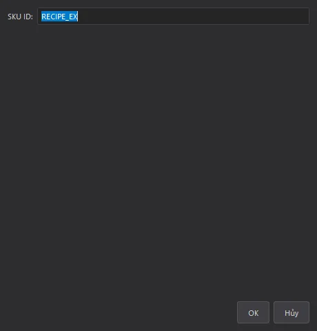
Mở recipe đã có
- Menu , hoặc chọn trong combo Recipe trên thanh công cụ rồi để app nạp.
- Thanh trạng thái dưới cùng hiển thị “Recipe loaded: <sku>” khi nạp xong.
recipes/ ngay trong thư mục cài đặt app.
Bên trong: file <sku>.json (toàn bộ cấu hình) + thư mục con theo ID
chứa ảnh master và các file đi kèm. Sao lưu recipe = copy cả thư mục SKU.
5.Bước 2 — Hiểu cây recipe: SKU → ID → Sub-ID
Panel trái của cửa sổ chính là cây recipe — nơi bạn thực hiện gần như toàn bộ thao tác teach. Cấu trúc của RECIPE_EX:
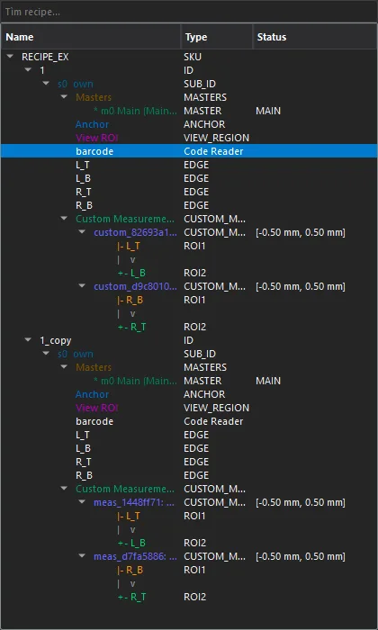
RECIPE_EX → ID 1
→ Sub-ID s0 → Masters / Anchor / các ROI / Custom Measurements.| Node | Click chuột phải để |
|---|---|
Sub-ID (s0) |
Load Master Image…, Capture / Freeze as Main Master…, Add Anchor, Add ROI, Add Custom Measurement…, Rename, Duplicate, Enable/Disable, Delete… |
| Anchor | Draw Anchor, Add & Draw Edge ROI, Add & Draw Area ROI, Edit on image, Rename, Remove… |
ROI (vd L_T) |
Draw ROI, Edit ROI, Move ROI, Measure to Another ROI…, dialog cấu hình theo loại, Duplicate ROI…, Rename, Remove. |
Tạo ID và Sub-ID cho recipe mới
Recipe vừa tạo ở Bước 1 chỉ có node SKU — chưa có ID nào nên cũng chưa có chỗ nạp master hay vẽ ROI. Tạo đúng hai tầng theo thứ tự:
- Chuột phải node SKU (tên recipe) →
→ nhập tên ID (vd
1,top— thường đặt theo camera/vị trí kiểm tra). - Chuột phải node ID vừa tạo →
→ nhập tên Sub-ID (vd
s0). - Sub-ID mới có sẵn các node con Masters và Anchor — từ đây mới nạp được master (Bước 4) và vẽ anchor (Bước 5).
Nếu sản phẩm cần nhiều góc/camera kiểm tra: tạo thêm ID cho từng camera (mỗi ID có camera + master + calibration riêng), và thêm Sub-ID trong mỗi ID nếu cần nhiều vùng inspect độc lập. trên node ID nhân bản toàn bộ cấu hình sang ID mới — hữu ích khi hai camera quan sát cùng kiểu lỗi.
6.Bước 3 — Tổ chức và cấu hình calibration camera
6.1. Calibration được tổ chức ở đâu?
Cần phân biệt kho global trên máy với bản riêng trong recipe. Global giúp dùng lại kết quả khi tạo recipe mới. Khi chạy inspect, phần mềm dùng bản đã cấu hình cho ID trong recipe. Mỗi ID cấp trên là một nơi nhận cấu hình; Sub-ID kế thừa từ cha.
- Kho global trên máy
- Camera A · serial SN-A
- Calibration mặc định AMột bản mặc định cho serial SN-A; chỉ đổi sau khi người dùng xác nhận cập nhật global thành công.
- Camera B · serial SN-B
- Calibration mặc định BĐộc lập với camera A.
- Camera A · serial SN-A
- Recipe sản phẩm
- ID 1 · assigned SN-A
- Bản calibration riêng của ID 1 + Apply ON/OFF
- Sub-ID s0, s1…Dùng camera, calibration và Apply của ID 1; không chọn calibration riêng trong dialog.
- ID 2 · assigned SN-B
- Bản calibration riêng của ID 2 + Apply ON/OFF
- Sub-ID của ID 2Kế thừa cấu hình của ID 2.
- ID 1 · assigned SN-A
6.2. Mở dialog và chọn đúng nơi nhận calibration
- Menu , hoặc
- Tab → nhóm Lens Distortion Calibration → nút Open Calibration… UI thật
Chọn camera trước, rồi chọn Inspection ID
Trong dialog, chọn Camera serial, rồi chọn ID cấp trên đã gán camera đó. Sub-ID dùng camera, calibration và Apply của ID cha. Các đường mở từ Settings, tab Camera và Camera Setup đều dùng cùng recipe đang mở. Chọn camera/ID chỉ đọc cấu hình; không tự bật Apply hoặc ghi recipe.
Capture source là camera thu ảnh; Assigned camera là camera đã gán cho ID. Khi camera chưa kết nối, vẫn có thể nạp file; để áp dụng phải biết kích thước ảnh thu thực tế bằng cách đọc camera hoặc nạp một ảnh raw tham chiếu trong Test Preview. Kích thước trong file calibration không tự chứng minh kích thước ảnh thu.
Mỗi serial có một bản mặc định trong global. Khi gán camera cho recipe mới, phần mềm tra bản này và đề xuất tái sử dụng. Chỉ sau khi xác nhận lens, focus, zoom, cấu hình thu ảnh và kích thước phù hợp, bản đó mới được copy vào recipe và bật Apply. Nếu chưa có bản phù hợp, có thể tiếp tục với Apply OFF.
Calibration đã cấu hình trong recipe được ưu tiên; cập nhật global không đổi recipe cũ. File recipe bị mất, hỏng hoặc sai camera phải được chọn lại rõ ràng, không tự thay bằng global.
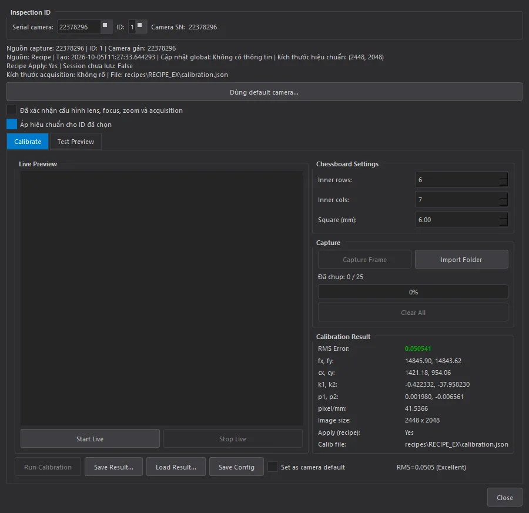
6.3. Dùng calibration có sẵn cho recipe mới
- Gán camera cho ID cấp trên trong cấu hình camera của recipe. Kiểm tra serial vật lí, tránh dùng tên gọi “Camera 1” để suy ra camera thực tế.
- Với assignment mới hoặc thay đổi và ID chưa có calibration, đọc đề xuất global: camera, ngày tạo, ngày cập nhật global, kích thước ảnh và Apply dự kiến.
- Kiểm tra cấu hình quang học: cùng camera, lens, focus, zoom và cấu hình thu ảnh. Kích thước ảnh calibration phải khớp ảnh thu thực tế. Nếu chưa biết size, mở dialog và capture hoặc dùng Test Preview → Import Image… để nạp ảnh raw tham chiếu đúng camera. Không lấy một ảnh đã undistort làm ảnh raw.
- Chỉ xác nhận tái sử dụng khi các điều kiện trên phù hợp. Đề xuất khi gán camera sẽ lưu qua command; trong dialog, bấm Use camera default…, tick xác nhận quang học, chọn Apply theo nhu cầu rồi Save Config.
- Nếu dùng file riêng, chọn Load Result… rồi kiểm tra và Save Config tương tự. Nạp file hoặc chọn global chưa thay calibration đang chạy của recipe.
- Nếu không có global, có thể tiếp tục với Apply OFF hoặc tạo calibration mới. Nếu recipe đã có bản riêng, kiểm tra bản đó trước; phần mềm không tự thay bằng global.
“Mới nhất” trong global là lần người dùng xác nhận cập nhật thành công sau cùng, không phải kết quả có ngày tạo lớn nhất. File cũ thiếu mốc cập nhật hiển thị No information (không có thông tin), không được suy diễn thành ngày tạo.
6.4. Tạo calibration mới bằng bàn cờ UI thật
- Camera serial → Inspection ID: chọn camera và ID cấp trên nhận calibration. Chỉ các ID assigned camera đang chọn được liệt kê.
- Chessboard Settings: nhập Inner rows / Inner cols = số góc trong của bàn cờ (giao điểm đen–trắng, không phải số ô), Square (mm) = cạnh ô thật đo bằng dụng cụ chính xác.
- Live Preview: Start Live / Stop Live — xem trực tiếp để đặt bàn
cờ. Capture: Capture Frame lấy mẫu; bộ đếm
Captured: N / 25gợi ý ~25 mẫu; Import Folder nạp ảnh bàn cờ đã chụp sẵn; Clear All làm lại từ đầu. - Thu mẫu ở nhiều tư thế: nghiêng trái/phải, xoay, gần/xa, phủ cả bốn góc khung hình — tập mẫu đa dạng cho ma trận camera đáng tin.
- Run Calibration → khối Calibration Result hiện RMS Error (reprojection error, px — càng thấp càng tốt; RECIPE_EX ≈ 0,05 px), fx/fy, cx/cy, k1/k2/p1/p2, pixel/mm và Image size. Hệ thống tự loại frame nhiễu (outlier rejection) rồi fit lại.
- Test Preview (khuyến nghị trước khi lưu): Import Image… → Apply Calib Preview → bật Show after calib để so sánh trước/sau undistort; Save Result Image… nếu cần lưu bằng chứng.
- Xác nhận Confirmed lens, focus, zoom and acquisition configuration và kiểm tra Apply calibration to selected ID.
- Save Result… chỉ xuất JSON sang file mới; không gắn file vào recipe. Save Config tạo bản riêng trong recipe, đồng bộ master/domain và lưu cấu hình ID qua transaction. Không cần bấm Save Result trước Save Config.
- Set as camera default mặc định tắt. Chọn ô này để cập nhật global sau khi lưu recipe thành công. Nếu cập nhật global lỗi, recipe đã lưu vẫn giữ nguyên và có thông báo riêng. Ngày tạo calibration và ngày cập nhật global là hai thông tin khác nhau.
- Đã có calibration: dùng Load Result… hoặc Use camera default…, kiểm tra ảnh và cấu hình quang học rồi Save Config. Đổi ID/camera khi có phiên chưa lưu sẽ hỏi Save Config, Discard unsaved changes hoặc Cancel. Khi đóng nhiều phiên chưa lưu, chọn Save all, Discard unsaved changes hoặc Cancel; lỗi lưu một ID sẽ giữ dialog mở.
6.5. Phân biệt các thao tác lưu
| Thao tác | Kết quả | Cách dùng |
|---|---|---|
| Save Result… | Xuất JSON ra một file mới; chưa đổi binding hoặc Apply của recipe. | Dùng để lưu/truyền file kết quả. Chọn tên mới; không ghi đè file đã có. |
| Save Config | Tạo bản riêng, cập nhật ID đang chọn, Apply và master/domain rồi lưu recipe trong cùng quy trình có rollback. | Dùng khi muốn ID sử dụng cấu hình vừa chọn. Không cần Save Result trước. Chỉ coi phiên đã lưu khi thao tác thành công. |
| Set as camera default | Sau khi Save Config thành công, cập nhật global theo serial. | Mặc định tắt. Chỉ bật khi muốn bản này trở thành đề xuất cho các recipe tạo sau. Global lỗi không hủy recipe đã lưu. |
| Save all khi đóng | Lưu lần lượt các ID có phiên chưa lưu. | Một ID lỗi thì dialog còn mở; các ID lưu thành công được giữ. Discard chỉ bỏ thay đổi chưa lưu; Cancel ở lại dialog. |
Trong lúc live, import hoặc xử lí, không đổi camera/ID. Khi đổi lựa chọn có phiên chưa lưu, dùng Save Config, Discard unsaved changes hoặc Cancel; phiên gồm cả ảnh thu và kết quả. Khi quay lại ID, kết quả phiên chưa lưu được ưu tiên hơn file đã lưu trước đó.
6.6. Single-camera và multi-camera
| Tổ chức recipe | Cách cấu hình | Kiểm tra trước khi chạy |
|---|---|---|
| Một camera, một ID cấp trên | Gán serial cho ID; chọn/tạo calibration và Save Config tại ID đó. | Sub-ID dùng cấu hình cha; kiểm tra Apply và file của ID cấp trên. |
| Hai camera, hai ID cấp trên | ID 1 → SN-A, ID 2 → SN-B. Chọn lần lượt camera → ID tương ứng, lưu riêng từng ID. | File camera A không được gán cho camera B. Đối chiếu serial và size của từng camera. |
| Một camera, hai ID có hai bản calibration | Hai ID cùng assigned serial; chọn đúng ID rồi Load Result hoặc chọn global và Save Config riêng. | Hai ID có thể giữ hai bản khác nhau; không dùng global để tự thay bản của ID kia. Khi bật Multi Run, quy tắc scheduling hiện có chỉ cho một serial gán một ID; khả năng cấu hình này không đồng nghĩa chạy đồng thời hai ID cùng camera. |
Gợi ý tổ chức: dùng ID cấp trên làm nơi quản lí camera/calibration; đặt các thao tác đo cùng nguồn ảnh vào Sub-ID phù hợp. Trước khi lưu, đọc lại Capture source, Assigned camera và Inspection ID; không xem Sub-ID là một nơi giữ calibration độc lập.
6.7. Thay calibration khi đã có master/ROI
- Dừng inspection/Run trước khi thay, bật hoặc tắt calibration.
- Trong dialog, chọn bản mới và Apply mong muốn rồi Save Config. Phần mềm đồng bộ master/domain và geometry qua transaction từ dữ liệu raw. Nếu đã chọn Apply ON khi Save Config, không cần bật lại trên tab Camera.
- Nếu dùng checkbox Apply Calibration trên tab Camera để đổi ON/OFF, thao tác cũng phải đồng bộ domain. Thiếu raw/snapshot cần thiết thì bị chặn; làm theo thông báo để nạp/chụp lại master và dạy lại phần geometry cần thiết.
- Sau khi thành công, nạp/chụp ảnh kiểm chứng, kiểm tra overlay anchor/ROI và phép đo. Khi Apply ON, ảnh inspect đi qua undistort và phải cùng domain với master.
6.8. Kiểm tra trạng thái và xử lí lỗi
| Trạng thái | Hành động |
|---|---|
| Chưa có global | Giữ Apply OFF để tiếp tục hoặc tạo calibration mới. |
| Acquisition size: Unknown | Đọc size từ camera hoặc import một ảnh raw đúng nguồn trong Test Preview. Chưa xác định được size thì chưa áp dụng. |
| File recipe mất/hỏng hoặc sai camera | Chọn lại global hoặc import bản đúng serial; xác nhận và Save Config. Khi cần calibration, thao tác bị chặn; runtime không tự lấy global thay thế. |
| Model distortion không hỗ trợ / size không khớp | Dùng kết quả tương thích bốn hệ số k1, k2, p1, p2 của phần mềm và đúng kích thước thu ảnh. Không sửa serial hoặc hệ số trong JSON để bỏ qua kiểm tra. |
| Save Config lỗi | Đọc nguyên nhân, sửa điều kiện dữ liệu/quyền ghi rồi thử lại. Phiên chưa lưu còn giữ; không coi cấu hình mới đã được áp dụng. |
| Recipe saved; camera default update failed | Recipe đã lưu thành công; global chưa đổi. Khắc phục lỗi ghi global rồi chủ động cập nhật lại nếu cần. |
7.Bước 4 — Nạp ảnh master
Ảnh master là “chuẩn” mà mọi anchor/ROI được vẽ lên và là mốc so sánh. Trước khi vẽ anchor hay ROI, phải có ảnh master hiển thị trên viewer — app sẽ chặn thao tác teach nếu chưa có ảnh.
Cách nạp
- Chuột phải node Sub-ID (vd
s0) → (hoặc nút Load Image góc trên phải cho ảnh xem nhanh — khác với master). - Trong dialog Import: UI thật
- Select Image File… — chọn một file ảnh từ đĩa.
- Select from Folder… — duyệt ảnh trong một thư mục.
- Use Current Image — dùng ảnh đang hiển thị trên viewer.
- Capture — chụp từ camera đang kết nối. Nếu camera đang bật Trigger, nút chuyển thành Cancel wait và chờ tín hiệu trigger phần cứng (nhấn lại để hủy chờ).
- Capture (Software) — bắn software trigger để chụp tay ngay lập tức (Basler / Hikrobot), không cần chờ xung phần cứng. Nếu camera đang cấu hình trigger line (vd Line1), app tạm chuyển TriggerSource sang Software rồi khôi phục lại sau khi chụp. Bị chặn khi camera đang giữ bởi multi-camera Run.
- Ảnh được nạp hiện ở khung preview → Confirm để chốt làm master.
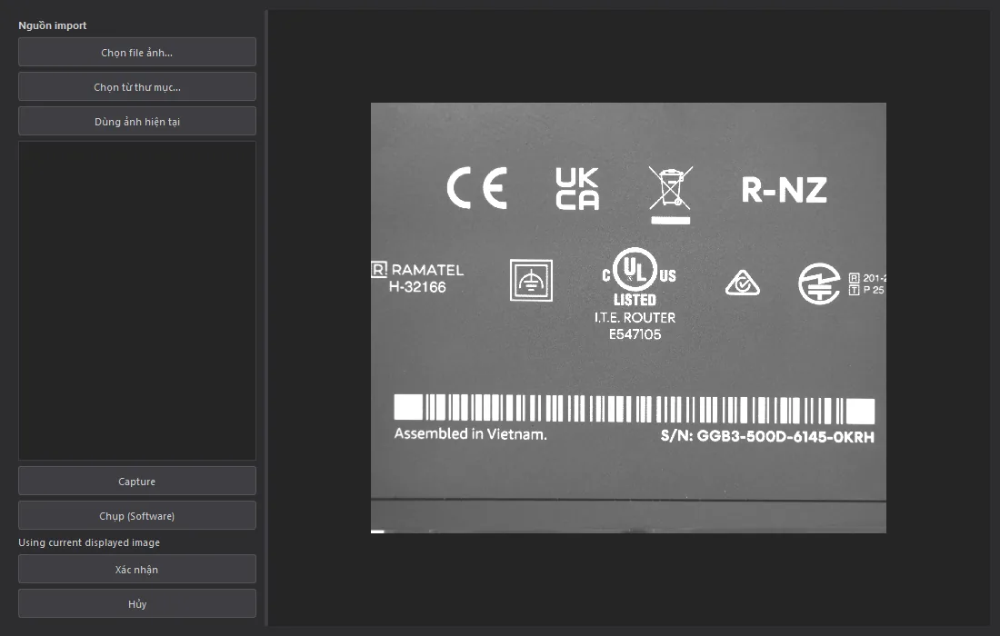
Ảnh master và calibration — “domain” của ảnh
Nếu ID bật Apply Calibration (xem Bước 8 và Cảnh báo), app sẽ hiệu chỉnh méo ống kính ngay trên file master tại chỗ, đồng thời:
- Giữ bản raw gốc trong file backup cạnh master (
master.raw.png). - Ghi một sidecar
master.png.domainđánh dấu domain (vdu:6478a4ba= “đã undistort bằng calibration fingerprint 6478a4ba”). - Remap geometry anchor tương ứng.
Khi inspect, ảnh đầu vào cũng đi qua cùng pipeline tiền xử lý. Phần mềm so domain của master với domain đang chạy:
[ERROR] ID 's0': main master 'm0' was stored in u:6478a4ba domain
but inspect runs in raw domain — recapture the master image8.Bước 5 — Dạy Anchor (điểm tựa định vị)
Anchor là mẫu hình để app tìm vị trí sản phẩm trên từng ảnh inspect. ROI không gắn vào tọa độ ảnh cố định mà gắn vào anchor — sản phẩm lệch/xoay thì ROI đi theo.
Vẽ anchor
- Nạp master lên viewer (Bước 4).
- Chuột phải node Sub-ID → rồi , vẽ khung bao quanh một vùng hình ổn định, đặc trưng của sản phẩm (logo, góc chữ, cạnh chi tiết… — tránh vùng trơn đều hoặc vùng hay đổi như serial in mờ).
- Trên RECIPE_EX, anchor là khung 4 điểm quanh logo “UL LISTED I.T.E. ROUTER” — mẫu có cấu trúc rõ, ổn định giữa các sản phẩm.
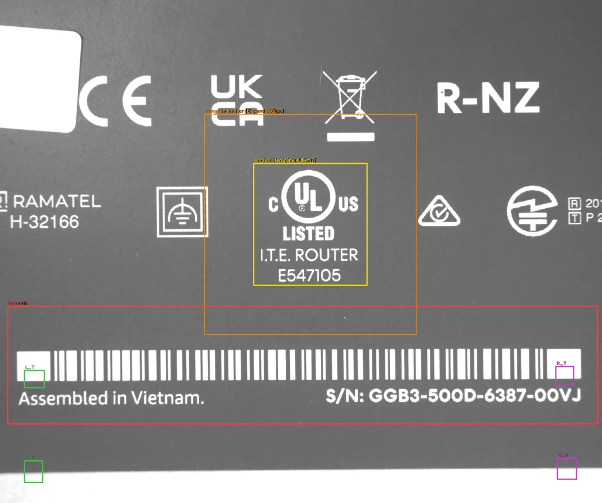
Vùng tìm anchor & ngưỡng khớp — tab Setup → Anchor Expansion
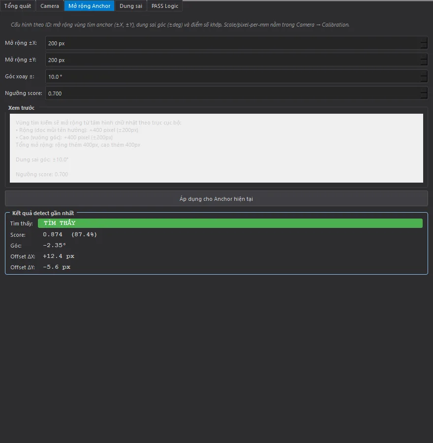
| Trường | Ý nghĩa | Ví dụ RECIPE_EX |
|---|---|---|
| Expand ±X / ±Y (px) | Mở rộng vùng tìm anchor quanh vị trí dạy. Sản phẩm dao động vị trí bao nhiêu pixel thì vùng tìm phải phủ bấy nhiêu. | ±200 px cả hai chiều Ví dụ RECIPE_EX |
| Rotation ± (°) | Dung sai góc xoay của sản phẩm. | 10,0° Ví dụ RECIPE_EX |
| Score threshold | Điểm khớp tối thiểu (0–1) để chấp nhận anchor. Thấp quá → nhận nhầm; cao quá → bỏ sót sản phẩm hợp lệ. | 0,700 Ví dụ RECIPE_EX |
| Apply to Current Anchor | Ghi các giá trị vùng tìm vào anchor hiện tại. Nhớ bấm sau khi chỉnh. | — |
Khối Last Detection Result bên dưới hiển thị kết quả tìm anchor gần nhất (Found/Score/Angle/ΔX/ΔY) — dùng để kiểm tra anchor có ổn định khi test ảnh thật.
Nhiều anchor & gắn ROI vào từng anchor — Shift+drag
Một ID có thể dạy nhiều anchor (mỗi anchor một
anchor_id, gom nhóm bằng group_id trong
AnchorConfig) — hữu ích khi sản phẩm có nhiều mốc tựa vùng khác
nhau, hoặc cần tầng dự phòng khi mốc chính bị che. Việc gắn ROI vào anchor
cụ thể làm bằng cử chỉ Shift+drag trên viewer (kiểu link
arrow), không phải qua hộp thoại:
- Shift+drag từ anchor → ROI: bind ROI đó vào anchor
nguồn — ROI bám theo pose của riêng anchor đó thay vì anchor mặc định.
Phát
anchorRoiLinkRequested. - Shift+drag từ anchor → anchor khác: gộp hai anchor
vào cùng nhóm (
group_id) — phátanchorGroupMergeRequested. - Trong lúc kéo hiện mũi tên rubber-band từ anchor nguồn; thả sai chỗ / nhấn Esc hủy gesture, không đổi binding.
anchor_id mới bắt đầu được link drag —
anchor chưa định danh sẽ log cảnh báo và gesture không khởi động
(fail-loud, không rơi âm thầm sang thao tác move/resize).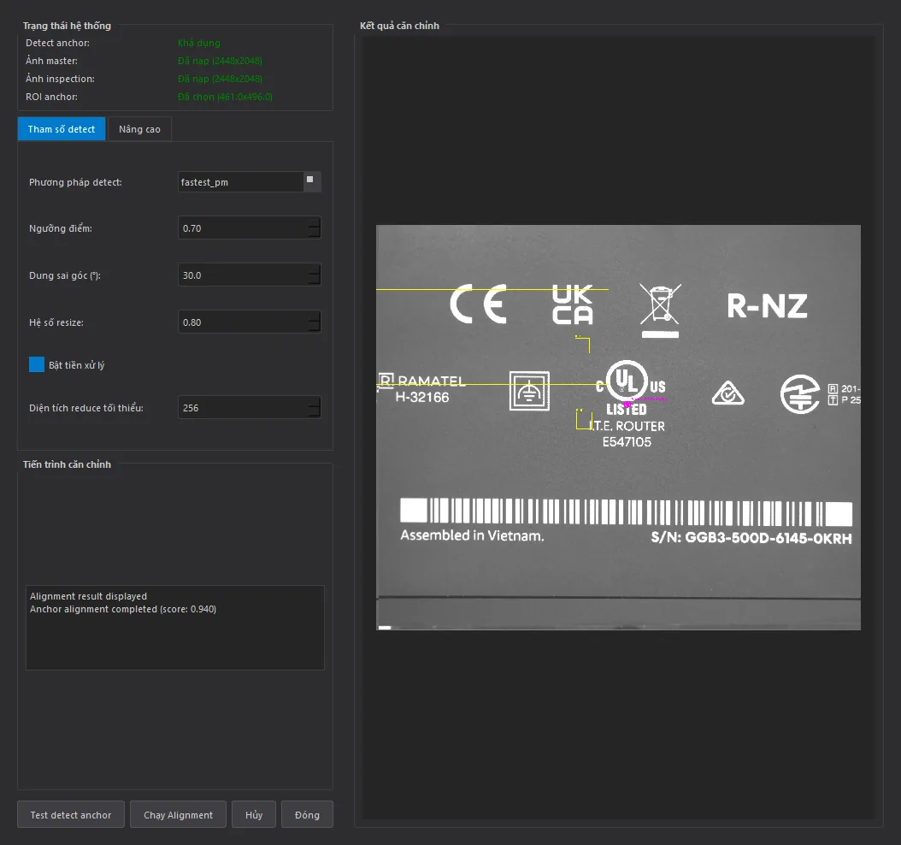
fastest_ppm, Score Threshold 0,70, Angle Tolerance, nút
Test Anchor Detection.9.Bước 6 — Thêm và vẽ hai ROI Edge
Mỗi biên cần đo là một ROI kiểu EDGE. Để đo “khoảng cách hai biên”, bạn
cần hai ROI, mỗi ROI ôm đúng một biên.
- Chuột phải node Anchor →
→ đặt tên (quy ước gợi ý: theo
vị trí, vd
L_T= Left-Top,L_B= Left-Bottom). - Vẽ khung ROI trên ảnh master sao cho:
- Đường biên cần dò đi ngang qua khung;
- Khung đủ ôm vùng biên có thể dao động (kể cả sai lệch vị trí giữa các sản phẩm);
- Tránh vật cản khác trong khung (chữ, vết bẩn lớn) vì chúng tạo biên nhiễu.
- Lặp lại cho biên thứ hai.
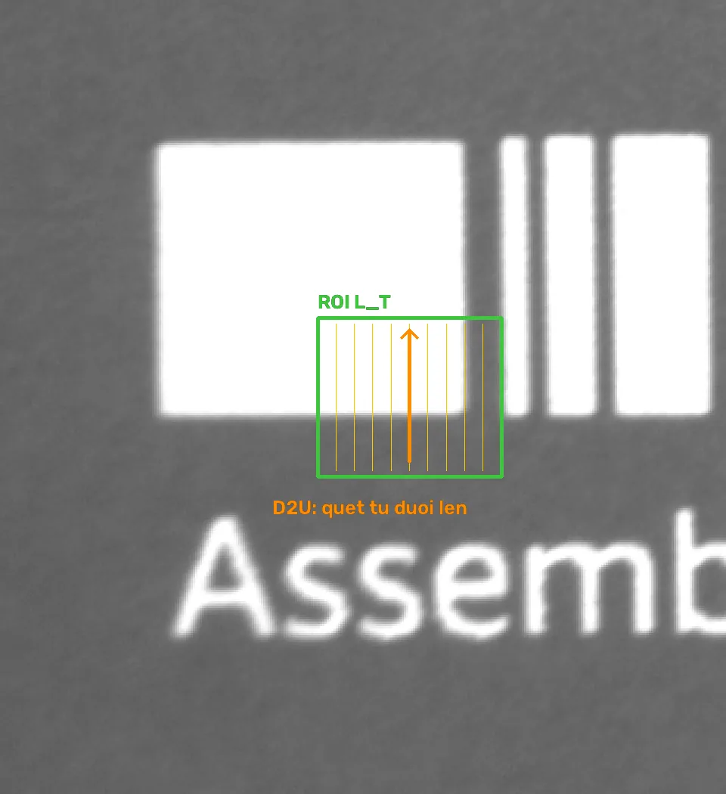
L_T trên master RECIPE_EX: khung xanh lá là
ROI; các tia cam là scanline dò theo hướng D2U (quét từ
dưới lên) để bắt cạnh dưới của vùng trắng.10.Bước 7 — Cấu hình dò biên (Edge Setup)
Đọc dialog Edge Setup theo thứ tự: mở tool, ảnh, vùng, tiền xử lý, tham số, kết quả, rồi một bước kiểm. Cột trái có đúng ba tab Search, Threshold, Edge. Cột phải có ba tab preview Input, Binary, Search Lines. Dialog không có tab ROI.
10.1. Mở
Trên cây recipe, chuột phải ROI loại Edge → Edge Setup. Tiêu đề cửa sổ là Edge Setup.
10.2. Ảnh — tab preview Input
Tab Input hiện crop của chữ nhật ROI đã vẽ: dialog nhận
ảnh cắt theo roi_rect, không phải cả khung master. Overlay chữ
ROI trên crop chỉ đánh dấu đúng vùng cắt đó.
L_T.
Preview đang ở tab Input. Khối Results ghi kết quả dò:
“Edges found: 9”, direction D2U, subpixel center_of_gravity, mean strength 31,20,
confidence 0,929 Ví dụ RECIPE_EX.10.3. Vùng
Vùng tìm là chữ nhật ROI đã vẽ trên master trước khi mở dialog. Không có tab ROI trong Edge Setup để vẽ lại chữ nhật đó. Góc preview còn khung Polygon ROI (Edit Polygon / Clear) — đó là editor polygon gắn trên preview, không phải tab vùng ảnh.
10.4. Tiền xử lý — tab Threshold
Tab Threshold gồm ba nhóm:
- Image Smoothing (Preprocessing) — Enable Smoothing,
Method (
Gaussian Blur,Median Blur,Bilateral Filter), rồi Kernel Size / Sigma hoặc Diameter, Sigma Color, Sigma Space tùy method. - Threshold Configuration — Mode
(
otsu,global_mean,adaptive_mean,adaptive_gaussian,manual), Manual Value, Offset, Invert, Block Size, Contrast boost. RECIPE_EX dùngotsuVí dụ RECIPE_EX. - Contrast boost —
off|clahe. Bậtclaheđể chạy CLAHE (cân bằng histogram thích ứng cục bộ) lên ảnh gray nguồn trước khi threshold — kéo biên tương phản thấp lên đáng kể trên bề mặt sẫm/ánh sáng không đều. Tham sốclahe_clip_limit(2,0) vàclahe_tile_size(8×8) nằm trong config recipe, không có ô trên dialog. Control bị khóa khi mode =color_segment(CLAHE chỉ chạy trên gray). Cùng control này cũng có trên Extreme Setup (§36). - Max Contour Filtering — Enable Max Contour Filter, Min Area, Max Area, Use Largest Contour Only. RECIPE_EX: min 100, max 50000, largest bật Ví dụ RECIPE_EX. Nhóm này chỉ đổi ảnh trên tab preview Binary. Detector không nhận mặt nạ contour đó.
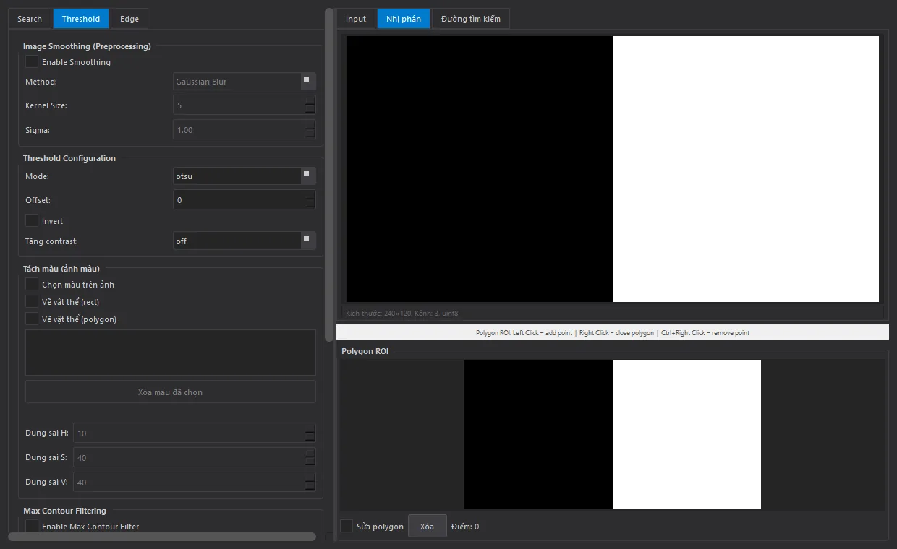
10.5. Tham số — tab Search, rồi tab Edge
Đặt hình học quét ở Search, rồi cách chọn điểm ở Edge.
| Tab | Trường | Ý nghĩa |
|---|---|---|
| Search nhóm Search Direction / Search Position |
Direction | L2R, R2L, U2D, D2U.
Quét vuông góc với biên: biên ngang dùng D2U hoặc U2D; biên đứng dùng
L2R hoặc R2L. RECIPE_EX: D2U
Ví dụ RECIPE_EX |
| Search Lines | Số tia song song trong ROI. RECIPE_EX: 9 Ví dụ RECIPE_EX | |
| Search Length, Start Offset, End Offset | Độ dài tia và phần cắt hai đầu, đơn vị %. Cắt offset khi mép chữ nhật nhiễu. | |
| Edge nhóm Edge Detection / Subpixel Measurement / Acceptance Gates |
Min Strength / Max Strength | Dải độ mạnh chấp nhận. Giá trị tới 1,0 là tỉ lệ so với gradient cực đại trên tia; trên 1,0 là đơn vị gradient tuyệt đối. RECIPE_EX: 0,10 → 1,00 Ví dụ RECIPE_EX |
| Select | first, last, strongest,
weakest, mean.
mean cần subpixel bật.
RECIPE_EX: strongest Ví dụ RECIPE_EX | |
| Enable Subpixel Edge Localization, Method, Fit Radius | Method: linear, parabola, gaussian,
center_of_gravity, edge_fitting,
spline, phase.
RECIPE_EX: center_of_gravity, Fit Radius 3
Ví dụ RECIPE_EX | |
| Min Confidence | Điểm dưới ngưỡng bị loại. RECIPE_EX: 0,70 Ví dụ RECIPE_EX | |
| Acceptance Gates Min Edge Points · Max Outlier Ratio · Min Contrast |
Ngưỡng chất lượng fit — đánh giá sau detect, trước tolerance: ít điểm edge giữ lại hơn ngưỡng, tỉ lệ outlier robust vượt max, hoặc contrast nền↔đỉnh dưới min → NG. Checkbox tắt = gate đó không áp (mặc định tắt — recipe cũ giữ nguyên hành vi). |
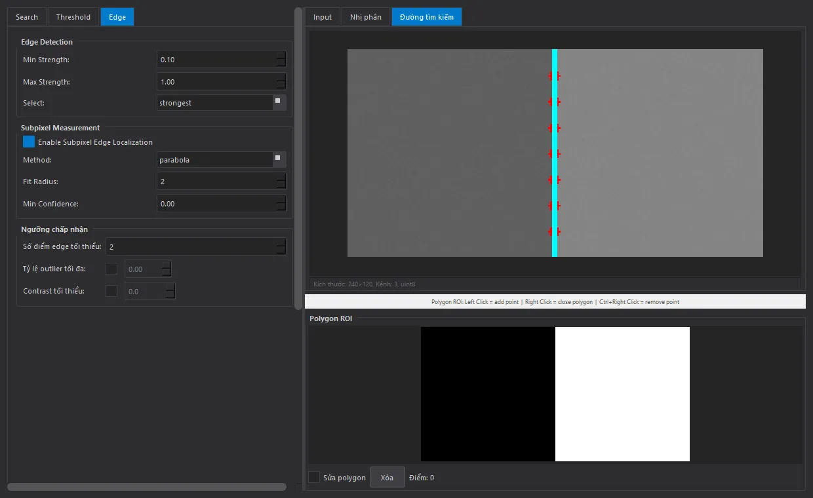
10.6. Kết quả — khung Results
Khung trái dưới tiêu đề Results. Sau khi preview chạy, nội dung bắt đầu bằng dòng Edge Detection Results: rồi Edges found, Search direction, Search lines, Subpixel method, Mean edge strength, Confidence score. Có fitted line thì thêm Fitted Straight Line (Point, Direction, Angle). Dòng Binary preview chỉ mô tả tab Binary. Cuối cùng là Acceptance gates: PASS hoặc Acceptance gates: REJECTED (mã_gate,…) — cùng phép đánh giá runtime dùng, kể cả khi mọi gate đang tắt (lúc đó luôn PASS).
Tab Search Lines vẽ các tia trên crop. Tab Binary là ảnh ngưỡng dùng để soi smoothing và Max Contour Filtering.
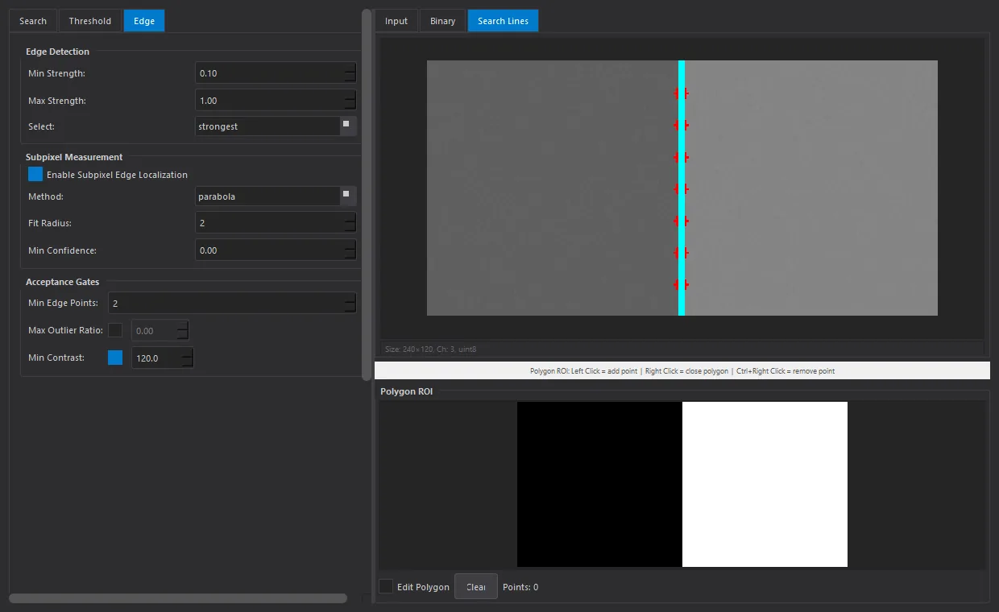
Acceptance gates: REJECTED
(edge_min_contrast) dù 7 điểm biên vẫn bắt được. Runtime dùng
đúng phép đánh giá này: fit bị reject thành NG trước khi so tolerance —
cạnh nhiễu/loãng không thể lọt PASS.10.7. Kiểm tra trước khi đóng
- Đổi một thông số trên Search, Threshold hoặc Edge. Preview tự chạy lại (ảnh đã nạp thì dialog cũng dò một lần lúc mở).
- Đọc Edges found và Confidence score trong Results.
Fitted line phải nằm trên biên cần đo. Số RECIPE_EX ở hình 9 và hình 12 là
ví dụ của ROI
L_T, không phải giá trị mặc định của dialog. - Khi hai số đúng, bấm OK. Dialog đóng và cấu hình được ghi vào ROI. Nút Save đẩy cấu hình đang sửa, không đóng cửa sổ và không phải lần ghi khi đóng. Cancel bỏ cấu hình của lần mở này.
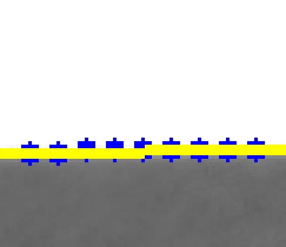
L_T: các điểm biên subpixel
(chấm) và đường fit (vàng). ROI trên RECIPE_EX cho 9 điểm, confidence ≈ 0,93
Ví dụ RECIPE_EX.11.Bước 8 — Thiết lập tỉ lệ pixel/mm
Để số đo ra mm thay vì pixel, app cần tỉ lệ chuyển đổi — thiết lập trong nhóm Calibration của tab (ba trường Scale nằm dưới các nút calibration):
| Trường | Vai trò |
|---|---|
| Scale (mm) | Chiều dài thật của vật chuẩn trên ảnh (mm). |
| Scale (pixel) | Chiều dài đo được trên ảnh của cùng vật chuẩn đó (pixel). |
| Pixel/mm | Chỉ đọc — tự tính = Scale(pixel) ÷ Scale(mm). RECIPE_EX: 368,00 px ÷ 9,0000 mm = 40,8889 px/mm Ví dụ RECIPE_EX |
| From Calibration | Nút bấm — lấy pixel/mm từ file calibration đã nạp và xóa scale refs. Đây là hành động chủ động, app không tự áp. |
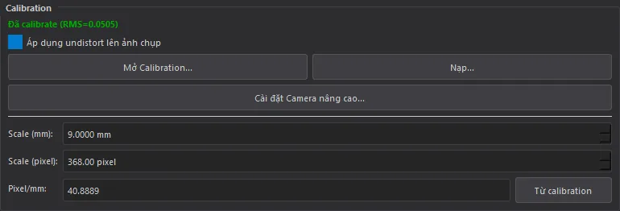
Cách xác định Scale khi không dùng calibration
- Đặt một vật có kích thước biết chính xác (khối chuẩn, thước, hoặc chính đặc trưng của sản phẩm đã đo bằng dụng cụ khác) vào khung hình.
- Đo chiều dài của nó trên ảnh bằng pixel (dùng ROI/đường đo hoặc từ tọa độ).
- Nhập Scale (pixel) = số pixel đo được; Scale (mm) = kích thước thật. Pixel/mm tự cập nhật.
- Lens Distortion Calibration (Bước 4): hiệu chỉnh méo hình học của ống kính — ảnh “phẳng” đúng hình học.
- Scale (pixel/mm): hệ số quy đổi pixel → mm phục vụ số đo. File calibration có chứa một giá trị pixel/mm chẩn đoán từ bàn cờ, nhưng nó không tự động trở thành tỉ lệ đo — phải nhấn From Calibration hoặc nhập Scale thủ công.
12.Bước 9 — Tạo phép đo edge-to-edge
Hai ROI EDGE cho ra hai đường biên; phép đo edge_to_edge tính
khoảng cách giữa chúng.
- Chuột phải node Sub-ID → .
- Đặt Name gợi nhớ, vd
L_T_to_L_B. - Chọn ROI 1 =
L_T, ROI 2 =L_B— app chỉ liệt kê các tổ hợp tương thích (nút Show Compatible Types lọc danh sách kiểu phép đo hợp lệ cho hai ROI đã chọn; với hai EDGE sẽ cóedge_to_edge). - Bật Enable tolerance checking để nhập Nominal, Tolerance −, Tolerance + (đơn vị mm).
- Apply/OK để ghi vào recipe.
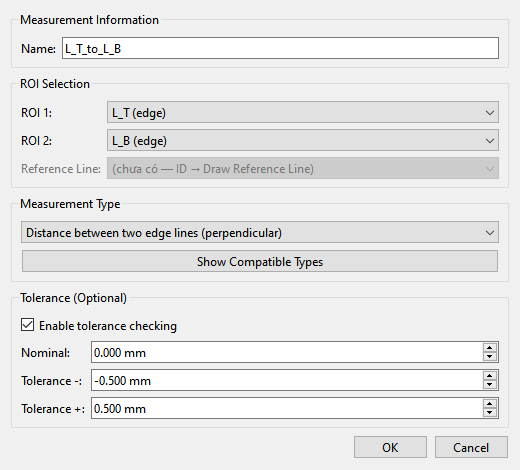
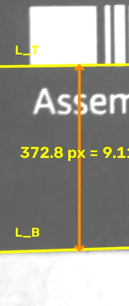
L_T/L_B và khoảng cách 372,8 px = 9,118 mm
theo pixel/mm 40,8889.12.1. Danh mục loại phép đo (Measurement Type)
Bảng này liệt kê toàn bộ loại phép đo combo Type có thể
đưa ra — app chỉ offer loại tương thích với cặp ROI đã chọn. Cột
ROI yêu cầu mô tả nguồn hình học mỗi phía phải cung cấp;
1-ROI nghĩa là chọn cùng một ROI ở cả hai ô. Trừ khi ghi "có dấu",
khoảng cách luôn là giá trị tuyệt đối ≥ 0. Mọi phép đo trả
value=None → FAIL khi thiếu nguồn hình học hoặc thiếu scale
pixel/mm (đơn vị mm chỉ tính được khi đã thiết lập
tỉ lệ ở Bước 8).
| Type | Đo gì | ROI yêu cầu | Đơn vị |
|---|---|---|---|
| Edge ↔ Edge | |||
edge_to_edge |
Khoảng cách trung bình của hai edge — 20 mẫu trên vùng overlap
(xem chú thích dưới bảng: cùng thuật toán với
average_edge_distance) |
2 Edge | mm |
average_edge_distance |
Khoảng cách trung bình trong vùng overlap của hai edge — đồng nhất với edge_to_edge (alias kế thừa) | 2 Edge | mm |
angle_between_edges |
Góc giữa hai fitted edge line | 2 Edge | deg |
perpendicularity |
Độ lệch khỏi vuông góc: |angle − 90°| (0 = vuông góc tuyệt đối) | 2 Edge | deg |
| Edge ↔ đối tượng khác | |||
edge_to_circle_center |
Khoảng cách vuông góc từ edge tới tâm circle | Edge + Circle | mm |
edge_to_contour_nearest |
Khoảng cách gần nhất từ edge tới contour | Edge + Area/MaxContour/Bubble | mm |
edge_to_contour_centroid |
Khoảng cách từ edge tới centroid contour | Edge + Area/MaxContour/Bubble | mm |
| Point nguồn (Extreme / Area point / OD center / Circle center) | |||
point_to_point |
Khoảng cách giữa hai directional point | 2 nguồn point | mm |
point_to_edge |
Khoảng cách vuông góc từ point tới edge fitted line | nguồn point + Edge (thứ tự ô nào cũng được) | mm |
signed_point_to_edge |
Như point_to_edge nhưng có dấu: dương khi point nằm bên trái hướng fitted edge | nguồn point + Edge | mm |
point_to_circle |
Khoảng cách từ point tới tâm circle | nguồn point + Circle | mm |
point_to_circle_edge |
Có dấu: khoảng cách tới viền tròn = d(tâm) − r; âm khi point nằm trong tròn | nguồn point + Circle | mm |
point_to_contour_nearest |
Khoảng cách gần nhất từ point tới contour | nguồn point + Area/MaxContour/Bubble | mm |
points_projected_distance |
Khoảng cách giữa hai point chiếu lên reference line (Reference Line đã dạy hoặc Edge ROI làm trục) | 2 nguồn point + reference | mm |
point_to_reference_distance |
Khoảng cách vuông góc từ một point tới reference axis (Reference
Line hoặc Edge ROI; áp được
reference_rotation_deg) |
1-ROI point + reference | mm |
| Circle | |||
circle_diameter |
Đường kính circle | 1-ROI Circle | mm |
circle_to_circle |
Khoảng cách giữa hai tâm circle | 2 Circle | mm |
circle_radial_gap |
Có dấu: khe hở xuyên tâm = d − r1 − r2; âm khi hai tròn overlap | 2 Circle | mm |
circle_to_contour |
Khoảng cách từ tâm circle tới centroid contour | Circle + Area/MaxContour/Bubble | mm |
| Contour / Area | |||
contour_to_contour |
Khoảng cách giữa hai centroid contour | 2 Area/MaxContour/Bubble | mm |
area_to_roi_centroid |
Khoảng cách từ centroid contour tới ROI thứ hai | Area/MaxContour/Bubble + Edge/Circle/contour | mm |
area_to_roi_nearest |
Khoảng cách gần nhất từ contour tới ROI thứ hai (điểm gần nhất trên đối tượng đích) | Area/MaxContour/Bubble + Edge/Circle/contour | mm |
area_width / area_height |
Rộng / cao của minAreaRect quanh contour | 1-ROI Area/MaxContour/Bubble | mm |
| Kết nối tâm & góc | |||
center_connection |
Đoạn thẳng nối hai tâm kết quả (OD/circle) | 2 OD/Circle | mm |
connection_reference_angle |
Góc từ reference line ngược chiều kim đồng hồ tới đường nối (ROI1 → ROI2), [0, 360) | 2 OD/Circle + reference | deg |
| Chuyên biệt theo ROI | |||
profile_station_result |
Kết quả station profile — value = max |độ lệch| giữa các station | 1-ROI Profile | mm |
distortion_value |
Chỉ số biến dạng của Distortion ROI | 1-ROI Distortion | unitless |
distortion_max_diameter /
distortion_min_diameter |
Dmax / Dmin hiển thị trên overlay của Distortion ROI | 1-ROI Distortion | mm |
led_ss_height / led_ss_base |
Chiều cao silhouette / chiều dài đế (max-Feret) của LED SS | 1-ROI LED SS | um/mm/px theo calibration |
| Phép đo dẫn xuất (nguồn = measurement khác) | |||
meas_delta |
|X − Y| — hiệu tuyệt đối hai giá trị đo | 2 measurement đã bật | mm |
meas_expr |
f(x, …) — biểu thức số học tùy ý trên các measurement đặt tên | ≥1 measurement nguồn | mm |
12.2. Cách dùng — lưu ý semantics từng nhóm
Quy tắc chung của dialog
- Ô ROI 1 / ROI 2: hầu hết type 2-ROI
không phân biệt thứ tự — service tự resolve vai trò
(edge/point/contour) theo kết quả thực tế. Ngoại lệ có hướng:
connection_reference_angle(góc đo ROI1 → ROI2) — đổi chỗ đổi góc. - Type "1-ROI" (circle_diameter, area_width/height, distortion_*, profile_station_result, led_ss_*, meas_delta…): chọn cùng một ROI ở cả hai ô — combo Type chỉ offer khi hai ô trùng nhau.
- value=None → FAIL: thiếu nguồn hình học (chưa detect được), thiếu scale pixel/mm cho đơn vị mm, hoặc đối tượng không tồn tại → phép đo FAIL rõ, không im lặng 0.
Edge ↔ Edge
edge_to_edge=average_edge_distance— hai type gọi cùng một thuật toán (unified): lấy 20 mẫu dọc line 1 trong vùng overlap (giao hai ROI bbox; không overlap bbox → vùng overlap chiếu), mỗi mẫu đo ⊥ tới line 2, trả trung bình. Với hai edge song song → khoảng cách đều; với edge hơi chéo nhau → giá trị = trung bình trong vùng chồng — không phải khoảng cách tại một điểm.angle_between_edges: góc nhọn giữa hai hướng fitted — dùng |dot| nên kết quả nằm trong [0°, 90°]; hai edge "song song ngược chiều" vẫn ra ~0°.perpendicularity: |angle − 90°| — đọc trực tiếp độ lệch khỏi vuông góc (0° = tuyệt đối); thuận tiện hơn tính tay từ angle_between_edges.
Edge ↔ đối tượng khác
edge_to_circle_center/edge_to_contour_centroid: cùng cơ chế — ⊥ từ edge fitted line tới một điểm (tâm circle hoặc centroid contour). Order-independent.edge_to_contour_nearest: điểm gần nhất trên contour (KD-tree trên vertex) — khác centroid: dùng cho clearance mép↔vùng, không bị kéo về tâm.
Point nguồn (Extreme / Area point / OD center / Circle center)
point_to_point: khoảng Euclid giữa hai directional point bất kỳ — type đơn giản nhất cho "2 điểm đặc trưng" (mũi pin↔mũi pin, tâm lỗ↔điểm mốc).- Directional point: Extreme/OD/Area-point trả point
thật; Circle trả
center. Nguồn chưa detect → None → FAIL. point_to_edge: khoảng vuông góc từ directional point (mũi Extreme, điểm Area, tâm OD) hoặc tâm Circle tới edge fitted line — point nằm ô nào cũng được, service tự nhận edge qua fitted_line. Kết quả ghi thêmclosest_point(chân vuông góc) để overlay vẽ mũi tên đo. Dùng cho: mũi pin → biên đế, lệch vị trí điểm đặc trưng so với một cạnh chuẩn. Edge không có fitted line hoặc point chưa detect → FAIL rõ. Đây là đường ngắn nhất cho bài "point → biên": trước đây phải dùngpoint_to_reference_distance(point source) hoặcedge_to_circle_center(circle) tùy loại nguồn — giờ một type cover cả hai.signed_point_to_edge: dương khi point nằm bên trái hướng fitted edge (hướng vector fitted) — convention cố định, tolerance âm/dương theo phía.point_to_circle_edge: d(tâm) − r — âm khi point trong tròn, 0 trên viền, dương ngoài.point_to_contour_nearest: điểm gần nhất là vertex contour (contour production dày điểm; polygon 4 đỉnh chỉ đo tới 4 góc).points_projected_distance: chiếu vuông góc 2 point lên trục reference (Reference Line dạy, hoặc Edge ROI làm trục), trả |t1 − t2| — đo "lệch dọc theo phương chuyền" bỏ thành phần vuông góc.point_to_reference_distance: ⊥ từ point tới trục;reference_rotation_degxoay trục quanh gốc khi cần datum nghiêng.
Circle & Contour
circle_diameter: đường kính fit (2r) — 1-ROI, mm khi đã calibrate; dùng cho spec lỗ/vòng.circle_to_circle: khoảng tâm↔tâm (cùng cơ chế point_to_point trêncenter).circle_to_contour: khoảng tâm circle → centroid contour — cần nearest thay vì centroid thì dùngarea_to_roi_nearest.circle_radial_gap: d − r1 − r2 — âm = hai tròn lồng/overlap; dùng cho khe hở trục-lỗ, độ hở vòng.area_to_roi_nearestvsedge_to_contour_nearest: cùng "nearest" nhưng chiều ngược nhau — area_→ROI đo từ contour tới đối tượng; edge_→contour đo từ edge tới contour (kết quả giống nhau khi cùng cặp hình học).contour_to_contour: chỉ đo centroid↔centroid — cần nearest thật dùngarea_to_roi_nearestvới cả hai là contour.area_to_roi_centroid: từ điểm đại diện của area (point/centroid) tới ROI thứ hai — tự chọn metric theo đối tượng đích: edge → khoảng ⊥; circle → tâm↔tâm; contour khác → centroid↔centroid.area_width/area_height: cạnh củaminAreaRectquanh contour — kích thước hộp xoay của vùng, khác bbox trục; dùng đo rộng/cao phôi nghiêng.
Kết nối tâm & góc
center_connection: độ dài đoạn nối tâm ROI1 → ROI2 (OD hoặc Circle).connection_reference_angle: góc có hướng ngược chiều kim đồng hồ (màn hình) từ reference line tới vector ROI1 → ROI2, miền [0°, 360°) — đổi chỗ ROI đổi góc ~180°; dùng cho phát hiện lắp ngược/xoay hàng.
Chuyên biệt theo ROI
profile_station_result: value = max |độ lệch| giữa các station của Profile ROI — 1-ROI; đọc nhanh worst-station thay vì duyệt từng station.distortion_value:selected_valuecủa Distortion ROI — unitless, không cần pixel/mm; đây là chỉ số dạng hình (circularity/rectangularity/…), không phải khoảng cách.distortion_max_diameter/distortion_min_diameter: Dmax/Dmin đúng cặp đang hiển thị trên overlay — robust modes dùng robust pair, mode thường dùng raw pair (get_displayed_distortion_diameter_prefixlà SSOT chọn prefix); mm khi calibrate.led_ss_height/led_ss_base: height = ⊥ apex→baseline; base = độ dài max-Feret — đơn vị resolve động (µm khi per-axis scale bật, mm khi pixel/mm, px khi chưa calibrate).
Phép đo dẫn xuất — nguồn là measurement khác
meas_delta: ô ROI không chọn ROI mà chọn hai measurement đã có — trả |v1 − v2|. Nguồn thiếu/value=None → FAIL; recipe validator từ chối id nguồn không tồn tại ngay khi load.meas_expr: viết biểu thức số học trên các measurement đã đặt tên (bản đồmeas_sources: tên biến → id measurement) — ví dụ(A + B) / 2. Validator kiểm whitelist biểu thức + thứ tự topo khi load; lỗi số học lúc chạy → None → FAIL.
- Combo Type lọc theo cặp ROI: hai Edge chỉ thấy nhóm edge↔edge;
point↔edge thấy
point_to_edge+signed_point_to_edge; point↔circle thấypoint_to_circle+point_to_circle_edge; hai Circle thấycircle_to_circle+circle_radial_gap+center_connection+connection_reference_angle+circle_diameter. - Thứ tự ROI 1 / ROI 2 không quan trọng với các type mới — service tự nhận phía nào là point, phía nào là edge/circle/contour từ kết quả inspect.
- Type 1-ROI (
circle_diameter,area_width…) yêu cầu chọn cùng một ROI ở cả hai ô — dialog báo lỗi khi chọn hai ROI khác nhau. meas_delta/meas_exprnhận nguồn là measurement đã bật chứ không phải ROI — ô chọn đổi sang danh sách measurement khi chọn type này.
13.Bước 10 — Đặt nominal & dung sai (tab Tolerance)
Tab là bảng tổng hợp mọi phép đo của Sub-ID đang chọn — nơi rà soát và chỉnh nhanh nominal/dung sai thay vì mở từng dialog.
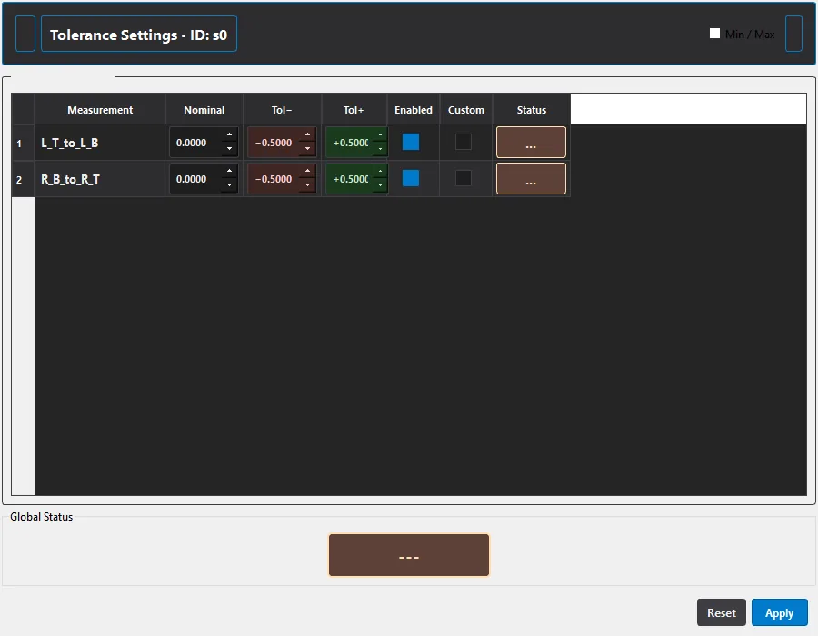
s0 (RECIPE_EX):
hai phép đo, Nominal 0,0000, Tol −0,5000 / +0,5000, Enabled bật.- Measurement / Nominal / Tol− / Tol+ / Enabled — chỉnh trực tiếp trong bảng rồi Apply.
- Min / Max mode (checkbox góc phải) — chuyển cách nhập sang cận min–max tuyệt đối thay vì nominal ± tol.
- Status — hiển thị kết quả gần nhất của từng phép đo.
14.Bước 11 — PASS Logic (logic đánh giá)
Tab định nghĩa cách kết hợp kết quả của các nguồn thành verdict cuối cùng.
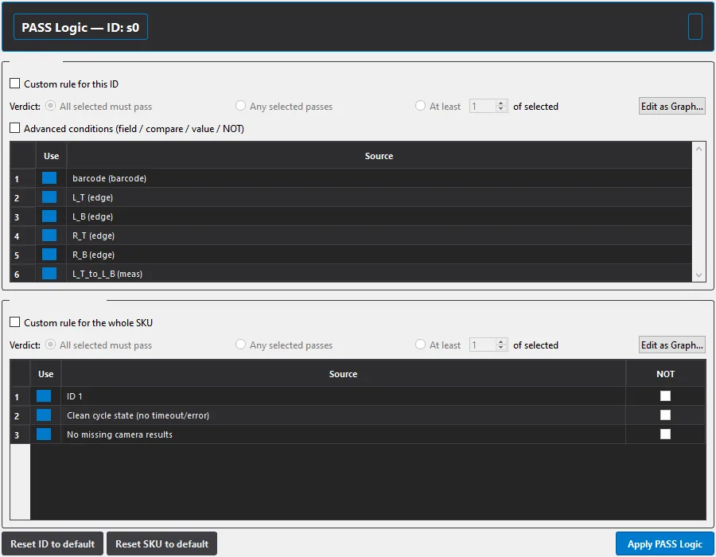
Khối ID verdict
- Verdict: All selected must pass (AND), Any selected passes (OR), At least N of selected.
- Bảng Source — tick Use để chọn nguồn đưa vào luật:
từng ROI (
L_T (edge),barcode (barcode)…) và từng phép đo (L_T_to_L_B (meas)…). - Advanced conditions (field / compare / value / NOT) — điều kiện nâng cao trên trường số học của kết quả (vd edge_confidence ≥ 0,8), cột NOT đảo điều kiện.
- Custom rule for this ID — bật để tách luật riêng cho ID này; Reset ID/SKU to default trả về mặc định; Edit as Graph… mở editor đồ thị (biên soạn cùng luật đó dưới dạng graph).
- Apply PASS Logic — ghi luật vào recipe.
False hợp lệ — NOT roi.passed cho True
đúng như mong đợi. Nhưng một ROI không inspect được (model/backend
lỗi, thiếu config, hình học ROI không hợp lệ, Ignore Area che hết vùng đo) trả
REVIEW: verdict leaf trở thành undetermined —
NOT(undetermined) vẫn undetermined, AND chứa nó không thể PASS.
Chỉ khi một leaf khác độc lập quyết định được kết quả (vd OR có leaf khác
PASS) thì verdict mới PASS — phần lỗi không còn ảnh hưởng. Dòng ROI lỗi ghi rõ
reasons/errors cho biết vì sao không inspect được.
Không dùng NOT roi.passed để bỏ qua ROI hay gặp sự cố — hãy sửa lỗi
hoặc bỏ ROI đó khỏi luật.
Editor đồ thị — Edit as Graph…
Nút Edit as Graph… (ở khối ID hoặc khối SKU) mở dialog
PASS Logic — graph editor: cùng một luật verdict được biên soạn
dưới dạng đồ thị node/dây nối thay vì bảng tick. Graph không phải định
dạng riêng — khi nhấn OK, editor compile đồ thị ngược thành
verdict_rule (cây AND / OR / NOT / AT_LEAST + các leaf
điều kiện) và validate bằng đúng bộ kiểm require_valid_rule như khi
Apply từ bảng. Vị trí node trên canvas chỉ để nhìn; recipe chỉ lưu
verdict_rule, nên hai lần mở cùng một luật có thể bố trí node khác
nhau nhưng runtime đánh giá giống hệt nhau.
Các loại node và port
| Node | Nút toolbar | Port vào | Port ra | Compile thành |
|---|---|---|---|---|
| Measurement | + Measurement | — | value (NUMBER), passed (BOOL) |
Leaf {kind: meas} — passed nghĩa là “phép đo
đạt tolerance của nó”; value là số đo, chỉ nuôi được
Expression/Compare. |
| Expression | + Expression | Mỗi biến khai báo = 1 port NUMBER | value (NUMBER), passed (BOOL) |
Một Custom Measurement kiểu meas_expr mới (upsert vào
custom_measurements khi Apply) + leaf meas của nó. |
| Compare | + Compare | in (NUMBER) | out (BOOL) |
Leaf meas với field: "value" + toán tử/ngưỡng
(value ≤ 0.5…). Đây là cầu nối bắt buộc để biến một số đo
thành điều kiện PASS/FAIL. |
| Condition | + Condition | — | out (BOOL) |
Leaf nguyên dạng trên nguồn của scope: ROI / measurement field /
gate / id / state (vd roi:barcode.passed). |
| AND / OR | AND, OR | Nhiều input BOOL | out (BOOL) |
{op, nodes:[…]} |
| NOT | NOT | Đúng 1 input BOOL | out (BOOL) |
{op:"NOT", nodes:[…]} |
| AT_LEAST | AT_LEAST | Nhiều input BOOL | out (BOOL) |
{op:"AT_LEAST", k:N, nodes:[…]} — double-click node để
đổi N. |
| VERDICT | (có sẵn, không thêm được) | in — đúng 1 dây BOOL | — | Đích của luật; node duy nhất và không xóa được. |
Thao tác trên canvas: kéo từ một port ra sang port
vào cùng kiểu để nối dây — port NUMBER (vào/ra số) và BOOL (điều kiện)
khác màu, nối sai kiểu bị từ chối và lý do hiện ở thanh status đỏ dưới dialog.
Double-click node để sửa tham số (Measurement → tên/tolerance; Expression →
dialog đầy đủ; Compare → toán tử + ngưỡng; Condition → nguồn/field/compare;
AT_LEAST → N). Chọn node hoặc dây rồi nhấn Del/Backspace
hoặc nút Delete để xóa. Lăn chuột để zoom, kéo nền để pan, nút
Fit căn lại toàn đồ thị.
custom_measurements khi
Apply PASS Logic. Nếu chỉ muốn phép đo không tham gia verdict, đừng đưa
nó vào graph (hoặc gỡ checkbox Use ở bảng Source) — đừng xóa node rồi
Apply.Luật nối dây — khi nào OK bị từ chối
- Đúng một node
VERDICT, nhận đúng một dây BOOL vào portin. - Kiểu port phải khớp: NUMBER → NUMBER, BOOL → BOOL. Số đo
(
value) không nối trực tiếp vào toán tử hayVERDICT— phải qua Compare hoặc dùng portpassed. NOTnhận đúng 1 input;Comparenhận đúng 1 input NUMBER; mỗi port biến của Expression nhận đúng 1 dây.- Mọi node phải có đường đi tới
VERDICT— node mồ côi là lỗi authoring, không bị lặng bỏ qua. - Không chu trình (dây quay vòng bị từ chối).
Sai bất kỳ luật nào → OK không đóng dialog, status bar đỏ hiện lỗi thay vì âm thầm sửa graph. Sửa xong nhấn OK lại.
Node Expression — phép đo meas_expr
+ Expression tạo phép đo dẫn xuất tính từ các phép đo khác. Dialog có
các trường: Name (tên hiển thị), Variables (tên
biến, phân cách bởi dấu phẩy — mỗi biến thành một port NUMBER vào),
Expression (biểu thức trên các biến),
Nominal / Tol− / Tol+ (dung sai của phép đo dẫn xuất, nuôi port
passed), Result unit (đơn vị kết quả).
Biểu thức được parse qua AST Python với whitelist — không phải
eval tùy ý. Phép toán: + − * / // ** % và dấu
một ngôi; hàm: abs, min, max, round, sqrt, pow, floor, ceil, clamp,
hàm lượng giác, hypot, degrees, radians, exp, log, log10, fabs.
Biến nào cũng phải được nối dây từ port value của một Measurement —
đó là cơ chế bind meas_sources (tên biến → measurement_id) khi lưu.
Nếu một nguồn không sinh giá trị (đo thất bại), phép đo dẫn xuất và leaf đánh giá
về “undetermined” → tính False, không bao giờ lật thành PASS ngầm.
Ví dụ RECIPE_EX — chênh lệch hai khoảng cách |L_T_to_L_B − R_B_to_R_T|
Bài toán. Recipe RECIPE_EX đo hai khoảng cách cạnh:
L_T_to_L_B (khe trái, giữa ROI L_T và L_B)
và R_B_to_R_T (khe phải, giữa R_B và R_T).
Yêu cầu thực tế thường không phải “từng khe đạt tolerance” mà “hai khe phải
bằng nhau” — tức kiểm tra độ song song/cân đối:
|trái − phải| ≤ ngưỡng. Bảng tick thường không làm được vì không có
toán tử giữa hai measurement → đây là lúc cần graph + Expression.
L_T_to_L_B và R_B_to_R_T
đều có nominal 0.0, tol ±0.5 — hai ràng buộc đó đánh giá
từng khoảng cách độc lập. abs(trái − phải) là một ràng buộc
khác: trái = 10.4 và phải = 9.6 cùng qua tolerance riêng (giả sử nominal
10.0 ± 0.5) nhưng chênh nhau 0.8 — chỉ expression mới bắt được. Ngưỡng của
abs-delta phải được khai báo riêng, không được suy ra từ tolerance nguồn.
Ngưỡng 0.50 mm trong ví dụ dưới chỉ là minh họa — recipe
RECIPE_EX hiện chưa lưu phép đo meas_expr nào; cần tự đặt ngưỡng theo
spec sản phẩm rồi Apply/Save.Số học kiểm chứng tay: trái = 10.20, phải = 10.05 →
abs(10.20 − 10.05) = 0.15 ≤ 0.50 → PASS. Trái = 10.20, phải = 9.40 →
abs(0.80) = 0.80 > 0.50 → FAIL. Hai nguồn phải cùng đơn vị trước
khi trừ (cùng qua scale mm, hoặc cùng px nếu recipe đo px).
Các bước vẽ graph (mở từ khối ID verdict, đã bật Custom rule for this ID):
- + Measurement ×2 — chọn
L_T_to_L_BvàR_B_to_R_Ttừ danh sách phép đo của ID (danh sách chỉ gồm measurement đã enable; chưa có thì thêm ở tab Tolerance trước). - + Expression — Name
delta_L_R, Variablesleft, right, Expressionabs(left - right), Nominal0, Tol±0.50(ví dụ), Result unitmm. Nhấn OK → node xuất hiện với 2 port vàoleft/right— xem Hình 16a. - Kéo port
valuecủaL_T_to_L_B→ portleft;valuecủaR_B_to_R_T→right. Dây NUMBER chỉ nối được vào port NUMBER. - + Compare — để mặc định
≤, nhập ngưỡng0.50. Nốivaluecủadelta_L_R→incủa Compare →outgiờ là điều kiện BOOL “delta ≤ 0.5”. - Thêm AND: nối
outcủa Compare +passedcủaL_T_to_L_B+passedcủaR_B_to_R_T(để “đo hỏng” cũng FAIL) + điều kiệnroi:barcode.passedqua + Condition →outcủa AND →incủa VERDICT — xem Hình 16b. - OK → status sạch thì dialog đóng; quay tab PASS Logic nhấn Apply PASS Logic rồi Save Recipe.
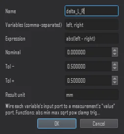
delta_L_R:
Variables left, right tạo hai port vào NUMBER; Expression
abs(left - right); Tol± đặt ngưỡng abs-delta.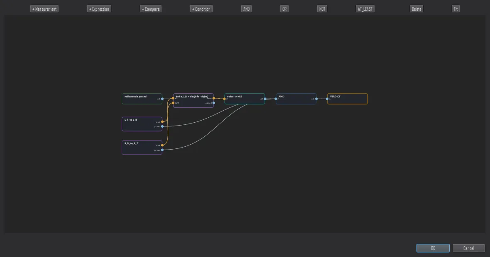
value hai phép đo nguồn → port left/
right của Expression → value → Compare
≤ 0.5 → AND với passed các nguồn + barcode →
VERDICT.Sau khi Apply + Save, recipe RECIPE_EX sẽ chứa thêm một phép đo
meas_expr và verdict_rule cấp ID, dạng:
"custom_measurements": [ …,
{ "name": "delta_L_R", "measurement_type": "meas_expr",
"expression": "abs(left - right)",
"meas_sources": { "left": "<id L_T_to_L_B>",
"right": "<id R_B_to_R_T>" },
"nominal": 0.0, "tolerance_minus": -0.5, "tolerance_plus": 0.5,
"result_unit": "mm" } ],
"verdict_rule": { "op": "AND", "nodes": [
{ "kind": "roi", "id": "barcode" },
{ "kind": "meas", "id": "<id L_T_to_L_B>" },
{ "kind": "meas", "id": "<id R_B_to_R_T>" },
{ "kind": "meas", "id": "<id delta_L_R>", "field": "value",
"cmp": "<=", "value": 0.5 } ] }meas_expr và chưa có verdict_rule cấp ID — toàn bộ mục
này là quy trình cấu hình ví dụ. Graph chỉ có hiệu lực production
sau khi OK → Apply PASS Logic → Save Recipe; I/O vẫn đi từ verdict cuối
cùng, không có đường tính PASS/FAIL song song nào khác.Kiểm chứng graph sau khi Apply
- Chạy một ảnh OK đã biết: cả hai khe đo được, delta nhỏ → verdict PASS.
- Chạy một ảnh NG cố tình (hai khe lệch nhau lớn) →
delta_L_Rvượt ngưỡng → FAIL, trace cho thấy đúng leaf compare gây FAIL. - Thử trường hợp một phép đo nguồn không ra số (mất biên): verdict phải là FAIL/undetermined chứ không PASS — kiểm tra trace leaf tương ứng.
- Save Recipe → đóng/nạp lại recipe → mở lại Edit as Graph… xác nhận expression, binding biến → nguồn, ngưỡng compare còn nguyên.
15.Bước 12 — Lưu và nạp lại recipe
- Lưu: menu hoặc nút
Save trên toolbar trái. Toàn bộ cấu hình ghi vào
recipes/<sku>/<sku>.json(kèm file .bak backup tự động). - Nạp lại / kiểm chứng: mở recipe khác rồi mở lại recipe vừa lưu, hoặc menu (lưu + nạp lại ngay). Rà soát trên cây và các tab rằng anchor, ROI, phép đo, tolerance, PASS Logic còn nguyên — đây là kiểm chứng cấu hình “sống sót” qua vòng save/load.
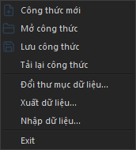
16.Bước 13 — Chạy kiểm chứng trên ảnh
Không cần camera để kiểm chứng ban đầu — inspect trực tiếp trên file ảnh:
| Menu | Phím | Dùng khi |
|---|---|---|
| Ctrl+O | Nạp 1 ảnh lên viewer để xem/can thiệp. | |
| F5 | Chạy inspect trên ảnh đang hiển thị. | |
| Ctrl+Shift+O | Inspect lần lượt mọi ảnh trong folder (Run mode). | |
| Ctrl+Shift+I | Batch toàn folder — dùng cho bộ ảnh test lớn. | |
| — | Teach: thử tối đa N ảnh folder, không xuất I/O dây chuyền. | |
| — | Chụp + inspect một frame từ camera thật. |
Quy trình kiểm chứng khuyến nghị
- Load 1 ảnh OK → F5 → xem overlay: anchor khớp đúng? ROI bám đúng biên? Verdict đúng mong đợi?
- Chạy cả folder ảnh test → đọc bảng kết quả từng ảnh + thống kê.
- Nếu có ảnh NG thật: xác nhận chúng FAIL vì đúng lý do (số đo lỗi), không phải vì mất anchor/mất biên.
- Chỉ sau khi folder test ổn mới mở Run mode với camera/I/O thật.
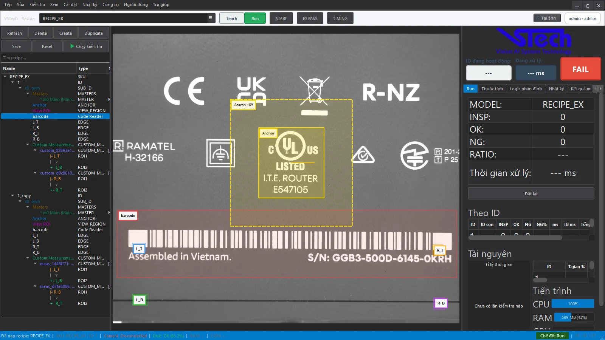
17.Đọc kết quả & ví dụ thực tế (RECIPE_EX)
Trên màn hình
- Badge verdict (phải trên): PASS xanh / FAIL đỏ của lượt cuối.
- Tab Run: đếm INSP/OK/NG/RATIO, bảng By ID (từng camera, số lượt, thời gian), thời gian xử lý Processing.
- Tab Log: bảng từng lượt — Cycle ID, Camera ID, Tool, Value, Lower, Upper, Status, Error. Đây là nơi đọc vì sao FAIL: cột Value của phép đo, cột Status của ROI, cột Error khi ERROR.
- Log file trong thư mục
log/ghi chi tiết pipeline (preprocess domain, anchor score, từng measurement, verdict, I/O). - Còi FAIL: verdict FAIL phát ba tiếng bíp
3,5 kHz (180 ms bíp / 150 ms nghỉ, tổng ~0,84 s) — phát async bằng
QSoundEffect, không block chu kỳ inspect; thiếu Qt Multimedia → fallbackQApplication.beep()theo timer. Áp cho cả chu kỳ đa camera lẫn inspect một ảnh load tay. Không kêu? kiểm endpoint audio mặc định của Windows (vd Realtek Digital Output là cổng S/PDIF — loa jack 3,5 mm cần đổi default playback device).
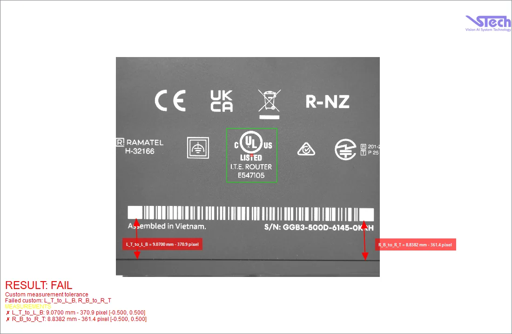
InspectionService +
chính các hàm vẽ overlay của app): anchor xanh khớp (score 0.96), hai mũi tên
đo L_T_to_L_B = 9.0700 mm − 370.9 px và R_B_to_R_T = 8.8382 mm −
361.4 px màu đỏ vì vượt dung sai, banner RESULT: FAIL góc
dưới kèm nguyên nhân (Custom measurement tolerance · Failed custom:
L_T_to_L_B, R_B_to_R_T) và khối MEASUREMENTS liệt kê cửa sổ dung
sai [-0.500, 0.500] từng phép. Đây là đúng những gì operator đọc trên màn hình
sau một chu kỳ.Case study thật: RECIPE_EX trên 30 ảnh folder ok 2
Khi chạy folder kiểm chứng thật của RECIPE_EX (30 ảnh BMP, calibration bật):
FPM probe: [s0=0.9785] → inspect s0 (anchor khớp tốt)
preprocess: undistort(cam=22378296 rms=0.0505) → domain u:6478a4ba
Kết quả: 0 PASS / 30 FAIL / 0 ERROR — ~56 ms/ảnh
· Các ROI edge đều dò được biên (PASS ở tầng ROI)
· Phép đo L_T_to_L_B ≈ 9,117 mm; R_B_to_R_T ≈ 8,900 mm
· Nominal recipe = 0 ± 0,5 mm → cả hai phép đo vượt dung sai → verdict FAIL
· COM/PLC skipped (io_disabled / output map trống)Bảng đối chiếu khi bật/tắt Apply Calibration (đo trên 30 ảnh thật)
| Phép đo | OFF + master raw | ON + master calib | Δ |
|---|---|---|---|
L_T_to_L_B | 8,9965 mm | 9,1180 mm | +0,1216 mm |
R_B_to_R_T | 8,8161 mm | 8,9000 mm | +0,0839 mm |
18.Xử lý sự cố thường gặp
| Triệu chứng | Nguyên nhân thường gặp | Cách xử lý |
|---|---|---|
| ERROR “master … stored in u:… domain but inspect runs in raw domain” | Apply Calibration vừa đổi (ON↔OFF) nhưng master chưa đồng bộ lại, hoặc master từ recipe khác. | Để app đồng bộ master từ backup (dialog hỏi khi bật); nếu bị chặn vì master legacy thiếu snapshot → chụp/nạp lại master trong đúng domain mong muốn rồi dạy lại geometry. |
| Anchor không khớp (score thấp, Found = no) | Vùng tìm quá nhỏ, mẫu anchor nghèo texture, ngưỡng score cao, sản phẩm xoay quá Rotation ±. | Tăng Expand ±X/±Y, chọn lại vùng anchor đặc trưng hơn, nới Score threshold từng bước, tăng Rotation ±. Kiểm chứng bằng Anchor Alignment. |
| ROI “Edges found = 0” | Direction sai, biên ngoài vùng quét, threshold/subpixel lọc hết, ROI trượt theo anchor sai. | Mở Edge Setup → nhìn preview + Results; sửa Direction vuông góc biên; nới Min Confidence; kiểm tra ROI có đi theo anchor đúng không. |
| Tất cả FAIL dù ảnh đẹp | Nominal/tolerance sai bản chất (như case RECIPE_EX), hoặc tick thiếu/thừa nguồn trong PASS Logic. | Đọc Log: phân biệt FAIL-do-số-đo vs FAIL-do-ROI vs ERROR. Đối chiếu nominal với bản vẽ. |
| Số đo sai hệ thống (lệch một lượng cố định) | Pixel/mm sai, hoặc ảnh dạy khác domain với ảnh inspect (calib lệch). | Kiểm lại Scale trên vật chuẩn; đảm bảo master + inspect cùng domain (xem Cảnh báo). |
| App chặn teach (“master required”) | Chưa có ảnh master trên viewer. | Nạp master (Bước 4) rồi vẽ tiếp. |
| Trong dialog Camera Calibration không thấy chỗ chọn camera | Thiết kế cố ý: camera nguồn = camera đang kết nối trên tab Camera; combo
ID: chỉ chọn Inspection ID. |
Đóng dialog → kết nối/chọn đúng camera trên tab Camera → mở lại. Nếu ID đã gán serial khác, bind sẽ bị gate chặn đúng (xem Bước 3). |
| ROI SEG_DEF luôn FAIL hoặc inspect báo lỗi model | Thiếu artifact, sai fingerprint, min_area chưa đặt, hoặc mask/train lệch class — nhóm lỗi riêng của pipeline AI. | Xem bảng lỗi SEG_DEF chi tiết ở mục 21.11. |
| Không tìm thấy trợ giúp khi nhấn F1 | Bộ cài thiếu thư mục docs/help. |
Kiểm tra <app>/docs/help/basic_recipe_guide_vi.html tồn
tại; liên hệ bộ phận build nếu release thiếu file. |
19.Cảnh báo & giới hạn đã biết
<sku>.json, master.png, master.raw.png,
master.png.domain là một bộ liên kết — sửa/xóa/copy tay một file sẽ làm
domain mâu thuẫn và bị chặn lúc inspect. Mọi thay đổi qua UI rồi Save Recipe.
- Master cũ (tạo trước cơ chế domain) có thể thiếu backup geometry → chuyển ON→OFF calibration bị chặn với thông báo rõ; cần chụp/nạp lại master thay vì cố “lách” bằng tay.
- Lựa chọn “ảnh đã calib sẵn” khi nạp ảnh inspect ngoài chỉ bỏ bước undistort — flat-field/xoay vẫn áp theo cấu hình ID. File đã qua toàn bộ pipeline sẽ bị xử lý lại các bước còn lại.
- Giá trị pixel/mm lưu trong file calibration chỉ là chẩn đoán từ bàn cờ — không tự động dùng cho đo. Luôn kiểm chứng Scale bằng vật chuẩn.
- Kết quả calibration chỉ lưu 4 hệ số méo (k1, k2, p1, p2) — nếu quá trình fit có hệ số bậc cao khác (k3), mô hình lưu trên disk có thể khác mô hình vừa fit; kiểm chứng bằng Test Preview trước khi tin RMS.
- Kiểm tra domain master hiện chạy sau bước probe sub-ID; thông báo lỗi có thể xuất hiện sau một nhịp log FPM — đây là hành vi hiện tại, không phải lỗi đo.
- Viện trợ F1 mở trang tổng; một số dialog ánh xạ tới đúng mục tương ứng, các màn hình còn lại về đầu trang.
- Không “PASS lặng”: lỗi pipeline → ERROR → kết quả cuối FAIL + log lý do.
- Không số đo bịa: thiếu scale → mm = không khả dụng chứ không hiển thị số bừa.
- Không domain mập mờ: master/inspect khác domain → chặn rõ, không tự sửa lặng.
II.Vận hành ca sản xuất — từ bật máy tới tắt máy
Phần này dành cho operator ca: mọi bước từ lúc bật app tới khi tắt đúng cách, kèm ý nghĩa kỹ thuật của từng trạng thái màn hình. Phần build recipe chi tiết ở các Bước 4–15; phần này chỉ nói vận hành.
II.1. Khởi động app — chuỗi sự kiện đầu tiên
- Dependency probe: app quét danh sách package bắt buộc trước khi mở UI chính. Đủ → vào thẳng; thiếu → mở setup dialog: step navigator Check → Install → Finish, nút Show details mở log cài đặt, nút Start application chỉ bật khi cài thành công. Cài lỗi → nút Close + details tự mở — không vào UI chính (fail-loud, không nửa-vời). Bản packaged thiếu lib → hộp thoại "Packaged application is missing libraries: …".
- Main window mở: khôi phục chế độ Teach/Run lần
cuối từ
ui/last_mode— máy tắt khi đang Run thì lần sau mở vẫn ở Run. - Đăng nhập (): quyền sửa recipe/setup yêu cầu role đúng; chưa đăng nhập → nhãn "Current: Not logged in" và các thao tác cấu hình bị khóa.
- Camera: các camera gắn
auto_connecttự mở theo recipe đang nạp; camera lệch config phần nào vẫn giữ kết nối (chỉ camera chết/không thấy mới báo mất). - Update check: app kiểm bản signed-installer mới hơn trong background — có bản mới hiện hộp thoại offer current → latest; đang Run thì không offer và không cài được (install bị chặn, báo "Update was not installed because Run is active"); check lỗi → cảnh báo, không chặn app.
II.2. Teach vs Run — hai chế độ vận hành
| Teach (mặc định an toàn) | Run (production) | |
|---|---|---|
| Ý nghĩa | Frame camera không tự inspect — dạy/chỉnh recipe | Mọi trigger/frame đi qua pipeline → verdict → I/O |
| Nhận diện | Banner vàng đỉnh màn hình: "TEACHING MODE — camera frames do not auto-inspect; Load Image / Load Folder still run inspection" + chip "Mode: Teaching" | Banner tắt, chip "Mode: Run", status bar "RUN MODE — PLC <state> (<port>)" |
| Inspect tay | Load Image / Load Folder / F5 vẫn chạy bình thường | Như trái + thêm nguồn trigger line |
| Đổi chế độ | Hai nút segmented Teach | Run trên header
(cam khi Teach, xanh khi Run) — nút bấm phát tín hiệu xuống
combo_mode SSOT ẩn, không tự giữ trạng thái; giá trị
lưu vào ui/last_mode, phục hồi khi mở lại app | |
II.3. Vào ca — trình tự chuyển sang Run
- Mở đúng recipe của mã đang chạy ().
- Kiểm camera: thumbnail live cập nhật, không có banner mất kết nối; camera gãy sẽ tự heal khi link quay lại — viewer tự đồng bộ theo trạng thái registry thật.
- Kiểm anchor/score trên vài sản phẩm đầu line nếu vừa đổi mã (F5 trên 1 frame).
- Đổi combo sang Run. Lúc này PLC link tự connect
(
user_initiated):
| Status bar hiện | Nghĩa là |
|---|---|
RUN MODE — PLC <state> (<port>) |
Link PLC đã mở — chu kỳ trigger/reject hoạt động |
RUN MODE — PLC link missing |
Không có link manager — kiểm PLC tab/cấu hình COM |
| (không có dòng RUN MODE) | PLC bị tắt trong cấu hình (quiet skip — cố ý) hoặc transport COM-serial đang chiếm → log ghi "PLC Run mode skipped" |
II.4. Trong ca — theo dõi gì
- Tab Run: đếm INSP/OK/NG/RATIO + hàng Process Time (chu kỳ ms) + bảng By ID + gauge Resources (CPU/RAM/GPU/ VRAM) — nút Reset zero bộ đếm model hiện tại (có confirm; lịch sử thống kê đã lưu vẫn giữ); nhãn đỏ dưới bảng báo khi persist counter thất bại.
- Tab Log: từng lượt Cycle/Camera/Tool/Value/Status — đọc nguyên nhân FAIL (Value vượt dung sai vs Status ERROR).
- Còi FAIL: 3 bíp 3,5 kHz mỗi lượt FAIL — nghe được kể cả khi không nhìn màn hình (§17).
- Banner cảnh báo: COM hardware lost alarm hiện khi cổng I/O mất; banner Teach nhắc đang ở chế độ dạy.
- Camera self-heal: mất kết nối tạm → app tự đồng bộ viewer khi camera sống lại; chỉ camera thật sự dead mới báo lỗi — không cần thao tác reconnect tay trong ca.
- Overlay: geometry + verdict trên frame — Zoom Fit/ 1:1/Reset giữ nguyên qua reload Run (không bật zoom mỗi frame).
II.5. Đổi mã sản phẩm (changeover)
- Đổi combo về Teach (dừng nhận trigger line).
- → chọn SKU mới.
- Rà soát nhanh: cây đủ ID/ROI, camera serial đúng máy, Pixel/mm hợp lệ, PASS Logic đúng nguồn.
- Inspect thử trên sản phẩm thật (F5 vài lần hoặc ) — PASS/đúng NG mới được lên chuyền.
- Đổi lại Run → xác nhận status PLC link (II.3) → bàn giao line.
II.6. Kết thúc ca / tắt đúng
- Đổi về Teach → ngắt nhận trigger trước.
- Save Recipe nếu có chỉnh sửa trong ca.
- — chuỗi shutdown chạy theo
thứ tự: gỡ abort-guard → lưu
ui/last_mode→ dừng JPEG log queue → dừng retention scheduler → đóng COM serial → đóng camera. Không tắt app bằng Task Manager — queue JPEG có thể mất ảnh log đang chờ ghi. - Máy line 24/7: không tắt app cuối ca — ca sau tiếp tục Run; chỉ tắt khi bảo trì/cập nhật.
II.7. Menu chuột phải trên cây recipe — theo node
| Node | Các mục chuột phải |
|---|---|
| SKU (gốc) | Add ID · Save Recipe · Expand/Collapse All · Duplicate ID… · Set/Unset as Master Config + "Current Master: …" · Rename · Enable/Disable · Delete |
| Sub-ID (mã con) | Load Master Image… · Capture / Freeze as Main Master… · Show Master · Add Anchor · Add ROI ▸ (19 loại, menu sinh từ registry theo build) · Draw Reference Line · Flat-Field Reference… · Ignore Area (all ROIs) ▸ (Draw Ignore Polygon + Delete <id> + Clear All) · Add Custom Measurement… · Add Angle to Reference… · Measure Average Edge Distance · Summary OD · Rename · Delete |
| Anchor | Draw Anchor · Add & Draw Edge/Area/Line_SEG-C/SEG_DEF ROI (khi đủ điều kiện) · Edit on image (move/rotate) · Remove from Anchor Group (khi đã thuộc nhóm) · Rename · Enable/Disable · Remove |
| ROI | Draw/Edit/Move ROI · Draw Ignore Area (this ROI) + Delete
Ignore <id> · Bind to Anchor ▸ (danh sách anchor +
Absolute) · Measure to Another ROI… · Connection… / Angle to
Reference… (chỉ OD, Circle) · Setup dialog theo loại
(Edge/Area+Point/Circle/Distortion/Profile/Extreme/Compare/OD/
OCR/OCV/Char/Code Reader/SEG_DEF/Anomaly/Line_SEG-C/Surface/
Texture/LED SS/Shape Matching — segment hiện nhãn
"unavailable") · Duplicate ROI… · Rename · Enable/Disable ·
Remove |
| OD Template (node con của ROI OD) | Template: <id> (nhãn) · Select (set active) · Edit Template (move/resize/angle) · Redraw This Template · Delete This Template. Trên node ROI OD: Draw Template (Add) · Master Template · + Add Image · OD Setup |
| Masters (node nhóm) | Add Master from file… · Add Master from current image · Capture / Freeze as Main Master… |
| Master (từng bản) | Master: <id> (nhãn) · Show · Set as Main (khi chưa phải main) · Rename · Delete |
| Reference Line | Draw Reference Line · Edit Points · Enable/Disable · Delete · Bind to Anchor ▸ |
| Ignore Area (node polygon) | Delete — xóa từng polygon theo id; vẽ/chỉnh polygon ở mục menu của Sub-ID (global) hoặc ROI (local) |
| View Region | Draw / Move / Clear View ROI — giới hạn vùng hiển thị+xử lí |
II.8. Gesture trên viewer ảnh
| Thao tác | Tác dụng kỹ thuật |
|---|---|
| Kéo chuột trái nền trống | Pan ảnh (ScrollHandDrag) |
| Lăn chuột | Zoom ±20% tại con trỏ; overlay text/badge giữ kích thước màn hình (cosmetic pen + ignores-transform) |
| Lăn chuột trên editor anchor (OBB) | Xoay anchor thay vì zoom — Shift = bước thô, Ctrl = bước siêu mịn |
| Phím mũi tên trên anchor OBB | Nudge 1 px (Shift = 10 px); Alt+←/→ xoay; [ ] xoay |
| Esc | Hủy gesture đang dở: anchor-link drag → interactive measurement → move mode → edit reference line → draw mode |
| Enter | Hoàn tất move mode |
| Shift + kéo anchor → ROI / anchor → anchor | Bind ROI vào anchor / gộp nhóm anchor (mục 8) |
| Nút Fit / 1:1 / Reset (toolbar viewer) | zoom_fit giữ orientation (rotate/flip mount);
zoom_actual = 100%; Reset chỉ xóa rotate/flip, giữ
zoom+center — reload trong Run không đập pan/zoom đang xem |
Phím tắt global (QShortcut trên MainWindow)
| Phím | Context | Tác dụng |
|---|---|---|
| F5 | Mọi nơi | Run Inspection. |
| F1 | Mọi nơi — application-scope, bấm được cả trong modal dialog và ô text | Mở User Guide. |
| Ctrl+O | Main window | Load Image… |
| Ctrl+Shift+O | Main window | Load Folder… |
| Ctrl+Shift+I | Main window | Inspect All Images in Folder… |
| Ctrl+Z / Ctrl+Y | Recipe | Undo/Redo — recipe-level snapshot stack (add/delete ROI, Apply config, tolerance); không cover file I/O. |
| ←/→ · Ctrl+←/Ctrl+→ | Đã Load Folder | Ảnh trước/sau. Bản thường bỏ qua khi
đang gõ ô text (_text_input_has_focus); bản Ctrl luôn
chuyển. |
| Shift+Return | Camera control widget | Nút Capture. |
| , / . | Anchor OBB đang chọn | Xoay −/+ theo rotation_nudge_deg — ngoài
[ ] và Alt+Arrows đã liệt kê. |
II.9. Bảo trì định kỳ — cơ chế tự động và việc operator làm
Hệ thống có nhiều lớp tự bảo vệ 24/7 — mục này gom lại để biết cái gì tự chạy, đọc cảnh báo ở đâu và việc gì operator phải làm định kỳ.
Cơ chế tự động (không cần thao tác)
| Cơ chế | Ngưỡng / hành vi (mã nguồn) | Đọc ở đâu |
|---|---|---|
| Disk watermark | DISK_STOP_SAVE_PERCENT = 90% → bỏ ghi ảnh log
(verdict log_degraded); DISK_LINE_STOP_PERCENT =
95% → alarm line_stop, vẫn không ghi.
Không dừng inspection — quyết định dừng chuyền là
của operator. |
Status bar Disk — đọc đúng verdict
disk_guard trên volume data_root, refresh mỗi giây:
đỏ LINE STOP — image logs skipped (≥95%), cam
image log save skipped (≥90%). Log error mỗi cycle ·
field disk_verdict trong heartbeat · General ›
Disk Usage Status (xem chi tiết từng partition). Alarm-only
theo quyết định vận hành — không auto-stop. |
| RAM guard | RAM hệ thống ≥90% → gọi reclaim hook (xả cache) + cảnh báo;
≥95% → critical. RAM riêng app tăng >1024 MB so với đáy gần nhất
và duy trì ≥120 s (cửa sổ 600 s) → verdict unreleased;
reclaim cooldown 300 s — không dừng inspection. |
Status bar RAM · tab Run › Resources |
| Watchdog GDI/USER handle | Cảnh báo khi handle ≥7000 — phát hiện rò handle trước khi hết 10000 (giới hạn Windows). | Log file (app watchdog) |
| Log retention sweep | Nếu bật trong Log Retention Settings: quét theo chu kỳ đặt, xóa ảnh log theo rule tuổi/số lượng/dung lượng/free%; chạy cả lúc đóng app. | Log › Log Retention Settings · audit CSV nếu bật |
| Camera self-heal · buzzer · COM alarm | Camera rớt tự reconnect khi link về; FAIL kêu 3 bíp; mất phần cứng COM hiện banner lớn. | Banner · status bar |
Log Retention Settings — 9 control (Log › Log Retention Settings…)
| Control | Nghĩa / giá trị đặc biệt |
|---|---|
| Enable automatic cleanup | Bật/tắt toàn bộ sweep nền. |
| Sweep interval (min) | Chu kỳ quét. |
| Keep PASS / FAIL images (days) | Tuổi tối đa theo verdict; giá trị 0 = Keep forever. |
| Max log image count | Trần số file; 0 = Unlimited. |
| Max log folder size (GB) | Trần dung lượng thư mục log; 0 = Unlimited. |
| Keep disk free above (%) | Xóa sớm khi free < ngưỡng; 0 = Disabled. |
| On low disk, delete PASS before FAIL | Khi chạm watermark, ưu tiên giữ FAIL (phân tích lỗi) — xóa PASS trước. |
| Keep newest N images | N file mới nhất không bao giờ bị xóa bởi bất kỳ rule nào; 0 = Disabled. |
| Write delete audit CSV | Ghi log_retention_audit.csv
mọi lần xóa/archive kèm path, size, rule — bằng chứng khi cần điều
tra ảnh mất. |
| Archive to folder | Thay vì xóa hẳn: move ảnh hết hạn sang folder archive; để trống = xóa vĩnh viễn. |
Việc operator làm định kỳ (không tự động)
| Việc | Cách làm / cơ chế | Gợi ý chu kỳ |
|---|---|---|
| Backup dữ liệu recipe + calibration + master | — xuất trọn data folder; Import để khôi phục (import thay thế file hiện có, có confirm). | Theo chính sách xưởng — tối thiểu sau mỗi lần đổi recipe đã tune. |
| Kiểm lại calibration | — cần khi: đổi lens/focus/độ phân giải, đổi đèn/vị trí camera, đo sai lệch hệ thống so với thước chuẩn. | Sau mỗi lần đụng cơ khí/quang học; kiểm chéo bằng phôi chuẩn định kỳ. |
| Rà soát dung lượng log | General › Disk Usage Status + Refresh; chỉnh 9 control retention phía trên cho khớp chính sách lưu trữ. | Khi Disk status bar đổi màu hoặc sau đợt FAIL nhiều (ảnh FAIL nặng hơn). |
| Gửi diagnostic report | — khi lỗi lặp lại sau khi đã xử lý đúng hướng dẫn (§45.4). | Theo sự cố. |
| Cập nhật phần mềm | Offer dialog tự hiện khi có bản mới — chỉ cài được khi không Run; sau install phải mở lại app (ROI AI mới cài package cũng yêu cầu restart). | Khi có offer, vào lúc chuyền nghỉ. |
20.Tài nguyên xử lí — cấu hình nhóm camera A/B
Cửa sổ Tài nguyên xử lí cấu hình phần cứng cho chế độ grouped Run: hai nhóm sản phẩm độc lập A và B, mỗi nhóm hai camera kiểm tra cùng một sản phẩm, kết quả nhóm là AND, mỗi nhóm chạy trên một GPU riêng — không mượn GPU chéo. Mở từ

- Recipe giữ nhóm A/B, camera của từng nhóm, Inspection ID và logic AND. Khai báo trong panel Multi-Camera (mục A/B Groups — grouped Run) rồi Apply to recipe.
- Cấu hình máy (
config/mcam/machine_budget.json) giữ GPU của từng nhóm, số worker, ngân sách RAM/VRAM, buffer và thời gian chờ — thứ chung cho mọi recipe trên máy này.
20.1 Quy trình sử dụng
- Kiểm tra nhóm/camera — trang Nhóm A / Nhóm B hiển thị camera serial + Inspection ID đọc từ recipe (chỉ đọc). Sai nhóm → quay lại panel Multi-Camera sửa recipe.
- Phát hiện máy — trang Tổng quan máy liệt kê CPU, RAM và GPU thật (tên, VRAM, UUID). UUID được xác minh lại lúc lưu: GPU đổi ordinal sau reboot sẽ bị chặn thay vì âm thầm chạy nhầm card.
- Cấu hình — gán GPU riêng cho từng nhóm, số worker, RAM/VRAM, buffer slot và thời gian chờ. Mỗi trường có nhãn trạng thái (xem bảng dưới).
- Benchmark — trang Benchmark chạy đo hiệu năng nền (A riêng → B riêng → A+B đồng thời) và đề xuất số worker. Chỉ chạy khi Run đang dừng; có progress và nút Hủy.
- Xem đề xuất — kết quả hiển thị worker đề xuất + trạng thái verified. Hệ thống không tự áp dụng — bạn quyết định.
- Lưu — Lưu và áp dụng cho lần Run tiếp theo. Ghi nguyên tử, revision tăng; xung đột revision (người khác sửa file) bị chặn và báo tải lại.
- Run — lần Run kế tiếp nhận snapshot bất biến của revision đã lưu. Không sửa nóng khi đang Run.
- Kiểm chứng — trang Giám sát cập nhật ~1 giây; nhãn Đang áp dụng (runtime xác nhận) chỉ xanh khi runtime báo lại đúng revision + GPU map đã lưu.
20.2 Ý nghĩa từng tham số
| Tham số | Tác động | Trạng thái |
|---|---|---|
| GPU (mỗi nhóm) | Ghim vào process nhóm qua
CUDA_VISIBLE_DEVICES lúc khởi động — GPU nhóm kia không tồn
tại trong process này. | Được thực thi |
| Worker xử lí | Tổng budget worker của LaneScheduler trong nhóm: mỗi lane camera giữ 1 owner worker nằm trong chính tổng này, phần dư là worker xử lí burst — tối thiểu 2/nhóm (owner + worker đều tính trong số đó, không phải 2 cộng thêm 2). Không phải CPU core dành riêng. | Được thực thi |
| Thread OpenCV / Torch | Đặt cv2.setNumThreads /
torch.set_num_threads một lần lúc process khởi tạo — hiện
bằng số worker, chưa tách riêng. | Được thực thi (= worker) |
| Thread OpenVINO | Pipeline mcam chưa dùng OpenVINO — không có đường thực thi. | Chưa hỗ trợ |
| CPU affinity | Backend chưa pin CPU core — trường khóa, không ghi vào cấu hình. | Chưa hỗ trợ |
| RAM / VRAM | Ngưỡng cảnh báo AlertEngine (≥90% WARN, ≥100% CRITICAL). Không phải hard limit — chưa có rlimit/cgroup. | Chỉ giám sát |
| Slot buffer / camera | Số slot shared-memory ring + độ sâu hàng descriptor. UI ước tính bộ nhớ: ~61 MiB/ảnh (8000×8000 Bayer8) × slot × camera. | Được thực thi |
| Queue wait | Ngưỡng tuổi descriptor trong hàng — quá hạn bị
reject queue_age_expired (nhãn UI ghi "wait to enqueue" —
xem giải thích ở mục 24.8). |
Được thực thi |
| Pair wait | Chờ camera thứ hai tính từ ảnh đầu tiên của cặp (giá trị do người dùng cấu hình). | Được thực thi |
| Chu kỳ mục tiêu | Tiêu chí chọn của benchmark (p99 ≤ target). Không phải deadline production — deadline hiển thị Chưa cấu hình. | Được thực thi |
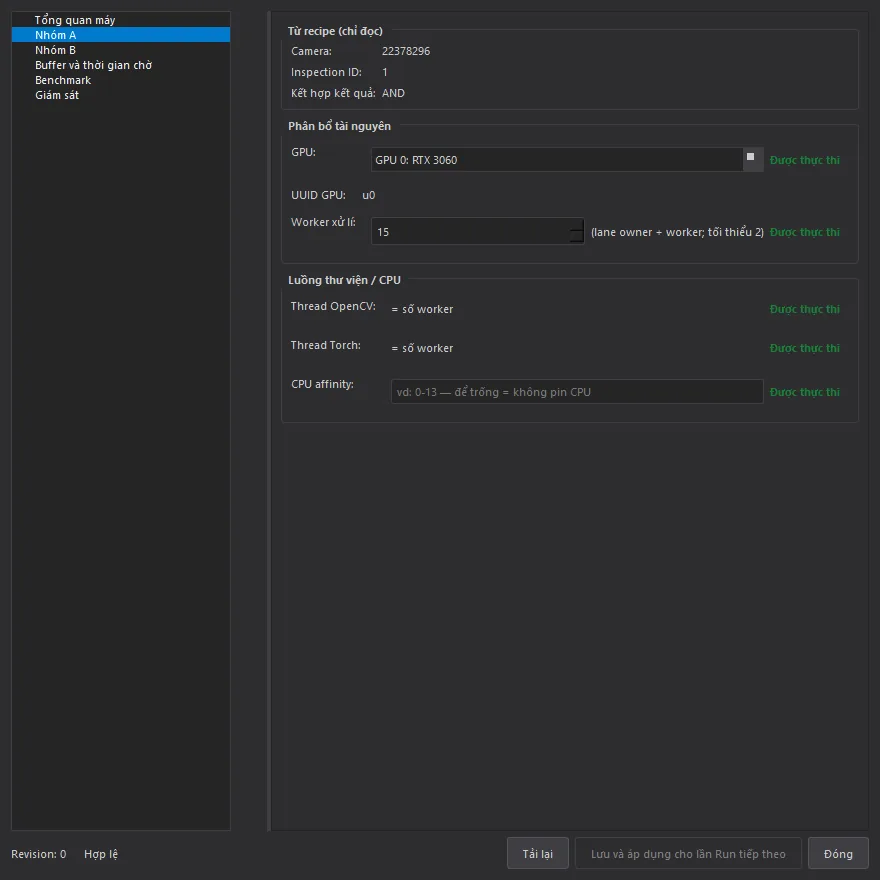
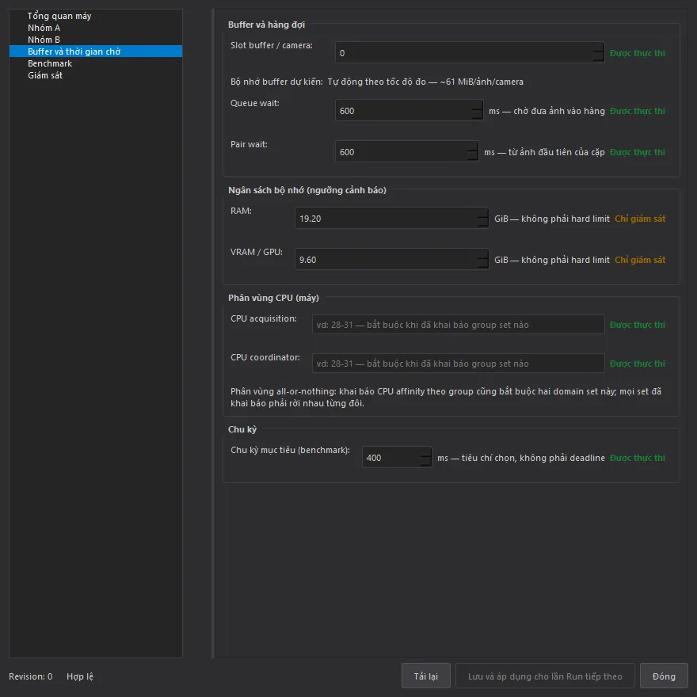
20.3 Benchmark
Nút Chạy benchmark chỉ hoạt động khi Run dừng và bạn có quyền chỉnh
máy (access_settings). Chiến dịch đo: warm-up là các chu kỳ bỏ đầu
bị loại, rồi đo số chu kỳ mẫu đã cấu hình, lần lượt A riêng → B riêng → A+B
đồng thời cho mỗi candidate worker. Kết quả lưu vào profile kèm
fingerprint phần cứng + hash recipe + phiên bản phần mềm —
đổi phần cứng làm mất trạng thái verified, phải benchmark lại.
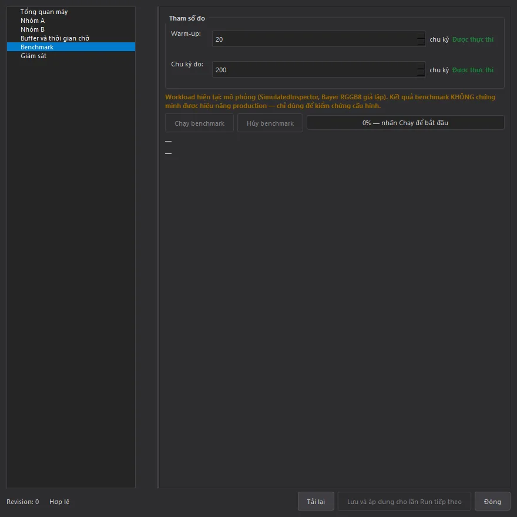
20.4 Giám sát
Trang Giám sát làm mới khoảng 1 giây: queue depth, throughput, p50/p95/p99 từng stage, lỗi, cảnh báo từ metrics service. Trường không có dữ liệu hiển thị Chưa có dữ liệu — không tự suy diễn. GUI poll không chặn acquisition (runtime đọc qua snapshot trong process chính).
20.5 Xử lí sự cố
| Hiện tượng | Nguyên nhân / cách xử lí |
|---|---|
| Nút Lưu mờ | Chưa có thay đổi, đang Run/benchmark, hoặc thiếu
quyền access_settings — mục Quyền chỉnh sửa trên trang Tổng
quan. |
| Lỗi "GPU … no longer exists" | GPU bị rút/đổi slot. Chọn lại GPU đúng; hệ thống không tự chuyển sang card khác. |
| Lỗi "UUID … changed" | Ordinal GPU đổi sau reboot/driver update. Gán lại GPU cho nhóm rồi lưu. |
| Lỗi "revision … reload" | File cấu hình bị sửa nơi khác (tool khác, người khác). Bấm Tải lại, áp lại thay đổi, lưu. |
| Đóng bị chặn | Đang benchmark → Hủy trước; có thay đổi chưa lưu → chọn Lưu và áp dụng / Bỏ thay đổi / Hủy. Lưu lỗi thì cửa sổ không đóng. |
Xem thêm: cách sắp xếp ô ảnh của lưới đa camera trong Run (nút Layout…, lưu theo recipe) ở mục 24.7.
21.ROI SEG_DEF — phát hiện defect bằng phân đoạn (AI)
21.1. Bắt đầu nhanh — hai lộ trình
SEG_DEF có hai lộ trình khác nhau — xác định bạn đang ở lộ trình nào trước khi bấm nút, đừng trộn input của hai lộ trình.
models/seg_def/{sha256}/model.pt + model.pt.meta.json
đủ field contract). Không cần dataset/label/train chỉ để inspect:
- Mở SEG_DEF Setup (chuột phải ROI → ). Field model/meta nằm trên tab Train (không phải Deploy); Browse… chỉ điền đường dẫn, không tự điền các field contract — scale/tile/input/ encoder/classes phải khớp meta của model (sai → fingerprint mismatch).
- Tab Verify → Preview: chạy model trên ảnh source của setup theo pose tham chiếu — không match anchor mới và không cần dataset. Các pane kết quả Expanded Input / Raw Mask / Filtered Mask / Blobs nằm ngay trong cùng tab Verify. Validate (cùng tab) chỉ dành cho dataset có label — Route A không bắt buộc bước này.
- Apply commit config và đóng dialog; cửa sổ chính tự thử save — luôn kiểm tra Save Recipe/status/log và reload để xác nhận. Vì Apply đã đóng cửa sổ, không còn Cancel trong dialog đó: muốn hủy config vừa Apply thì dùng Undo / khôi phục có kiểm chứng — không có nút riêng sau khi đóng.
- Inspect chạy trên full frame gốc cùng domain với master — runtime tự crop theo anchor; không đưa ảnh crop vào Inspect.
docs/archive/reports/seg_def_usage_pipeline_verification_report.md. Đây là bằng
chứng tích hợp, không phải chứng nhận chất lượng phát hiện
defect trên dữ liệu thật. Lưu ý: fixture kiểm chứng đã qua migration. Với
recipe legacy chưa migrate,
ensure_sub_ids_migrated nay chuyển
verdict_rule/verdict_defect_filter sang s0 khi tạo
shell — rule được đọc trên sub-recipe lúc inspect nên không còn bị drop
(core/recipe/sub_ids.py).- Dataset: ảnh và mask phải chung toạ độ pixel. Add current ROI crop lưu crop vuông mở rộng của ROI; ảnh full-frame import vào phải align được anchor giống lúc inspect (không align được → đánh dấu đỏ “Not inspectable”). Tối thiểu 5 cặp là ràng buộc phần mềm (4 cặp cuối luôn làm hold-out), không phải mục tiêu chất lượng dataset.
- Train: các thư mục artifact SHA cũ được giữ nguyên — training không tự xoá model đang được ROI khác/undo tham chiếu; dọn dẹp là thao tác riêng, tường minh.
- Validate (tab Verify): chỉ chấm lại trên cùng 4 cặp hold-out — cụ thể là 4 cặp cuối trong danh sách paired sắp xếp lexicographic của dataset hiện tại. Sửa/xoá sample có thể đổi tập hold-out, nên đây là re-check trên dữ liệu train — không phải test độc lập bất biến; IoU cao không phải SLA production.
- Device:
cuda= PyTorch cho train và runtime (không phải TensorRT).cpu/igpulúc inspect cần IR OpenVINO đã prepare nằm cạnh artifact cài đặt — runtime không tự convert weights;igpuchỉ dùng cho runtime trên Intel GPU thật + IR, Train từ chối. Giá trịcuda:Nđã lưu được hiển thị đúng trong UI nhưng Train chỉ chấp nhận literalcpu/cuda— phải chọn tường minh. TensorRT là backend/engine cấu hình riêng, không nằm trong combo Device và package hiện chưa có trong môi trường này. - Apply/Cancel: Apply commit + đóng dialog + shell tự thử save (vẫn phải verify). Cancel chỉ còn ý nghĩa trước khi Apply — giữ nháp setup, và file dataset/model đã ghi không được rollback; sau Apply dialog đã đóng, hủy bằng Undo / khôi phục có kiểm chứng.
model_segmet/model.pt (B3 cũ) không tương thích
SEG_DEF: meta thiếu các field contract (scale/tile/fingerprint) nên bị từ chối ở
cửa kiểm tra — đừng vá meta để ép khớp; train lại trong SEG_DEF Setup.
Artifact B1 dùng trong kiểm chứng chọn từ dữ liệu người dùng có provenance chưa
rõ và mới thử trên 1 frame NG — trạng thái
REAL_DATA_VALIDATION_PENDING / QC_CONFIRMATION_PENDING.
Không hạ gate hash/fingerprint/min_area để ép kết quả “xanh”.seg_def_execution_failed: thiếu IR, device không khả dụng), row kết
quả stamp passed=false + status=NG +
valid=False + errors[]. Mandatory gate
(mandatory_review_blockers) chặn mọi row
valid=False/REVIEW của ROI đang enable — kể cả khi
verdict rule có node NOT roi.passed: rule chỉ tighten, không thể
miễn một row không đánh giá được (xem §45,
mandatory_review_blockers trong
models/datamodels.py). Lỗ hổng fault-row→PASS từng tái hiện trên
fixture migrate đã đóng; phần cảnh báo còn lại chỉ là chất lượng phát hiện
defect trên dữ liệu thật, không phải gate an toàn.21.2. SEG_DEF là gì — và khác gì ROI Edge / Anomaly
SEG_DEF (segmentation defect) là một loại ROI chạy model học máy semantic segmentation (thư viện segmentation-models-pytorch): model nhìn vào ảnh crop của vùng kiểm tra và trả về một mask — mỗi pixel được gán một class id (0 = nền, 1..n = các loại defect bạn định nghĩa). Từ mask đó, phần mềm lọc nhiễu bằng morphology, gom các vùng defect còn lại thành blob và áp luật quyết định đơn giản:
min_area_px
bên trong band ROI. Chỉ cần một blob đủ lớn → ROI
passed=False (lỗi seg_def_blob_present) → cycle FAIL
vì SEG_DEF tham gia cửa ROI của verdict (resolve_roi_gate_passed).
Mask của model không tự thành verdict — verdict vẫn đi qua
authoritative_inspection_passed như mọi ROI khác.| Nhu cầu | Loại ROI phù hợp | Lí do |
|---|---|---|
| Đo kích thước, khoảng cách, vị trí biên | Edge / phép đo | Biên ổn định, kết quả là số đo (mm) |
| Đếm/phát hiện vùng khác màu, bẩn đơn giản | Area | Chỉ cần ngưỡng cường độ, không cần AI |
| Defect hình dạng lạ, biết trước loại defect, có ảnh mẫu NG | SEG_DEF | Cần gán nhãn pixel defect; model học được hình dạng bất kì |
| Defect hiếm/chưa định nghĩa được, chỉ có ảnh OK | Anomaly | PatchCore học “đẹp thế nào”, không cần mask nhãn |
21.3. Bài toán ví dụ: vết xước trên vỏ connector (RECIPE_EX)
Với recipe RECIPE_EX, giả sử ngoài các phép đo khe hở bạn còn phải loại sản phẩm có vết xước trên mặt vỏ nhựa — defect dài, mảnh, nằm bất kì, không có biên ổn định để đo. Đây là lúc dùng SEG_DEF:
- Vùng kiểm tra: một ROI bao mặt vỏ cần sạch (ví dụ
seg_scratch), gắn anchor để ROI bám sản phẩm. - Classes:
background(id 0 — bắt buộc đứng đầu danh sách nếu khai báo) vàscratch(id 1). - PASS: không có blob
scratchnào ≥min_area_px(ví dụ 120 px) trong band ROI. - FAIL: một vết xước đủ lớn xuất hiện → ROI NG → cycle FAIL, blob được vẽ overlay trên ảnh kết quả.
21.4. Tạo ROI và mở cửa sổ SEG_DEF Setup
- Trong cây recipe, chuột phải node Sub-ID
→ — một node ROI
pending (chưa vẽ) xuất hiện. Chuột phải node ROI đó →
rồi vẽ trên ảnh master theo công cụ vẽ
sẵn có. (Nhanh hơn: chuột phải node anchor →
tạo và mở vẽ ngay
trên anchor đó.)
UI Mục này chỉ xuất hiện khi bản cài đặt chứa
nhóm ROI
seg_def(chạy từ source luôn có —active_profile() = dev_full). - Vẽ ROI bao vùng cần kiểm tra trên ảnh master. ROI lúc này là draft chờ Apply — chưa có config.
- Chuột phải ROI vừa vẽ → để mở dialog 3 tab: Dataset · Train · Verify — tab Dataset chứa khối gán nhãn (classes + canvas + samples), tab Verify gom post-process + preview/validate (nút Validate nằm đầu tab — xem mục 21.8).
{sku_dir}/pending_drafts/seg_def_{roi_id}.json (atomic). Nếu app
tắt giữa chừng, mở lại recipe sẽ tự khôi phục draft. Sidecar chỉ bị xóa khi
Apply thành công hoặc bạn Discard draft — file lỗi/mồ côi được giữ lại và log,
không xóa ngầm. Riêng các field trong dialog được autosave vào
setup_draft.json sau ~1.5 s mỗi lần bạn sửa.21.5. Thu thập mẫu (tab Dataset)
Dataset sống trong recipe:
recipes/{sku}/seg_def_data/{id_fs}/{roi_id}/images/ chứa ảnh và
masks/ chứa mask PNG cùng tên file (stem). Một cặp
(pair) = một ảnh có mask cùng stem.
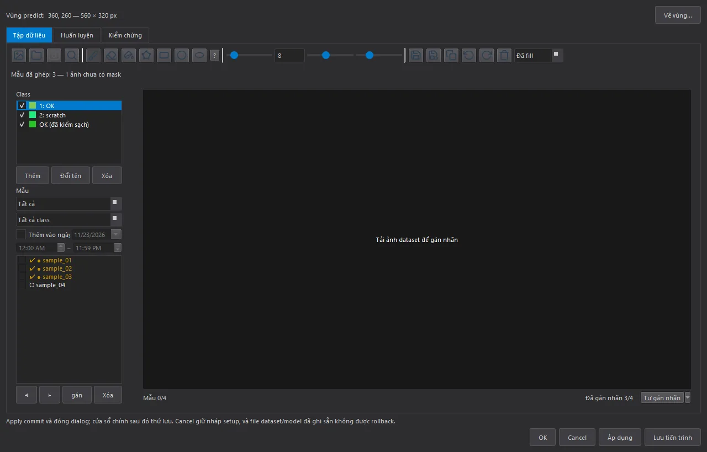
Hai cách lấy ảnh:
- Add current ROI crop — cắt patch của ROI này từ
ảnh đang nạp trong setup (master, ảnh Live vừa chụp, hoặc
ảnh file đã load). Đặt tên stem rồi ảnh crop được ghi vào
images/. Đây là cách lấy mẫu “từ camera”: chạy Live/Snap, đưa sản phẩm OK/NG lần lượt, mỗi lần Add một mẫu. - Import image folder — copy từ thư mục có sẵn trên disk
(đuôi
.png .jpg .jpeg .bmp .webp .tif .tiff .pgm). File trùng tên bị skip và liệt kê trong thông báo — không ghi đè ngầm.
Ảnh nào được chấp nhận: ảnh vuông đúng kích thước patch mở rộng của ROI (cạnh = cạnh dài nhất của ROI) được nhận diện ngay — band ROI map thẳng. Ảnh kích thước khác được xem là full frame và phải qua anchor align giống lúc inspect; ảnh không align được sẽ bị đánh dấu đỏ “Not inspectable” trong danh sách Samples — nó cũng sẽ fail lúc inspect thật. Ảnh và mask của một sample phải chung toạ độ pixel (cùng kích thước, cùng vị trí defect) — mask vẽ trên crop nào chỉ gán cho ảnh crop đó. Lưu ý khác với Inspect: nút Inspect › Load Image nhận full frame gốc và runtime tự crop — còn dataset train dùng crop/mask đã chuẩn bị ở đây.
21.6. Gán nhãn mask (tab Label)
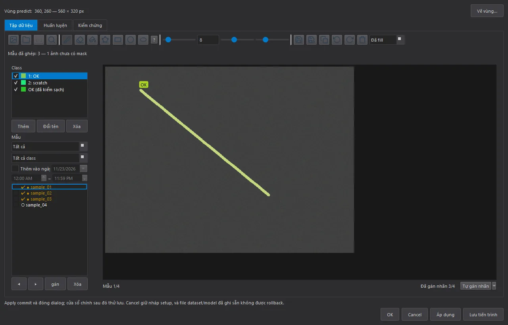
1: scratch (ô màu bên trái),
Samples đánh dấu ● đã có mask / ○ chưa có, canvas hiển thị band ROI (khung xanh
lá) và mask defect (vùng vàng). Labeled 3/4 ở góc phải dưới.Bước 1 — khai báo classes. Panel Classes là
SSOT của danh sách class: nút Add / Rename / Remove
ghi thẳng vào field classes (tab Train chỉ mirror, không sửa).
Mỗi defect class có id = thứ tự trong list và một ô màu
(seg_def_class_color) chỉ để hiển thị — màu không lưu vào mask.
Nếu phần tử đầu là background/bg thì nó là id 0 (nền)
và không xuất hiện trong list defect.
classes nằm trong preprocess_fingerprint.
Rename/Remove sau khi train khiến predict từ chối model cũ —
phải train lại. Remove một class ở giữa list còn dịch id
của mọi class đứng sau → các mask đã vẽ lệch class; dialog cảnh báo và bạn nên
chạy Check masks để rà lại.Bước 2 — tô mask. Chọn một sample → canvas load ảnh + mask hiện có (nếu có). Công cụ (hàng nút trên canvas):
| Tool | Cách dùng |
|---|---|
| Brush / Eraser | Kéo chuột tô/xóa; Brush radius đổi nét; Eraser trả pixel về 0 |
| Fill | Click để đổ kín một vùng liền màu |
| Polygon | Click từng đỉnh; Enter / right-click / double-click để đóng; Esc hủy; Backspace xóa đỉnh cuối |
| Rectangle / Circle / Ellipse | Kéo thả |
Hỗ trợ thêm: Opacity (độ mờ overlay), Display
Filled / Contour / Mask only, Undo / Redo, Clear mask,
zoom Fit / 1:1 / + / − (con lăn zoom, middle-drag hoặc Alt+drag pan).
Phím tắt B/E/F/P/R/C/O đổi tool. Nút Save mask ghi PNG cùng stem vào
masks/; Save & next lưu rồi nhảy mẫu sau;
Copy prev mask nhân mask mẫu trước để sửa nhanh. Chuyển ảnh khi mask
đang sửa dở → dialog hỏi Save/Discard/Cancel.
Quy ước tô: chỉ tô đúng pixel thuộc defect (vết xước) — phần còn lại để nguyên id 0. Viền defect nên bám sát mép thật; vùng mơ hồ (không chắc là defect) → để nền, đừng đoán. Nhiều vết xước riêng biệt trong một ảnh: tô hết, cùng class id — runtime tách blob bằng connected-components, không cần tô khác màu.
Auto-label (tiết kiệm công khi đã có model chạy được): nút
Preview auto-label dự đoán mask cho ảnh đang chọn (áp vào canvas, chưa
ghi đĩa — phải Save mới giữ); Auto-label… chạy hàng loạt trên
images/ với model.pt/.pth + model.*.meta.json
bạn trỏ tới, chọn Overwrite (ghi đè) hay Preserve (chỉ tô pixel
đang = 0), có thể “Skip images that already have a mask” hoặc “Only the current
image”. Ảnh lỗi được gom vào report cuối, không bị nuốt.
21.7. Cấu hình và training (tab Train)
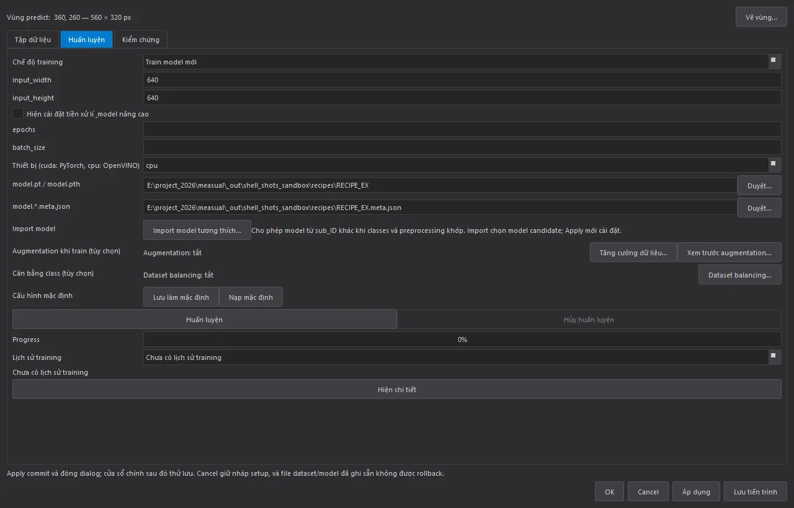
Các field trên tab này chia hai nhóm — contract (nằm trong
preprocess_fingerprint, đổi là phải train lại) và
train-only (không vào fingerprint). Field thường dùng hiển thị
ngay; field hiếm đổi nằm trong phần Advanced (đánh dấu Ⓐ) — panel tự
mở khi use_tiling được bật (kể cả khi nạp config cũ). Cùng kiểu
panel này cũng có trong setup của các ROI AI khác: Anomaly
(tab Train) và Segment (tab Model, mục architecture /
encoder / encoder_weights / activation).
| Field | Nhóm | Ý nghĩa |
|---|---|---|
input_width/height | contract | Kích thước tensor vào model — mỗi tile resize về đúng cỡ này. Giá trị phải là bội số 32 và ≥ 32 (encoder SMP downsample 5×). |
classes | contract | Mirror read-only của list trên tab Label. |
scale_ratio Ⓐ | contract | Thu nhỏ ảnh trước khi predict/train — 0.25 nghĩa là ROI 1000 px thành 250 px. Giảm → nhanh hơn nhưng defect nhỏ dễ mất. |
use_tiling + tile_width/height +
tile_overlap Ⓐ | contract | use_tiling chia ảnh đã scale thành các tile
đúng bằng input — tile_width/height
là field read-only mirror của input (UI tự điền
theo, không cho nhập kích thước khác); overlap ∈ [0,1) giảm lỗi
ở mép tile. |
encoder / architecture Ⓐ |
contract | Backbone + kiến trúc SMP (danh sách nạp từ catalog SMP khi mở dialog). Authoritative là giá trị đã lưu trong recipe/draft và meta của artifact — không có default chung áp cho mọi recipe; form ROI mới chỉ prefill để bạn chọn tường minh. |
encoder_weights Ⓐ | contract | imagenet (pretrain) hoặc none — phải chọn
tường minh. |
epochs, batch_size | train-only | Nhập trên UI, không ghi vào recipe. Batch được gợi ý từ VRAM trống (cuda) hoặc bảng theo độ phân giải (cpu). |
device | contract (runtime) | cuda: PyTorch cho cả train và runtime (không phải
TensorRT). cpu/igpu lúc inspect chạy
OpenVINO và bắt buộc IR đã prepare nằm cạnh
artifact cài đặt (model.pt.openvino.xml/.bin +
stamp) — runtime không tự convert weights, thiếu/stale IR →
fail loud seg_def_execution_failed. igpu
chỉ là lựa chọn runtime trên Intel GPU thật (máy có NVIDIA dGPU
không tính là iGPU), Train từ chối igpu. Giá trị
cuda:N đã lưu được UI giữ nguyên verbatim, nhưng Train
chỉ chấp nhận literal cpu/cuda. TensorRT
là backend/engine cấu hình riêng — không nằm trong combo này và
package hiện chưa cài. |
model.pt/.pth + model.*.meta.json |
artifact | Đường dẫn weights + meta sau khi train xong tự điền — hoặc Browse… tới artifact đã train sẵn (deploy model có sẵn). Browse không tự điền/đổi các field contract — phải nhập đúng contract khớp meta của artifact. |
Train GPUs (train_devices) |
train-only | Chỉ hiện khi máy có ≥2 CUDA — chọn Same as device (single) hoặc một nhóm GPU để train song song. Không ghi vào contract runtime. |
Class balancing (optional) (balance) |
train-only | Mở dialog cân bằng dataset: class_balance_sampler,
random_pos_crops, expand_crops /
component, tile_margin_px. Ảnh hưởng tile/crop đưa
vào train; validation luôn giữ grid tile chuẩn. Có nút
Auto-compute balance policy from the dataset. |
shared_model_id | artifact | ROI có thể gắn vào shared SEG_DEF model — một artifact dùng chung cho nhiều ROI/recipe qua dialog Shared SEG_DEF Models (Publish/Attach/Detach/Sync/ Contribute data). Nhiều ROI cùng model → train một lần, deploy một lần. |
| Augmentation… / Preview augmentation… | train-only (tùy chọn) | Biến đổi ảnh khi train (flip, rotate, sáng/tương phản, HSV, noise,
blur, background thay thế, deformation… — Albumentations). Vắng/tắt
= không augment; có seed bắt buộc → lặp lại được.
Preview sinh bảng “ảnh augment | mask overlay” để kiểm
tra trước khi train. |
.conda\python.exe tools\prepare_seg_openvino.py --model _out\seg_def_usage_verification\20261014_002554\real_artifact\recipes\seg_def_usage_fixture\models\seg_def\69e76d7b81aa3f85e87f91be9cb69bfbaab242c42b4d32f803ee8b40c8996e33\model.pt --meta _out\seg_def_usage_verification\20261014_002554\real_artifact\recipes\seg_def_usage_fixture\models\seg_def\69e76d7b81aa3f85e87f91be9cb69bfbaab242c42b4d32f803ee8b40c8996e33\model.pt.meta.json --weights-precision fp32Với artifact của bạn: copy thư mục
models/seg_def/{sha}/ rồi thay
đường dẫn tương ứng. Stamp kết quả ghi kèm sha256 model+meta — runtime từ chối
IR lệch hash; không chạy prepare trên artifact user gốc.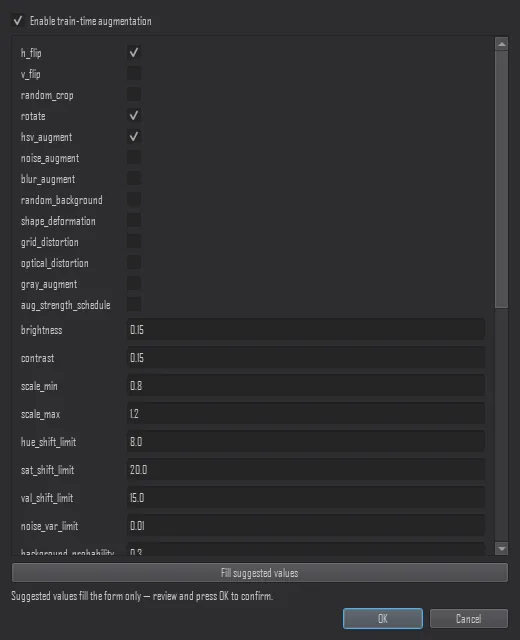
Bấm Train: tile train được dựng trong
seg_def_data/{id_fs}/{roi_id}/train_scratch/ (thư mục này bị xóa
khi bắt đầu Train — dọn sạch, không đụng ảnh/mask gốc). Model giữ
best val_loss qua các epoch rồi ghi
model.pt + model.pt.meta.json vào scratch, sau đó
install sang models/seg_def/{sha256}/ — tên thư
mục là SHA-256 của file weights, hai file được hash-verify khi copy. Các thư
mục SHA cũ được giữ nguyên — training không tự xoá artifact
có thể đang được ROI khác hoặc trạng thái undo tham chiếu; dọn dẹp là thao tác
riêng, tường minh (không có auto-GC). Hai field model/meta trên form được
điền sẵn URI mới. Cancel train dừng an toàn giữa epoch.
defaults/seg_def_setup.json) — file của người dùng, thắng baseline
có sẵn. model_path/meta_path/fingerprint
không nằm trong file default vì artifact là theo-SKU.21.8. Validate — kiểm tra model trên dữ liệu giữ lại
Hold-out IoU được tính tự động mỗi epoch trên 4 cặp cuối trong danh sách paired sắp xếp lexicographic của dataset (không cho model nhìn lúc train) và vẽ trên chart mean IoU của tab Train — bạn không cần làm gì thêm. Khi muốn kiểm lại trên model đã trỏ (ví dụ sau khi đổi model), nút Validate ở đầu tab Verify chạy lại trên 4 cặp hold-out và báo “Hold-out mean IoU: x.xxxx (n=4)”. IoU (Intersection over Union) đo độ trùng giữa mask dự đoán và mask bạn tô: 1.0 = trùng hoàn toàn, gần 0 = lệch hẳn. Overlay của từng ảnh hold-out xem ngay tại pane Validate overlay trong tab Verify (vùng dự đoán tô đỏ lên ảnh).
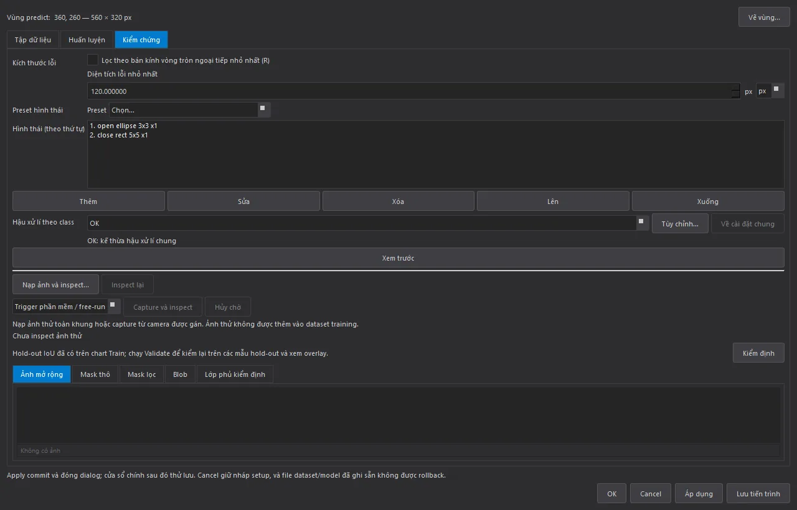
- IoU cao + overlay bám đúng vết xước → model ổn, sang bước Runtime.
- IoU thấp / overlay loang ra ngoài vết xước (over-segment) → thêm mẫu đa dạng hơn, kiểm tra lại mask đã tô sát mép chưa.
- Overlay bỏ sót vết (under-segment) → defect đó có thể
nhỏ hơn scale cho phép: giảm
scale_ratio(ảnh ít bị thu nhỏ) hoặc tăng độ phân giải input/tile, rồi train lại. - Chú ý: “loss giảm” trên chart chỉ nói model học được trên tập train — hold-out IoU mới nói model khái quát lên ảnh lạ.
21.9. Runtime — defect size, morphology và per-class (tab Verify)
Sau khi model ra mask, hai cửa lọc runtime-only quyết định defect (không nướng vào fingerprint — sửa được mà không cần train lại):

- Defect size (
defect_size_mode) — cổng kích thước blob, hai chế độ loại trừ lẫn nhau: min area (px² hoặc mm² theodefect_size_unit— blob nhỏ hơn bị bỏ) hoặc min enclosing-circle radius (min_defect_radius_px— giữ component có bán kính vòng ngoại tiếp ≥ ngưỡng, hợp vết dài mảnh hơn area thuần). Đây là “độ nhạy”: nhỏ → bắt cả nhiễu li ti; lớn → bỏ sót vết nhỏ. Không có mặc định — bạn phải nhập. - Per-class post-process (
class_postprocess) — mỗi defect class có thể mang một spec riêng đầy đủ (chuỗi morph + cổng size) thay thế hoàn toàn spec global phía trên cho kênh class đó; class nào không override thì dùng global. Chỉ liệt kê defect classes (class 0/OK giữ contract global). - Morphology preset — cách nhanh điền chuỗi: None (giữ mask thô), Despeckle — open 3×3 (khử chấm nhiễu li ti), Bridge gaps — close 5×5 (nối vết đứt đoạn), hoặc cả hai theo thứ tự. Chọn preset sẽ thay chuỗi hiện có (dialog hỏi trước khi thay); sau đó vẫn chỉnh tiếp bằng Add/Edit/Remove. Cùng preset này cũng có trong setup Line_SEG-C.
- Morphology (ordered) — chuỗi biến đổi mask theo thứ tự:
erode/dilate/open/close/gradient/tophat/blackhat, kernelrect/ellipse/cross, size lẻ dương, iterations ≥ 1. Ví dụopen 3×3xóa chấm nhiễu li ti trước khi đếm blob;close 5×5nối vết xước đứt đoạn. Nút Up/Down đổi thứ tự — thứ tự khác nhau cho kết quả khác nhau. - Preview — chạy model + cả chain trên ảnh source hiện tại (cần model.pt + meta đã trỏ tới) theo pose tham chiếu của setup — không match anchor mới như lúc inspect, không cần dataset/label. Blob quyết định FAIL là union của mọi class defect ≠ 0 (không phải QC theo từng class riêng). Kết quả xem ở tab Verify: Expanded Input (patch vuông đưa vào model), Raw Mask (mask model thô), Filtered Mask (sau morph), Blobs (contour blob vượt cổng size), Validate overlay.
- Class colors (
class_colors) — double-click tên class trên tab Label để đổi màu overlay/label của class; chỉ ảnh hưởng hiển thị, không đổi mask/train. - Result detail (
result_detail) —contour(mặc định: payload blob đầy đủ cho overlay/đo) hoặcstats(payload gọn — chỉ số liệu, giảm kích thước kết quả/log khi không cần vẽ contour). Recipe cũ không ghi field này được hiểu làcontour.
21.10. Apply — ghi cấu hình vào recipe và deploy model
Nút Apply (góc dưới phải) commit SegDefConfig
vào ROI trong recipe: artifact (relative_uri,
model_sha256, meta_sha256), device,
morph_ops, cổng defect size
(min_area_px / defect_size_mode /
min_defect_radius_px / defect_size_unit),
class_postprocess, class_colors,
result_detail, shared_model_id,
train_devices, balance, toàn bộ
scale/tile/input/encoder/architecture/classes/encoder_weights,
preprocess_fingerprint
và augmentation (nếu bật). Nó cũng xóa sidecar pending
draft và đóng dialog; cửa sổ chính tự thử save ngay
sau đó — nhưng đó chỉ là attempt: luôn kiểm tra Save Recipe/status/log rằng
save thành công và reload để xác nhận. Vì Apply đóng cửa sổ, không còn
Cancel trong dialog đó: Cancel trước Apply chỉ giữ nháp
setup, còn file dataset/model đã ghi trước đó không được
rollback; hủy config đã Apply dùng Undo / khôi phục có kiểm
chứng.
Nút Save process (thanh nút dưới) lưu nháp setup + nhãn chưa hoàn chỉnh mà không Apply — mở lại dialog của ROI đó để làm tiếp. Nút Draw region… (trên tabs) khoanh vùng predict riêng trên ảnh thay vì toàn ROI.
models/seg_def/{sha256}/model.pt
+ hash). File weights thật nằm trong thư mục SKU. Copy/clone recipe sang SKU
khác → inherit_seg_def_weight_dir tự tìm và copy thư mục SHA từ
SKU nguồn/anh em. Lúc inspect, service kiểm tra: URI phải đúng canonical, file
tồn tại, hash khớp — thiếu file hoặc sai hash → fail loud
(SegDefError), không im lặng fallback. Đổi recipe → predictor cũ
bị clear và warmup mới theo SHA mới.Khi chạy inspect (sau warmup start_seg_def_warmup
lúc nạp recipe): frame BGR → crop patch theo anchor → scale → tile → model →
mask → cắt band → morph → connected-components → blob ≥ min_area →
decide_blobs: 0 blob = PASS, có blob = FAIL
(seg_def_blob_present) → vào cửa ROI của verdict. Nhiều ROI
SEG_DEF trong cùng inspect được gom batch theo (model, device) để tận dụng GPU.
21.11. Lỗi thường gặp
| Triệu chứng | Nguyên nhân | Xử lí |
|---|---|---|
| Train báo “requires at least 5 paired samples” | Chưa đủ 5 ảnh có mask (4 cặp cuối theo lexicographic luôn làm hold-out) | Thêm mẫu + gán nhãn trên tab Label |
| Sample đỏ “Not inspectable — anchor match failed” | Ảnh full-frame không align được anchor | Dùng ảnh crop đúng patch, hoặc kiểm tra anchor/master |
| Predict/inspect báo fingerprint mismatch | Đổi scale/tile/input/encoder/classes sau khi train | Train lại với contract mới rồi Apply — hoặc trả field về đúng giá trị của model đang trỏ |
| “mask(s) contain class ids outside the class list” | Mask vẽ bằng list class cũ (xóa class giữa chừng làm lệch id) | Check masks để liệt kê, tô lại hoặc xóa mask lỗi |
| Apply báo “Minimum area must be >0” / “Select model…explicitly” | Thiếu min_area_px hoặc chưa trỏ model/meta | Nhập defect size (tab Verify), Browse… tới model.pt + meta.json đã train |
| Inspect báo artifact missing / SHA mismatch | File model bị xóa/sửa sau Apply, hoặc copy recipe thiếu
models/seg_def/ |
Install lại artifact (Train → Apply) hoặc copy đúng thư mục SHA theo SKU |
| “cuda” được chọn nhưng Train fail ngay | Máy không có GPU CUDA, hoặc device là giá trị khác literal
cpu/cuda (vd cuda:0,
igpu) — Train chỉ chấp nhận hai literal đó |
Chọn tường minh cpu hoặc cuda cho Train;
giá trị ordinal/igpu chỉ có nghĩa ở runtime |
Inspect device cpu/igpu báo seg_def_execution_failed
“IR missing or stale” |
Chưa có IR OpenVINO cạnh artifact cài đặt — runtime không tự convert weights | Chạy tools\prepare_seg_openvino.py trên bản copy
artifact đã install — lệnh đầy đủ xem callout “Chuẩn bị IR” trong
21.7; igpu cần Intel GPU thật |
Model cũ (vd model_segmet B3) bị từ chối “missing
scale/tile fields” |
meta.json thiếu field contract SEG_DEF (scale_ratio,
tile, fingerprint…) |
Không vá meta để ép khớp — train lại trong SEG_DEF Setup để sinh meta đúng contract |
22.Các loại ROI — chọn đúng công cụ cho bài toán
Đến đây guide đi theo một bài toán cụ thể (edge-to-edge + SEG_DEF). Phần mềm còn nhiều loại ROI khác — chương này là bảng tra cứu theo bài toán: mỗi loại dùng để làm gì, cấu hình chính nào, mở setup ở đâu, và PASS/FAIL được quyết ra sao.
- Mọi ROI đều vẽ trên ảnh master và đi theo Anchor — inspect luôn chạy trên ảnh đã căn về tọa độ master.
- Kết quả từng ROI đi vào cửa ROI của verdict
(
resolve_roi_gate_passed) rồi mới AND với phép đo — ROI lỗi cấu hình không bao giờ âm thầm PASS. - Config trong recipe là nguồn sự thật: trường nào bắt buộc mà để trống → inspect FAIL rõ, không có "giá trị mặc định ngầm".
- Bản đầy đủ cho engineer (từng field, file nguồn, gap đã biết):
docs/roi_methods.mdvàdocs/roi_capability_matrix.mdtrong repo.
22.1. Chọn loại ROI theo bài toán
| Bài toán | Loại ROI | Kết quả chính |
|---|---|---|
| Tìm cạnh/biên để đo khoảng cách, góc | Edge (§22.2) | vị trí biên, đường fit → custom measurement |
| Đo diện tích, hình dạng vùng lớn, bọt/khuyết vùng | Area (§22.3) | area, perimeter, ellipse/circle fit |
| Đo đường kính/tâm lỗ tròn | Circle (§22.4) | center, radius → circle_diameter |
| Biên đúng nhưng hình dạng méo (oval, xẹp, thiếu khuyết) | Distortion (§22.5) | circularity/roundness + max/min diameter |
| Đường viền dài cần so với biên chuẩn theo "trạm" | Profile (§22.6) | deviation từng station so band dung sai |
| Tìm điểm nhọn/cực trị theo hướng (mũi kìm, đỉnh cam) | Extreme (§22.7) | tọa độ extreme → nguồn point cho measurement |
| So master ↔ ảnh chạy để tìm khác biệt không cần AI | Compare (§22.8) | số vùng khác biệt, tổng diện tích lỗi |
| Kiểm tra có/không có chi tiết, đúng/lỗi theo mẫu dạy | OD (§22.9) | score khớp + góc lệch (FPM) |
| Đọc ký tự in/dập, kiểm đúng chuỗi (OCV) | OCR (§22.10) | text + confidence, so khớp expected |
| Kiểm chứng ký tự theo dòng — dot-matrix, khắc, in nhiệt (train model riêng trên ảnh thật) | OCV (mục 41) | text từng dòng + khớp expected wildcard/fuzzy |
| Chỉ cần phát hiện ký tự — có/không có, đếm số ký tự, đếm theo loại (dùng chung detector model của OCV) | Char Detect (mục 42) | số ký tự + label từ detector + gates đếm/conf/class |
| Lỗi tối trên bề mặt (vệt, chấm, xước tối) bằng xử lí ảnh cổ điển — không cần train model | Surface Defect (mục 43) | số vùng lỗi > ngưỡng → NG; contours + diện tích/contrast |
| Đọc mã vạch / QR / DataMatrix | Code Reader (§22.11) | text, format, confidence |
| Kiểm sáng/tối hay độ sáng vùng | Intensity (§22.12) | mean/min/max/std trên kênh màu |
| Kiểm thứ tự + màu + độ dày dây cáp | Line_SEG-C (§22.13) | per-wire Δab/L*/thickness so reference |
| Sai/đổi màu cục bộ (vệt màu, lệch tone, hỏng lớp phủ) | Surface Defect (§43) / Texture Defect (§22.16) | vùng tối/khuyết bề mặt → mask defect + lọc theo size; Local Color Diff đã gỡ — xem bảng tombstone (§22.17), recipe cũ chứa LCD báo lỗi |
| Phát hiện defect hình thái bất quy tắc (xước, vệt, lỗ) | SEG_DEF (mục 21) | mask defect → blob count/area |
| Phát hiện bất thường so với ảnh OK (không cần label lỗi) | Anomaly (mục 27) | heat-map khác biệt → score |
| Đo chiều cao LED (silhouette trắng, camera xiên) | LED SS (§22.14) | baseline max-Feret + apex → height/base theo µm/mm |
| Khớp chi tiết theo biên dạng (bền với đổi sáng) | Shape Matching (§22.15) | LINEMOD match → similarity + góc lệch so teach |
| Lỗi bề mặt có texture/vân: xước, lồi lõm, chấm đen | Texture Defect (§22.16) | 4 nhánh z-score → union mask → defect count |
22.2. Edge — dò biên theo hướng
Walkthrough đầy đủ ở mục 9 (vẽ ROI) và
mục 10 (cấu hình). Tóm tắt cấu hình
(EdgeConfig):
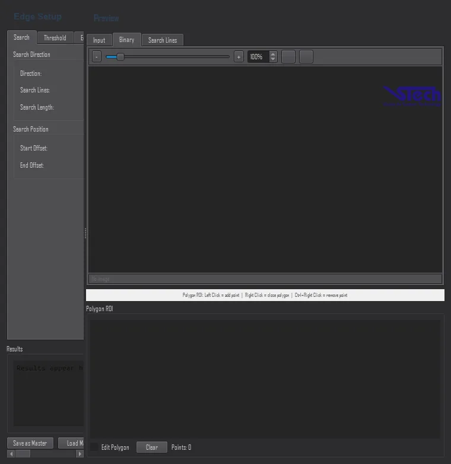
- Direction — hướng quét L2R / R2L / U2D / D2U, phải vuông góc biên cần bắt.
- Search lines / length / offset — số vạch quét và đoạn ROI được lấy mẫu.
- Polarity + strength — chọn chuyển sáng→tối hoặc tối→sáng;
min_strengthlọc biên yếu (nhiễu),max_strengthloại biên quá mạnh (chữ, logo). - Select — first / last / strongest / weakest khi có nhiều biên trên một vạch.
- Subpixel + robust filter — tinh chỉnh vị trí dưới pixel và loại vạch quét lệch (outlier) trước khi fit.
- Acceptance gates —
min_edge_points,max_outlier_ratio,min_contrast: chặn fit trên quá ít điểm / nhiều outlier / biên quá mờ, trước cả tolerance. - Contrast boost (tab Threshold) —
off|clahe: chạy CLAHE lên ảnh gray trước khi threshold, cứu biên tương phản thấp; khóa khi modecolor_segment(xem 10.4).
Nguyên lý: trong vùng ROI, phần mềm bắn nhiều
vạch quét song song theo direction; trên mỗi vạch nó đo
độ chênh xám hai phía pixel (gradient) và chọn điểm vượt
strength theo polarity và select. Các
điểm biên hợp lệ được fit thành đường; vạch quét cho điểm lệch xa đường fit
bị loại bởi robust filter.
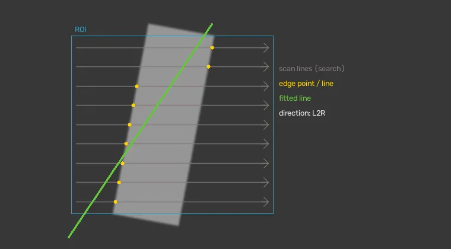
| Tham số | Điều chỉnh | Tác dụng |
|---|---|---|
direction | Đặt vuông góc với biên cần bắt | Quét sai hướng → vạch chạy song song biên, gradient không bao giờ đủ strength → không tìm thấy biên |
polarity | Chọn đúng chiều sáng↔tối của biên | Sai polarity bắt nhầm biên đối diện hoặc không thấy biên nào |
min_strength | Tăng khi nhiễu bị bắt nhầm biên; giảm khi biên thật mờ bị bỏ sót | Cao quá → mất biên thật; thấp quá → bắt răng cưa/nhiễu thành biên giả |
select (first/last/strongest/weakest) |
Dùng strongest khi vạch quét cắt qua nhiều biên (chữ,
rãnh) |
Quyết định điểm nào trên một vạch được giữ lại — chọn sai loại có thể bắt biên thứ hai thay vì biên chính |
search lines / offset | Tăng số vạch khi biên cong/bẩn; thu hẹp đoạn quét vùng ổn định | Nhiều vạch + robust filter → fit bền hơn; vạch trải dài qua vùng lồi lõm khác → điểm ngoại lai nhiều |
subpixel + robust | Bật khi cần độ chính xác dưới 1 px | Nội suy đỉnh gradient → vị trí biên mịn hơn, phép đo mm ổn định hơn |
min_edge_points / max_outlier_ratio /
min_contrast |
Nhóm Acceptance Gates (tab Edge) — bật khi fit trên ít điểm hoặc biên quá mờ cho kết quả không tin cậy | Reject trước tolerance: thiếu điểm → fit bẻ lái; outlier cao → biên bẩn; contrast thấp → biên mờ không đáng đo |
Inspect: mỗi vạch quét cho một điểm biên → lọc outlier → fit
đường → acceptance gates chặn fit kém chất lượng (khi được bật) →
khoảng cách/góc đưa vào custom measurement. Fitted line của Edge là nguồn
cho cả họ phép đo: edge_to_edge,
average_edge_distance, angle_between_edges,
perpendicularity, edge_to_circle_center,
edge_to_contour_nearest/centroid,
point_to_edge, signed_point_to_edge và làm trục
tham chiếu cho points_projected_distance /
point_to_reference_distance — danh mục đầy đủ ở
§12.1. PASS/FAIL của Edge do
phép đo quyết (tolerance ở mục 13); khi một edge-pair đã được
custom measurement edge-to-edge sở hữu, cửa ROI tự loại cặp đó để không đếm
PASS hai lần.
Ví dụ (RECIPE_EX): ROI L_T ôm mép trên-trái của
vỏ connector, direction=L2R, select_option=strongest
— đo khoảng cách tới R_T qua phép đo edge_to_edge.
22.3. Area — vùng lớn, bọt, và Point
Dùng khi cần đo vùng: diện tích vết dính, bọt trong keo,
chiều trục ellipse… Cấu hình (AreaConfig) là chuỗi stage, mỗi
stage bật/tắt riêng:
- Smooth → Contrast → Threshold → Morphology: làm sạch nền trước khi lấy vùng. Threshold có các chế độ binary / adaptive / OTSU / Triangle / color-segment (chọn theo mẫu màu HSV).
- Contour: lọc theo min/max area, giữ contour lớn nhất, giới hạn số contour.
- Subpixel / robust metrics: refine cạnh và lấy thống kê bền (median, IQR) thay vì trung bình dễ nhiễu.
- Ellipse fit: generic / axis-aligned / mô hình bọt tiên đoán (bubble model).
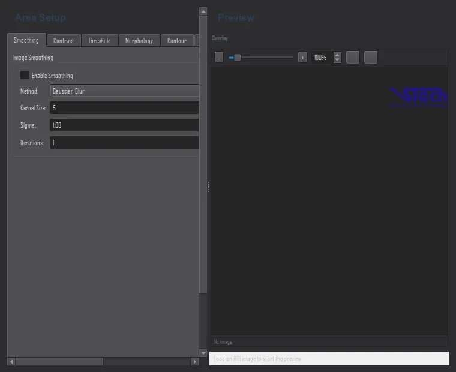
Nguyên lý: ảnh ROI đi qua pipeline có thể bật/tắt từng stage — làm mượt (giảm nhiễu hạt) → tăng tương phản → threshold thành ảnh nhị phân trắng/đen → morphology (open xóa hạt nhỏ, close bịt lỗ) → contour lấy đường bao các vùng trắng, lọc theo diện tích → metric (area, perimeter, ellipse fit). Toàn bộ "vùng" đo được là tập pixel trắng sau cùng của chuỗi này — nên thứ tự stage quyết định kết quả. Pipeline ảnh thật + bẫy retrieval + min_area ở §33.
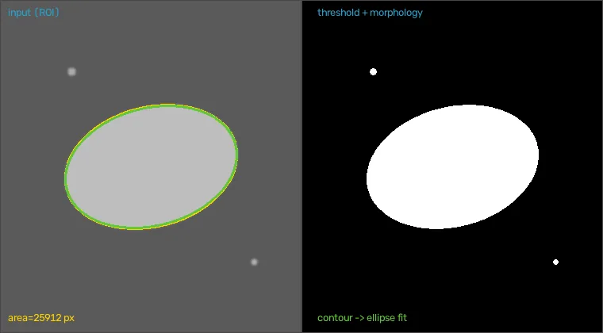
| Tham số | Điều chỉnh | Tác dụng |
|---|---|---|
threshold mode | otsu khi nền/vùng
tách rõ 2 mức; adaptive khi chiếu sáng không đều;
binary + ngưỡng tay khi cần kiểm soát chính xác;
color-segment khi vùng phân biệt bằng màu |
Sai mode → vùng bị vỡ/nhập nền; adaptive quá nhạy tách cả texture nền |
morphology open/close + kernel |
open để xóa hạt nhỏ; close để bịt lỗ thủng
trong vùng; tăng kernel khi hạt/lỗ lớn hơn |
Kernel lớn quá → xóa luôn vùng thật hoặc dính các vùng liền nhau |
min/max contour area | Đặt min vừa lớn hơn nhiễu, max dưới vùng nền | Lọc contour sai kích thước trước khi đo — tránh đo nhầm hạt nhiễu hay cả nền |
smoothing | Tăng khi ảnh hạt/noise gây contour răng cưa | Blur mạnh làm mất mép vùng mỏng → diện tích đo lệch |
ellipse fit / subpixel | Chọn mô hình fit theo hình dạng vùng; bật subpixel khi cần mép dưới pixel | Metric ổn định hơn cho vùng cong; fit sai mô hình → trục/góc sai |
Ví dụ: đo diện tích vệt keo tràn — bật Threshold
otsu + Morphology open 3×3 để bỏ hạt nhiễu, giữ
contour ≥ min_contour_area, đọc area mm² qua custom
measurement.
Lưu ý: các loại cũ bubble, blob,
bundle vẫn đọc được từ recipe cũ nhưng đều chạy chung đường Area —
không còn engine riêng. Point không phải ROI độc lập: nó là cấu
hình con trỏ nằm trong ROI Area (mở từ Area Setup), dùng để lấy một
điểm trên contour theo hướng arrow + caliper.
Nguồn đo: contour của Area nuôi
area_to_roi_centroid, area_to_roi_nearest,
contour_to_contour, edge_to_contour_nearest/
centroid, circle_to_contour,
point_to_contour_nearest, area_width/height;
điểm directional (khi Point bật) nuôi point_to_point,
point_to_edge, signed_point_to_edge,
point_to_circle(_edge), point_to_reference_distance,
points_projected_distance — §12.1.
22.4. Circle — đo đường kính/tâm tròn
Tạo ROI Circle tự động thêm custom measurement
circle_diameter. Ba phương pháp
(CircleConfig.detection_method — setup dialog luôn ghi
Caliper):
- Hough — nhanh cho vòng tròn rõ biên; cần khoảng radius min/max hợp lý.
- Contour — lấy contour gần tròn nhất
(
circularity_threshold). - Caliper — chính xác nhất: bắn nhiều caliper từ một vòng tròn dự kiến ra ngoài/vào trong để bắt biên. Bắt buộc đặt placement (Draw Placement hoặc Auto Calculate trong setup) — không có placement thì FAIL rõ, phần mềm không tự đoán tâm ROI.
Hướng dẫn đầy đủ + ví dụ fit thật + bẫy placement sai ở §32.
Nguồn đo: tâm + bán kính circle nuôi
circle_diameter, circle_to_circle,
circle_radial_gap (khe d−r1−r2 có dấu),
edge_to_circle_center, point_to_circle,
point_to_circle_edge (d−r có dấu), circle_to_contour,
center_connection, connection_reference_angle, và
tâm circle cũng là nguồn point cho point_to_edge/
signed_point_to_edge/point_to_contour_nearest —
§12.1.
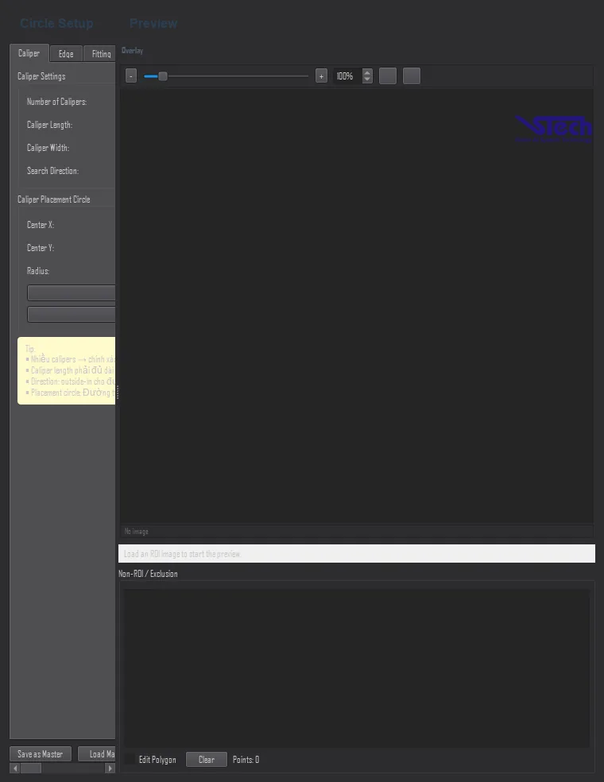
Nguyên lý (method caliper): từ vòng tròn dự kiến (placement — tâm + bán kính do người dùng dạy trên master), phần mềm bắn nhiều caliper theo phương xuyên tâm; mỗi caliper quét gradient và chốt điểm biên. Tập điểm biên được fit thành đường tròn (tâm + bán kính) — vì thế độ chính xác phụ thuộc placement đặt gần đúng vị trí và kích thước lỗ, không cần chính xác tuyệt đối.
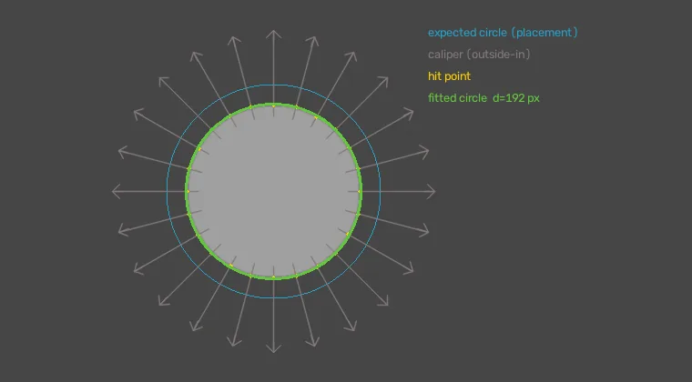
| Tham số | Điều chỉnh | Tác dụng |
|---|---|---|
method | caliper cho độ chính xác
cao/lỗ mờ; hough cho vòng rõ và nhanh;
contour khi biên tròn tách nền tốt |
Hough nhạy nhiễu; caliper chịu lệch tâm nhỏ nhưng phải có placement |
| placement (bắt buộc với caliper) | Draw Placement ôm sát lỗ; Auto Calculate khi lỗ tròn rõ | Placement lệch xa lỗ thật → caliper bắt biên khác → đường tròn sai; thiếu placement → FAIL rõ |
số calipers | Tăng khi biên lỗ có khuyết/bẩn cục bộ | Nhiều caliper → điểm biên dày, fit bền trước outlier; ít caliper → nhanh nhưng dễ lệch bởi 1-2 điểm xấu |
chiều quét outside-in/inside-out |
outside-in khi biên ngoài lỗ sạch; inside-out khi tâm lỗ sáng rõ | Chọn chiều đi qua nền sạch trước — giảm bắt nhầm biên giả |
exclusion polygons | Vẽ vùng có chữ/rãnh/cạnh khác gần lỗ | Caliper rơi vào vùng loại bị bỏ qua — không còn điểm biên giả từ chi tiết lân cận |
radius_tolerance_px | Thu hẹp khi có nhiều vòng tròn cạnh nhau | Chặn fit nhảy sang vòng tròn lân cận; rộng quá → chấp nhận cả fit lệch |
min_edge_points / max_outlier_ratio /
max_residual_px |
Nhóm Acceptance Gates (tab Fitting) — đặt khi cần chặn fit trên quá ít điểm, nhiều outlier hoặc residual cao | Fit tồn tại nhưng kém chất lượng → NG trước cả tolerance; gate để trống = không áp (recipe cũ không đổi hành vi) |
Có thể vẽ exclusion polygon để bỏ caliper rơi vào vùng gây nhiễu (chữ, rãnh). Lỗi thường gặp: quên Draw Placement → ROI báo lỗi ngay.
Ví dụ: đo lỗ bắt vít Ø1.8 mm — method
caliper, 24 caliper, outside-in,
expected_radius ≈ bán kính bản vẽ, radius_tolerance_px
chặn phát hiện lệch khỏi lỗ thật.
22.5. Distortion — biến dạng hình dạng
Khi sản phẩm "đúng vị trí" nhưng sai hình dạng (nắp oval,
vành xẹp, vành không tròn). Config (ContourDistortionConfig)
gồm hai phần:
- Trích contour: thresh → smooth → morphology → contour (lọc area, largest).
- Metric:
distortion_method— circularity / rectangularity / convexity / elongation / compactness / roundness_error;datum_fit_modechọn hình tham chiếu (auto, best-fit circle, fitted ellipse, profile reference). Ngưỡng quatolerance.min/max_value.
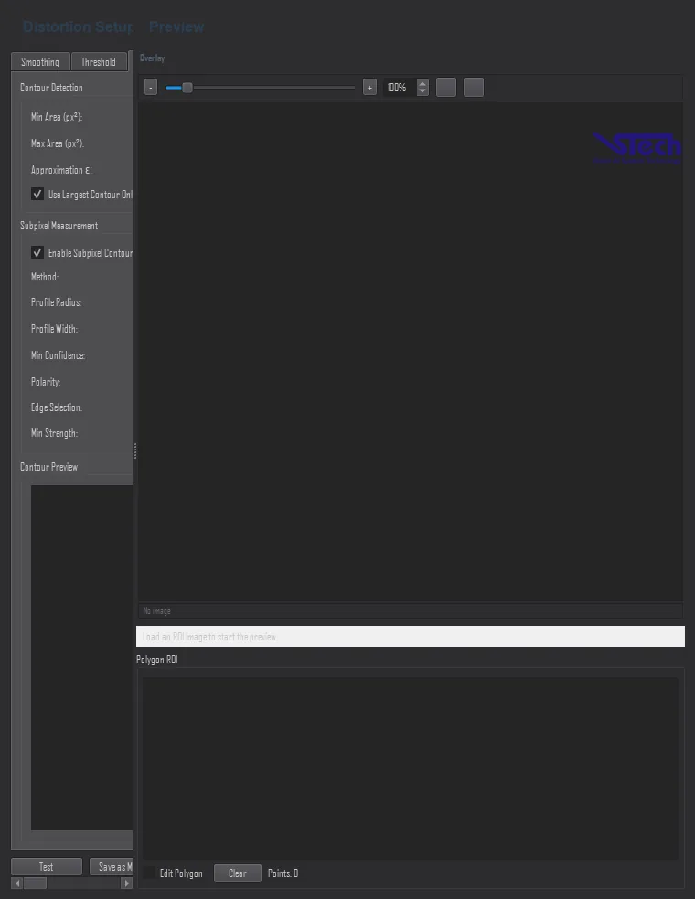
Nguyên lý: trích contour vùng bằng chuỗi
threshold→morphology giống Area, rồi đo mức lệch hình dạng so với
hình tham chiếu (datum): ví dụ circularity = 4π·area/chu vi² —
tròn hoàn hảo = 1.0, càng méo càng nhỏ; roundness_error đo sai
lệch điểm contour so với best-fit circle; kèm max/min diameter xuyên qua
tâm. Đây là đo hình dạng, không phải đo kích thước.
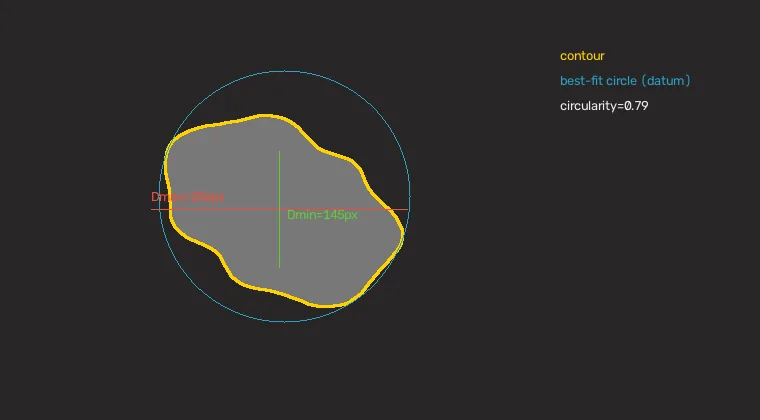
| Tham số | Điều chỉnh | Tác dụng |
|---|---|---|
distortion_method | circularity cho
chi tiết "phải tròn"; rectangularity cho chi tiết chữ
nhật; roundness_error khi cần sai lệch bán kính
cục bộ |
Chọn sai metric → không nhạy với kiểu méo thực tế của sản phẩm |
datum_fit_mode | best_fit_circle khi
tham chiếu là hình tròn lý tưởng; fitted_ellipse khi sản
phẩm vốn oval hợp lệ |
Datum sai → mọi sản phẩm đều bị tính méo hoặc méo thật bị bỏ qua |
| chuỗi threshold/contour | Chỉnh như Area để contour ôm đúng vành biên | Contour xấu → metric méo tính trên hình sai → kết quả nhiễu |
tolerance.min/max_value | Đặt ngưỡng metric trên tập OK thật (đo vài chục sản phẩm tốt) | Ngưỡng chặt quá → hàng tốt bị FAIL hàng loạt; lỏng quá → méo thật trôi qua |
Tạo ROI Distortion tự thêm 3 custom measurement:
distortion_value, distortion_max_diameter,
distortion_min_diameter — đặt nominal/tolerance trên từng cái
như phép đo thường.
Ví dụ: kiểm vành nắp nhựa bị xẹp — method
circularity, datum best_fit_circle; FAIL khi
độ tròn tụt dưới min_value hoặc min/max diameter lệch
nominal.
Chi tiết quy trình, tham số và ngoại lệ: §34.
22.6. Profile — đường viền theo trạm
Đo một đường biên dài theo kiểu trạm: dạy đường chuẩn trên master → chia thành các station đều nhau → inspect đo độ lệch biên theo pháp tuyến tại từng station (giống profile tolerance của bản vẽ cơ khí).
- Teach: trích đường chuẩn bằng threshold-contour hoặc edge-chain, resample theo bước.
- Station train: pitch giữa các station, chiều dài vạch
đo (
search_length), bề rộng chiếu; có thể bật local-align (template-match cục bộ trước khi đo). - Tolerance: band chung (
global_band) hoặc band riêng từng station; thêmfail_ratio/missing_ratiocho phép một phần trạm lỗi/mất.
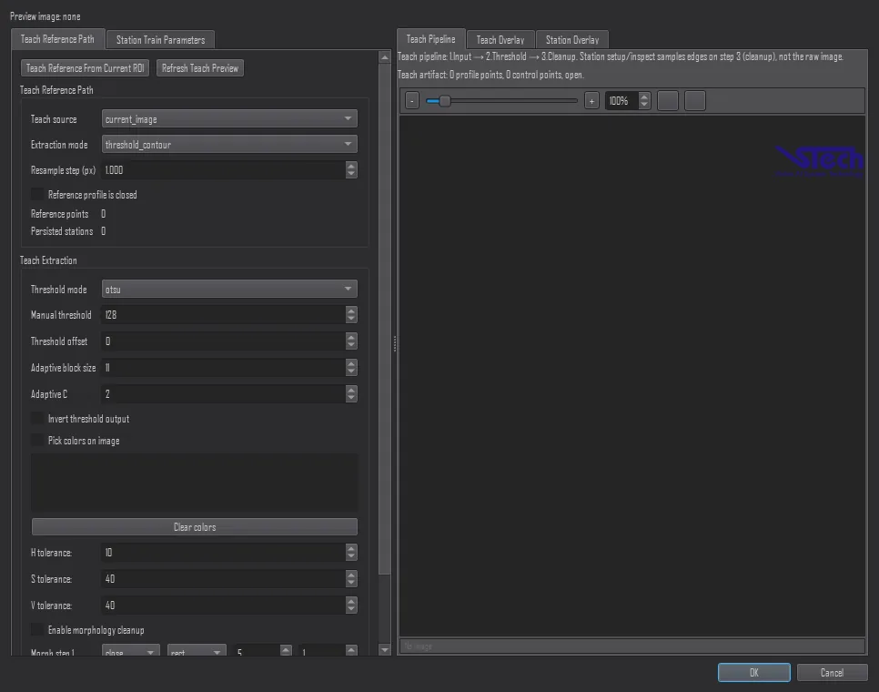
Nguyên lý: đường chuẩn dạy trên master là đường biên "đúng hình"; lúc inspect, tại mỗi station (điểm chia đều trên đường chuẩn) phần mềm bắn một vạch quét vuông góc đường chuẩn để tìm biên thật, rồi đo khoảng lệch theo pháp tuyến — giống hệt cách đo profile of a line trên bản vẽ cơ khí. Trạm vượt band → đỏ; đủ số trạm lỗi → ROI FAIL.
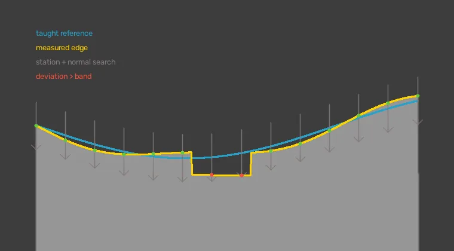
| Tham số | Điều chỉnh | Tác dụng |
|---|---|---|
station pitch | Nhỏ hơn khi biên gồ ghề / cần mật độ trạm cao | Pitch nhỏ → nhiều trạm, phát hiện lỗi cục bộ ngắn; pitch lớn → bỏ sót lỗi hẹp giữa hai trạm |
search_length | Đủ dài để vạch quét bắt được biên thật kể cả khi lệch nhiều | Ngắn quá → trạm "mất biên" (missing) dù biên có; dài quá → vạch cắt chi tiết khác, bắt biên giả |
global_band / band từng station |
Band chung cho đường đồng đều; band riêng cho chỗ cho phép lệch nhiều hơn | Band chặt → nhạy lỗi nhỏ; chỗ có rãnh/chữ cần band riêng hoặc bỏ trạm |
local-align | Bật khi biên trượt theo chiều dọc so với master (dao động vị trí) | Template-match cục bộ căn trạm trước khi đo → tránh đếm lệch do trượt vị trí, chỉ còn lệch hình thật |
fail_ratio / missing_ratio |
Cho phép tỉ lệ trạm lỗi/mất nhỏ (ví dụ 5%) khi biên có đoạn khó đo | 0 → một trạm lỗi đã FAIL cả ROI; quá cao → lỗi dải trôi qua |
Chi tiết quy trình teach→inspect, tham số và ngoại lệ: §35. Lưu ý: hướng quét là pháp tuyến hướng ngoài của đường chuẩn đã làm mượt (xem 35.6).
Ví dụ: kiểm đường viền nắp sau khi hàn — teach biên chuẩn
trên master, pitch station 4 px, band ±0.05 mm; FAIL khi số trạm vượt band
> fail_ratio.
22.7. Extreme — điểm cực trị trên contour
Tìm điểm ngoài cùng của contour theo hướng chọn
(trái/phải/trên/dưới/tùy chọn theo mũi tên) — ví dụ mũi nhọn, đầu thanh,
đỉnh cam. ROI trả về một điểm cực trị duy nhất và verdict
là bài toán presence: tìm được điểm hợp lệ → PASS, không tìm được →
FAIL. Mọi so sánh hình học (khoảng cách, vị trí, độ lệch) được đo bằng
Custom Measurement nhận điểm đó làm nguồn —
point_to_point, point_to_edge,
point_to_circle, point_to_contour_nearest,
signed_point_to_edge.
Config chính (ExtremeConfig): cách trích contour
(extraction_mode threshold/edge-chain + Threshold/morphology/
area), hướng direction_mode, cách gom ứng viên
(projection_tolerance_px, min_candidate_group_size,
candidate_select), và nhóm refine_* caliper
subpixel tinh chỉnh vị trí điểm.
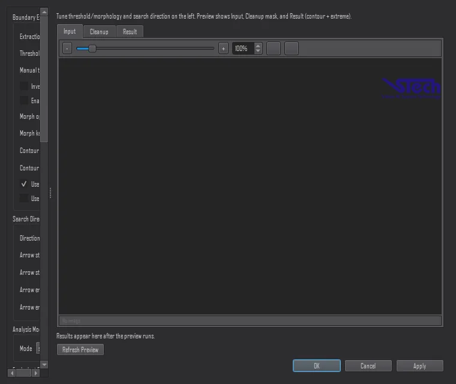
Nguyên lý: trích contour vùng rồi chiếu mọi điểm contour
lên direction_mode để tìm điểm có projection lớn nhất
(extreme). Các điểm nằm trong projection_tolerance_px quanh
đỉnh được gom thành nhóm ứng viên — candidate_select chọn đại
diện. Khi refine_enabled bật, một dải caliper quét quanh điểm
thô và fit subpixel cho toạ độ chính xác hơn một phần pixel.
| Tham số | Điều chỉnh | Tác dụng |
|---|---|---|
direction_mode | Chọn hướng chứa điểm cần tìm (right cho mũi nhọn bên phải; custom + arrow khi hướng xiên) | Sai hướng → tìm điểm cực trị ở phía không liên quan — điểm vẫn PASS nhưng sai chỗ, phép đo nhận nguồn sẽ sai theo |
projection_tolerance_px | Mũi dẹt → tăng để gom nhiều điểm cùng "xa nhất" | 0 → chỉ một điểm max; lớn → đại diện ổn định hơn trên mũi bằng |
min_candidate_group_size | Tăng khi nhiễu lẻ thắng nhóm thật | Nhóm ít hơn ngưỡng → FAIL ("extreme candidate selection failed") — chống điểm lẻ nhiễu làm extreme giả |
refine_* | Bật khi cần độ chính xác subpixel cho phép đo phía sau | Refine bật mà fail → vẫn status=ok, PASS —
point=None, điểm thô giữ trong
coarse_point, lỗi refine chỉ là diagnostic |
Ví dụ: kiểm mũi kìm phải — direction right,
gom ứng viên 5px, refine subpixel; rồi đo khoảng cách đầu bằng
point_to_point giữa hai ROI extreme trái/phải với dung sai mm.
Chế độ tip_profile cũ (phân tích mũi kép, đếm đỉnh, khe giữa
hai đỉnh) đã bị loại bỏ khỏi sản phẩm — bài toán tương đương
dùng nhiều ROI Extreme/Area + custom measurement. Recipe cũ còn ghi
analysis_mode=tip_profile hoặc các field tip_profile
(expected_extrema_count, profile_*,
tip_*…) sẽ không nạp được: trình đọc recipe báo
lỗi rõ "analysis_mode 'tip_profile' was removed — recreate the ROI as a
single extreme-point ROI (found point → PASS, no point → FAIL)", phải
tạo lại ROI dạng điểm đơn.
Chi tiết quy trình, tham số và ngoại lệ: §36.
22.8. Compare — so khác biệt master ↔ ảnh chạy
Không cần train: so trực tiếp vùng ROI trên master với ảnh inspect.
Config (CompareConfig): method — abs_diff (trừ
trực tiếp) hoặc ssim (so cấu trúc); ngưỡng diff_threshold /
ssim_threshold; chuỗi morphology để làm sạch vùng khác biệt;
min_defect_area lọc vệt quá nhỏ. Hướng dẫn đầy đủ + so sánh
abs_diff/ssim thực nghiệm ở §31.
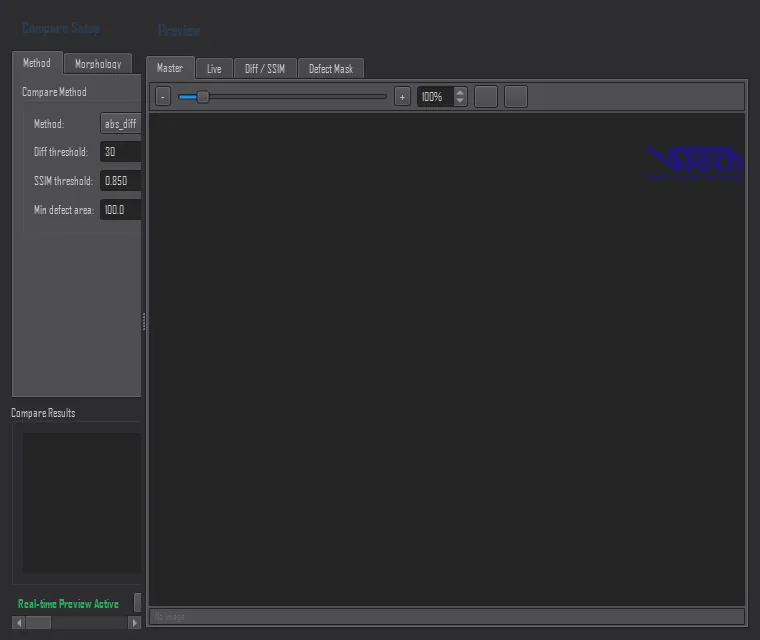
Nguyên lý: sau khi căn ảnh inspect về tọa độ master,
vùng ROI của hai ảnh được trừ từng pixel (abs_diff) hoặc so
cấu trúc cục bộ (ssim); vùng có chênh lệch vượt ngưỡng trở
thành "vùng khác biệt", qua morphology làm sạch rồi lọc theo
min_defect_area. Mọi thứ giống master → không vùng nào → PASS.
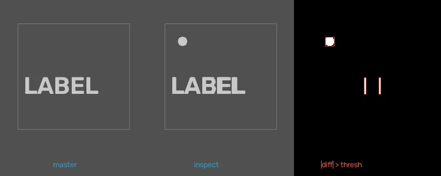
| Tham số | Điều chỉnh | Tác dụng |
|---|---|---|
method | abs_diff cho khác biệt
sáng/tối trực tiếp; ssim khi cần so cấu trúc chữ/hoa văn
kể cả chênh sáng nhẹ |
abs_diff nhạy rung sáng toàn cục; ssim bỏ qua lệch sáng đều nhưng vẫn bắt thay đổi hình |
diff_threshold | Tăng khi rung sáng/sai lệch sub-pixel tạo vùng giả; giảm khi khuyết mờ bị bỏ sót | Ngưỡng thấp → texture nền cũng thành "khác biệt" |
min_defect_area | Đặt lớn hơn hạt nhiễu/lỗi nhỏ nhất cho phép | Bỏ vùng khác biệt tí hon; quá lớn → lỗi nhỏ thật bị nuốt |
| morphology | open xóa chấm lẻ; close
gom vùng vỡ thành một |
Giống Area: làm sạch mask trước khi đếm/đo diện tích lỗi |
Lưu ý: Compare rất nhạy với sai lệch căn chỉnh — nếu anchor drift vài pixel thì mọi biên đều thành "khác biệt". Chỉ dùng khi sản phẩm cố định tốt và anchor ổn định; với rung sáng/drift lớn hãy dùng SEG_DEF/Anomaly.
Inspect trả về defect_count + total_defect_area.
Thiếu master hoặc ROI không hợp lệ → FAIL rõ, không âm thầm PASS. Phù hợp
khi sản phẩm ổn định và chỉ cần phát hiện "có gì lạ" — với defect hình thái
phức tạp hơn hãy dùng SEG_DEF/Anomaly.
Ví dụ: phát hiện tem in thiếu trên vỏ — abs_diff
+ min_defect_area=150 px để bỏ noise; vùng chữ khác master lớn
hơn ngưỡng → FAIL.
22.9. OD — phát hiện chi tiết theo mẫu (FPM)
Object Detect bằng template matching FPM (cùng engine với Anchor): dạy một mẫu ảnh nhỏ trên master, inspect tìm mẫu đó trong ROI.
- Templates: một ROI có nhiều template (vẽ/sửa/xóa trong
OD Setup); loại template đặt cho cả ROI —
ok(chi tiết đúng — cần thấy) hoặcng(mẫu lỗi — không được thấy). - Score + góc: PASS khi điểm khớp cuối ≥
score_thresholdVÀ góc lệch ≤angle_tolerance. Với templateng, điểm bị đảo (không thấy mẫu lỗi = PASS).
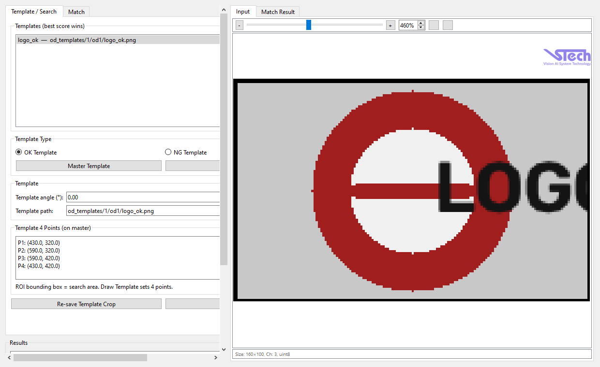
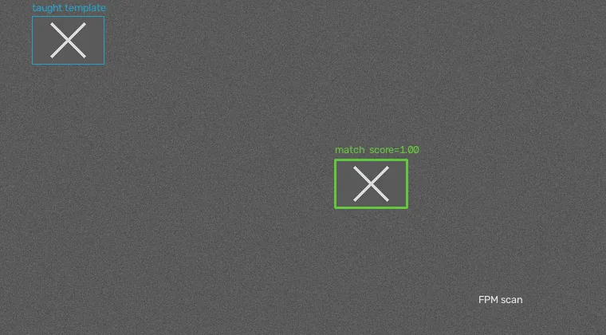
Nguyên lý: engine feature pyramid matching (giống Anchor): trích đặc trưng template ở nhiều tỉ lệ rồi trượt qua ROI để tìm điểm tương quan cao nhất — vì vậy template nhỏ, đặc trưng, ít nền khớp bền hơn template lớn chứa nhiều nền trơn.
Nguồn đo: tâm khớp của OD là một
directional point — nuôi point_to_point,
point_to_edge, signed_point_to_edge,
point_to_circle(_edge), point_to_contour_nearest,
points_projected_distance, point_to_reference_distance,
center_connection, connection_reference_angle —
§12.1.
| Tham số | Điều chỉnh | Tác dụng |
|---|---|---|
loại template ok/ng | Đặt cho cả
ROI: ok = chi tiết đúng phải thấy; ng = mẫu
lỗi không được thấy |
Đảo logic PASS/FAIL của ROI — đặt nhầm loại → sản phẩm tốt bị FAIL và ngược lại |
score_threshold | Hạ khi chi tiết thật hay bị bỏ sót (mờ, lệch sáng); tăng khi bắt nhầm chi tiết giống | Cao quá → chi tiết đúng cũng FAIL; thấp quá → chi tiết tương tự bị chấp nhận |
angle_tolerance | Nới khi chi tiết được phép xoay; siết khi xoay là lỗi | Kết hợp score: khớp mà xoay quá ngưỡng vẫn FAIL |
| số & nội dung template | Teach nhiều template cho các biến thể hợp lệ của chi tiết | Ít template → miss biến thể nhẹ; template chứa nền thừa → score nhiễu |
Kết quả tóm tắt nhiều template xem ở Summary OD. Hướng dẫn vận hành
đầy đủ — teach template, OK/NG, hai cổng score/góc, runtime verdict — ở
§28. Config được serialize vào recipe qua
core/roi/od.py::serialize_fields.
Ví dụ: kiểm pin sắt còn nguyên — teach template vùng pin
(ok), score_threshold=0.75,
angle_tolerance=10°; mất pin hoặc lắp lệch góc → FAIL.
22.10. OCR — đọc/kiểm ký tự
Đọc chuỗi in/dập bằng engine OCR (model kèm sẵn trong
ocr_models/ hoặc thư mục riêng). Config
(OcrConfig):
- Pipeline —
det(chỉ tìm vùng chữ),rec(chỉ nhận dạng),det_rec(đầy đủ). Bắt buộc chọn: để trống → inspect FAIL rõ. - Mode —
read(đọc + confidence ≥ ngưỡng) hoặcverify(so vớiexpected_patternregex fullmatch, hoặcexpected_textvới độ tương tự ≥ocv_char_tolerance). - Còn có language,
use_angle_cls(tự xoay), GPU,confidence_threshold.
Hướng dẫn đầy đủ từng bước + bảng tham số + mã lỗi ở §30.
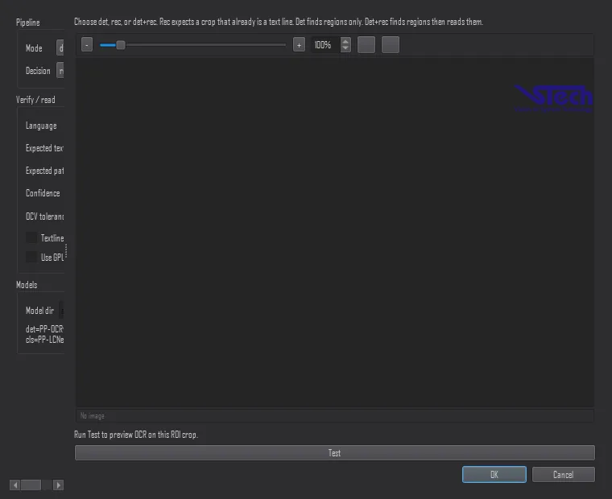
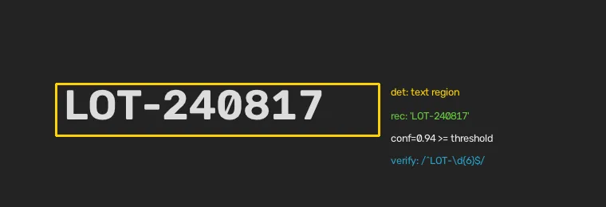
det khoanh vùng chữ trong
ROI → rec đọc từng vùng thành chuỗi + confidence → lớp
verify đối chiếu expected text / regex / từng ký tự
(OCV).| Tham số | Điều chỉnh | Tác dụng |
|---|---|---|
pipeline | det_rec khi chữ nằm bất
kỳ trong ROI; rec khi đã cắt sẵn đúng vùng chữ;
det khi chỉ cần biết có/không có chữ |
Để trống → FAIL rõ; dùng det khi cần nội dung →
không bao giờ có text |
mode read/verify | read chỉ cần đọc
ra gì đó đủ tin cậy; verify khi chuỗi phải khớp quy
tắc |
verify + expected_* biến "đọc đúng" thành PASS/FAIL có kiểm chứng |
expected_pattern (regex) | Mô tả đúng dạng chuỗi
hợp lệ — ví dụ ^LOT-\d{6}$ |
Regex lỏng → chuỗi sai dạng vẫn qua; regex sai → mọi sản phẩm FAIL |
ocv_reference_text +
ocv_char_tolerance | So từng ký tự với chuỗi chuẩn, cho phép sai tối đa N ký tự | Phù hợp kiểm "đúng mã in" — sai 1 ký tự in nhòe vẫn có thể cho qua theo tolerance |
confidence_threshold | Hạ khi chữ mờ hợp lệ hay bị loại; tăng khi OCR đọc bừa vùng nhiễu | Lọc kết quả đọc yếu — thấp quá chấp nhận đoán sai |
use_angle_cls | Bật khi chữ có thể nghiêng/xoay nhẹ | Tự phát hiện và xoay vùng chữ trước khi đọc → đỡ cấu hình thêm |
Nút Test trong OCR Setup để thử đọc trước khi Apply.
Ví dụ: kiểm lot code in trên nắp — pipeline
det_rec, mode verify với
expected_pattern ^LOT-\d{6}$; đọc sai ký tự hoặc
confidence thấp → FAIL.
22.11. Code Reader — barcode / QR / DataMatrix
Đọc mã bằng zxingcpp. Menu ngữ cảnh của ROI có sẵn
Code Reader Setup: chọn format (để trống = tự nhận
mọi format), expected_pattern (regex kiểm nội dung),
try invert + preprocess blur cho mã nền khó,
min_confidence, timeout_ms. Nút test decode ngay
trong dialog. Hướng dẫn đầy đủ từng bước + bảng tham số + mã lỗi ở
§29.
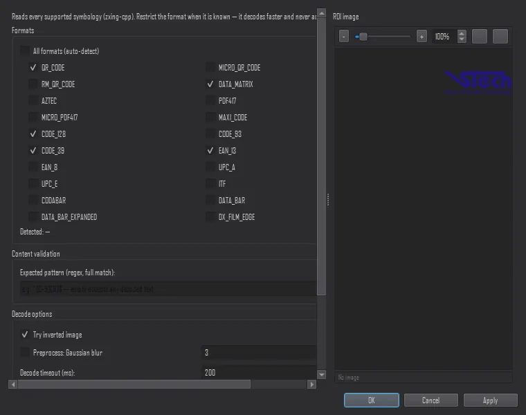
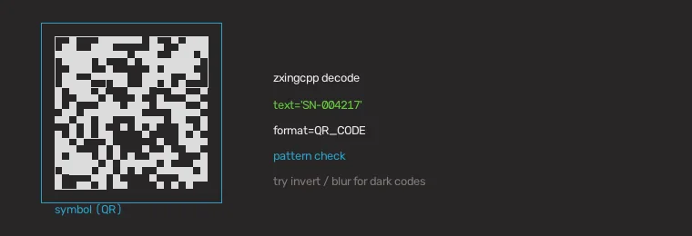
expected_pattern (regex) quyết PASS/FAIL.| Tham số | Điều chỉnh | Tác dụng |
|---|---|---|
formats | Chọn đúng loại mã (QR_CODE, EAN_13…) khi biết trước; để trống cho auto-detect | Lọc format → decode nhanh + tránh đọc nhầm pattern nền thành mã; auto chậm hơn nhưng dùng được khi không chắc loại |
expected_pattern | Regex kiểm nội dung — ví dụ
^SN[0-9]{8}$ |
Mã đọc được nhưng sai nội dung → FAIL — phát hiện dán nhầm nhãn |
try invert | Bật khi mã in ngược (sáng trên nền tối) | Decode thử cả bản đảo màu — cứu mã in trắng/nền đen |
preprocess blur | Bật khi module mã nhỏ/noise khiến decode chập chờn | Làm mượt trước decode — mất chi tiết sắc nhưng ổn định hơn trên mã bẩn |
timeout_ms | Tăng khi mã khó + chu kỳ máy cho phép; giảm khi cần trả lời nhanh | Hết giờ → FAIL rõ theo thời gian cho phép, không treo inspect |
Inspect trả text, format, confidence;
PASS khi decode được + khớp pattern + đủ confidence. ROI thiếu config →
FAIL rõ.
Ví dụ: đọc QR trên nhãn sản phẩm — formats
QR_CODE, expected_pattern ^SN[0-9]{8}$;
mã mờ ngược sáng → bật try invert + blur.
22.12. Intensity — đo độ sáng vùng
Đo cường độ trong vùng: measurement — mean / min / max / std /
median trên kênh channel — gray / R / G / B / H / S / V; đặt
min_value/max_value cho khoảng cho phép, hoặc
presence_mode (PASS khi đo được trên ngưỡng). Chi tiết contract,
giới hạn và số liệu đo thật: mục
38.
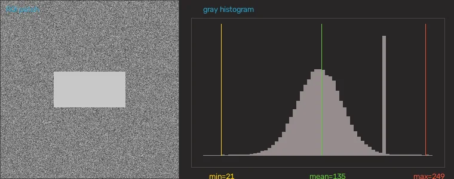
| Tham số | Điều chỉnh | Tác dụng |
|---|---|---|
measurement | mean cho độ sáng
chung; min/max cho có điểm quá tối/sáng;
std cho độ đồng đều bề mặt |
Chọn metric đúng bản chất lỗi: cháy vùng nhỏ chỉ lộ ở max, không đổi mean |
channel | gray cho sáng/tối;
R/G/B khi lỗi theo màu; H/S/V khi cần tách
sắc độ khỏi độ sáng |
Vệt đỏ nhạt trên nền sáng khó thấy ở gray nhưng rõ ở kênh R hoặc H |
min_value/max_value | Đo trên tập sản phẩm tốt rồi đặt khoảng chấp nhận | Rộng → lỗi sáng/tối trôi qua; hẹp → rung đèn bình thường gây FAIL |
presence_mode | Bật khi chỉ cần "có đủ sáng" thay vì khoảng chính xác | Đơn giản hóa verdict: PASS khi đo trên ngưỡng, không cần cả max |
mask_mode /
thresh trong recipe cũ vẫn được giữ nguyên nhưng runtime chưa đọc
— chỉnh bằng tay nếu cần.22.13. Line_SEG-C — thứ tự, màu và độ dày dây
ROI AI cho bài toán dây cáp theo thứ tự: kiểm tra từng dây đúng vị trí (trái→phải), đúng màu (Lab) và đúng độ dày so với reference đã dạy trên master. Cần model phân đoạn 1 lớp đã train (dataset images+masks như SEG_DEF — mục 21); Teach chỉ ghi reference dây, không train model. Chi tiết quy trình và dung sai: mục 37.
- Setup: trỏ model.pt + meta → chọn device → đặt
min_area_pxvà 3 dung sai (lab_ab_tolerance— màu a/b,lab_lightness_tolerance_percent— độ sáng L*,thickness_tolerance_percent) → Preview xem mask → Teach ghi reference. Có cùng Morphology preset như SEG_DEF (xem mục 21.9). - Inspect: phần mềm tự kiểm teach còn hợp lệ không (fingerprint gồm master + hình học + model + cấu hình — đổi một trong các thứ này phải Teach lại) → đếm dây phải đúng số, từng dây pass cả màu lẫn độ dày mới PASS.
- Lỗi thường gặp: "reference is stale — Teach again" → đã đổi master/hình học/model/cấu hình sau Teach; số dây đếm được khác số dạy → chỉnh threshold/morph/min_area rồi Teach lại.
Nguyên lý: model phân đoạn tách từng dây khỏi nền → gom mỗi dây thành một đối tượng → sắp xếp trái→phải và so với reference đã Teach: đúng số dây, từng dây đúng thứ tự vị trí, đúng màu Lab (a/b là sắc màu, L* là độ sáng) và đúng độ dày. Một dây vi phạm bất kỳ phép so nào → ROI FAIL.
| Tham số | Điều chỉnh | Tác dụng |
|---|---|---|
lab_ab_tolerance | Nới khi màu dây đúng nhưng ánh sáng làm sắc trôi; siết khi hai màu gần nhau bị nhầm | Sai lệch a/b vượt ngưỡng → dây sai màu/đổi chỗ bị FAIL |
lab_lightness_tolerance_percent | Nới khi độ sáng dây dao động theo lô | Kiểm L* riêng khỏi a/b — dây đúng sắc nhưng tối/nhạt bất thường vẫn bị bắt |
thickness_tolerance_percent | Theo dung sai độ dày dây thực tế (ví dụ ±15%) | Dây mỏng/dày bất thường hoặc dây bị che một phần → FAIL ở thickness |
min_area_px + morphology | Tăng khi vệt nhiễu bị đếm thành dây; giảm khi dây mảnh bị mất | Lọc blob nhỏ trước khi đếm — sai số đếm dây là lỗi phổ biến nhất |
| Teach reference | Teach lại trên master OK sau khi đổi master/hình học/model/cấu hình | Reference gắn fingerprint với 4 yếu tố đó — đổi một là báo "stale", bắt buộc Teach lại để tránh so với chuẩn cũ |
Ví dụ: kiểm cáp ribbon 5 dây (đỏ/nâu/cam/vàng/xanh lá) — Teach trên master OK; dây đổi chỗ → Δab lệch → FAIL; dây mỏng hơn chuẩn 15% → FAIL ở thickness.
22.14. LED SS — chiều cao LED trên góc máy xiên
ROI chuyên dụng đo chiều cao LED (silhouette trắng trên nền tối, camera xiên). Baseline = đoạn Feret dài nhất nối 2 điểm contour; apex = điểm contour xa baseline nhất theo pháp tuyến. Setup dialog có 3 tab preview (Input / Cleanup / Result) + nút Refresh Preview. Các nhóm tham số đúng nhãn UI:
| Nhóm / control | Giá trị | Ý nghĩa kỹ thuật |
|---|---|---|
| Extraction mode | threshold_contour · edge_chain |
Pipeline lấy silhouette — cùng contract Extreme (§36) |
| Threshold mode | otsu · global_mean ·
adaptive_mean · adaptive_gaussian ·
manual · color_segment |
Chiến lược ngưỡng hóa; color_segment tách LED theo màu |
| Manual threshold (0–255) + Invert threshold | chỉ khi mode = manual | Ngưỡng cố định; invert khi LED tối trên nền sáng |
| Enable morphology cleanup + Morph op + kernel (1–51) | none · erode · dilate · open · close | Khử nhiễu mask trước khi lấy contour |
| Contour min/max area · Use largest only · Use convex hull | px² | Lọc contour chính — hull khi silhouette lõm |
| Apex side | auto · positive · negative | Phía apex so với pháp tuyến baseline; auto lấy phía xa hơn |
| Enable per-axis µm scale + Base/Height scale (µm/px) | float | Quy đổi riêng base và height — cần khi camera xiên làm hai trục khác tỉ lệ |
| Enable subpixel refine: Method · Polarity · Edge selection · Min strength · Min confidence · Search radius · Profile width · Fit radius | method: parabola · gaussian · edge_fitting · spline · center_of_gravity · phase; polarity: both/dark_to_light/ light_to_dark; selection: strongest/first/last/weakest | Refine p1/p2 (dọc baseline) và apex (dọc pháp tuyến) trên ảnh gray chưa blur; refine hụt → giữ coarse point + flag diagnostics |
| Enable height tolerance + Min/Max height (mm) | mm | Cửa sổ dung sai → review reasons
height_below_min/height_above_max/
pixel_per_mm_missing |
Measurements: led_ss_height (khoảng ⊥
apex→baseline), led_ss_base (độ dài baseline) — đơn vị resolve
theo calibration (µm/mm/px).
22.15. Shape Matching — khớp hình bằng engine LINEMOD
Khớp biên dạng bằng engine sbm (LINEMOD/Line2DUP) — chạy trên gradient/edge shape nên bền đổi sáng hơn OD (pixel-correlation). Dialog có 2 tab ảnh (Master / Patch Preview) và 4 nhóm tham số:
| Nhóm / control | Giá trị | Ý nghĩa kỹ thuật |
|---|---|---|
| Teach: Draw… + Status / Model / Template | quad 4 điểm trên master | Vẽ vùng mẫu → train lưu model tại
shape_matching_models/<id>/<roi>/model_tpl.yaml
+ teach.png; nhãn trạng thái báo model đã teach hay
chưa |
| Train — Num features | 16–8191 | Số feature point trích từ template — nhiều → chính xác nhưng chậm/nhạy nhiễu |
| Weak threshold / Strong threshold | gradient magnitude | Hai ngưỡng hysteresis chọn điểm gradient trong template |
| Angle min/max (deg) · Angle step (+Auto) | deg | Dải góc quét và bước lượng tử hóa góc lúc train — chi tiết quay cần dải rộng + bước mịn |
| Scale min/max/step | tỉ lệ | Dải scale template — sản phẩm đổi khoảng cách/kích thước cần dải rộng |
| Max px shift · Padding (px) | px · 0–512 | Giới hạn lệch tâm match; padding mở rộng context quanh template |
| Match — Score threshold (%) | % | Ngưỡng similarity chấp nhận match — vế verdict
score ≥ threshold |
| Coarse NMS ratio · NMS IoU | -1 = off | Non-max suppression trên ứng viên match — tắt = giữ mọi candidate |
| Max matches | 0 = unlimited | Giới hạn số match trả về (verdict chỉ dùng best-match) |
| Subpixel refine · ICP refine (x, y, angle) | checkbox | Refine vị trí/góc match dưới pixel; ICP lặp trên point set |
| Verdict Gate — Angle tolerance (deg) | deg | passed = score ≥ threshold VÀ |folded(found − teach_angle)|
≤ tolerance — chi tiết được phép xoay bao nhiêu |
Thiếu key config → ShapeMatchingError, không dùng default
ngầm (config sống trong roi.config["shape_matching"]).
22.16. Texture Defect — lỗi bề mặt đồng đều (multi-branch)
Detector cổ điển đa nhánh cho bề mặt đồng đều —
lồi lõm (relief), xước, chấm đen và gãy nhịp texture định kỳ. Cùng khung
với Surface Defect (§43) nhưng nhiều nhánh chuyên biệt hơn; config nằm ở
roi.config["texture_defect"].
| Bước pipeline | Kỹ thuật |
|---|---|
| Non-ROI (tùy chọn) | Threshold raw-gray sau image_scale → morph → region
lớn nhất → expand — loại vùng không phải bề mặt |
| Branch scores | preprocess → scale → 4 bản đồ z-score riêng: texture / scratch / dent / spot |
| Branch masks | Hysteresis từng nhánh → union mask |
| Mask defect | Connected components → candidates kèm provenance nhánh + aspect ratio |
| Verdict logic | Defect-size filter (mục 39) + false-NG hygiene gates + scratch aspect gate + non-ROI exclusion → defects / rejected |
| Count verdict | defects > 0 → NG; defects = 0 → OK. Problem do kernel báo là
NG row (valid=False) |
Khác Surface Defect: Surface Defect một nhánh dark-score đa scale cho vùng tối; Texture Defect tách 4 nhánh z-score chuyên biệt + gate aspect cho vết xước — phù hợp bề mặt có texture/vân mà defect nhỏ chìm trong nền.
Nhóm tham số trong setup dialog (đúng nhãn UI)
| Nhóm / control | Ý nghĩa kỹ thuật |
|---|---|
| Detection — Image scale | Tỉ lệ downscale ảnh trước pipeline — <1 tăng tốc, giảm độ nhạy defect nhỏ |
| Non-ROI (no-fabric): Enabled · Black level < · Morph op ×N (op+shape+kernel) · Min area · Expand | Phát hiện vùng không phải bề mặt (tối đặc/lỗ hổng): threshold → morph chain → region lớn nhất → expand — các vùng này bị loại khỏi mọi nhánh |
| Preprocess: Denoise · Denoise kernel · Illumination sigma | Lọc nhiễu + tách nền chiếu sáng chậm trước khi chấm z-score |
| Background: Background scales · Scale select · Scale · Auto std max · Std floor · Interior margin | Ước lượng nền đa-scale; auto-std cap + std floor chống chia 0; margin bỏ mép ROI khỏi thống kê |
| Texture branch: Enabled · Method · Notch radius · Peak prominence · Low-freq suppress · Low/High | Phân tích phổ — notch quanh đỉnh chu kỳ để dập texture định kỳ, còn lại là gãy nhịp = defect; Low/High = hysteresis |
| Scratch branch: Enabled · Line length · Line thickness · Orientations · Polarity · Min aspect · Low/High | Bank kernel mảnh đa hướng bắt vết xước; Min aspect chặn đốm tròn lọt nhánh xước |
| Dent branch (relief): Enabled · DoG sigma pairs · Polarity · Low/High | Difference-of-Gaussians đa cặp sigma bắt lồi/lõm bề mặt |
| Spot branch (dark): Enabled · Morph kernel sizes · DoG sigma pairs · Polarity · Low/High | Blackhat đa kích thước bắt chấm tối + DoG lọc theo cỡ |
| Enabled branches only (checkbox preview) | Bỏ chấm điểm nhánh đã tắt — preview nhanh hơn, tab nhánh tắt để trống |
16 tab preview theo pipeline: Input · Valid mask · Preprocessed · Background · Texture score/mask · Scratch score/mask · Dent score/mask · Spot score/mask · Union score · Defect mask · Non-ROI · Overlay — mỗi nhóm control có nút view nhảy thẳng tới tab stage tương ứng.
22.17. Loại ROI cũ — không dùng nữa
| Type | Trạng thái | Ghi chú |
|---|---|---|
segment |
Ngừng hỗ trợ (tombstone) | Không tạo/setup/inspect; schema v2 reject. Đừng nhầm với
seg_def — đó là hai thứ khác nhau. |
local_color_diff (LCD) |
Ngừng hỗ trợ (tombstone) | Đã gỡ khỏi menu Create ROI và mọi đường inspect — recipe cũ
còn ROI loại này báo lỗi TOMBSTONE rõ khi
preflight, không bao giờ bị bỏ qua âm thầm. Thay thế:
Compare (§22.8) cho so lệch pixel với master,
SEG_DEF (§21) / Anomaly
(§27) cho defect AI, Area +
color_samples_bgr (§22.3) cho so màu vùng. |
maxcontour |
Chỉ đọc recipe cũ | Decode được nhưng không chạy inspect — xem như đã retire. |
bundle, blob, bubble |
Alias của Area | Recipe cũ vẫn chạy, nhưng tất cả đều đi vào đường Area; tạo mới hãy chọn Area. |
point |
Không phải ROI độc lập | Cấu hình con trỏ nằm trong ROI Area — xem §22.3. |
22.18. Lỗi chung theo loại ROI
| Triệu chứng | Nguyên nhân thường gặp | Xử lý |
|---|---|---|
| ROI báo lỗi ngay khi inspect | Hình học ROI không hợp lệ (nằm ngoài ảnh, coverage không đủ) hoặc thiếu config bắt buộc | Vẽ lại ROI cho nằm trong vùng anchor bao phủ; mở setup kiểm trường bắt buộc (pipeline OCR, min_area SEG_DEF, placement Circle…) |
| Circle luôn FAIL | Method caliper chưa đặt placement | Circle Setup → Draw Placement hoặc Auto Calculate |
| OCR FAIL dù có chữ | pipeline để trống, hoặc confidence ngưỡng cao /
ngôn ngữ sai |
Chọn pipeline det_rec; dùng nút Test trong OCR Setup
để xem text + confidence thực tế |
| Barcode không đọc được | Mã nền tối/ngược sáng, hoặc format lọc quá hẹp | Bật try invert; thêm preprocess blur; để trống formats cho auto-detect |
| Line_SEG-C báo "reference is stale" | Đổi master / ROI / model / cấu hình sau khi Teach | Mở setup → Teach lại để ghi reference + fingerprint mới |
| OD không khớp mẫu | Score threshold quá cao, góc lệch vượt angle_tolerance, hoặc template đặt nhầm loại ok/ng | Hạ score_threshold, nới angle_tolerance; kiểm loại template trong OD Setup |
| Profile FAIL dù biên đúng | Band quá hẹp, hoặc nhiều station mất biên vượt missing_ratio | Nới band theo station; kiểm search_length đủ bao phủ biên thật |
| Không thấy loại ROI cần trong menu Add | segment / maxcontour đã ngừng hỗ trợ
(intensity đã có UI đầy đủ — Add ROI →
Intensity) |
Xem §22.17 và docs/roi_capability_matrix.md trước khi
báo lỗi |
23.Ignore Area — vùng bỏ qua trong vùng kiểm tra
Ignore Area là polygon loại trừ một phần vùng kiểm tra khỏi đánh giá. Pixel nằm trong Ignore không được đem đo, không sinh defect trên mask SEG_DEF, không ảnh hưởng phép đo — tương đương "nằm ngoài ROI", không phải "tô đen ảnh".
- Teach anchor trước — Ignore bám theo anchor; anchor chưa dạy thì polygon gắn vào tọa độ ảnh và sẽ được chuyển về anchor khi teach.
- Vẽ polygon — chuột phải node Sub-ID (áp cho mọi ROI) hoặc node ROI (chỉ ROI đó) → chọn mục Ignore → click trái các đỉnh → click phải khép kín (chi tiết ở 23.2).
- Nhìn overlay — vùng Ignore hiện gạch chéo: hồng = global, cam = local. Thấy đúng chỗ cần bỏ qua là được.
- Inspect thử ảnh mẫu — defect trong vùng Ignore phải biến mất khỏi kết quả; nếu ROI bị che hết sẽ thấy REVIEW.
Khi nào dùng: tem/nhãn dán thay đổi mỗi sản phẩm nằm trong ROI; vùng phản chiếu/ký hiệu cố định gây lỗi giả; vùng bị che cố định theo sản phẩm. Không dùng Ignore để che lỗi model, anchor hay backend — những lỗi đó vẫn báo bình thường và phải sửa ở gốc.
23.1. Hai phạm vi — Global và Local
| Phạm vi | Vẽ từ đâu | Tác động | Lưu ở đâu |
|---|---|---|---|
| Global (toàn Sub-ID) | Context menu node Sub-ID › | Mọi ROI enabled của cùng Sub-ID/FOV | id.ignore_polygons |
| Local (một ROI) | Context menu node ROI › | Chỉ ROI được gán | roi.ignore_polygons |
Hai phạm vi hợp nhau: vùng hợp lệ của một ROI = vùng ROI
(sau include-mask polygon_points nếu có) trừ hợp của mọi Ignore
global và Ignore local của ROI đó.
lcd1 (xanh lá) lẫn ROI edge1 (xanh dương);
polygon cam gạch chéo là Local Ignore ("IGNORE lcd1") — chỉ
loại vùng đó khỏi lcd1, edge1 không bị ảnh hưởng.
(ROI lcd1 trong hình là loại LCD đã gỡ — nguyên tắc Ignore giống
nhau cho mọi loại ROI.)Polygon bám anchor: tọa độ Ignore được lưu theo khung anchor (như vị trí ROI), không phải tọa độ ảnh cứng. Khi anchor phát hiện sản phẩm dịch/xoay, vùng Ignore dịch/xoay theo đúng sản phẩm. Teach lại anchor hay unbind anchor sẽ re-encode polygon theo đúng pixel đã vẽ — không cần vẽ lại. Polygon vẽ trước khi teach anchor được chuyển sang khung anchor khi anchor được dạy.
23.2. Vẽ polygon Ignore
- Chuột phải node Sub-ID (global) hoặc node ROI (local) → chọn mục Ignore như bảng trên. Viewer chuyển sang chế độ vẽ polygon (con trỏ crosshair).
- Click trái từng đỉnh — điểm đánh dấu hồng và đoạn nối hiện theo; đoạn nét đứt chạy theo con trỏ cho thấy cạnh tiếp theo.
- Click phải để khép kín và kết thúc polygon (tối thiểu 3 đỉnh; click phải khi chưa đủ 3 đỉnh sẽ hủy nét đang vẽ).
- Esc hủy nét đang vẽ bất kể đã có bao nhiêu đỉnh.
- Sau khi khép kín, polygon lưu vào recipe (auto-save), overlay Ignore hiện dạng gạch chéo: hồng đậm = global (nhãn "IGNORE (all ROIs)"), cam = local (nhãn "IGNORE <roi>").
- Undo (Ctrl+Z) hoàn tác cả thao tác vẽ; xóa từng polygon qua context menu ( / , hoặc cho global).
- Lưu/nạp lại recipe: Ignore đi cùng file recipe; mở lại recipe sẽ thấy lại overlay.
23.3. Ignore tác động inspect thế nào
- ROI cổ điển (edge, area, circle, distortion, profile, extreme, intensity, compare, barcode, OCR, OD): vùng Ignore bị loại khỏi ảnh ROI trước khi đo — giống vùng ngoài include-mask.
- Surface Defect / Texture Defect: vùng Ignore bị loại khỏi score map trước hysteresis — không sinh candidate, không tính vào valid coverage.
- SEG_DEF / Line_SEG-C: class pixel trong Ignore bị xóa (về nền) trước khi đo blob/wire — defect chồm vào vùng Ignore không tính.
- Anomaly: model chấm điểm cả patch nên không hỗ trợ Ignore che một phần — cấu hình Ignore một phần ROI Anomaly sẽ báo lỗi rõ ràng lúc inspect; che toàn bộ ROI thì trả REVIEW.
- ROI bị Ignore che hết vùng hợp lệ → trả
REVIEW, không bao giờ PASS — vì không còn dữ
liệu để kết luận. REVIEW chặn PASS ngay cả khi PASS Logic viết
NOT roi.passed.
lcd1:
ROI không còn pixel hợp lệ để đo nên kết quả của nó là REVIEW
(non-PASS), nguyên nhân ghi ignore_area_covers_roi. Đây là bảo
vệ an toàn — sản phẩm chưa được kiểm tra không được coi là đạt.23.4. Xử lí sự cố
| Triệu chứng | Nguyên nhân thường gặp | Cách xử lí |
|---|---|---|
| ROI luôn REVIEW "ignore areas cover…" | Ignore (global + local) phủ kín vùng đo của ROI | Xóa/thu nhỏ polygon hoặc vẽ lại ROI to hơn vùng Ignore. |
| Lỗi "requires at least 3 points" / "not finite" | Polygon hỏng trong file recipe (sửa tay) hoặc nét vẽ lỗi | Xóa polygon lỗi trong context menu rồi vẽ lại. |
| Lỗi "anchor_id … does not match" | Polygon được vẽ trước khi teach anchor xong/khác anchor | Teach anchor trước rồi vẽ Ignore; hoặc unbind → teach → polygon tự re-encode. |
| Ignore không theo sản phẩm khi dịch | Nhầm tưởng Ignore gắn tọa độ ảnh — thực tế nó bám anchor; nếu anchor detect sai, Ignore cũng lệch theo | Kiểm tra score/anchor detection trước; Ignore đúng theo anchor. |
| Vẫn thấy defect trong vùng đã Ignore | Polygon chưa đủ phủ vùng, hoặc đang ở phạm vi Local cho ROI khác | Vẽ lại polygon phủ kín; dùng Global nếu vùng đó cần loại khỏi nhiều ROI. |
| Anomaly báo lỗi ignore | Anomaly không hỗ trợ Ignore che một phần | Xóa polygon đó, hoặc che kín ROI (sẽ REVIEW), hoặc thu nhỏ ROI khỏi vùng đó. |
Nguyên tắc an toàn: Ignore chỉ loại pixel khỏi đánh giá — nó không che lỗi model/backend/anchor (các lỗi đó vẫn ERROR/REVIEW bình thường) và không bao giờ tạo PASS khi không đủ dữ liệu. Polygon sai định dạng gây lỗi rõ ràng lúc nạp/inspect, không bị bỏ qua âm thầm.
24.Cài đặt camera — kết nối, thông số ảnh, trigger
Mục này hướng dẫn kết nối camera công nghiệp (Basler GigE, Hikrobot USB3/GigE)
và chỉnh thông số ảnh trước khi nạp master / dạy ROI. Mọi thao tác đều đi qua
một đường duy nhất — CameraControlService — nên trạng thái
hiển thị trên tab Camera, dialog Camera Setup và luồng Run luôn khớp nhau.
24.1 Tab Camera — kết nối lần đầu
- Mở tab (nhóm tab bên phải màn hình chính).
- Kiểm tra dòng SDK Status: phải hiện
Basler pypylon: Availablevà/hoặcHikrobot MVS: Availablemàu xanh. Nếu "Not available" thì driver chưa cài — xem mục 24.6. - Chọn Camera vendor (Basler / Hikrobot). Danh sách
Available Cameras tự quét và liệt kê thiết bị kèm tên, model
và serial — ví dụ
[Hikrobot] CAM1 · CS2000-C (SN: 02E10349722). - Chọn camera trong combo → nhấn Connect. Khi thành công,
khối Status chuyển
Connection: Connected(xanh) và các ô thông số đọc giá trị thật từ camera.
Ghi chú: khối Camera Parameters trên tab Camera chỉ gồm các thông số hay chỉnh nhất (Exposure, Gain, Gamma, Frame Rate, Trigger). Sau khi sửa phải nhấn Apply Parameters để ghi xuống camera — nút Reload from Camera đọc lại giá trị thật. Dùng Capture Single Image / Start Live View để kiểm tra ảnh ngay trên tab này.
Các nhóm còn lại trên cùng tab Camera (cuộn xuống):
- Frame Trigger — Trigger Mode (bật trigger từng frame) + Trigger Line (nguồn line do camera liệt kê).
- Line Trigger — chỉ hiện trên camera line-scan
(họ MV-CL): Trigger Mode + Line Source, map
TriggerSelector=LineStart— trigger theo dòng ảnh cho encoder/băng chuyền, khác trigger theo frame. Trên camera area-scan nhóm này ẩn. - User set + Config file — load User Set từ flash camera
và nhập file cấu hình
.camera.json(có ô sync cho mọi camera; import áp cả black level, frame-rate enable và cấu hình line output đã export). - Calibration — trạng thái calibration/flat-field của camera đang chọn.
- Inspection Result Output — PASS/FAIL pulse và Output Timing (Hard/Soft Time) — chi tiết §25.6.
24.2 Tab Camera Settings
Cửa sổ tiêu đề Camera Setup. Mở bằng menu hoặc nút Advanced Camera Setup... cuối tab . Thanh trên: Type: (Basler / Hikrobot), Camera:, Refresh, Connect (khi đã nối, nút này hiện Disconnect). Khung trái: Start Preview, Stop Preview, Grab One, Software Trigger, Save Image. Dưới cùng: Apply Parameters, Apply & Close, Close.
Thứ tự tab bên phải, đúng như dialog dựng:
- Camera Settings
- Image
- ROI
- Trigger / I/O
- Transport
- Post-process
- User Sets
- Device Info
Tab Camera Settings là pref máy, không phải gán Inspection ID (gán ID nằm ở tab General, khối Multi-Camera). Hai nhóm:
- Camera — GigE DHCP on Connect (tooltip: Hikrobot / I-Tek GigE; Basler và USB hiện nhưng bị tắt), Auto connect (nối lại đúng hãng và serial lúc mở app; Disconnect không tự tắt ô này).
- Input image global — Rotate, Flip X, Flip Y, Color convert. Dòng ghi sẵn: “Per camera serial (QSettings). Applied at grab. Start Preview or Grab One to see rotate / flip / color.” Đây là xoay/lật lúc grab theo serial. Khác combo Rotation trên tab Post-process.
Đổi các ô này thì panel ghi QSettings ngay. Muốn thấy trên ảnh preview của dialog, bấm Start Preview hoặc Grab One.
Kiểm tra: đổi Flip X hoặc Rotate, Grab One, ảnh lật/xoay đúng chiều vừa chọn. Gán ID không có trên tab này — nếu cần gán serial cho Inspection ID, sang 24.8 Multi-Camera.
Quy tắc an toàn: thông số ảnh và trigger trên các tab sau ghi xuống camera khi nhấn Apply Parameters. App đọc lại giá trị thật sau khi ghi; nếu một thông số bị camera từ chối, lỗi hiện rõ. Apply & Close chạy đúng lần ghi của Apply Parameters (thông số bị camera từ chối vẫn báo bằng dialog lỗi riêng), trả cờ Post-process về tab Camera rồi mới đóng — không còn đóng mà bỏ qua ghi như trước. Khi camera đang được giữ bởi luồng Run/Multi-camera, dialog hiện trạng thái đang được giữ và khóa các nút nguy hiểm.
24.3 Tab Image
Năm nhóm, đúng thứ tự trên tab Image:
- Exposure — Exposure time (µs) và Auto mode
(
Off,Once,Continuous). - Gain — Gain (dB) và Auto mode cùng ba mục.
- Gamma / Black Level — ô Enable, Gamma, Black level.
- Pixel Format — combo Format. Danh sách do camera đang nối trả về; combo trống nghĩa là adapter không liệt kê format (xem 24.6).
- Frame Rate — ô Enable và Frame rate (fps).
Ảnh dưới đây chụp thật từ camera Hikrobot CS2000-C trên bench (chai thủy tinh trong fixture), ghi và đọc lại qua CameraControlService. Các số µs / dB là số đã đo trên bench đó Ví dụ bench, không phải giá trị mặc định của tab.
Exposure — Exposure time
Gain giữ nguyên 17,5 dB. Exposure time lớn hơn thì ảnh sáng hơn, dễ nhòe khi sản phẩm chuyển động, và nhịp khung tối đa giảm.
Exposure time (µs) — thời gian phơi sáng
Gain giữ nguyên 17.5 dB. Giá trị lớn hơn → ảnh sáng hơn nhưng dễ nhòe nếu sản phẩm chuyển động, và frame rate tối đa giảm (không thể chụp nhanh hơn thời gian phơi sáng).
Hình 40a — exposure = 1 000 µs: ảnh gần như đen, chỉ thấy
vùng sáng mạnh nhất. |
Hình 40b — exposure = 20 000 µs: vật thể rõ, vùng tối còn
thiếu sáng. |
Hình 40c — exposure = 120 000 µs: quá sáng, chi tiết cháy
trắng — và tối đa chỉ ~8 fps. |
Gain
Exposure time giữ nguyên 8 000 µs. Gain lớn thì ảnh sáng hơn và nhiễu hạt tăng. Tăng Exposure time hoặc đèn trước; tăng Gain khi exposure đã chạm nhịp khung cần giữ.
Hình 41a — gain = 0 dB: tối, ít noise. |
Hình 41b — gain = 8 dB: sáng hơn, noise bắt đầu thấy. |
Hình 41c — gain = 17 dB: sáng nhất nhưng nhiễu hạt rõ. |
Kiểm tra tab Image:
(1) Start Preview; (2) Auto mode của Gain để
Off, Gain về 0, tăng Exposure time đến khi ảnh đủ sáng;
(3) còn tối thì tăng Gain; (4) Apply Parameters rồi đọc lại ô
— số trên ô phải khớp giá trị vừa ghi; (5) Grab One vài lần.
Khung ngay sau Apply có thể vẫn là frame cũ — xem
24.6.
24.4 Tab ROI — Hardware Region of Interest
Nhóm Hardware Region of Interest: Width, Height, Offset X, Offset Y (px), nút Apply ROI và Reset to Full. Dòng dưới form: “ROI changes stop and restart grabbing briefly. Values are snapped to sensor increment constraints.”
Đây là cửa sổ đọc trên sensor. Chữ nhật ROI trên recipe (Edge, Area, …) là vùng trên ảnh master sau khi camera đã trả khung. Hai thứ không dùng chung nút: Apply ROI đổi kích thước khung camera; vẽ ROI recipe không đổi sensor.
Kiểm tra: Apply ROI rồi Grab One — khung nhỏ lại theo Width/Height. Reset to Full rồi Grab One — khung về full sensor mà camera chấp nhận.
Tab Trigger / I/O
Nhóm Trigger Input:
- Trigger mode:
Off (Free Run)— camera chụp liên tục, dùng khi setup và live view.On (Hardware Trigger)— chờ nguồn trong Trigger source. - Trigger source: trước khi nối, combo ghi “Connect camera to load options”. Sau Connect, danh sách do camera trả về. Nút Software Trigger trên thanh preview phát trigger phần mềm khi source đang là software. Khi camera liệt kê một line, line đó là trigger từ cảm biến/encoder — kèm Trigger delay và Line debounce.
- Activation:
RisingEdge,FallingEdge,LevelHigh,LevelLow. - Cache: Enable trigger cache — ô bị khóa (xám) khi
camera không báo node
TriggerCacheEnable(điển hình Basler); chỉ khi camera đang nối và node tồn tại ô mới ghi được.
Nhóm Output Line Configuration: Output line, Line mode, Line source, User output selector, User output value (UserOutputValue), Invert output polarity, Enable strobe output, Strobe duration, Strobe delay, Strobe pre-delay.
Mỗi thay đổi trong nhóm này ghi ngay xuống camera — camera từ chối thì thanh
status báo “Output line write rejected” (kèm lý do driver khi có) và
các ô quay về trạng thái camera đang giữ, không giữ giá trị vừa gõ. Cấu hình
line (mode / source / invert / strobe / user output theo từng line) được export
vào file .camera.json và áp lại khi import file đó, hoặc khi load
feature file có sidecar <stem>.camera.json — xem
24.5.
Kiểm tra: Apply Parameters, đọc lại Trigger mode. Free Run thì Start Preview có khung liên tục. Hardware Trigger với source software thì mỗi lần bấm Software Trigger mới có thêm một khung.
Tab Transport
Nhóm Buffer & Network Settings: Image nodes, Output queue, Packet size (GigE) (kèm Optimize Now; giá trị 0 trên ô hiện “Auto on connect”), Inter-packet delay (ticks), Heartbeat (GigE).
Output queue ghi thật lên node OutputQueueSize của
camera (Basler) — không còn chỉ lưu phía app; ô bị khóa khi camera đang nối mà
node không tồn tại. Packet size (GigE) bị khóa khi camera kết nối qua
transport không phải GigE (ví dụ USB3) — cùng cơ chế Inter-packet delay
và Heartbeat (GigE) vốn đã khóa từ trước: ba ô chỉ sống trên link GigE.
Với GigE: tăng Packet size khi NIC bật Jumbo Frames để giảm mất gói; tăng Inter-packet delay khi đi qua switch chậm hoặc chung băng thông. Hai nhãn này là chỗ cũ của guide gọi “packet size / packet delay”.
Kiểm tra: sau Optimize Now hoặc sau khi sửa Packet size, Grab One phải trả khung. Mất khung trên địa chỉ 169.254 thì xem dòng đầu 24.6.
Tab Post-process
Ba nhóm trên tab, theo thứ tự:
- Lens Distortion Calibration — Status, Quality (RMS Error), ô Apply undistortion to preview, Open Calibration Wizard..., Load JSON....
- Flat-Field Correction — Master, ô Apply flat-field correction, Load Master Image....
- Image Rotation — Rotation:
0 deg,90 deg CW,180 deg,270 deg CW.
Ba nhóm này đi vào ảnh preview của chính dialog (Start Preview và Grab One). Tab này không phải pipeline inspect. Xoay/lật lúc grab theo serial nằm ở Camera Settings → Input image global, không nằm ở đây. Apply & Close ghi toàn bộ thông số như Apply Parameters, đưa cờ undistort, flat-field và góc Rotation về widget tab Camera trong phiên đang mở rồi đóng dialog. Ba lớp lưu ở 24.5 nói về thông số Apply Parameters (exposure, gain, trigger), không biến Post-process thành một bước inspect.
Kiểm tra: Load JSON hoặc Load Master Image để ô apply sáng, bật Start Preview, tick apply hoặc đổi Rotation — khung preview đổi theo. Grab One một lần nữa để thấy cùng phép trên một khung đứng.
Tab User Sets
Nhóm Camera User Set (internal non-volatile memory):
combo User set (Default, UserSet1,
UserSet2, UserSet3),
Save to Camera, Load from Camera.
Nhóm Feature File (.mfs): Save to File...,
Load from File.... Save to File cũng ghi một sidecar
<stem>.camera.json chứa export đầy đủ (thông số, transport,
auto modes, ROI và cấu hình line output); Load from File áp file
vendor rồi áp sidecar — nên black level, frame-rate enable và routing
line output đi cùng file, không còn bị bỏ qua.
Save to Camera ghi bộ thông số vào flash của camera và đánh dấu
set vừa lưu làm user set ưu tiên của recipe (preferred_user_set +
auto_load_user_set, recipe được lưu ngay); combo User set trên tab
Camera cũng được đồng bộ theo. Mỗi lần Connect, app nạp một User Set theo thứ
tự ưu tiên preferred → current → mặc định của lời gọi
(UserSet1) rồi mới áp thông số trong recipe — đọc
24.5 trước khi quyết định ghi gì vào flash.
Kiểm tra: Save to Camera, ngắt Connect, Connect lại, đọc Exposure time trên tab Image. Nếu số về giá trị cũ trong recipe, đó là lớp 3 ở 24.5, không phải Save to Camera bị bỏ qua.
Tab Device Info
Nhóm Device Identity: Model, Serial, Name, Vendor, Interface, IP Address, MAC.
Nhóm Firmware & Status: Firmware, Device ver, Temperature, nút Refresh Temperature và Refresh All.
Kiểm tra: Refresh All khi camera đang Connect. Firmware và Temperature hiện số đọc được. Ô còn dấu “—” là trường camera không trả về.
24.5 Cấu hình camera có sống sót qua restart không? — ba lớp lưu trữ
Đây là điểm dễ gây hiểu nhầm nhất. Apply Parameters trong dialog Camera Setup ghi giá trị vào thanh ghi volatile của camera — có hiệu lực ngay, nhưng chưa chắc sống sót qua lần mở app tiếp theo. Apply & Close ghi thông số như Apply Parameters rồi mới đóng dialog (đồng thời trả cờ undistort / flat-field / Rotation về tab Camera) — nghĩa là cũng chỉ ghi thanh ghi volatile, không tự lưu recipe. Cơ chế thật gồm 3 lớp:
| Lớp | Ghi bằng | Sống sót qua |
|---|---|---|
| 1. Thanh ghi volatile (RAM camera) | Apply Parameters, đổi Exposure/Gain/Trigger trên tab Camera | Mất khi: mất nguồn camera, và mất ngay khi app Connect lại (xem lớp 2) |
| 2. User Set trong flash camera | Tab User Sets → Save to Camera (UserSet1/2/3) | Mất nguồn vẫn còn. Mỗi lần Connect, app tự nạp User Set
theo thứ tự preferred_user_set → current_user_set →
UserSet1 (bị chặn khi auto_load_user_set tắt; Save to Camera đánh
dấu set vừa ghi làm preferred + auto-load) — hành động này ghi đè
toàn bộ thanh ghi volatile |
| 3. Recipe (file recipe của SKU) | Chỉ được cập nhật khi recipe được lưu — Save Recipe, hoặc các thao tác tự lưu (đổi tolerance, anchor expansion…) | Đây là nguồn sự thật của app: sau khi nạp User Set, app áp lại toàn bộ thông số camera đã lưu trong recipe — exposure, gain, gamma + enable, black level, frame rate + enable, auto exposure/gain, trigger (mode, source, activation, line trigger), trigger delay, line debounce, trigger cache, image nodes, output queue, packet size/delay, heartbeat timeout, ROI và pixel format — và đọc lại để xác minh |
- Chỉnh thông số → Apply Parameters → kiểm tra số đọc lại khớp.
- Lưu recipe (File › Save Recipe) — hoặc thao tác bất kỳ có tự lưu — để giá trị mới ghi vào recipe của camera.
- (Tùy chọn, cho an toàn khi đổi máy/mất nguồn) Tab User Sets → Save to Camera để ghi vào flash của chính camera.
Lưu ý cho đội kỹ thuật: phím
camera_configuration trong QSettings (được ghi khi đóng dialog)
hiện không được đọc lại khi connect — đừng dựa vào nó như một đường lưu.
Nếu muốn Apply tự persist vào recipe ngay lập tức (không phụ thuộc thao tác lưu),
đó là một thay đổi thiết kế cần quyết định riêng.
24.6 Xử lí sự cố camera
| Triệu chứng | Nguyên nhân thường gặp | Cách xử lí |
|---|---|---|
| Connect được nhưng Grab/Preview luôn "No frame" (đã thấy trên Basler GigE địa chỉ 169.254.x.x) | Camera GigE không cùng subnet với NIC; packet size quá lớn so với MTU; firewall/driver lọc gói stream | Đặt IP tĩnh cùng dải camera (ví dụ camera 169.254.215.x → NIC 169.254.1.x/16 hoặc cùng subnet thật); bật Jumbo Frames trên NIC rồi tăng Packet size trong tab Transport; tắt firewall trên NIC camera; thử cáp trực tiếp camera–PC |
Ghi thông số báo <tên>: write rejected |
Camera/driver không hỗ trợ thông số đó (ví dụ Hikrobot hiện chưa nhận ExposureAuto/GainAuto/Gamma qua adapter); hoặc giá trị ngoài dải cho phép — trên CS2000-C gain hợp lệ khoảng 0–17.5, ghi 24 sẽ bị từ chối | Ghi giá trị khác trong dải; nếu là chế độ Auto thì chỉnh thông số tay. Lỗi này không làm hỏng các thông số khác |
| Ô Enable trigger cache / Output queue / Packet size bị khóa (xám) | Camera không báo node tương ứng (Basler thường không có TriggerCacheEnable) hoặc link không phải GigE — ô bị khóa chủ động thay vì cho ghi rồi bị từ chối | Đây là trạng thái đúng của phần cứng — không phải lỗi; chỉ chỉnh được khi camera báo node tồn tại (và là link GigE với các ô packet) |
| Status báo "Output line write rejected" khi chỉnh Output Line Configuration | Camera từ chối lần ghi routing line (mode / source / invert / strobe / user output) — driver trả lý do kèm khi có | Các ô tự quay về trạng thái camera đang giữ; chọn line/source mà camera liệt kê trong combo thay vì nhập tay |
| Combo Pixel Format / Output line để trống | Adapter/camera không liệt kê hoặc không có tính năng (camera USB không có chân output lập trình) | Bỏ qua thông số đó — app chỉ ghi các ô có giá trị |
| Ảnh ngay sau khi Apply vẫn như cũ (độ sáng chưa đổi) | Bộ đệm SDK giữ vài frame đã phơi sáng với thông số cũ (đã đo trên Hikrobot: còn tới ~2 frame cũ sau khi ghi) | Chờ ~0.5 s rồi Grab One lại; preview liên tục sẽ tự hết sau vài frame — không phải ghi thất bại nếu read-back đã đúng |
| Nút Connect/Disconnect bị khóa, báo camera "đang được giữ" | Luồng Run / Multi-camera đang sở hữu camera — đây là bảo vệ có chủ đích | Dừng Run trước khi cấu hình; dialog vẫn cho xem trạng thái |
| SDK Status báo Not available | Chưa cài pypylon / MVS runtime, hoặc DLL thiếu | Cài driver vendor; chạy lại app. SDK Status hiện trạng thái thật của từng vendor |
| Log "TriggerSelector=FrameStart write failed" trên Hikrobot | Trình tự ghi selector trên một số firmware — thông số trigger vẫn được áp dụng sau đó | Kiểm tra Trigger mode đọc lại đúng giá trị mong muốn; nếu đúng thì bỏ qua cảnh báo |
| Đã Apply Trigger/Exposure… nhưng restart app lại về giá trị cũ (ví dụ Apply On → mở lại thấy Off) | Apply chỉ ghi thanh ghi volatile; khi Connect, app nạp User Set từ flash rồi áp lại thông số cũ đang lưu trong recipe — xem cơ chế 3 lớp ở mục 24.5 | Sau khi Apply, lưu recipe (File › Save Recipe) để giá trị mới vào SSOT; muốn an toàn khi đổi máy/mất nguồn thì thêm Save to Camera trong tab User Sets |
Đã ghi nhận (để báo đội phát triển):
trên Hikrobot CS2000-C, adapter chưa đọc được dải min/max của thông số nên ô
nhập không tự kẹp giá trị; combo Pixel Format để trống; và tab Camera có thể
hiện Frame Rate là giá trị đọc được của camera (không phải giới hạn người dùng
đặt). Trên Basler acA1300-60gm qua link-local, kết nối thành công nhưng stream
không về — lỗi nằm ở cấu hình mạng, xem dòng đầu bảng trên. Về persistence:
Apply trong Camera Setup chỉ ghi thanh ghi volatile — recipe không được cập nhật
cho tới lần lưu recipe kế tiếp, nên cấu hình vừa áp dụng có thể mất sau restart
(đã tái hiện trên phần cứng — mục 24.5); phím camera_configuration
trong QSettings được ghi nhưng không đọc lại khi connect.
24.7 Bố cục đa camera trong Run — sắp xếp ô ảnh theo recipe
Khi recipe đã cấu hình nhiều camera (General › Multi-Camera), màn hình Run hiển thị các khung kết quả trong một lưới. Mặc định app tự chia ô (bố cục tự động); mục này hướng dẫn cách tự sắp xếp vị trí và độ lớn từng ô — ví dụ camera chính chiếm một ô cao gấp đôi — rồi lưu bố cục đó theo từng recipe.
Mở editor — nút Layout… nằm trên thanh công cụ của lưới ảnh
- Nạp recipe đã bật multi-camera, vào chế độ Run và chờ lưới kết quả đa camera thật sự hiển thị. Nút này thuộc thanh công cụ của chính lưới đó — chữ Run trên thanh đầu chưa đủ: trong luồng khởi động Run thông thường, nếu preflight mở thiết bị, Apply cấu hình recipe hay khởi động runtime thất bại thì màn hình giữ viewer đơn và toàn bộ lưới (gồm thanh công cụ + nút) vẫn ẩn dù recipe đã bật multi-camera — xem thanh trạng thái/log để biết lỗi cụ thể.
- Nhìn ngay phía trên vùng ảnh của lưới đa camera: thanh công cụ nhỏ có nút Bố cục… (Layout…). Đây là điểm mở duy nhất — nút này không nằm trong dialog Camera Setup.
- Bấm Bố cục… để mở editor. Dialog ở chế độ non-modal: ảnh kết quả vẫn cập nhật và nút Stop của màn hình Run vẫn bấm được trong lúc editor đang mở.
Các trường trong editor
Editor gồm sơ đồ xem trước bên trái (chỉ vẽ ô lưới, không phải ảnh camera) và form bên phải: kích thước lưới chung, rồi một dòng bốn ô số cho mỗi camera kèm Inspection ID + serial.
| Trường | Ý nghĩa | Giới hạn |
|---|---|---|
| Số hàng / Số cột (Rows / Columns) | Kích thước lưới chứa các ô camera. | Nguyên dương, tối đa 12 mỗi chiều (giới hạn trình bày của app). |
| Hàng (row) | Hàng bắt đầu của ô camera. | Đánh số từ 0; row + span hàng phải ≤ số hàng. |
| Cột (column) | Cột bắt đầu của ô camera. | Đánh số từ 0; column + span cột ≤ số cột. |
| Span hàng (row_span) | Ô cao mấy hàng — camera "lớn" đặt span lớn hơn. | ≥ 1. |
| Span cột (column_span) | Ô rộng mấy cột. | ≥ 1. |
- Mỗi serial đã cấu hình phải xuất hiện đúng một lần — không thiếu, không thừa.
- Các ô không được chồng lấn và không vượt biên lưới; vi phạm sẽ được liệt kê ở dòng trạng thái và khóa nút Apply.
- Không có kéo-thả và không nhập kích thước pixel — editor chỉ làm việc theo ô lưới (hàng / cột / span).
- Mọi chỉnh sửa đi vào một bản nháp: sơ đồ xem trước cập nhật ngay, nhưng lưới thật trong Run chưa thay đổi cho tới khi bấm Apply.
Ví dụ: lưới 2×2 với camera chính cao gấp đôi
Mục tiêu: ID1 chiếm trọn cột trái (cao 2 hàng), ID2 trên-phải, ID3 dưới-phải. Bố cục tự động ban đầu đặt ID3 ở hàng 1, cột 0 — nên cần đổi cả ID1 và ID3:
| Camera | row | column | row_span | column_span |
|---|---|---|---|---|
ID1 · cam-A | 0 | 0 | 2 | 1 |
ID2 · cam-B | 0 | 1 | 1 | 1 |
ID3 · cam-C | 1 | 1 | 1 | 1 |
Apply → lưu recipe — và những gì Apply KHÔNG làm
- Apply: kiểm tra toàn bộ bản nháp; nếu hợp lệ, app xếp lại ngay các khung ảnh đang có — giữ nguyên ảnh hiển thị, zoom, overlay, cycle id và trạng thái PASS/FAIL/PLC của từng khung. Apply không khởi động lại camera, không gọi lại cấu hình camera, không đổi verdict/pipeline, và không tự lưu file recipe — nó chỉ đánh dấu recipe đang mở là dirty (có thay đổi chưa lưu).
- Để giữ bố cục: sau khi Apply vào . Nếu bỏ qua/không lưu các thay đổi trước khi đổi recipe hoặc thoát, bố cục mới sẽ không được giữ.
- Cancel: chỉ hủy bản nháp chưa Apply và đóng editor — không hoàn tác được một Apply đã thực hiện. Muốn quay lại: Apply bố cục khác, hoặc dùng nút tự động rồi Apply.
- Bố cục lưu trong file recipe (khóa
multi_camera_layout); recipe cũ không có khóa này vẫn nạp bình thường và dùng bố cục tự động. - Có thể Apply trong lúc đang Run — khác với các thao tác sửa recipe khác có thể bị chặn theo quyền/trạng thái, sắp xếp trình bày được phép vì không động vào thu ảnh hay inspection.
Quay về bố cục tự động & khi camera thay đổi
Hai nút tên gần giống nhau nhưng hành vi khác nhau — đừng nhầm:
| Nút | Nằm ở | Hành vi |
|---|---|---|
| Bố cục tự động | Trong editor | Chỉ chuẩn bị (stage): nháp chuyển về sắp xếp tự động và chờ — phải bấm Apply mới ghi vào recipe; Cancel vẫn hủy được. |
| Dùng bố cục tự động | Trên thanh cảnh báo "bố cục không khớp camera" | Áp dụng ngay: xóa bố cục đã lưu của recipe và quay về tự động — vẫn cần Save Recipe để giữ qua restart. |
Khi tập serial camera của recipe đổi (thêm / bớt / thay camera), bố cục đã lưu không còn khớp. App không tự xóa bố cục cũ: thanh cảnh báo vàng hiện trên lưới (Hình 117), các camera hiện tại vẫn hiển thị theo sắp xếp tự động tạm thời, và bố cục đã lưu nằm nguyên trong recipe cho tới khi bạn chủ động sửa hoặc reset.
Để sửa bằng editor: bản nháp mở ra đã chứa đủ các camera hiện tại theo sắp xếp tự động — serial cũ không còn trong danh sách, camera mới xuất hiện sẵn để xếp. Sắp xếp xong bấm Apply để ghi bố cục mới; hoặc bấm Dùng bố cục tự động trên thanh cảnh báo để xóa bố cục đã lưu ngay lập tức.
Nếu đổi sang recipe khác trong lúc editor đang mở, editor tự đóng (binding theo recipe cũ mất hiệu lực) — mở lại Bố cục… sau khi recipe mới đã nạp.
Xử lí sự cố
| Triệu chứng | Nguyên nhân thường gặp | Cách xử lí |
|---|---|---|
| Không thấy nút Bố cục… | Lưới kết quả đa camera chưa hiển thị — chữ Run trên thanh đầu chưa đủ. Recipe chưa bật/cấu hình multi-camera, hoặc một bước khởi động Run thất bại (preflight thiết bị, Apply recipe, start runtime) nên màn hình còn viewer đơn. Hiện chưa có lối mở editor từ General hay menu khác. | Kiểm tra lưới đa camera có đang hiển thị không, không chỉ trạng thái Run trên header. Nếu lưới chưa hiện, đọc đúng thông báo lỗi trên thanh trạng thái/log — ví dụ thiếu thiết bị camera — rồi xử lí đúng nguyên nhân đó, không đổi cấu hình mò. Nút này không nằm trong Camera Setup và không có trên lưới batch F5. |
| Nút Apply mờ | Bản nháp đang lỗi: chồng lấn, vượt biên lưới, thiếu/thừa serial — dòng trạng thái đỏ nêu lỗi cụ thể. | Sửa theo dòng lỗi; Apply tự sáng lại khi nháp hợp lệ. |
| Đã Apply nhưng restart mất bố cục | Apply chỉ đánh dấu recipe dirty — chưa ghi file. | Vào File › Save Recipe sau khi Apply. |
| Thanh vàng "bố cục đã lưu không khớp camera" | Tập serial trong bố cục đã lưu khác camera hiện tại của recipe. | Mở editor để sắp xếp lại rồi Apply, hoặc bấm Dùng bố cục tự động — xem mục reset ở trên. |
| Editor tự đóng khi đổi recipe | Editor ràng buộc với recipe đang mở; đổi recipe vô hiệu binding cũ. | Mở lại sau khi recipe mới đã nạp. |
| Muốn đặt kích thước pixel / kéo-thả ô | Chưa hỗ trợ — editor chỉ theo ô lưới. | Dùng span hàng / span cột để phóng to ô theo tỉ lệ lưới. |
24.8 Tab General
Tab không phải dialog nhiều tab. Trên tab này có ba chỗ cần nhớ: Log Folder, khối Multi-Camera Settings, và nút Processing resources… mở cửa sổ riêng. Mỗi khối dưới đây ghi mở ở đâu, lưu ở đâu, khi nào có hiệu lực, và một bước kiểm. Không có số khuyến nghị production trong mục này.
Log Folder
Mở: , nhãn Log Folder:, nút Browse.... Placeholder của ô: “Leave empty to use project folder”.
Lưu: mỗi lần chữ trong ô đổi, app ghi ngay QSettings
(settings.sync). Recipe đang mở → khóa
log_folder_{sku_id}. Chưa có recipe → khóa
log_folder_global. Đường này không nằm trong file recipe.
Hiệu lực: lần lưu ảnh inspect kế tiếp resolve theo thứ tự
SKU → global → thư mục project. Ảnh nằm dưới
{base}/log/{năm}/{tháng}/{ngày}/{recipe}/{PASS|FAIL}/.
Ô trống không tự bịa một thư mục khác khi cả hai khóa đều trống: resolver dùng
thư mục project.
Kiểm tra: Browse... chọn một thư mục, thoát app, mở lại đúng recipe. Ô Log Folder phải còn đường vừa chọn.
Nhóm Disk Usage Status cùng tab chỉ đọc: nút Refresh cập nhật thanh dung lượng, không ghi QSettings và không ghi recipe.
Multi-Camera
Mở: cùng tab General, nhóm Multi-Camera Settings. Các nhãn trên nhóm: Enable multi-camera Run mode, Product association (— Select mode —, Coupled (one product, AND), Independent (one product per camera)), Camera vendor (— Select vendor —, Basler, Hikrobot), Refresh cameras, Lead camera, Required, Inspection ID → Camera, A/B Groups — grouped Run (2 GPUs), Cycle window, Cycle timeout, Inspect deadline, Max queue / camera, Inspection workers, Apply to recipe, Processing resources….
Lưu: sửa checkbox, combo và spin trên panel chưa ghi file.
Apply to recipe ghi multi_camera_config và
camera_assignments lên recipe đang mở, rồi phát
config_changed. Cửa sổ chính nhận tín hiệu đó và gọi
save_recipe() — file recipe được ghi. Nếu Apply bị cảnh báo
(Multi-Camera, Multi-Camera incomplete, Multi-Camera invalid,
Groups A/B), lần bấm đó không ghi các trường đa camera.
Riêng combo Camera vendor ghi
recipe.defaults.camera_config.camera_vendor ngay khi đổi và cũng
phát config_changed, nên recipe được lưu không cần đợi Apply to recipe.
Hiệu lực: sau khi file recipe đã lưu, UI đa camera được dựng lại từ recipe đó. Nếu app đang ở Run, cấu hình hợp lệ và runtime đa camera chưa chạy, handler có thể khởi động Run đa camera.
Kiểm tra: Apply to recipe không hiện cảnh báo, rồi đóng và mở lại đúng recipe. Product association và các dòng Inspection ID → Camera phải còn đúng như lúc bấm.
| Trường | Ý nghĩa kỹ thuật |
|---|---|
Cycle window (cycle_window_ms) |
Cửa sổ thời gian (ms) để các frame của các camera thuộc về cùng một chu kỳ sản phẩm ở chế độ Coupled — frame vào ngoài window không ghép được sẽ bị xử lý theo timeout, không ghép bừa. |
Cycle timeout (cycle_timeout_ms) |
Hết hạn chờ trọn bộ camera của chu kỳ — quá hạn → chu kỳ bị kết thúc/FAIL rõ thay vì chờ vô hạn khi một camera mất trigger. |
Inspect deadline (inspect_deadline_ms) |
Hạn xử lý một chu kỳ trong worker — quá hạn → verdict timeout, không để chu kỳ treo pipeline. |
Max queue / camera (max_queue_per_camera) |
Số frame tối đa xếp chờ xử lý mỗi camera — queue bounded; quá tải phải lộ ra (drop/timeout), không tích lũy âm thầm. |
Inspection workers
(inspection_worker_count) |
Số worker inspect song song — cố định, không phải một task mỗi frame. |
| A/B Groups | Chia camera thành hai nhóm chạy song song (mỗi nhóm một GPU) — định nghĩa sản phẩm theo nhóm, Product association bị bỏ qua. |
Processing resources
Mở: nút Processing resources… trong Multi-Camera Settings. Tiêu đề cửa sổ: Processing resources — Groups A/B. Trang Machine overview có dòng Saved và Applied. Nút ghi là Save and apply for next Run (cùng Reload và Close).
Lưu: Save and apply for next Run ghi
config/mcam/machine_budget.json kèm revision mới.
File này theo máy, không nằm trong recipe. Run đang chạy thì lần lưu bị từ chối
— dừng Run trước.
Hiệu lực: revision mới không hot-apply vào Run đang mở. Nó có hiệu lực ở lần Run kế tiếp. Dòng Applied trên Machine overview theo ACK của runtime, không theo riêng việc file đã ghi.
Kiểm tra: dừng Run, bấm Save and apply for next Run, đọc Saved trên Machine overview — revision đổi. Applied khớp sau lần Run kế tiếp khi runtime ACK đúng revision đó.
25.Xuất kết quả — pipeline, PLC, COM
Phần trước đã dựng xong chuỗi đo. Mục này trả lời: verdict PASS/FAIL được quyết định ở đâu, và đi ra thế giới bên ngoài bằng đường nào — thanh ghi D của PLC, chuỗi text qua cổng COM, hay tín hiệu số của chính camera.
25.1 Pipeline kiểm tra — một verdict duy nhất, nhiều đầu ra
- PASS/FAIL chỉ được quyết định một lần — tại verdict rule (PASS Logic, mục 14). Mọi đầu ra (PLC, COM, camera I/O, overlay, status bar, log) đều đọc cùng một verdict đó; không đầu ra nào tự quyết lại PASS/FAIL.
- REVIEW ≠ PASS. ROI không inspect được (lỗi thực thi, thiếu config, Ignore Area che hết) trả REVIEW/undetermined — verdict không thể lật thành PASS qua NOT (xem callout mục 14). Kết quả PLC/COM trong trường hợp đó đi theo verdict tổng — undetermined tính là không-PASS.
- Đầu ra gồm 4 nhóm: thanh ghi D của PLC (Measure Map), text qua cổng COM, chân số của camera (Out1 — setup ở mục 24.4), và hiển thị (overlay + status bar + log).
25.2 Chọn transport — PLC hay COM
Tab (tab phải, cấp engineer) chứa toàn bộ điều khiển I/O. Nhóm PLC Connection / COM Connection có ba lớp công tắc:
- PLC: ON/OFF — công tắc tổng I/O (
io/enabled). OFF = ngắt kết nối, bỏ qua mọi ghi PLC/gửi COM và mọi thông báo — kể cả khi transport đang cấu hình. - PLC | COM — hai nút chọn transport
(
io/transport). Chọn COM sẽ nhả link PLC trước; chọn PLC cũng đóng cổng serial COM. Hai transport không hoạt động đồng thời. - Port + Apply/Connect — trang trong vùng stack đổi theo transport: PLC có Port + Apply Port; COM có Port + dải thông số serial + Apply COM.
| Cấu hình | Nơi lưu | Ghi chú |
|---|---|---|
io/enabled, io/transport, io/com/*,
io/plc/measure_map |
QSettings (máy này) | Theo máy — không nằm trong recipe, đi theo PC vận hành. |
PLC link: enabled, port,
auto_enabled, request_timeout_ms,
handshake_register, thông số reconnect |
config/plc_link.yaml |
Đọc khi app khởi động; Apply Port ghi lại file này.
enabled: false = mọi đường PLC tắt hẳn. |
25.3 PLC — kết nối và Measure Map
COM5 đọc từ plc_link.yaml) + Apply Port,
Connect/Disconnect, nhãn trạng thái; bảng giữa = Measure Map đã map
4 dòng; khối dưới = log link.Kết nối. Apply Port dừng inspect, ghi port vào
plc_link.yaml rồi thay client — không đổi port nóng trong lúc chạy.
Sau Apply, Connect mở link; nhãn trạng thái đổi
Connected/Connecting/Disconnected/Faulted. Port đúng là cổng serial của
bộ chuyển PLC (vd COM5), không phải cổng COM của transport COM.
Measure Map — mỗi dòng map một giá trị chu kỳ inspect tới một thanh ghi D:
| Cột | Ý nghĩa | Lưu ý |
|---|---|---|
| Kind | Measurement = giá trị đo; PASS/FAIL = dòng verdict | PASS chỉ ghi khi verdict PASS, FAIL chỉ ghi khi verdict FAIL (verdict-gated). |
| Measurement ID | ID phép đo (vd L_T_to_L_B); dòng PASS/FAIL tự điền
PASS/FAIL |
Phải khớp measurement_id trong recipe — map ID không
tồn tại bị báo lỗi lúc ghi, không âm thầm bỏ. |
| Register | Thanh ghi D đích (vd D100) |
Bắt buộc. Hai dòng enabled trùng một register bị validator từ chối — PASS và FAIL phải sang hai thanh ghi riêng. |
| Scale | word = value × scale → int16 |
Chỉ dùng cho kind Measurement; int > 0. |
| Word | Số int16 ghi nguyên xi cho dòng PASS/FAIL | Bắt buộc cho PASS/FAIL, không có mặc định. Vd PASS=1 ghi 1 vào D110, FAIL=1 ghi 1 vào D111. |
| round() | Tick = round(value×scale); bỏ tick = cắt
(trunc về 0) |
Xem ví dụ dưới — biên .x7 rất nhạy cảm. |
| Enabled | Dòng này có được ghi không | Dòng tắt bị skip, vẫn giữ trong map. |
| Last value / Status | Giá trị encode cuối cùng tính được / trạng thái dòng | Đọc nhanh để so với giá trị PLC monitor. |
L_T_to_L_B =
10.42 × scale 100 (round ✓) → Last value 1042;
R_B_to_R_T = 9.87 × 100 (round ✗, trunc) → 986
chứ không phải 987 — 9.87×100 = 986.999… theo float, cắt mất phần
lẻ. Đây chính là lý do nên bật round() cho giá trị đo. Hai dòng
verdict: PASS→D110 word 1, FAIL→D111 word 1.D110=1, chu kỳ FAIL ghi
D111=1; PLC xử lý xong tự xóa thanh ghi về 0. Nếu muốn một thanh ghi
duy nhất mang 0/1, phải có một dòng PASS (word 1) và một dòng FAIL (word 0) —
nhưng validator không cho hai dòng enabled cùng register, nên phương án hai bit
cờ là đường được thiết kế.Các tab còn lại.
- Auto Read — poll định kỳ dải thanh ghi monitor (D0–D4 mặc định, hiển thị ở thanh trên cùng).
- Math Ops — thao tác số học phụ trên thanh ghi.
- Status — trạng thái link, lần lỗi cuối, bộ đếm reconnect.
25.4 COM — xuất verdict qua cổng serial
Kết nối. Chọn COM → điền Port (vd
COM7 - USB-SERIAL CH340), Baud, Data bits, Parity, Stop bits,
Timeout → Apply COM (lưu io/com/*) → Connect.
Log ghi rõ trạng thái; không có port nào được chọn thì auto-connect bỏ qua
(COM auto-connect skipped — missing io/com/port).
OK\r\n, delay 0 ms; FAIL send text =
NG\r\n, delay 20 ms; nút Test send bắn thử ngay;
Last send hiện chuỗi cuối đã gửi; Apply COM map lưu text.
Text là byte UTF-8 nguyên xi — CRLF phải tự viết (\r\n).- Semantics gửi: verdict PASS gửi PASS send text,
FAIL gửi FAIL send text — qua
SerialIoService.send_verdict. Delay ms chỉ áp cho chu kỳ inspect thật (chu kỳ phải chờ xong delay rồi mới hoàn tất); nút Test send gửi ngay, không chờ. - Thiếu text (key
io/com/pass_text/fail_textchưa có) → lần gửi đó bị skip có log lỗi, không bịa text mặc định. - Bị skip khi: transport đang là PLC, hoặc PLC: OFF
(
io/enabled=false) — cả hai đều log rõ lý do (verdict_skipped). - Phần cứng mất kết nối: sau 3 lần ghi lỗi liên tiếp service latch "hardware lost" → báo động và ngừng ghi cho tới khi reconnect.
25.5 Rule logic — nơi duy nhất quyết định PASS/FAIL
Chi tiết đầy đủ ở mục 14 (PASS Logic + graph editor). Ba điểm cần nhớ khi đấu nối I/O:
- Verdict cấp SKU là cái được ghi ra PLC/COM — nó gồm verdict từng ID cộng hai gate hệ thống: Clean cycle state (không timeout/lỗi) và No missing camera results (không thiếu kết quả camera nào). Chu kỳ có camera rớt kết quả thì gate này FAIL kể cả khi mọi đo lường đều đạt.
- Dòng gate này không bỏ được trong luật mặc định — muốn nới phải dùng Custom rule for the whole SKU, và cân nhắc kỹ vì đó là lớp bảo vệ chống PASS-ảo khi pipeline đứt giữa chừng.
- REVIEW/undetermined không lật thành PASS qua NOT (callout mục 14) — PLC và COM nhận đúng verdict hệ thống, kể cả khi verdict đó là "không đủ cơ sở để PASS".
25.6 Camera Result Output — PASS/FAIL pulse và Output Timing
Nhóm Inspection Result Output trên tab Camera của panel Run
điều khiển hai chân số của chính camera (Basler UserOutput) — pulse
PASS và FAIL độc lập nhau. Đây là đường
tín hiệu phần cứng nhanh nhất: khung được nhận → inspect xong → đảo
UserOutputValue trên line đã cấu hình.
| Trường (mỗi hàng PASS / FAIL) | Ý nghĩa kỹ thuật |
|---|---|
| LineMode, LineSource, UserOutputSelector, UserOutputValue | Chọn chân và trạng thái đảo — phải là line
UserOutput* trên camera hỗ trợ; không cấu hình được →
báo "line is not prepared" thay vì im lặng. |
| Hold (ms) | Độ rộng pulse — giữ trạng thái kết quả rồi về idle. |
| Repeat / Gap | Tổng số pulse và khoảng nghỉ giữa các pulse — dùng khi bộ điều khiển cần nhiều nhịp. |
| Delay (Hard Time) | Chờ cố định trước khi pulse — đặt theo vị trí rejector Y (xem §24.4); chỉ áp cho chu kỳ inspect thật, không áp cho nút Test FAIL. |
| Timing: Soft Time + Target Cycle (ms) | Thay vì Delay cố định: app đo thời gian từ lúc nhận
frame (Encoder Image Start) tới khi bắt đầu output và chờ
phần còn thiếu để output rơi đúng
Target Cycle ms — ổn định nhịp reject bất chấp thời gian
xử lý thay đổi từng chu kỳ. Nếu xử lý đã vượt Target Cycle thì output
bắn ngay, không chờ thêm (không cố ép muộn hơn thực
tế). Target Cycle ∈ [1, 60000] ms. |
- Dòng pulse (line/source/hold/repeat/gap/delay) lưu theo serial camera trong VisionInspection settings (QSettings) — không nằm trong file recipe; đổi máy/ serial phải cấu hình lại.
- Timing (
output_timing_mode= hard|soft,output_target_cycle_ms) là camera config trong recipe — đi theo recipe khi đổi SKU.
25.7 Xử lí sự cố I/O thường gặp
| Triệu chứng | Nguyên nhân hay gặp | Xử lí |
|---|---|---|
| Connect PLC được nhưng không thanh ghi nào đổi | PLC: OFF (io/enabled=false); hoặc
plc_link.yaml enabled: false; hoặc mọi dòng map
Enabled = tắt |
Bật nút PLC: ON; kiểm yaml; tick Enabled cho dòng cần ghi |
Lỗi plc_measure_map is empty khi inspect |
Chưa Apply Map nào — key io/plc/measure_map trống |
Tạo dòng → Apply Map; nếu chỉ muốn verdict thì chỉ cần 1 dòng PASS + 1 dòng FAIL |
| Apply Map báo "duplicate enabled register" | Hai dòng enabled trỏ cùng một D register | Tách PASS→D110, FAIL→D111 (xem callout bắt tay ở 25.3) |
| Giá trị trên PLC lệch 1 đơn vị so với kỳ vọng | round() bỏ tick → trunc; float 9.87×100=986.9… |
Bật round() cho dòng đo (Hình 57) |
| Apply Port bị chặn/log dừng inspect | By design — Apply Port dừng inspect trước khi thay client | Apply khi line đang dừng, rồi Connect lại |
| COM không gửi gì sau inspect | Thiếu io/com/port (auto-connect skipped);
io/com/pass_text/fail_text chưa đặt;
transport còn PLC; PLC: OFF |
Đọc log tab PLC — lý do skip được ghi rõ
(missing io/com/port, missing io/com/pass_text,
transport_plc, io_disabled) |
| Bên nhận đọc được ký tự rác | Baud/parity/stop bits lệch giữa hai đầu | Đối chiếu Baud / Data bits / Parity / Stop bits với thiết bị nhận — phải khớp từng thông số |
| Chuỗi đến chậm hơn cycle | Ô delay ms đang khác 0 — delay nằm trong chuỗi inspect, không phải gửi trễ sau khi xong | Đặt delay 0 nếu đầu nhận không cần khoảng chờ |
| Log "COM hardware connection lost" | 3 lần ghi lỗi liên tiếp → latch hardware-lost, ngừng gửi | Kiểm dây/converter USB-serial, rồi Connect lại |
| SKU luôn FAIL dù các phép đo đạt | Gate Clean cycle state hoặc No missing camera results FAIL — một camera không trả kết quả / cycle lỗi | Mở PASS Logic xem SKU section; đọc log cycle để tìm camera/ID thiếu kết quả |
26.Anchor Expansion — vùng tìm, góc xoay, độ khớp
Tab chứa thông số tìm anchor theo từng ID (vùng tìm mở rộng, dung sai góc xoay, ngưỡng điểm khớp). Ba trường tỉ lệ đo (Scale mm/pixel → pixel/mm) đã chuyển sang nhóm Calibration của tab — mục 26.1 mô tả chi tiết. Mục 8 đã dùng quy trình này; mục này giải thích từng trường và hệ quả khi chỉnh sai.
26.1 Tỉ lệ đo — Scale (mm) × Scale (pixel) → Pixel/mm
Ba trường này nằm trong nhóm Calibration của tab (không còn trên tab Anchor Expansion) — áp cho ID đang chọn trong Inspection ID của recipe.
| Trường | Ý nghĩa | Điều chỉnh → tác dụng |
|---|---|---|
| Scale (mm) | Chiều dài vật lý đã biết trên sản phẩm của ID này (vd khoảng cách hai cạnh đo bằng thước). | Cặp đôi đi với nhau: pixel/mm = Scale(pixel) /
Scale(mm). Chỉ điền một ô thì pixel/mm không được
suy ra — phải có cả hai. |
| Scale (pixel) | Cùng chiều dài đó tính bằng pixel trên ảnh (đo trên ảnh master). | |
| Pixel/mm (read-only) | Tỉ số suy ra, nguồn quy đổi mọi phép đo sang mm. | Tự tính lại khi hai ô Scale đổi. unset (0) = chưa đặt — giá trị 0 không được coi là "0 mm" mà là chưa cấu hình; xóa cả hai ô Scale về 0 sẽ xóa scale refs khỏi recipe. |
| From Calibration | Lấy pixel/mm từ kết quả camera calibration hiện có. | Ghi đè cách nhập tay; báo No Calibration nếu chưa chạy chessboard calibration — không bịa giá trị. Dùng khi đã calibrate thấu kính (mục 7) thay vì đo tay. |
scale_ref_mm /
scale_ref_pixel / pixel_per_mm của IdRecipe). Recipe có
nhiều ID có thể có tỉ lệ khác nhau (camera khác nhau, khoảng cách khác nhau) —
kiểm tra từng ID, đừng giả định một giá trị chung.26.2 Vùng tìm anchor — Expand ±X / ±Y
- Đơn vị: pixel, theo trục cục bộ của OBB anchor — với anchor xoay, vùng tìm "xoay theo" chứ không giãn theo X/Y màn hình.
- Bao nhiêu là đủ? Vùng tìm phải phủ được biên độ dao động vị trí sản phẩm giữa các chu kỳ (cơ khí, băng tải, tay gá). Ước lượng bằng cách xem ΔX/ΔY ở Last Detection Result qua vài chục sản phẩm rồi đặt Expand lớn hơn biên độ đó một khoảng an toàn.
- Nhỏ quá → anchor nằm ngoài vùng tìm → NOT FOUND ngay cả khi sản phẩm tốt, hoặc khớp sai một đặc trưng lân cận nằm trong vùng.
- Lớn quá → vùng tìm chứa nhiều đặc trưng giống anchor → tăng nguy cơ khớp nhầm vị trí và tăng thời gian match (vùng càng rộng FPM càng chậm). Đừng đặt ±nửa ảnh "cho chắc" — đó là cách nhanh nhất để có false-match.
- 0 = không mở rộng: tìm đúng trong OBB đã teach — chỉ dùng khi sản phẩm được định vị cơ khí rất chặt.
26.3 Rotation ± và Score threshold
| Trường | Dải | Điều chỉnh → tác dụng |
|---|---|---|
Rotation ± (°)anchor.rotation_tolerance_deg |
0–180° | Truyền xuống tolerance_angle của FPM. 0 = không
tìm xoay — sản phẩm xoay dù ít cũng trượt score. Đặt theo
biên độ xoay thật của sản phẩm (±2–10° cho băng tải thường). Lớn quá
→ chậm hơn và tăng nguy cơ khớp nhầm đặc trưng đối xứng. |
Score thresholdanchor.match_threshold |
0–1 | Điểm khớp FPM tối thiểu để chấp nhận anchor. Cao quá → bỏ sót sản phẩm hợp lệ (ảnh hơi mờ/khác ánh sáng đã dưới ngưỡng); thấp quá → nhận nhầm vùng giống → mọi ROI trượt theo. Đặt bằng cách đọc score thực tế của ảnh OK/NG (Last Detection Result) rồi chọn ngưỡng nằm giữa hai nhóm. |
26.4 Preview · Apply · hành vi tự lưu
- Preview — text tóm tắt vùng tìm mở rộng (kích thước tổng, trục nào dãn), dung sai xoay và ngưỡng điểm; khi có ảnh + anchor đã teach còn liệt kê AABB "Taught" vs "Search ±XY" thực tế trên ảnh.
- Tự lưu mỗi lần chỉnh. Mỗi thay đổi spin Expand/Rotation/
Score đều gọi
save_recipe_silent()— ghi recipe ra disk ngay lập tức, không qua trạng thái "chưa lưu". Kéo mũi tên spin liên tục nghĩa là ghi file liên tục. - Apply to Current Anchor — ghi bộ giá trị vào anchor của ID đang chọn + lưu recipe + hiện hộp thoại xác nhận. Coi đây là bước "chốt + xác nhận", không phải điều kiện để giá trị có hiệu lực — giá trị đã được lưu ngay khi gõ.
26.5 Đọc Last Detection Result
| Trường | Ý nghĩa | Cách dùng chẩn đoán |
|---|---|---|
| Found | FOUND xanh / NOT FOUND đỏ | Kết quả chấp nhận/từ chối ở lần inspect gần nhất. |
| Score | Điểm khớp (0–1) + % | So với Score threshold: score thực tế của ảnh tốt quanh bao nhiêu → đặt ngưỡng dưới đó một khoảng. Score sát ngưỡng = rủi ro flaky. |
| Angle | Góc xoay phát hiện được | Vượt Rotation ± → match kém hoặc không tìm thấy; dùng giá trị này trên nhiều ảnh để đặt dung sai. |
| ΔX / ΔY offset | Độ lệch vị trí so với vị trí teach | Offset lớn lặp lại → sản phẩm dao động mạnh hoặc anchor khớp sang đặc trưng khác; offset vượt Expand → NOT FOUND, cần tăng vùng tìm hoặc sửa cơ khí đưa phôi. |
26.6 Xử lí sự cố thường gặp
| Triệu chứng | Nguyên nhân hay gặp | Xử lí |
|---|---|---|
| NOT FOUND trên ảnh mà mắt thường thấy anchor rõ | Vùng tìm Expand nhỏ hơn độ lệch thật (xem ΔX/ΔY khi còn tìm được); score thực < threshold; sản phẩm xoay quá Rotation ± | Tăng Expand theo offset quan sát; hạ threshold từng bước 0.02–0.05; tăng Rotation ± theo góc quan sát. Đừng chỉnh cả ba cùng lúc — không biết cái nào chữa được. |
| FOUND nhưng ảnh ROI lệch hẳn | Khớp nhầm đặc trưng giống anchor trong vùng tìm rộng (score vẫn ≥ ngưỡng) | Thu nhỏ Expand về vừa biên độ cơ khí; teach lại anchor vào vùng đặc trưng duy nhất; tăng Score threshold. |
| Phép đo mm lệch tỉ lệ | Scale (mm)/(pixel) nhập sai cặp; hoặc đang dùng pixel/mm của ID khác | Kiểm lại cặp Scale (Camera › Calibration) trên đúng ID đang đo; From Calibration nếu đã calibrate. |
| Giá trị chỉnh "mất" sau khi mở lại recipe | ID đang chọn không có anchor → tab hiển thị 0/"unset" (không bịa ±200/±30°) | Chọn đúng ID có anchor; kiểm trong file recipe trường
anchor.expand_x/expand_y/rotation_tolerance_deg/
match_threshold. |
| Score thấp đều trên mọi ảnh | Điều kiện chụp khác lúc teach (sáng, focus, scale), hoặc template anchor chứa phần hay đổi (serial, dầu, vân tay) | Teach lại anchor trên ảnh đại diện production; ổn định chiếu sáng — xem mục 24. |
| App khựng nhẹ khi kéo spin liên tục | Mỗi tick spin auto-save recipe ra disk (26.4) | Gõ số thay vì giữ mũi tên. |
27.ROI Anomaly (PatchCore) — phát hiện lỗi không cần nhãn
27.1. Anomaly là gì, khi nào dùng
Anomaly ROI phát hiện lỗi bề mặt theo hướng unsupervised: model chỉ học "thế nào là bình thường" từ ảnh mẫu OK, không cần ảnh lỗi hay gán nhãn mask. Khi inspect, model chấm mức "lạ" của từng vùng (anomaly map) — vùng vượt ngưỡng thành defect region.
| SEG_DEF | Surface/Texture Defect | Anomaly | |
|---|---|---|---|
| Học từ | Ảnh OK + mask defect đã gán nhãn (supervised) | Không train — thuật toán cổ điển (multi-scale background / multi-branch z-score) | Chỉ ảnh OK — không cần nhãn |
| Phát hiện | Class defect đã định nghĩa | Vùng tối/khuyết/xước/lồi lõm trên bề mặt đồng đều | Mọi bất thường, kể cả dạng chưa từng thấy |
| Output | Mask defect theo class | ΔE map + vùng lệch | Anomaly score + heatmap + defect regions |
| Khi nào dùng | Lỗi đã biết, cần phân loại pixel | Sai màu, sai hoa văn vùng nhỏ | Xước/vết bẩn/móp bất kỳ trên nền texture đồng nhất |
Backend hiện tại là PatchCore qua thư viện Anomalib.
Loại ROI này có is_ai=True trong manifest — build truyền thống
không gồm phụ thuộc AI sẽ loại module này khỏi artifact thay vì lỗi lúc
chạy.
27.2. Nguyên lí — từ ảnh tới verdict
- Trích patch ROI theo anchor pose (ROI phải gắn đúng anchor của ID — sai anchor → lỗi ngay, không chạy).
- Chia patch thành tile theo hợp đồng
tile_size / tile_stride(hoặc 1 tile "full" khi tắt tiling). - Mỗi tile qua model PatchCore của grid đó → anomaly map; resize về kích thước tile, blur bằng Smoothing kernel.
- Score = max anomaly map (map ≤1.0 được nhân 255 về thang 0–255). Mask = pixel ≥ Threshold.
- Connected-component trên mask, loại vùng nhỏ hơn Minimum defect area → danh sách defect region.
- OK khi không còn region nào; NG khi có ít nhất 1 region. Region/contour được map ngược về tọa độ ảnh gốc để vẽ overlay.
27.3. Tab Collect — ảnh mẫu OK đã căn
Ảnh mẫu phải là crop ROI đã căn theo anchor — dùng nút (chụp trực tiếp từ frame đang align) hoặc với crop chuẩn bị sẵn đúng kích thước ROI. là tập riêng để kiểm chứng ở tab Validate, không đi vào training.
- Số mẫu: càng nhiều càng ổn định; gate Minimum/Target train images ở tab Train chặn train khi thiếu mẫu.
- Mẫu phải phủ đủ biến thiên bình thường (vị trí texture, độ sáng cho phép) — thiếu biến thiên → texture hợp lệ cũng bị chấm "lạ".
- Tuyệt đối không đưa ảnh lỗi vào tập normal — model sẽ học cả lỗi đó là "bình thường".
27.4. Tab Dataset / Augment — tăng mẫu (tùy chọn)
27.5. Tab Train — cấu hình & huấn luyện
models/anomaly/<sha256>/model.pt +
.meta.json), Grid model IDs = full (không
tiling), progress 100%. PatchCore không học gradient nên các biểu đồ
loss/score để trống là đúng — không phải lỗi.| Tham số | Ý nghĩa & lưu ý |
|---|---|
| Model / Metadata | Đường dẫn model + meta đã cài. Artifact nằm theo hash nội dung
trong <SKU>/models/anomaly/<sha256>/ — cùng
nội dung cài lại tái dùng đúng path đó; sha trùng mà nội dung khác
→ lỗi collision rõ. Copy recipe phải mang theo cây models. |
| Grid model IDs | Một model cho mỗi ô tile (vd 0_0, 0_512). Tắt tiling
→ đúng 1 model full; predict khác số tile với số model →
lỗi rõ ràng. |
| Device | cpu hoặc cuda. Chọn cuda
khi không có GPU khả dụng → fail rõ ngay, không im lặng rơi về
cpu. |
| Threshold | Ngưỡng trên anomaly map (thang 0–255 sau khi chuẩn hóa). Tham số vận hành quan trọng nhất — phải hiệu chỉnh trên ảnh thật ở tab Validate (xem §27.6). |
| Minimum defect area (px) | Vùng mask nhỏ hơn diện tích này bị loại — lọc nhiễu chấm. Quá lớn → lọt lỗi nhỏ thật thành OK sai. |
| Epochs / Batch size / Coreset ratio | Thông số dataloader & coreset memory-bank của PatchCore; coreset ratio là tỉ lệ feature giữ lại trong memory bank. |
| Minimum / Target train images | Gate số lượng mẫu tối thiểu/mục tiêu; Not configured = không ép. Thiếu mẫu → train bị chặn có lý do. |
| Backbone | Mạng trích feature (mặc định wide_resnet50_2). Lần
đầu cần file trọng số backbone — máy không mạng phải có sẵn trong
cache torch, nếu không train sẽ báo lỗi tải. |
| Image size | Kích thước tile nạp vào model (resize). Thuộc fingerprint — đổi sau train phải train lại. |
| Grid size / Overlap | Cách cắt lưới ảnh mẫu thành tile train (mặc định 1024 px, overlap 0.1) — phía dataset. |
| Tile size / Tile stride | Hợp đồng tile lúc predict: chia patch thành các ô
tile_size bước tile_stride; mỗi ô cần
model cùng grid_id. Thuộc fingerprint. |
| Remove border / Stitch feather | Bỏ viền tile khi build dataset / làm mềm đường ghép khi stitch map các tile. |
| Smoothing kernel (odd) | Gaussian blur trên anomaly map trước khi ngưỡng — gom vùng rời rạc. Thuộc fingerprint. |
| Enable tile mode / Parallel | Bật tiling nhiều model / chạy job dataset+train song song. |
image_size · tile_size · tile_stride · smoothing_kernel ·
backbone · use_tiling tạo thành preprocess fingerprint lưu
trong recipe. Lúc predict app đối chiếu fingerprint — khác → lỗi rõ
fingerprint mismatch thay vì lặng lẽ chạy sai hợp đồng tile.27.6. Tab Validate / Predict — hiệu chỉnh ngưỡng
NG, score 33.344, threshold 15.000 (map min 2.456 → max
33.344). Khung đỏ ngoài là biên ROI.27.7. Runtime — verdict & an toàn
| Trạng thái | Điều kiện | Verdict |
|---|---|---|
| OK | Không còn region nào sau lọc threshold + min area | passed = True |
| NG | ≥1 defect region | passed = False, kèm
defect_regions/defect_contours đã map về
tọa độ ảnh gốc để vẽ overlay |
| REVIEW | Lỗi thực thi (thiếu model, thiếu GPU, fingerprint mismatch, thiếu model cho tile…) hoặc Ignore Area phủ toàn ROI | passed = False · valid = False · reason
anomaly_execution_failed + ghi InspectionError —
không bao giờ rơi thành PASS |
- Trong PASS Logic, ROI Anomaly chỉ góp leaf
passed(bool) — giống các loại ROI khác, quyết định cuối do rule chung quyết (mục 14). - Ignore Area: PatchCore chấm cả patch embedding nên ignore một phần là lỗi cấu hình (báo rõ, không ngầm bỏ); ignore phủ toàn ROI → REVIEW.
- Predictor model được cache + khóa theo artifact/device; truy cập GPU đi qua lease tuần tự hóa — an toàn chạy nhiều ROI/camera 24/7.
27.8. Giới hạn & lỗi thường gặp
| Triệu chứng | Nguyên nhân | Xử lí |
|---|---|---|
REVIEW anomaly_execution_failed |
Thiếu file model/meta, sai fingerprint, thiếu model cho một tile, cuda không khả dụng, ignore một phần | Đọc message lỗi trong InspectionError — chỉnh đúng nguyên nhân, không giảm ngưỡng để "qua" |
| Mọi ảnh đều OK kể cả ảnh lỗi | Threshold cao quá so với score thực tế | Đo score OK/NG trên Validate rồi đặt giữa hai nhóm |
| Ảnh OK bị NG, nhiều chấm nhiễu | Threshold thấp + min area nhỏ, hoặc tập train không phủ biến thiên bình thường | Thu thêm mẫu bình thường; tăng min area/threshold sau khi đã có đủ mẫu |
| Train báo lỗi tải backbone | Chưa có file trọng số backbone trong cache, máy không ra mạng được | Chuẩn bị sẵn trọng số (mặc định wide_resnet50_2) trong thư mục cache torch trước khi train |
| Predict lỗi thiếu model sau khi copy recipe bằng tay | Artifact nằm trong
<SKU>/models/anomaly/<sha256>/ — copy
thư mục recipe mà thiếu cây models/ là thiếu
model |
Dùng Duplicate của app, không copy thư mục thủ công |
28.ROI OD — kiểm chi tiết theo mẫu (FPM)
OD (Object Detect) tìm một mẫu ảnh đã dạy trong vùng ROI bằng engine FPM — cùng engine feature-pyramid-matching của Anchor. Bài toán điển hình: kiểm pin/linh kiện còn nguyên, tem nhãn đúng vị trí, chi tiết đúng mẫu. Giới thiệu nhanh ở §22.9; mục này là hướng dẫn vận hành đầy đủ.
28.1. Hai khái niệm không được nhầm: search area vs template
| Khái niệm | Là gì | Nằm ở đâu |
|---|---|---|
| Search area | Vùng engine quét để tìm mẫu — chính là bounding box của ROI OD đã vẽ trên master | ROI rect (rel_rect) — neo theo Anchor như mọi ROI |
| Template | Patch ảnh đã dạy: 4 điểm quanh chi tiết trên master + file PNG crop thẳng (đã warp). Một ROI dạy được nhiều template — inspect lấy template điểm cao nhất | od_templates/<ID>/<ROI>/<template_id>.png
+ tọa độ 4 điểm trong recipe |
28.2. Dạy template — Draw Template (Add)
- Vẽ ROI
odquanh vùng sẽ tìm (đây là search area). - Right-click ROI → → kéo 4 điểm ôm chi tiết trên viewer.
- Overlay hiện ngay trên ảnh: khung cam đứt nét "OD search" = search area; khung xanh lá = template định hướng kèm mũi tên xoay (vàng) và 4 handle góc (kéo để chỉnh, kéo mũi tên để xoay).
GraphicsViewer.show_od_overlay đang chạy.Menu ngữ cảnh của ROI od đầy đủ gồm:
· (nạp master chính của ID để dạy) · (thêm ảnh master khác để dạy template phụ) ·
· · · . Mỗi template cũng là một
node con dưới ROI trên cây — right-click node template có
/ / /
.
28.3. Dialog OD Setup — tab Template / Search
| Nhóm / nút | Tác dụng |
|---|---|
| Templates (best score wins) | Danh sách các template đã dạy; chọn dòng nào → template đó làm active (đích của Edit/Redraw/Delete). Inspect chạy tất cả template, kết quả lấy raw score cao nhất. |
| Template Type — OK / NG | Đặt cho cả ROI, không theo từng template. Xem §28.6 cho ngữ nghĩa đảo score của NG. |
| Template angle (°) | Góc dạy của template active (−180…180). Đổi giá trị → 4 điểm quay lại quanh tâm và PNG crop được ghi lại (debounce ~300 ms) — không cần vẽ lại khi chỉ chỉnh góc. |
| Template path (read-only) | Đường dẫn tương đối
PNG của template active, dạng
od_templates/<ID>/<ROI>/<tid>.png. |
| Template 4 Points (read-only) | Tọa độ P1–P4 trên master — tọa độ ảnh gốc, không phải tọa độ crop. |
| Ghi lại PNG từ 4 điểm hiện tại của template active (sau khi Edit/đổi góc hoặc đổi master). | |
| Chạy thử FPM ngay trên ảnh đang nạp — giống nút preview tự động nhưng kích hoạt thủ công. | |
| / | Lưu/nạp bộ mặc định OD (dùng chung giữa các ROI cùng loại) — xem quy ước "master config" chung của các setup dialog. |
28.4. Tab Match — ngưỡng score và dung sai góc
Score threshold và
Angle tolerance. Preview Match Result là crop vùng
search: khung xanh lá + chấm vàng + nhãn "template_id score"
khi PASS (thật: score 0.9304, góc 0.15° trên scene kiểm thử).| Tham số | Range UI | Ngữ nghĩa |
|---|---|---|
score_threshold | 0.000–1.000 (bước 0.01) | Ngưỡng Final score. OK: Final = raw FPM; NG: Final = 1 − raw. PASS cần Final ≥ ngưỡng và qua cổng góc. |
angle_tolerance | 0–180° (bước 0.5) | |góc lệch đã gập về (−180,180]| ≤ ngưỡng. Khớp nhưng xoay quá ngưỡng vẫn FAIL — xem Hình 84. |
Khung Results liệt kê: verdict (PASS/FAIL), template thắng, Final
score, raw FPM, template type, góc, tâm khớp, số template và điểm từng template
(all_scores). Caption dòng đầu là mã overlay mà
runtime vẽ lên ảnh kết quả — xem §28.8.
28.5. Ba cổng FAIL của OD — score, góc, desync
Một kết quả khớp phải qua cả ba kiểm tra (theo thứ tự desync → score
→ góc, mã fail_gate trong kết quả):
| Cổng | Điều kiện FAIL | Caption overlay runtime |
|---|---|---|
desync | Tâm vùng teach (4 điểm) lệch tâm match tìm được — dấu hiệu dữ liệu teach cũ / hệ tọa độ lệch | thông báo desync kèm 2 tâm |
score | Final score < score_threshold |
"N: FAIL score 0.612 < th 0.700 ang=2.1°" |
angle | |góc gập| > angle_tolerance
dù score đã đạt |
"N: FAIL |ang| 19.2° > tol 15.0° score=0.826" |
28.6. Template Type — OK vs NG (đảo score)
| OK Template | NG Template | |
|---|---|---|
| Ngữ nghĩa | Chi tiết đúng — phải thấy (pin, tem, logo) | Mẫu lỗi — không được thấy (vết bẩn dạng mẫu, nhãn sai) |
| Final score | = raw FPM | = 1 − raw FPM (đảo — khớp mẫu lỗi càng mạnh càng xấu) |
| Ngưỡng tìm FPM | = score_threshold | = 0.0 — engine trả mọi hit để phần đảo quyết định |
| Không có match | FAIL — "no template match found" | PASS — Final = 1.0, cổng góc bỏ qua (không thấy mẫu lỗi là điều mong muốn) |
| Có match | PASS nếu raw ≥ threshold và góc hợp lệ | PASS nếu raw ≤ 1 − threshold (tức khớp đủ yếu) |
ok/ng là thuộc tính của cả ROI, không phải từng
template. Recipe cũ không có key template_type được hiểu là
ok (legacy).28.7. Lưu trữ, nhiều template và hệ tọa độ
- Trong recipe (field
od): danh sáchtemplates[](mỗi mục:template_id,template_rel_path,template_angle_deg,template_points— 4 điểm, tùy chọnsource_master_id),active_template_id,score_threshold,angle_tolerance,template_type. - Đường dẫn canonical: serialize ép mọi
template_rel_pathvề dạngod_templates/<ID>/<ROI>/<tid>.png— không di chuyển/rename file PNG bằng tay, recipe sẽ không tải được template. - Multi-master:
source_master_idghi template được dạy trên ảnh master nào của ID — dùng để dạy thêm biến thể từ master khác. - Hệ tọa độ: 4 điểm teach luôn ở tọa độ ảnh master nguồn. Khi inspect thật, engine chạy trên patch ROI đã warp theo Anchor và bắt buộc PNG đã lưu — teach point chỉ để kiểm tra desync trong setup, không cắt lại lúc inspect.
28.8. Runtime — OD đi vào verdict thế nào
- Lá verdict: ROI OD cung cấp
passed,score(Final),raw_scorecho rule AST ở tab PASS Logic — ví dụod_1.passed AND od_1.score >= 0.8. Verdict cuối cùng do rule quyết định, không hardcode — xem §25. - Overlay kết quả: PASS chỉ vẽ số ROI (vd "1"); FAIL vẽ caption chẩn đoán "N: FAIL score … / |ang| … / (lỗi)".
- Lỗi nền tảng → REVIEW, không bao giờ thành PASS:
| Reason | Nguyên nhân | Xử lí |
|---|---|---|
missing_od_config | ROI od không có OdConfig | Mở OD Setup → Apply để ghi config vào recipe |
od_recipe_dir_unresolved | Config có
template_rel_path nhưng không resolve được thư mục recipe
(chạy inspect thiếu recipes_folder/sku/master path) |
Chạy đúng recipe đã lưu; kiểm tra file PNG còn tồn tại |
invalid_roi_rectangle | Search ROI không hợp lệ trong ảnh | Vẽ lại ROI / kiểm tra anchor expansion |
od_execution_failed | run_od_detection
ném exception (thiếu PNG, FPM lỗi, template hỏng) |
Đọc error trong Log; Re-save template hoặc dạy lại |
28.9. Xử lí sự cố thường gặp
| Triệu chứng | Nguyên nhân hay gặp | Cách xử lí |
|---|---|---|
| Preview "Draw Template first before match preview" | Chưa có template nào trong templates[] |
Right-click ROI → Draw Template (Add) → kéo 4 điểm → Test Match |
| "OD template missing saved PNG" / REVIEW od_execution_failed khi inspect | Chỉ mới có 4 điểm mà chưa Re-save, hoặc file PNG bị xóa/di chuyển | OD Setup → Re-save Template Crop; kiểm tra
od_templates/<ID>/<ROI>/ còn file |
| Score luôn thấp dù chi tiết đúng | Template ôm nhiều nền, chi tiết bị mờ/lệch sáng so với lúc dạy | Redraw với 4 điểm sát mép hơn; thêm template biến thể qua + Add Image; cân nhắc hạ score_threshold |
| FAIL "desync" | Teach points không còn khớp template PNG (master đã đổi sau khi dạy) | Dạy lại template trên master hiện hành |
| Chi tiết xoay nhẹ cũng FAIL | angle_tolerance quá
chặt | Nới tolerance; nhớ góc được gập về (−180,180] trước khi so |
| NG template: sản phẩm lỗi vẫn PASS | Raw score của mẫu lỗi thấp hơn ngưỡng đảo | Final = 1 − raw ≥ threshold khi raw ≤ 1 − threshold — đặt threshold phù hợp với raw score đo được trên mẫu lỗi thật (xem cột raw trong Results) |
29.ROI Code Reader — barcode / QR / DataMatrix
Code Reader đọc mã vạch và mã 2D bằng zxingcpp. Đây là ROI không cần teach: không có template, không có dataset — chỉ cần chọn format và điều kiện nội dung. Giới thiệu nhanh ở §22.11; mục này là hướng dẫn đầy đủ.
29.1. Cơ chế hoạt động
Ảnh BGR → crop ROI → grayscale
→ zxingcpp decode lần 1 (ảnh gốc)
→ không được: thử xoay 90°/180°/270° (orthogonal)
→ vẫn không: quét tinh ±165° bước 15° (giới hạn bởi timeout_ms)
→ nhiều mã trong ROI: chọn payload dài nhất (codes_found báo số mã)
→ đọc được text → kiểm expected_pattern (regex FULL match)
→ PASS {text, format, position quad, angle_deg} | FAIL {error}
Hai điểm quan trọng: (1) filter format nằm TRONG
decoder — khi chỉ tick CODE_128 mà ROI chứa QR, kết quả là
no_barcode_found, không phải "đọc được nhưng sai format";
(2) expected_pattern dùng fullmatch — regex
phải khớp toàn bộ text, không phải tìm chuỗi con.
29.2. Quy trình từng bước
- Add ROI → Code Reader, vẽ khung bao quanh mã (để lề vài pixel quanh quiet zone — sát mép mã làm decoder khó nhận format).
- Chuột phải ROI → Code Reader Setup. Ảnh ROI hiển thị ở panel phải; dialog tự chạy auto-detect format một lần và tick checkbox format phát hiện được (Hình 85: nhãn "Detected: QR_CODE").
- Cấu hình: tick "All formats (auto-detect)" hoặc
chọn đúng format; nhập Expected pattern nếu cần kiểm nội
dung (ví dụ
^MEAS-\d{4}-\d{4}-[A-Z]$); bật Try inverted image cho mã in trắng/nền tối; bật Gaussian blur khi mã nhiễu. - Test Decode — gọi decoder thật trên ảnh ROI hiện tại. PASS: đa giác xanh bao quanh mã + nhãn "decoded" + panel kết quả hiện text/format/số mã. FAIL: hiện mã lỗi cụ thể (xem bảng 29.5).
- Apply/OK → lưu recipe. Runtime: mỗi chu kỳ, ảnh crop
theo ROI → decode → text/format đi vào verdict leaves
code_reader.text,code_reader.format,code_reader.passed→ rule PASS/FAIL cuối dùng các leaf này.
QR_CODE, khung xanh "decoded" bám đúng 4 góc mã, panel
kết quả hiện MEAS-2024-0847-A.29.3. Tham số — tác dụng và khi nào đổi
| Tham số | Giá trị | Tác động thực nghiệm |
|---|---|---|
formats |
Rỗng / "All formats" = auto-detect cả 20; tick lẻ = filter đúng format đó | Thực nghiệm: ROI chứa QR + chỉ tick
CODE_128 → no_barcode_found (codes_found=0). Filter
đúng format vừa nhanh hơn vừa chặn đọc nhầm pattern nền thành
mã. |
expected_pattern |
Regex, fullmatch; rỗng = chấp nhận mọi text |
Thực nghiệm: pattern ^ERR-\d{4}$
với text MEAS-2024-0847-A → FAIL
pattern_mismatch — text/format vẫn trả về để chẩn
đoán (Hình 87). Dùng bắt nhầm nhãn, sai SKU, sai tiền tố. |
try_invert |
Off / On | Thực nghiệm: mã đảo màu (trắng/nền đen):
Off → no_barcode_found; On → PASS đọc đúng text.
Bật thêm 1 vòng decode nên tốn thêm thời gian — chỉ bật khi mã
thật sự in ngược. |
preprocess_blur + preprocess_blur_k |
Kernel lẻ 3–31 | Gaussian blur trước decode — ổn định hơn trên mã nhiễu/module nhỏ, nhưng làm mất cạnh sắc: mã nhỏ phân giải thấp có thể đọc được khi Off và hỏng khi On. Thử cả hai trên mẫu thật. |
timeout_ms |
20–5000 ms | Deadline cho toàn bộ vòng retry (orthogonal + quét tinh 15°).
Mã nghiêng/xấu cần nhiều vòng thử — timeout nhỏ →
decode_timeout thay vì PASS. Cân bằng với chu kỳ máy:
tăng khi mã khó, giảm khi cần trả lời I/O nhanh. |
min_confidence |
Chỉ có trong config, không có control trong dialog | Trường recipe được mang qua Apply nguyên vẹn (không bị ghi đè); vòng decode hiện tại không dùng tới — đừng kỳ vọng nó thay đổi kết quả. |
29.4. Kết quả FAIL / REVIEW — mã lỗi và nghĩa
| Mã | Nghĩa | Hướng xử lí |
|---|---|---|
no_barcode_found |
Không mã nào decode được ở mọi hướng đã thử | Mã ngoài ROI / quá nhỏ / mờ / đảo màu chưa bật try_invert / sai filter format (Hình 86) |
decode_timeout |
Hết timeout_ms giữa chừng vòng quét góc |
Tăng timeout hoặc chỉnh vị trí/độ nét mã |
pattern_mismatch |
Decode thành công nhưng text không khớp regex | Đúng — nhãn sai/SKU sai; hoặc regex gõ sai (nhớ
fullmatch) |
empty_decode |
Symbol nhận diện được nhưng payload rỗng | Mã hỏng in — kiểm tra chất lượng in |
invalid_format_config /
invalid_expected_pattern |
Token format lạ trong recipe / regex không compile | Sửa lại config — recipe tay hoặc phiên bản cũ |
missing_config / empty_image |
ROI chưa có BarcodeConfig / crop rỗng | Mở Code Reader Setup một lần để sinh config; kiểm tra khung ROI nằm trong ảnh |
zxingcpp_not_installed |
Gói zxingcpp thiếu trong môi trường chạy | Cài lại dependencies — packaging loại module khi thiếu dep |
Runtime: cấu hình thiếu/lỗi hoặc exception trong
decode → hàng kết quả status=REVIEW,
reasons=[barcode_execution_failed],
passed=False — không bao giờ rơi thành PASS, cũng không
im lặng bỏ qua ROI. Mã còn được thử lại ở góc 90/180/270° và quét tinh
±165° trước khi báo FAIL — mã nghiêng trong khung vẫn đọc được miễn còn
trong ROI.
pattern_mismatch: mã vẫn đọc
được (khung xanh + text MEAS-2024-0847-A trong panel)
nhưng regex ^ERR-\d{4}$ không khớp → Result FAIL. Đây
là cách bắt nhầm nhãn/sai nội dung mà không cần ROI riêng.29.5. Ngoại lệ & giới hạn
- Nhiều mã trong một ROI: decoder trả tất cả
(
codes_found) nhưng verdict chỉ lấy payload dài nhất — nếu nhãn phụ dài hơn nhãn chính, kết quả sẽ là text của nhãn phụ. Thu nhỏ ROI hoặc kết hợpexpected_patternđể chốt đúng mã. - Mã ngoài symbology danh sách (ví dụ DotCode): không
hỗ trợ —
no_barcode_founddù mã nhìn rõ. - Mã méo hình học nặng (cong theo chai tròn, góc xiên > 60°): retry xoay cứu mã nghiêng phẳng, không cứu được biến dạng phi tuyến — cần chỉnh quang học hoặc cơ cấu.
- Không đọc OCR: text in thường không phải mã — dùng
ROI OCR (§30), Code Reader luôn trả
no_barcode_found. - Verdict chỉ có 3 leaf
passed/text/format— không có confidence/quality grade riêng; mã "đọc được nhưng mờ" vẫn PASS nếu decode ra.
30.ROI OCR — đọc ký tự in (ONNX PP-OCRv5)
OCR đọc chữ in trên sản phẩm bằng model ONNX PP-OCRv5
mobile đóng gói sẵn trong ocr_models/
(det + rec + cls). Không cần teach/template — chỉ chọn pipeline và điều
kiện PASS. Giới thiệu nhanh ở §22.10; mục này
là hướng dẫn đầy đủ. Cho bài toán kiểm chứng ký tự theo dòng
cần train model riêng (dot-matrix, khắc, in nhiệt — chữ mà PP-OCR đọc
kém), xem ROI OCV ở mục 41.
30.1. Cơ chế hoạt động
Ảnh BGR → crop ROI
→ pipeline=det: chỉ tìm polygon vùng chữ (không đọc nội dung)
→ pipeline=rec: coi toàn bộ crop là 1 dòng chữ → recognize
→ pipeline=det_rec: tìm vùng chữ → recognize từng vùng → nối text
→ cổng confidence: MỌI score phải ≥ confidence_threshold
→ mode=read: có text + qua cổng conf → PASS
→ mode=verify: + expected_pattern (regex fullmatch, ưu tiên)
: + expected_text (độ tương tự bigram ≥ ocv_char_tolerance)
Hai chi tiết dễ hiểu sai: (1) expected_text không
so khớp tuyệt đối — nó tính độ tương tự bigram và chấp nhận khi
ratio ≥ ocv_char_tolerance (mặc định 0.85), vì OCR luôn có
khả năng nhầm ký tự; (2) cổng confidence yêu cầu tất cả
score ≥ ngưỡng — một vùng đọc kém là cả ROI FAIL.
30.2. Quy trình từng bước
- Add ROI → OCR, vẽ khung bao quanh vùng chữ. Với
nhiều dòng chữ, khung bao tất cả (det sẽ tự tách vùng); với
pipeline
rec, khung phải ôm đúng 1 dòng. - Chuột phải ROI → OCR Setup. Chọn
Mode (pipeline):
det+reccho nhãn nhiều vùng,reckhi ROI đã cắt sẵn một dòng,detkhi chỉ cần "có chữ hay không". - Decision:
read= đọc được chữ là PASS;verify= phải khớp Expected pattern/text. - Nhập điều kiện verify: ưu tiên Expected pattern
(regex fullmatch — ví dụ
^[A-Z]{2}-\d{4}$); Expected text cho phép lệch vài ký tự theo OCV tolerance. - Test — chạy model thật trên ảnh ROI. Preview vẽ polygon xanh (PASS) / đỏ (FAIL) quanh từng vùng chữ + text đọc được; dòng trạng thái hiện pipeline/passed/conf/text.
- OK → lưu recipe. Runtime: crop theo ROI →
OcrService.read→ leavesocr.text,ocr.confidence,ocr.passed.
pipeline=None: inspect trả FAIL
("OcrConfig.pipeline missing or invalid...") và nút OK của dialog cũng
chặn cho tới khi chọn pipeline — không có default ngầm.det+rec,
read): det tìm được 2 vùng chữ, rec đọc
LOT 2024 A15 + SN-8842-0K, conf 0.986 ≥
0.800. Models tự resolve: PP-OCRv5_mobile_det /
PP-OCRv5_mobile_rec / PP-LCNet_x0_25_cls.30.3. Tham số — tác dụng và khi nào đổi
| Tham số | Giá trị | Tác động thực nghiệm |
|---|---|---|
pipeline |
det / rec / det_rec (bắt buộc) | det: chỉ trả polygon, text="", conf=0 — PASS nghĩa
là "có vùng chữ". rec: đọc cả crop như 1 dòng — nhiều dòng trong
ROI sẽ đọc sai. det_rec: chậm hơn nhưng đúng cho nhãn nhiều
vùng. |
mode |
read / verify | read chỉ cần text + conf; verify cộng thêm cổng nội dung — dùng để chốt đúng mã lô/SKU. |
expected_pattern |
Regex, fullmatch, ưu tiên hơn expected_text |
Thực nghiệm: verify text
SN-8842-0K-EXTRA vs OCR
LOT 2024 A15 SN-8842-0K → FAIL
"det+rec text failed verify/confidence gate" (Hình 89). |
expected_text + ocv_char_tolerance |
Chuỗi chuẩn + ngưỡng 0–1 (mặc định 0.85) | So sánh bigram: sai 1 ký tự trên text ngắn có thể rơi dưới
0.85 → FAIL; tolerance thấp hơn = chấp nhận lỗi đọc nhiều hơn.
Đặt tolerance theo độ dài chuỗi thực tế. (Trường
ocv_reference_text tồn tại trong recipe nhưng vòng
verify hiện tại không đọc — verify chỉ qua
expected_pattern/expected_text.) |
confidence_threshold |
0–1 (dialog 0.800) | Thực nghiệm: rec đọc S-8842-OK
conf 0.759 < 0.8 → FAIL; cùng ảnh với ngưỡng 0.7 → PASS.
Tất cả vùng phải qua ngưỡng — một vùng mờ là cả ROI FAIL. |
language |
en, vi, ch_sim… | Gắn metadata ngôn ngữ; model rec dùng charset
*dict*.txt đi kèm — chọn đúng model/charset cho
ngôn ngữ in trên sản phẩm. |
use_angle_cls |
Off / On | Chạy thêm model cls phân loại hướng dòng chữ — bật khi chữ có thể nghiêng/ngược; tốn thêm thời gian mỗi vùng. |
use_gpu |
Off / On | Chọn provider ONNX GPU; máy không có GPU tương thích thì để Off (sai chọn chỉ làm chậm/lỗi session). |
model_dir |
Rỗng = ocr_models/ đóng gói; non-empty = thư mục
tự chọn |
Thư mục phải chứa đủ cặp det+rec (role tự phân loại theo marker inference.pdmodel); thiếu/lệch cặp → engine error → FAIL có mã. |
verify: Expected text
SN-8842-0K-EXTRA không khớp text OCR → polygon đỏ quanh
cả hai vùng + Error: OCR det+rec text failed verify/confidence
gate. — kể cả khi conf 0.986 vẫn FAIL vì nội dung sai.30.4. FAIL / lỗi — ngữ nghĩa
- Lỗi cấu hình: thiếu
pipeline, thiếu model, regex không compile,modekhác read/verify →passed=False+ chuỗi error mô tả nguyên nhân — không skip, không PASS (runtime ghi "missing config/pipeline is FAIL, not skip"). - Đọc được nhưng không qua cổng: conf < ngưỡng hoặc verify mismatch → FAIL + error "…failed verify/confidence gate." Text đọc được vẫn trả về để chẩn đoán.
- Không có text: det không tìm thấy vùng → FAIL "OCR det completed but returned no text regions."
- Verdict leaves:
ocr.passed,ocr.text,ocr.confidence— rule cuối có thể chốt cả nội dung lẫn độ tin cậy.
30.5. Ngoại lệ & giới hạn
- Nhầm ký tự giống nhau: O↔0, I↔1↔l, 5↔S — đo thật
cho thấy
OKđọc thành0K. Đây là lý do verify nên dùng pattern (ví dụ chấp nhận[O0]) hoặc tolerance, và lý do nên kiểm chất lượng in. - Chữ tay / chấm matrix / chữ nổi khắc: ngoài khả năng của PP-OCRv5 — cần model khác hoặc ROI loại khác.
- rec trên ROI nhiều dòng: pipeline rec coi cả crop là 1 dòng — nhiều dòng sẽ đọc sai hoặc rỗng; dùng det_rec.
- Nhiều vùng, một verify: det_rec nối mọi text bằng
dấu cách thành 1 chuỗi rồi mới verify — expected phải viết cho cả
chuỗi nối (xem Hình 88:
LOT 2024 A15 SN-8842-0K). - onnxruntime thiếu / model thiếu: FAIL có thông báo — packaging loại module khi thiếu dep, không silent.
31.ROI Compare — so khung master vs live
Compare so sánh ảnh live với master đã lưu ngay trong cùng vùng ROI — bắt lỗi in thiếu, vết xước, dịch chuyển chi tiết mà các phép đo hình học không thấy. Không cần model; chỉ cần một ảnh master đúng vùng. Giới thiệu nhanh ở §22.8.
31.1. Cơ chế hoạt động
master_roi (lưu từ trước) + live_roi (cùng kích thước, cùng anchor)
→ grayscale
→ method=abs_diff: diff = |master − live| → mask = diff ≥ diff_threshold
→ method=ssim: SSIM map cục bộ 11×11 → mask = ssim < ssim_threshold
(diff_image hiển thị (1−ssim)·255)
→ morph_ops (nếu bật): erode/dilate/open/close… làm sạch mask
→ findContours → lọc contour area ≥ min_defect_area
→ PASS nếu defect_count == 0, FAIL kèm contours + defect_area_total
Điểm mấu chốt khi chọn method: abs_diff so từng pixel
tuyệt đối — một thay đổi độ sáng toàn cục (đèn chớp, exposure drift)
được coi là khác biệt nếu vượt threshold; ssim so cấu trúc
cục bộ — gần như miễn nhiễm với thay đổi sáng đều nhưng nhạy với lệch
pixel/hình dạng khác. Số liệu thật ở bảng 31.3.
31.2. Quy trình từng bước
- Add ROI → Compare, vẽ khung đúng vùng cần so — nội dung master/live được crop theo ROI nên ROI phải cố định theo anchor.
- Chuột phải ROI → Compare Setup. Dialog có 2 tab trái (Method · Morphology) và 4 tab preview phải (Master · Live · Diff/SSIM · Defect Mask).
- Save as Master — ghi ảnh master + config hiện tại vào recipe (master theo recipe, không dùng chung). Load Master nạp lại để kiểm tra.
- Chọn Method + ngưỡng, preview tự chạy khi đổi tham số (không cần bấm gì thêm — "Real-time Preview Active").
- Đọc tab Defect Mask: vùng trắng = pixel khác biệt sau threshold+morph; contour đỏ = defect được đếm; panel Compare Results hiện PASS/FAIL + defect_count + defect_area_total.
- Apply/OK → lưu recipe. Runtime trả leaves
compare.passed,compare.defect_count,compare.defect_area.
Result: FAIL — Defect count: 2, area 1823.0 px².31.3. Tham số — tác dụng và số liệu thật
| Tham số | Giá trị | Tác động thực nghiệm |
|---|---|---|
method |
abs_diff / ssim | Thực nghiệm trên cùng cặp ảnh: vết xước+blob: abs_diff đếm 2 defects / 1823 px² — SSIM gộp thành 1 vùng 5414 px² (vùng cấu trúc khác rộng hơn). Ảnh sáng hơn +14 toàn cục: abs_diff thr=30 PASS, SSIM PASS — chọn theo độ ổn định ánh sáng của line. |
diff_threshold |
0–255 (abs_diff) | Thực nghiệm: live sáng +14: thr=30 → PASS (diff=14 < 30); thr=5 → FAIL với defect_area 108 521 px² — gần toàn bộ ROI. Threshold nhỏ biến noise sáng thành defect. |
ssim_threshold |
0–1 (mặc định 0.85) | Pixel nào có SSIM cục bộ < ngưỡng thành defect. Nâng lên → nhạy hơn với lệch nhỏ; quá cao → texture nhiễu cũng bị flag. |
morph_enabled + 3 step morph_ops |
erode/dilate/open/close/gradient/tophat/blackhat/none; shape rect/ellipse/cross; kernel size; iterations | Chuỗi morphology áp lên mask sau threshold — close 5×5 mặc định gộp lỗ hổng nhỏ trong defect trước khi đếm contour. (Trên mẫu xước+blob: bật/tắt morph cho cùng 2 defects/1823 px² — defect đã liền sẵn; morph đáng giá khi mask bị vỡ hạt.) |
min_defect_area |
px² (mặc định 100) | Contour nhỏ hơn ngưỡng bị loại khỏi đếm. Cảnh báo thực nghiệm: đặt 99 999 px² → vết xước+blob thật cũng PASS (defect_count=0) — ngưỡng quá lớn nuốt luôn lỗi thật. |
| Save as Master / Load Master | 2 nút dưới tab trái | Master + config ghi theo recipe (measurement master store) — đổi SKU phải save master mới, ảnh master của SKU khác gây FAIL toàn vùng. |
31.4. FAIL / lỗi — ngữ nghĩa
- Master/live thiếu hoặc rỗng:
passed=False+ error "master or live image is missing/empty" — không phải "chưa detect". Chưa Save as Master → inspect FAIL. - Kích thước lệch: master ≠ live crop size →
ValueError(recipe/ROI thay đổi sau khi save master → phải save lại master). - Method lạ:
unsupported compare method→ error result, FAIL có mã. - FAIL thật:
defect_count > 0— contours + mask trả về để overlay/runtime vẽ. - Runtime: leaves
compare.passed,compare.defect_count,compare.defect_area→ rule có thể ngưỡng theo diện tích thay vì chỉ 0-khuyết.
31.5. Ngoại lệ & giới hạn
- Lệch vị trí: Compare so pixel-đối-pixel — master và live phải thẳng hàng theo cùng anchor. Sản phẩm xê dịch trong ROI tạo diff toàn vùng dù nội dung đúng → phải có edge/OD anchor chuẩn trước.
- Thay đổi hợp lệ theo mẻ: in có 2 phiên bản màu hợp lệ → mọi live "phiên bản B" đều FAIL trên master "A". Không dùng Compare cho bài toán nhiều-variant (dùng OCR/Code Reader phân loại).
- Texture nhiễu/hạt: abs_diff nhạy với nhiễu nền — cần morph open/erode hoặc nâng diff_threshold; SSIM ổn hơn nhưng không miễn nhiễm.
- Không đo kích thước: Compare trả diện tích khác biệt (px²), không phải mm — cần đo chiều thật thì dùng edge/circle/ distortion.
32.ROI Circle — đo vòng tròn bằng caliper
Circle đo đường kính/bán kính chi tiết tròn bằng phương pháp caliper (kiểu Cognex): một "vòng đặt" (placement circle) được vẽ xấp xỉ biên chi tiết, các caliper quét từ vòng đó vào trong/ra ngoài tìm điểm cạnh, rồi fit đường tròn qua các điểm thu được. Giới thiệu nhanh ở §22.4.
32.1. Cơ chế hoạt động
Vòng đặt (tâm + bán kính, tọa độ ROI — BẮT BUỘC, không tự suy ra)
→ N caliper nằm trên vòng đặt, mỗi caliper dài L rộng W
→ mỗi caliper quét theo direction (outside-in / inside-out)
tìm điểm cạnh (gradient ≥ edge_threshold, lọc polarity,
edge_selection=strongest/first/last/mean, min_edge_strength)
→ caliper trong Non-ROI exclusion polygon bị bỏ qua
→ subpixel refine điểm cạnh (parabola/…, fit_radius, min_confidence)
→ robust filter (sigma, percentile low/high, smoothing window)
loại outlier
→ Pratt least-squares fit → center, radius, residual_rms
(robust refit cùng estimator Pratt trên tập inlier)
→ acceptance gates (min_edge_points ≥3, max_outlier_ratio?,
max_residual_px?) — gate chỉ đánh khi được đặt
→ circularity = 4π·area/perimeter² (cùng công thức nhánh Contour)
Runtime: diameter_px = 2·radius → đổi mm qua pixel_per_mm
→ tolerance x_mm (min/max) → PASS/FAIL; thiếu scale mm → FAIL
32.2. Quy trình từng bước
- Add ROI → Circle, vẽ khung bao chi tiết tròn với dư địa quanh biên.
- Chuột phải ROI → Circle Setup. Dialog chia tab trái (Caliper · Edge · Fitting) + preview phải.
- Đặt placement circle: Draw Placement
(click tâm → kéo bán kính) hoặc Auto Calculate — bắt buộc;
thiếu thì detect raise
ValueError "Caliper placement is required". Vòng đặt nên nằm gần biên thật nhưng không trùng: caliper quét từ vòng này đi tìm cạnh. - Tune Caliper (tab Caliper): số caliper, length (phải đủ dài để vươn tới cạnh), width, direction.
- Tune Edge: edge_threshold, polarity, selection, min_edge_strength.
- Tab Fitting: expected_radius + radius_tolerance lọc, subpixel method, robust filter, exclusion polygons + nhóm Acceptance Gates (Min Edge Points, Max Outlier Ratio, Max Residual — checkbox tắt = không áp gate đó).
- Preview tự cập nhật: overlay vẽ vòng đặt (cyan), caliper (xanh lá), edge points (đỏ), fitted circle (xanh dương); thanh status xanh "Circle detected: R=…px" hoặc đỏ kèm lỗi.
- Save/OK → config ghi vào recipe. Runtime vẽ fitted
circle + ghi
measurements.{diameter_px, diameter_mm, radius_mm}→ leaf verdict.
circel chạy trên master
thật: ROI 256×257 chứa đĩa xám, 24 caliper (xanh lá) quét outside-in
từ vòng đặt (cyan), 24/24 điểm biên subpixel (vàng) bám đúng biên đĩa →
fitted circle (xanh dương) R=93.87px, residual 0.096px, circularity
0.994. Nhóm Acceptance Gates dùng đúng giá trị recipe
(Min Edge Points = 3, hai gate còn lại tắt) → Acceptance gates:
PASS.32.3. Tham số — tác dụng
| Tham số | Giá trị | Tác dụng / khi nào đổi |
|---|---|---|
num_calipers | điểm (mặc định 24–32) | Nhiều caliper → fit chính xác + robust hơn, chậm hơn. Ít caliper trên vòng khuyết một phần → ít điểm edge, dễ fit sai. |
caliper_length / caliper_width |
px | Length: độ sâu quét — phải đủ để chạm cạnh thật từ vòng đặt; ngắn quá → 0 edge. Width: chiều rộng tích lũy gradient (chống nhiễu). |
caliper_direction |
outside-in / inside-out | Chọn theo vòng đặt nằm ngoài hay trong biên thật. outside-in cho đường tròn sáng trên nền tối. |
min_edge_strength |
0–255 | Ngưỡng gradient chấp nhận điểm cạnh — cao quá mất edge yếu,
thấp quá bắt nhiễu. (edge_threshold là key legacy —
chỉ là fallback khi recipe cũ thiếu min_edge_strength; đường
Caliper không chạy Canny, spin bị khóa trong dialog.) |
edge_polarity / edge_selection |
both / dark-to-light / light-to-dark; strongest / first / last / mean | Polarity chốt đúng chiều chuyển sáng↔tối (quan trọng khi có 2 biên gần nhau — ví dụ vành có mép trong+mép ngoài). Selection chọn ứng viên khi caliper gặp nhiều edge. |
expected_radius + radius_tolerance |
px | Caliper tìm được edge ở bán kính lệch xa expected → loại; chống bắt nhầm mép trong khi đo mép ngoài. |
subpixel_* |
enabled, method (parabola…), fit_radius, min_confidence | Nội suy vị trí edge dưới pixel — bắt buộc khi cần độ chính xác <1px. |
robust_filter_* |
enabled, sigma 3.5, smoothing_window 41, percentile 5/95 | Loại edge outlier trước fit — cứu fit khi vài caliper bắt vào vệt bẩn/chữ; tắt đi → một điểm lạ kéo lệch cả vòng. |
min_edge_points / max_outlier_ratio /
max_residual_px |
≥3 / 0–1 / px — nhóm Acceptance Gates (tab Fitting) | Ngưỡng chất lượng fit sau detect, trước tolerance: ít điểm hơn ngưỡng → fit dễ sai; tỉ lệ outlier robust cao → biên bẩn; residual RMS lớn → không tròn thật (ví dụ ellipse). Gate để trống = không áp — recipe cũ không đổi hành vi. |
min_area | px² (mặc định 100) | Nhánh Contour: contour nhỏ hơn diện tích này không được xét — trước đây hardcode 100 trong code, nay chỉnh được trong config. |
exclusion_polygons |
Polygon ROI-relative (Non-ROI/Exclusion editor) | Caliper rơi trong polygon bị skip — loại vùng chữ/logo che biên. Đây không phải include-mask: nó loại caliper, không cắt ảnh. |
smooth_* | Gaussian/Median/Bilateral + kernel/sigma | Làm mượt trước khi đo (Contour mode). |
CircleConfig.detection_method có 3 giá trị
(Hough/Contour/Caliper) và runtime có đủ 3 nhánh detect. Circle Setup
chỉ chỉnh tham số Caliper và vẫn ghi detection_method='Caliper'
khi lưu — nhưng khi recipe đang là Hough/Contour, dialog hiện rõ dòng
"Method: … — this dialog edits Caliper parameters; saving switches
the method to Caliper" để cảnh báo trước, không đổi lặng lẽ. Chọn
Hough/Contour chỉ bằng sửa tay recipe. Hough dùng
cv2.HoughCircles (dp/min_dist/param1/param2/min–max_radius)
nhanh nhưng ít chính xác; Contour dùng threshold + fit +
circularity_threshold + min_area. Metrics của
Hough/Contour báo trung thực — không còn circularity=1.0/
confidence=1.0 gán sẵn như bản cũ.Acceptance gates: REJECTED (circle_min_edge_points). Vòng
ảo vẫn được vẽ để chẩn đoán, nhưng runtime không cho nó qua tolerance —
đây chính là tuyến phòng thủ đầu tiên cho lỗi đặt vòng này.32.4. FAIL / lỗi — ngữ nghĩa runtime
- Thiếu placement:
ValueError"Caliper placement is required (set via Draw Placement or Auto Calculate): missing …" — setup không cho đo, runtime FAIL có mã. - Không đủ edge: "Not enough edge points to fit
circle (N found, need >= 3; active_calipers=…, skipped_calipers=…)"
→
passed=False, center/radius None. - Fit bị acceptance gates chặn: row NG với
reasonschứa mã gate —circle_min_edge_points(ít điểm hơn ngưỡng),circle_outlier_ratio(tỉ lệ outlier robust vượt max),circle_residual_px(residual RMS vượt max). Geometry (center, radius, edge_points) vẫn được giữ trong row để chẩn đoán overlay, nhưngpassed=False/valid=False— không bao giờ đọc nhầm thành đo được. - ROI thiếu circle config: → row NG
missing_circle_config(valid=False) — trước đây ROI bị skip lặng lẽ; giờ lỗi recipe hiện rõ, verdict leaf undetermined → REVIEW. - Fit được nhưng sai vị trí: nếu đã qua gates thì chỉ
còn tolerance quyết PASS/FAIL — placement sai nên chặn bằng
min_edge_pointscao hơn (xem Hình 93), không chỉ nhìn status xanh. - Tolerance:
roi.tolerance.x_mmtrêndiameter_mm; thiếu pixel_per_mm → fail closed (passed=False) thay vì bỏ qua kiểm. - Không detect: →
passed=False+ error "Circle not detected" — exception detect cũng fail-closed, không silent. - Verdict leaves:
passed+measurements.diameter_px / diameter_mm / radius_mm(legacy leaf diameter_mm/diameter_px/radius_mm vẫn được map).
32.5. Ngoại lệ & giới hạn
- Vòng khuyết / bị che một phần: caliper vùng khuyết
không tìm edge → giảm điểm; dưới 3 → FAIL; trên 3 → fit lệch —
dùng exclusion polygons để bỏ hẳn vùng che + kiểm tra
active_calipers/skipped_caliperstrong result. - Ellipse/oval: fit tròn cho ellipse cho residual
cao nhưng vẫn "detected" — đặt
max_residual_pxgate để tự chặn, hoặc kiểm circularity/residual, không chỉ passed. - Chữ/logo cắt qua biên: caliper bắt nhầm cạnh chữ — exclusion polygon hoặc robust filter sigma chặt hơn.
- Hai biên đồng tâm gần nhau (vành trong/ngoài): polarity + expected_radius chốt đúng biên; sai polarity → đo nhầm vành trong.
- Hough/Contour không chỉnh được trong dialog — xem callout ở 32.3.
33.ROI Area — pipeline đo vùng theo threshold
Area là ROI "tổng quát" cho bài toán vùng: pipeline ảnh → binary →
contour → đo diện tích/hình dạng. Các loại legacy bubble,
blob, bundle, maxcontour đều chạy
chung đường này. Giới thiệu nhanh ở §22.3.
33.1. Cơ chế hoạt động — pipeline 5 tầng
Ảnh ROI (BGR) → grayscale
1. smooth_* (Gaussian/Median/Bilateral/Box/Motion Blur) — dọn nhiễu
2. contrast_* (CLAHE / Histogram Equalization / Gamma) — kéo tương phản
3. threshold_* (Binary ±INV / Adaptive Mean / Adaptive Gaussian /
OTSU / Triangle) HOẶC Color Segment (BGR samples +
tolerance H/S/V — giữ màu, không gray)
4. morphology_* (Opening/Closing/Erosion/Dilation/Gradient/TopHat/
BlackHat × kernel shape × size × iterations)
5. contour_* (findContours → lọc contour_min_area ≤ area ≤
contour_max_area → sort theo diện tích →
use_largest hoặc tối đa max_contours)
→ subpixel_* (mặc định BẬT: refine contour thành float32)
→ robust_* (smoothing window + percentile roundness metrics)
→ fit_ellipse / axis_aligned_* / predict_* (fit ellipse, kể cả
contour khuyết — predictive bubble model)
Đầu ra: danh sách contour (float32 khi subpixel bật), metrics độ tròn, ellipse fit nếu bật. PASS logic: runtime "simple detection passes if contour found" — contour tồn tại là pass; chốt chất lượng thực tế qua custom measurement + tolerance ở tầng trên. Khi pipeline không sinh được contour (hoặc config/rect thiếu), row kết quả là NG có mã lỗi — không còn skip lặng lẽ như bản cũ (xem 33.4).
33.2. Quy trình từng bước
- Add ROI → Area, vẽ khung quanh vùng cần đo.
- Chuột phải ROI → Area Setup — mở pipeline editor; bật từng tầng (smooth → contrast → threshold → morphology → contour) theo thứ tự hiển thị, mỗi tầng có preview riêng.
- Chọn threshold: Binary-INV khi defect tối trên nền sáng; OTSU/Adaptive khi nền không đều; Color Segment khi lỗi là màu khác (pick mẫu màu + tolerance H/S/V).
- Bật Contour detection: chọn retrieval — xem bẫy External ở Hình 95; đặt min/max area theo kích thước lỗi mong đợi.
- Preview từng stage → kiểm contour trên ảnh.
- Save/OK → inspect; leaves
area.passed+ measurements area/contour.
33.3. Tham số — tác động và bẫy thật
| Tầng / tham số | Giá trị | Tác động thực nghiệm |
|---|---|---|
threshold_method + threshold_type |
Binary/INV · Adaptive Mean/Gaussian · OTSU · Triangle · Color Segment | Binary mặc định lấy vùng sáng — defect tối phải
THRESH_BINARY_INV. OTSU tự chọn ngưỡng theo histogram;
Adaptive cho nền sáng không đều. |
threshold_value | 0–255 | Ngưỡng pixel vào mask — dịch 1 nấc có thể thêm/bớt hàng trăm contour nhiễu (xem chữ trong Hình 95). |
color_samples_bgr + color_tol_h/s/v |
Mẫu BGR + khoảng dung sai | Color Segment giữ riêng pixel gần màu mẫu — bài toán "vệt đỏ trên nền trắng" không cần grayscale. |
morphology_operation |
Opening/Closing/Erosion/Dilation/… + kernel | Thực nghiệm: Opening 5×5 xóa 60 hạt nhiễu + nét chữ nhỏ (Hình 94-3); Opening cũng phá vỡ khung viền mỏng → giải phóng contour con (liên quan bẫy External bên dưới). |
contour_retrieval |
External / List / Ccomp / Tree | Bẫy thật (Hình 95): defect nằm TRONG khung
viền in → với External, blob là con của hole trong
khung → findContours chỉ trả level ngoài →
0 contour dù defect rõ. Dùng List/
Tree khi vùng đo nằm trong một biên bao ngoài. |
contour_min_area / contour_max_area |
px² (min 100 / max 50000) | min_area=5000: chỉ vệt lớn nhất còn (Hình 95-3) — đặt quá cao nuốt lỗi thật; max_area loại khung ngoài khổng lồ. |
use_largest_contour / max_contours |
bool / N | Chỉ giữ contour lớn nhất khi đo 1 vùng; N giới hạn số vùng trả về. |
subpixel_* |
enabled (mặc định True), method, profile_radius/width | Contour trả về float32 (tọa độ lẻ .5/.47) — cần cho đo dưới pixel; tắt khi chỉ cần đếm vùng. |
fit_ellipse / axis_aligned_* /
predict_* | bool + ràng buộc θ/cy/ratio | Fit ellipse khi contour khuyết (bubble model — cung dưới suy ra ellipse đầy đủ với lock θ=0°, cy=y_axis_ref, ratio bounds). |
33.4. FAIL / lỗi — ngữ nghĩa
- Không contour nào sau lọc / thiếu primary contour / không
tính được minrect: → row NG
reasons=[no_contour_detected](status=NG,valid=False) — kiểm tra retrieval trước khi kết luận "không có defect" (bẫy External). - Contour nhưng fail tolerance: diện tích/đường kính
vượt spec → FAIL qua custom measurement, không phải từ
area.passed. - Config thiếu / ROI rect không hợp lệ: → row NG
reasons=[missing_area_config]hoặc[invalid_roi_rectangle],valid=False— trước đây ROI bị skip lặng lẽ trong vòng inspect; giờ lỗi recipe hiện rõ thành dòng NG có mã (verdict leaf vẫn undetermined → REVIEW). Kiểm tra recipe đã lưu config sau Setup. - Bubble detect fail: → row NG
bubble_detection_failedkèm measurements của detector — trước đây bubble fail không sinh dòng kết quả nào. - Exception trong pipeline: → row NG
area_execution_failedkèm thông điệp lỗi — log + row luôn đồng bộ. - binary_image rỗng/không uint8: normalize fail-open
thành zeros → không contour → NG
no_contour_detected.
33.5. Ngoại lệ & giới hạn
- Contour lồng nhau: External bỏ mọi thứ bên trong biên ngoài — xem Hình 95.
- Nền gradient nghiêng: Binary cố định sẽ cắt sai — chuyển Adaptive (block_size, c) hoặc contrast CLAHE trước.
- Color Segment trên ảnh gray: không có kênh màu → mask rỗng; chỉ dùng với ảnh BGR thật.
- Defect tiếp biên ROI: contour bị cắt mép — diện tích đo thấp hơn thật; đặt ROI rộng hơn defect.
- predict/ellipse trên contour quá ít điểm: fit không ổn định — cần ≥5 điểm, nên kiểm trước bằng contour_min_area.
34.ROI Distortion — đo độ méo biên dạng (contour form)
Distortion đo hình dạng của vùng/trụ bằng metric trên contour — khác Area (đếm vùng) và Circle (fit đường tròn + đo đường kính). Giới thiệu nhanh ở §22.5. Phù hợp: nắp xẹp thành oval, vành méo, chi tiết mất góc, bavia làm méo contour.
34.1. Cơ chế hoạt động
Ảnh ROI → grayscale → [smooth_* chỉ trên đường threshold] → threshold (thresh) → morphology (morph_ops) → findContours(RETR_EXTERNAL) → lọc min/max_area → use_largest_contour → [subpixel_* refine trên ảnh GRAY GỐC — không dùng ảnh đã blur] → metrics → tolerance_evaluation → PASS/FAIL
Metric (distortion_method):
circularity= 4π·area/perimeter² — tròn lý tưởng = 1.0, méo càng nhỏ.rectangularity/extent= area/bbox_area — chữ nhật khít = 1.0.convexity/solidity= area/hull_area — lồi hoàn hảo = 1.0; khuyết lõm <1.0. Nhạy nhất với khuyết cạnh, mất góc.elongation= tỉ số hai trục của ellipse fit — lưu ý thực nghiệm: có thể <1.0 (ellipse ngang 2:1 đo được 0.50), vì OpenCV fitEllipse không sắp thứ tự trục. Đối xứng ≈ 1.0. Calibrate min/max trên mẫu OK thật, đừng giả định luôn ≥1.compactness= perimeter²/area — tròn = 12.57, contour phức tạp càng lớn.roundness_error,robust_diameter_ratio,robust_roundness_error— sai lệch bán kính / đường kính quanh datum;robust_*dùng smoothing window + percentile để bỏ bavia nhỏ.
Điểm defect đỏ là đỉnh lõm sâu nhất của convexity-defect
(convexityDefects). num_defects,
avg_defect_depth, max_defect_depth (px) đi kèm
metric — hữu ích để biết khuyết nông hay sâu.
34.2. Quy trình từng bước (setup → kết quả)
- Tạo ROI: chuột phải trên vùng sản phẩm → → kéo khung ôm vùng chứa chi tiết cần đo hình dạng (đĩa/vành/nắp). ROI nên chừa nền quanh biên — contour phải nằm trọn trong ROI.
- Mở setup: double-click ROI → dialog gồm 5 tab .
- Threshold: chọn mode (OTSUSU cho nền tương phản đều); bật Invert khi chi tiết TỐI trên nền SÁNG (để chi tiết thành vùng trắng — quên invert sẽ bắt nhầm contour biên ảnh, xem 34.5).
- Smoothing (tab 1): bật khi ảnh nhiễu — chỉ ảnh hưởng đường threshold; subpixel refine vẫn đo trên ảnh gray gốc nên không mất độ chính xác biên.
- Contour (tab 3): đặt Min/Max Area để lọc nhiễu; bật Use Largest Contour Only khi sản phẩm là blob lớn nhất.
- Distortion (tab 4): chọn
distortion_method,datum_fit_mode,tolerance_semanticsvà min/max tolerance. - Nhấn Test: overlay hiện contour xanh-lá, hull
xanh-dương, bbox vàng, ellipse fit magenta, min-enclosing circle, điểm
defect đỏ + nhãn
<method>: <value> [PASS/FAIL]. Status bar hiện giá trị + basis + Area/Perimeter (Hình 96/97). - Save → chạy Inspect: kết quả đi vào gate
distortioncủa verdict rule và measurementdistortion_*.
convexity: 0.9986 [PASS] | Selected metric (convexity): 0.9986 |
Area: 45212px² | Perimeter: 757.7px.34.3. Tham số chi tiết
| Tham số | Ý nghĩa | Ảnh hưởng / bằng chứng thực nghiệm |
|---|---|---|
| Threshold & Morphology | ||
thresh.mode / invert |
Cách tách foreground; invert=True khi chi tiết tối trên
nền sáng |
Bẫy thật: đĩa tối + OTSU không invert → contour bắt phải biên ảnh (nền trắng là vùng lớn nhất) → circularity=0.785 (=π/4, hình vuông) — kết quả "đẹp giả". Phải invert để contour ôm đĩa. |
morph_ops | Chuỗi Open/Close/Erode/Dilate sau threshold — dọn nhiễu/nối đứt | Opening mạnh có thể phá khung mỏng → contour top-level đổi (giống bẫy Area §33.4) |
| Contour | ||
min_area / max_area |
Lọc contour theo diện tích (px²) | Contour lọc hết → không còn contour → passed=False
(fail-closed), status "No contour detected" |
use_largest_contour |
Chỉ lấy contour lớn nhất | Tắt → metric tính trên contour đầu tiên sau lọc — dễ nhầm blob nhiễu; nên bật khi sản phẩm là vùng chính |
approximation_epsilon |
Làm mượt contour (0–0.1, tỉ lệ chu vi) | >0 giảm điểm contour → convexity/circularity "mượt" hơn thực tế, khuyết nhỏ bị nuốt |
| Smoothing (chỉ tác động threshold) | ||
smooth_enabled + smooth_method +
smooth_kernel_size/sigma/bilateral_* |
Blur trước threshold (Gaussian/Median/Bilateral) | Không làm sai số subpixel: refine luôn chạy trên gray gốc — blur chỉ đổi contour thô |
| Metric & Tolerance | ||
distortion_method | Metric chính (xem 34.1) | Chọn sai metric → không nhạy với loại méo: khuyết lõm cần
convexity, méo đối xứng cần elongation, sai
lệch bán kính cần roundness_error |
min/max_distortion_value |
Khoảng chấp nhận của metric — cả hai đầu đều inclusive:
min ≤ value ≤ max |
Bằng chứng: đĩa khuyết convexity=0.9664 — min=0.98 → FAIL, min=0.90 → PASS. Calibrate trên tập OK/NG thật |
tolerance_semantics |
selected_metric (mặc định) /
profile_deviation_peak_to_peak /
radial_tir_peak_to_peak |
Hai semantics sau đổi cổng sang độ lệch peak-to-peak (px hoặc đơn vị thế giới khi có scale mm) — basis hiển thị trong status bar, vd "Radial TIR (P-P)" |
datum_fit_mode |
auto / best_fit_circle /
fitted_ellipse / profile_reference |
Chọn hình tham chiếu cho metrics form — datum sai → mọi sản phẩm đều "méo" hoặc méo thật bị nuốt |
| Subpixel (refine contour) | ||
subpixel_enabled, subpixel_method,
subpixel_profile_radius/width,
subpixel_min_confidence, subpixel_polarity,
subpixel_edge_selection, subpixel_min_strength |
Nội suy điểm biên theo profile xám — contour ra float32 thay vì int | Đo trên ảnh gốc, không phải ảnh đã smooth — tránh bias do blur; tắt đi khi chỉ cần form thô |
| Robust roundness | ||
robust_smoothing_window, robust_percentile_low/high |
Cửa sổ mượt profile bán kính + percentile loại outlier cho method
robust_* |
Cho chi tiết tròn có bavia nhỏ: lọc bavia khỏi profile trước khi đo Dmax/Dmin |
34.4. Đổi tham số → đổi kết quả (số liệu thật)
Cùng đĩa khuyết ở Hình 97, evidence
_out/distortion_doc/evidence.json:
| Thay đổi | Kết quả đo | Verdict |
|---|---|---|
| đĩa hoàn hảo, method=convexity, range 0.98–1.0 | convexity=0.9986, circularity=0.9897, max_defect_depth=1.43px | PASS |
| đĩa khuyết, cùng config | convexity=0.9664, circularity=0.8639, num_defects=59, max_defect_depth=32.68px | FAIL |
| đĩa khuyết, nới min 0.98→0.90 | convexity=0.9664 (metric không đổi — chỉ ngưỡng đổi) | PASS |
| ellipse 2:1, method=elongation, range 1.0–1.5 | elongation=0.5023 — ngoài range | FAIL |
Bài học: (1) ngưỡng quyết định verdict, metric chỉ phản
ánh hình học — nới siết min/max lật PASS/FAIL trên cùng sản phẩm; (2)
elongation có thể <1 cho ellipse ngang — đừng set min=1.0 mà
không đo thử trên mẫu thật.
34.5. FAIL / lỗi runtime — hành vi fail-closed
- Không tìm thấy contour (threshold sai, area filter
chặt, invert nhầm): row NG
passed=False,valid=False,reasons=[no_contour_detected], contour=None — không bao giờ thành PASS. - Exception trong detect: bắt ở inspection loop → row
NG đủ schema (
status/valid/reasons/error) + log — fail-closed. - Thiếu
roi.distortionconfig / rect không hợp lệ: → row NGreasons=[missing_distortion_config]hoặc[invalid_roi_rectangle],valid=False— trước đây ROI bị skip lặng lẽ (leaf verdict mất); giờ lỗi recipe hiện rõ thành dòng NG có mã, verdict leaf vẫn undetermined → REVIEW, không âm thầm PASS. - Lỗi UI (đã sửa): OpenCV 5.x trả
convexityDefectsshape (N,4) thay vì (N,1,4) — bản cũ để status bar hiện "Error: cannot unpack non-iterable" và nuốtmax_defect_depth; đã chuẩn hoáreshape(-1,4)cho cả hai layout. - Override bởi custom measurement: với method
roundness_error/robust_*, nếu ROI có custom measurementdistortion_max_diameter/distortion_min_diameterlink tới thì verdict cuối = AND của các measurement đó (tolerance_source='custom_diameter_measurements',method_tolerance_passedgiữ kết quả metric gốc để đối chiếu). - Gate
distortiontrong verdict rule = mọi ROI distortion của ID đều passed.
34.6. Ngoại lệ & ngoài khả năng xử lý
- Khuyết/hố LÕM TRONG vùng không được đo —
RETR_EXTERNALchỉ lấy contour ngoài: hố nhỏ nằm trong đĩa (Hình 98, chấm tròn trong lòng) không ảnh hưởng convexity/circularity. Cần bắt khuyết trong → dùng thêm ROI Area. - Contour chạm biên ROI: vật thể bị cắt → contour hở, metric méo giả — ROI phải chừa nền bao quanh.
- Nhiều vật trong ROI + tắt largest-only: metric tính trên contour đầu tiên sau lọc — kết quả phụ thuộc thứ tự contour.
- Subpixel trên biên yếu:
subpixel_min_strengthcao → ít điểm refine; quá cao → contour rơi về pixel-thường hoặc mất điểm. - Không đo kích thước tuyệt đối: metric dạng circularity/convexity là vô hướng — cần mm thật thì dùng tolerance_semantics peak-to-peak + calibration scale, hoặc custom measurement Dmax/Dmin.
- Không có model AI: thuần OpenCV — chạy được trong build không AI; đổi ánh sáng lớn vẫn cần chỉnh threshold như mọi ROI threshold-based.
35.ROI Profile — đo lệch biên theo trạm (station metrology)
Profile dạy một đường biên chuẩn trên mẫu OK, chia thành các station đều nhau dọc theo cung, rồi khi inspect đo độ lệch biên theo pháp tuyến hướng ngoài tại từng station — tương đương dung sai profile of a line/surface trong bản vẽ cơ khí. Giới thiệu nhanh ở §22.6.
35.1. Cơ chế hoạt động — 2 giai đoạn
TEACH (một lần trên mẫu OK):
ảnh teach → threshold (thresh) → morphology (morph_ops) →
findContours(RETR_EXTERNAL) → contour lớn nhất →
control_points (approxPolyDP 1% chu vi) +
profile_points (resample theo resample_step_px) → closed flag
→ build_reference_stations: chia cung theo station_pitch_px,
mỗi station = điểm tham chiếu + pháp tuyến hướng ngoài của đường
chuẩn đã làm mượt Gaussian (σ = station_pitch_px) +
search_length/projection_width/local_tolerance RIÊNG (persist)
INSPECT (mỗi khung):
ảnh live → cùng pipeline threshold+morph (prepare_profile_station_
search_image) → [fixture_mode: anchor_then_local_rigid = fit rigid
transform từ hit lần 1 rồi đo lại] → localize_station_hit: quét profile
xám dọc pháp tuyến quanh điểm tham chiếu (±search_length/2, rộng
projection_width), subpixel → signed_deviation_px = chiếu
(hit − reference)·pháp tuyến → aggregate:
PASS ⟺ station_count>0
∧ max_abs_deviation ≤ max_peak_deviation_px
∧ fail_ratio ≤ max_fail_ratio
∧ missing_ratio ≤ max_missing_ratio
Signed deviation: dấu + = cạnh phình ra ngoài so với
chuẩn, − = cạnh lõm vào trong. Per-station FAIL khi
|deviation| > tolerance_px (global_band hoặc
per_station_band); station missing khi không tìm thấy edge
trong đoạn quét — missing luôn tính là fail của station đó và
đếm vào missing_ratio riêng.
35.2. Quy trình từng bước
- Tạo ROI Profile bao quanh đường biên cần kiểm — reference path được trích trong phạm vi ROI.
- Tab Teach Reference Path: chỉnh threshold/morph sao cho contour bám đúng biên (xem pipeline preview 1. Gray → 2. Threshold → 3. Cleanup → 4. Contour). Bật Invert threshold output khi chi tiết tối trên nền sáng.
- Nhấn
→ hệ thống ghi
reference_control_points,reference_profile_points,closedvào config. Không có nút teach tự động — phải nhấn tay sau khi pipeline đã đúng. - Tab Station Train Parameters: đặt
station_pitch_px(mật độ trạm), search length/width mặc định, subpixel, edge polarity/selection → nhấn Rebuild Station Train → bảng station cập nhật (xem từng station trên Station Overlay). - Dung sai: global_band (một ngưỡng cho mọi station) hoặc per_station_band (từng station một ngưỡng — cột tolerance trong bảng); cộng thêm 3 cổng tổng: max peak deviation, max fail ratio, max missing ratio.
- OK → save; khi inspect mỗi station đo deviation và hợp nhất theo công thức 35.1.
35.3. Tham số chi tiết
| Tham số (config) | Ý nghĩa | Ảnh hưởng / bẫy |
|---|---|---|
| reference_teach (Tab Teach) | ||
extraction_mode |
threshold_contour (mặc định) | edge_chain
(giao Canny edge với mask đã clean) |
edge_chain cho biên gãy/nhiễu mà threshold contour bị đứt đoạn |
thresh + morph_ops +
smooth_* |
Pipeline tách vùng — dùng chung cho cả teach lẫn inspect (station search chạy trên mask cleanup, không phải gray gốc) | Pipeline lệch giữa teach và inspect → reference khớp sai chỗ → đo lệch hệ thống |
resample_step_px | Bước resample profile points | Lớn → ít điểm, contour thô; nhỏ → mượt nhưng model nặng |
reference_profile_closed | Đường biên khép kín | Sai → tiếp tuyến/station đầu-cuối tính theo hở thay vì vòng |
| station_train (Tab Station Train) | ||
station_pitch_px | Khoảng cách cung giữa hai station liền nhau | Nhỏ → nhiều station, mịn nhưng chậm; lớn → bỏ sót méo cục bộ (bằng chứng: pitch 14px → 70 station trên chu vi ~940px) |
default_search_length_px |
Chiều dài vạch quét (± L/2 quanh điểm chuẩn) | Bẫy quan trọng: station đã persist mang
search_length_px RIÊNG — đổi default không ảnh hưởng
station cũ; phải Rebuild Station Train. Khuyết lõm 30px với L=20/60
→ station "missing"; L=110 → đo được −45px (bảng 35.4) |
default_projection_width_px |
Bề rộng vạch quét (làm mượt cường độ dọc) | Rộng → chống nhiễu nhưng lấp biên nhọn |
fixture_mode |
anchor_only | anchor_then_local_rigid |
anchor_only: station giữ nguyên vị trí teach — sản phẩm dịch 12px với ROI cố định → 28 fail + 32 missing (bảng 35.4). anchor_then_local_rigid: fit rigid transform từ hit lần 1 → đo lại; cần đủ station hit được để fit |
station_order_mode |
arc_length | persisted |
station_index |
Thứ tự duyệt station trong bảng/kết quả |
subpixel_*, edge_polarity,
edge_selection, edge_min_strength |
Gọng localize edge trong profile (giống subpixel của Edge/Distortion) | polarity sai → bắt nhầm cạnh đối diện trong vạch quét; min_strength cao → nhiều missing |
deviation_mode |
signed_normal_distance |
Cách quy đổi hit thành độ lệch có dấu |
| tolerance | ||
tolerance_mode + global_tolerance_px /
station_tolerance_px |
Ngưỡng |deviation| per-station | per_station_band cho phép chỗ quan trọng chặt, chỗ khác lỏng |
max_peak_deviation_px |
Độ lệch tuyệt đối lớn nhất được phép trên toàn profile | Cổng cứng: một station vượt → FAIL dù fail_ratio nhỏ |
max_fail_ratio | Tỉ lệ station fail tối đa | 0.02 = cho phép ~1-2 station nhiễu trên 70 |
max_missing_ratio | Tỉ lệ station missing tối đa | Mặc định 0.0 — một station missing cũng FAIL. Nới ra nếu chấp nhận đoạn biên thiếu dữ kiện |
| overlay / local_align | ||
overlay.show_* | Bật/tắt lớp vẽ station, vector lệch, station fail | Chỉ hiển thị, không đổi verdict |
local_align.enabled + expand_x/y, match_threshold,
rotation_tolerance_deg |
Khóa cục bộ: match patch ROI trên master → crop inspect theo vị trí khớp | Bật mà master chưa có → fail row "profile local align enabled but master image not available" |
35.4. Đổi tham số → đổi kết quả (số liệu thật)
Đĩa R=150px, teach 70 station; NG = khía lõm sâu ~30px tại station
54–56. Evidence _out/profile_doc/evidence.json:
| Kịch bản | Số liệu đo | Verdict |
|---|---|---|
| Ảnh teach đo lại chính nó | peak=0.80px, rms=0.45px, 0 fail, 0 missing | PASS |
| Khía lõm, search_length=20 (persisted) | station 54–56 missing (cạnh lùi sâu hơn ±10px), missing_ratio=0.043 > 0 | FAIL |
| Khía lõm, nới tolerance band→35px (search vẫn 20) | Vẫn missing=3 — dung sai không cứu được station không đo được | FAIL |
| Khía lõm, retrain search_length=110 | missing=0; station 54–56 đo được −43.9 / −45.2 / −42.6 px, fail=3, peak=45.2px | FAIL (nhưng giờ là đo được, không phải missing) |
| Sản phẩm dịch (12,−8)px, fixture anchor_only | peak=9.75px, fail=28 + missing=32 (fail_ratio=0.4) | FAIL — cần anchor/local_align để bù dịch |
35.5. FAIL / lỗi runtime — hành vi fail-closed
- Thiếu config / chưa teach: fail row với thông báo "profile not ready: teach reference path first" hoặc "missing ProfileConfig" — không silent.
- color_segment mode chưa pick màu: fail row rõ ràng trước khi chạy.
- ROI rect invalid / local_align thiếu master / exception: fail row — không nuốt lỗi thành PASS.
- station_count=0 sau khi chạy (config rỗng): ép
passed=False+ error "no reference stations to measure". - Overall PASS yêu cầu đồng thời: có station, peak ≤ max_peak, fail_ratio ≤ max, missing_ratio ≤ max — một cổng vi phạm là FAIL.
35.6. Ngoại lệ & ngoài khả năng xử lý
- Missing ≠ deviation 0: edge lùi sâu hơn ±search_length/2 → station missing, KHÔNG phải deviation lớn — missing_ratio gate riêng; nới tolerance không cứu được.
- Hướng tìm là pháp tuyến hướng ngoài của đường chuẩn đã làm
mượt: tiếp tuyến thô của contour pixel gấp khúc rất bất định,
nên tiếp tuyến tại mỗi station là trung bình Gaussian của các tiếp
tuyến segment lân cận theo cung (σ =
station_pitch_px) — góc nhọn bị bo trong cửa sổ ~±3σ. Chiều ngoài chọn một lần cho cả đường (định hướng winding cho đường kín; vote theo centroid cho đường hở). Đường có cusp/nhọn gấp trong cửa sổ làm trượt pháp tuyến → báo lỗi rõ thay vì đoán. - Sản phẩm lệch lớn không có anchor/local_align: mọi station tìm sai chỗ — bắt buộc anchor ID hoặc local_align.
- Đổi tham số station sau teach: các cột per-station
persist trong
reference_stations— default mới chỉ áp cho station build lại. - Biên có nhánh/đứt đoạn: extraction cần contour kín; hình học hở (closed=False) đổi cách tính tiếp tuyến đầu-cuối.
- Thuần OpenCV: chạy trong build không AI.
36.ROI Extreme — điểm cực trị trên contour
Extreme tìm điểm nhô ra xa nhất của contour theo một
hướng (mũi kìm, đầu kim, đỉnh cam) — khác Circle (tâm+bán kính) và
Distortion (hình dạng tổng thể). ROI chỉ có một chế độ điểm đơn:
tìm được điểm cực trị hợp lệ → passed=True, không tìm được → FAIL.
Chế độ tip_profile (phân tích mũi kép) đã bị loại bỏ khỏi sản
phẩm — recipe cũ còn ghi mode đó sẽ báo lỗi khi nạp và phải tạo lại ROI;
xem §22.7.
36.1. Cơ chế hoạt động
Ảnh ROI → boundary extraction (thresh → morph → findContours RETR_EXTERNAL → lọc area → largest | optional convex hull) → direction_from_mode (left/right/top/bottom hoặc arrow custom) → contour_extreme_along_direction: điểm có projection max trên hướng → find_extreme_candidate_group: gom các điểm trong projection_tolerance_px quanh đỉnh (≥ min_candidate_group_size) → candidate_select (group_center | nearest_to_search_line) → [refine_enabled] measure_directional_point: dải caliper quanh điểm thô → subpixel fit → point chính xác + fit_error/quality_score → point (absolute) + coarse_point + candidates + quality_score
Điểm trên vành biên ảnh (border ring 1px) bị loại khỏi ứng viên — contour dính mép ROI không được nhận làm extreme.
36.2. Quy trình từng bước
- Tạo ROI Extreme ôm mũi/đỉnh cần đo. Double-click → dialog Extreme Point Setup.
- Boundary Extraction: chỉnh threshold/morph/area như Area/Distortion để contour bám đúng mũi; tab Cleanup xem mask.
- Search Direction: chọn hướng tìm —
left/right/top/bottomhoặccustom+ mũi tên (arrow_start → arrow_end). Hướng xác định "xa nhất theo chiều nào". - Equivalent Extreme Candidates:
projection_tolerance_pxgom các điểm contour gần-đỉnh (mũi dẹt có nhiều điểm cùng "xa nhất") — chọn đại diện bằngcandidate_select. - Refine (tuỳ chọn): bật để caliper-subpixel nội suy
điểm chính xác hơn pixel-thường; refine bật mà fail → vẫn PASS
(
status=ok),point=Nonevàcoarse_pointvẫn được giữ — lỗi refine chỉ là diagnostic. - Refresh Preview → tab Result: contour + candidates
+ điểm extreme; results label đọc
status=ok passed=True candidates=5 projection=430.0 quality=1.0. - OK/Save → điểm là leaf
passed+pointcho verdict rule và custom measurement (point_to_point,point_to_edge,point_to_circle,point_to_contour_nearest,signed_point_to_edge— xem danh mục ở §12.1).
status=ok passed=True candidates=5.36.3. Tham số chi tiết
| Tham số | Ý nghĩa | Ảnh hưởng / bằng chứng |
|---|---|---|
| Boundary (giống Area) | ||
extraction_mode |
threshold_contour | edge_chain |
edge_chain = Canny giao với mask — biên nhiễu/gãy |
thresh + morph_ops +
contour_min/max_area + use_largest_contour_only
+ use_convex_hull |
Pipeline tách vùng → contour | use_convex_hull=True làm extreme lấy trên hull (bỏ lõm) — đổi điểm trả về khi mũi lõm |
| Direction & Candidates | ||
direction_mode + arrow_start/end_xy |
Hướng cực trị: trục hoặc mũi tên tự do | Chứng thực: cùng ảnh mũi phải — mode=right →
(398.8, 210); mode=left → (60.07, 210) — nhảy đầu đối
diện |
projection_tolerance_px |
Dải "gần đỉnh nhất" để gom ứng viên | 0 → chỉ 1 điểm max; lớn → gom nhiều điểm (mũi dẹt) → đại diện ổn định hơn |
min_candidate_group_size |
Số ứng viên tối thiểu trong nhóm | Nhóm nhỏ hơn → "extreme candidate selection failed" → FAIL (chống điểm lẻ nhiễu) |
candidate_select |
group_center | nearest_to_search_line |
group_center = tâm nhóm; nearest = điểm gần đường search nhất |
| Refine (caliper) | ||
refine_enabled + num_calipers,
strip_half_width_px, search_length_px,
caliper_width, polarity,
edge_selection, min_contrast,
subpixel_*, fit_model,
min_valid_calipers, min_inlier_ratio,
max_fit_error_px |
Dải caliper quanh điểm thô → fit cạnh → điểm subpixel | Lưu ý: refine bật mà thất bại →
point=None nhưng vẫn passed=True, status=ok —
coarse_point vẫn trả về cho phép đo phía sau
(presence contract) |
show_debug_overlay |
Vẽ lớp debug (hướng, ứng viên, điểm chọn) lên overlay khi inspect | Chỉ bật lúc setup — tắt trong chạy liên tục để overlay gọn |
tip_profile
(analysis_mode, profile_bin_size_px,
tip_search_*, min_peak_*,
expected_extrema_count, min/max_tip_distance_px,
max_tip_*, min_quality_score) không còn tồn tại
trong ExtremeConfig và không còn trên dialog. Recipe cũ còn
ghi chúng sẽ không nạp được — trình đọc báo lỗi rõ và yêu
cầu tạo lại ROI dạng điểm đơn.36.4. Đổi tham số → đổi kết quả (số liệu thật)
| Kịch bản | Kết quả đo | Verdict |
|---|---|---|
| Mũi nhọn phải (dài 430px), direction=right | extreme=(428.8, 210.0), candidates=5, quality=1.0 | PASS |
| Mũi cùn (cắt 30px), cùng config | extreme=(398.8, 210.0) — lùi 30px vào trong, vẫn tìm được 5 ứng viên | PASS — vị trí khác, verdict dùng point_to_point/distance để chặt độ lùi |
| Cùng ảnh OK, direction=left | extreme=(60.07, 210.0) — nhảy mép đối diện | PASS nhưng điểm sai chỗ → chọn đúng hướng |
| Contour dính mép phải ảnh (clip) | extreme=(477.9, 210.0) — điểm trên border ring bị loại, còn 85 ứng viên interior | PASS nhưng mép thật không được đo — ROI phải chừa nền |
Evidence: _out/extreme_doc/evidence.json.
36.5. FAIL / lỗi runtime
- Không contour / boundary fail: passed=False, status="error", error mô tả (empty image / boundary extraction failed / no interior contour points).
- Direction invalid: unsupported mode hoặc custom thiếu arrow → status="error".
- Nhóm ứng viên rỗng: "extreme candidate selection failed" → FAIL.
- Refine fail (khi refine_enabled): không phải
FAIL — presence contract giữ passed=True, status="ok",
point=None, coarse_point vẫn trả về; lỗi refine chỉ còn trong
field
errorlàm diagnostic. - Exception runtime: row REVIEW với
reasons=["extreme_execution_failed"]. - Missing config/rect: row REVIEW
(
missing_extreme_config/invalid_roi_rectangle) — không silent PASS.
36.6. Ngoại lệ & ngoài khả năng xử lý
- Contour chạm biên ROI: điểm trên vành 1px bị loại khỏi ứng viên → extreme rơi xuống điểm interior kế tiếp (PASS nhưng không phải mép thật) — ROI phải chừa nền.
- Mũi dẹt rộng: nhiều điểm cùng projection max —
cần
projection_tolerance_px+ group; không có group đủ lớn → FAIL selection. - Nhiều mũi (kìm 2 hàm): một ROI Extreme chỉ trả 1
điểm — đặt hai ROI Extreme (mỗi hàm một ROI) rồi đo khe giữa chúng
bằng
point_to_point. - Không đo khoảng cách: Extreme trả điểm — khoảng cách
tới điểm/đường khác do custom measurement đảm nhiệm
(
point_to_point,point_to_edge,point_to_circle,point_to_contour_nearest,signed_point_to_edge). - Hướng tìm cố định theo ảnh: sản phẩm xoay → extreme trượt — cần anchor/local_align upstream.
- Thuần OpenCV: chạy trong build không AI.
37.ROI Line_SEG-C — dãy dây: thứ tự, màu, độ dày
Line_SEG-C là ROI AI kết hợp đo hình học cho bài toán dãy dây cáp / chỉ / thanh nhiều màu đặt song song: kiểm tra số dây, thứ tự trái→phải, màu CIELAB và độ dày của từng dây so với reference đã dạy trên master. Khác SEG_DEF (phát hiện vùng lỗi tự do), Line_SEG-C gán thứ tự và so từng dây theo vị trí — đổi chỗ hai dây màu vẫn bị FAIL.
37.1. Cơ chế hoạt động
- Expanded patch — ROI là một dải (band) hẹp; phần mềm mở rộng nó thành hình vuông cạnh = chiều dài dải để model có đủ context nhìn thấy dây. Mọi phép đo vẫn chỉ tính trong band — vùng mở rộng thêm chỉ là ngữ cảnh cho AI.
- Model phân đoạn 1 lớp — Unet dự đoán
class_mask(pixel dây = 255). Model bắt buộc đúng một foreground class trong meta (classes_listphải có độ dài 1) — model nhiều lớp bị từ chối ngay khi load. - Mask ∩ band → morphology → connectedComponents —
mask bị cắt vào band, chạy chuỗi morph đã cấu hình (theo thứ tự),
lọc cụm nhỏ hơn
min_area_px. Mỗi cụm còn lại = một dây. - Đo từng dây — centroid; màu đại diện là Lab chuẩn của
vùng dây trên patch; độ dày = cạnh ngắn của
minAreaRecttrên contour đã kéo giãn trục Y ×10 (thuật toán versionstretch_y10_v1— kéo giãn để hộp quay bám chắc trục dây, độ dày đọc theo phương vuông góc trục dây). - Sắp xếp +X — các dây sort theo
centroid.xtăng dần, gánorder_index = 0,1,2…. Nếu ROI xoay 180°, thứ tự vẫn khớp với +X của ROI (đã testtest_roi_180_degrees_reverses_source_order). - Teach — snapshot Lab + độ dày của từng dây theo thứ tự
vào
reference_wires. - Compare (inspect): cổng đếm — số dây đo được phải bằng
số dây reference (
count_passed). Rồi so từng dây theo đúng order_index:color_passed = (Δab ≤ lab_ab_tolerance) AND (|ΔL*| % ≤ lab_lightness_tolerance_percent); chỉ khi màu PASS mới ghithickness_passed = (|Δthickness| % ≤ thickness_tolerance_percent)— dây sai màu thì cổng độ dày được bỏ qua (thickness_passed=None) nhưng độ lệch vẫn được tính để debug. ROI PASS khi đếm đúng và mọi dây pass cả hai cổng.
min_area → 3 dây đo được đánh số #1–#3 theo chiều +X.
Khung vàng = band (ROI người dùng vẽ); pixel ngoài band không bao giờ
tham gia đo.37.2. Quy trình từng bước
- Train model dây — cần một model phân đoạn 1 lớp đã
train trên dataset ảnh dây (images + masks trong
seg_def_data, cùng cơ chế Train Segment của SEG_DEF — mục 21). Kết quả là cặpmodel.pt+model.pt.meta.json. Teach ở bước 5 chỉ dạy reference dây — nó không train model. - Vẽ ROI Line_SEG-C dạng dải ngang phủ hết các dây (dây chạy vuông góc chiều dài dải; thứ tự dây đọc theo +X của ROI).
- Mở setup → trỏ
model.pt/.pthvà.meta.json→ chọn Device:cuda(PyTorch, đọc trực tiếp .pt/.pth) hoặccpu(OpenVINO — yêu cầu IR đã chuẩn bị sẵn bằngtools/prepare_seg_openvino.py, runtime không tự convert weight). - Đặt
min_area, 3 dung sai và chuỗi morphology (preset hoặc Add/Edit/Remove/Up/Down). - Preview → xem 4 tab: Expanded Input / Raw Mask /
Filtered Mask / Wire Order. Mỗi dây hiện nhãn
#n MEASUREDkèm chip C (màu đo được). Phải thấy đúng số dây, contour bám sát từng dây. - Teach — chụp reference: trạng thái đổi thành
"Reference: N taught wires", nhãn dây chuyển
PASSvà thêm chip M (màu master) cạnh chip C. - Apply — commit: cài model+meta vào
models/line_seg_c/<sha256>/trong recipe (content-addressed), ghireference_wiresvàteach_fingerprint.
MEASURED và deviation n/a — chưa có reference để
so.37.3. Tham số chi tiết
| Tham số | Ý nghĩa | Điều chỉnh |
|---|---|---|
model.pt/.pth/.onnx + .meta.json |
Cặp artifact bắt buộc; meta phải có classes_list
đúng 1 phần tử |
Đổi model → fingerprint đổi → phải Teach lại |
device |
cuda: PyTorch trực tiếp; cpu: OpenVINO
với IR schema-2 đã chuẩn bị |
Chọn sai loại weight cho device → lỗi rõ ràng, không im lặng đổi backend |
min_area_px |
Diện tích tối thiểu của cụm mask để tính là một dây | Tăng khi nhiễu mask tạo dây ảo; giảm khi dây mảnh bị mất |
lab_ab_tolerance |
Khoảng Euclidean trên mặt phẳng a–b của CIELAB (sắc màu, bỏ qua độ sáng) | Nới khi cùng màu bị fail vì ánh sáng; siết khi hai màu gần nhau bị nhầm (đổi chỗ dây) |
lab_lightness_tolerance_percent |
Độ lệch tương đối của L* (độ sáng) so với reference, % | Nới khi dây đúng màu nhưng sáng/tối hơn master theo lô |
thickness_tolerance_percent |
Độ lệch tương đối độ dày so với reference, %; chỉ đánh giá khi màu đã PASS | Nới/siết theo dung sai đường kính dây thực tế |
morph_ops (có thứ tự) |
Chuỗi open/close/… áp lên mask trong band trước khi gom cụm | Open nhỏ để khử chấm nhiễu; Close để nối dây bị đứt nét; preset có sẵn cho 3 phối hợp thường dùng |
reference_wires + teach_fingerprint |
Reference do Teach tạo; fingerprint khóa teach vào master-sha256 + hình học ROI + model + morph + min_area + version đo độ dày | Không sửa tay. Đổi một trong các yếu tố trên → reference "stale", bắt buộc Teach lại. 3 dung sai không nằm trong fingerprint — chỉnh tolerance không cần teach lại. |
37.4. Kết quả thật & đổi tham số → đổi kết quả
Các số liệu dưới đây chạy trên model Unet thật (train
trên dataset dây tổng hợp, val IoU ≈ 0.94) qua đường
LineSegCService.inspect_source — cùng đường runtime production.
| Ca | Kết quả | Số liệu wire |
|---|---|---|
| Master / OK | PASS 3/3 dây | Mọi dây: Δab = 0.00, L* dev = 0%, thickness dev = 0% |
| Đổi chỗ dây đỏ ↔ xanh | FAIL — cổng màu | #1 Δab=71.96, #3 Δab=81.11 (ngưỡng 15) → color_passed=False;
#2 PASS. Độ lệch thickness vẫn được tính (18.6% / 41.2%) để debug
nhưng cổng thickness bị bỏ qua vì màu đã fail. |
| Dây giữa mỏng hơn 4 px | FAIL — cổng độ dày | #2 thickness dev = 22.2% > 20% trong khi Δab = 1.33 (màu PASS) — chứng minh hai cổng độc lập và thickness chỉ đánh giá sau màu. |
| Mất dây cuối | FAIL — cổng đếm | 2/3 dây → count_passed=False; #1/#2 vẫn đo bình thường
(Δab 6.0 / 0.08) nhưng ROI FAIL vì thiếu dây. |
count 2/3 → FAIL ngay tại cổng đếm, không cần đến so màu.thickness_tolerance_percent lên trên 23% sẽ làm ca này PASS —
nhưng đồng thời chấp nhận dây nhỏ hơn chuẩn tương ứng.37.5. FAIL / REVIEW runtime — fail-closed
line_seg_c_execution_failed— mọi exception trong prepare/predict/measure (thiếu artifact, sha mismatch, model không đúng 1 lớp, lỗi predictor, fingerprint stale, thiếu config) đều thành hàng kết quả REVIEW vớipassed=False+errors[].code— không bao giờ nuốt thành PASS.- Fingerprint stale — đổi master, hình học ROI, model,
morph hoặc
min_areasau Teach → runtime từ chối chạy: "Line_SEG-C reference is stale … Teach again" → REVIEW. - Ignore Area phủ hết band → REVIEW
(
ignore_area_covers_roi) thay vì PASS trên vùng trống. - Verdict fields — manifest không khai báo leaf ngoài
passed; dữ liệu chi tiết nằm trongwires[]:order_index, lab, thickness_px, lab_ab_distance, lightness_deviation_percent, thickness_deviation_percent, color_passed, thickness_passed, passedvà các trường đếmexpected_count / current_count / count_passed. - Batch — nhiều ROI Line_SEG-C cùng model chia sẻ một forward cho mỗi ảnh (runtime kind BATCH + predictor cache theo sha model), nhưng mỗi ROI vẫn đo và verdict độc lập.
37.6. Ngoại lệ & ngoài khả năng xử lý
- Dây phải chạy gần-vuông-góc chiều dài band (thứ tự theo +X): thuật toán độ dày giả định trục dây thẳng đứng trong hệ ROI; dây nằm dọc band hoặc chéo gấp sẽ đo sai — đặt lại hướng ROI.
- Hai dây dính nhau trong mask → connectedComponents gom thành một cụm → sai số đếm/độ dày; tách bằng morph open hoặc cải thiện dataset train.
- Thiếu dây ở giữa làm dịch order_index của các dây phía sau → các dây đó bị so với sai reference (thường FAIL màu). Đây là hành vi cố ý: so theo vị trí, không so theo màu gần nhất.
- Device cpu yêu cầu IR OpenVINO đã chuẩn bị
(
model.pt.openvino.xml/.bin+ stamp schema-2) — thiếu IR → lỗi rõ, không fallback sang torch. - ROI không có config (chưa Apply) → REVIEW
missing config; không có chế độ "chạy tạm".
38.ROI Intensity — đo cường độ sáng vùng
Manifest khai báo Intensity với nhóm capability interactive đầy đủ
(CREATE / DRAW / SETUP / PREVIEW / APPLY / INSPECT / CODEC,
setup_dialog_key="intensity"): tạo qua
Add ROI → Intensity, vẽ vùng như các ROI khác, rồi mở
Intensity Setup từ context menu ROI — quy trình từng bước ở
§22.12. Mục này mô tả cơ chế runtime, các
trường config và số liệu đo thật.
38.1. Cơ chế hoạt động
- Runtime giải hình học ROI như mọi LOCAL ROI khác (anchor-bound, patch
đã resolve qua
_run_local_roi_method— không dùngrel_rectcũ). - Clamp vào biên ảnh: rect vượt ngoài ảnh được thu nhỏ về phần giao nhau — không báo lỗi, giá trị đo trên phần hợp lệ.
- Trích kênh
channel: gray | red | green | blue | hue | saturation | value (BGR→HSV cho kênh H/S/V; ảnh xám coi mọi kênh màu bằng nhau, S=0). - Thống kê
measurementtrên toàn bộ pixel: mean | min | max | std | median. - Cổng verdict — hai chế độ:
presence_mode=False: PASS khimin_value ≤ value ≤ max_value;presence_mode=True: PASS khivalue > presence_threshold(so sánh chặt, bằng ngưỡng vẫn FAIL).
38.2. Tham số chi tiết (IntensityConfig)
| Field | Giá trị | Ghi chú |
|---|---|---|
measurement | mean | min | max | std | median | Phép thống kê trên toàn vùng; giá trị lạ → rơi về
mean (không báo lỗi) |
channel |
gray | red | green | blue | hue | saturation | value | Kênh lạ → cảnh báo log + fallback về gray — dialog chỉ cho chọn kênh hợp lệ, nhưng vẫn kiểm tra chính tả khi sửa recipe bằng tay |
min_value / max_value |
0–255 (hoặc theo dải kênh) | Cửa sổ chấp nhận khi presence_mode=False |
presence_mode + presence_threshold |
bool + float | Chế độ "có/không": PASS khi value > threshold — dùng cho kiểm tra có mực in, có nắp, có vật che… |
mask_mode, thresh |
— | Tồn tại trong dataclass nhưng measure() không
đọc — không có tác dụng ở phiên bản hiện tại; đừng dựa vào
chúng |
38.3. Kết quả đo thật
Chạy trực tiếp IntensityService.measure (đường production)
trên ảnh hai nửa tối/sáng + marker đỏ — số liệu tại
_out/intensity_doc_evidence.json:
| Ca | Config | Kết quả |
|---|---|---|
| Vùng tối, gray mean | min=0, max=80 | value=30.0 → PASS |
| Vùng sáng, gray mean | min=0, max=80 | value=200.0 → FAIL (vượt cửa sổ) |
| Presence trên vùng sáng | presence_mode, threshold=30 | 200.0 > 30 → PASS |
| Presence trên vùng tối | presence_mode, threshold=30 | 30.0 > 30 là sai → FAIL — chú ý so sánh chặt |
| Cùng ROI marker đỏ, kênh red | channel=red, 50–255 | value=171.1 → PASS |
| Cùng ROI đó, kênh blue | channel=blue, 50–255 | value=86.1 → PASS — đổi channel đổi hẳn giá trị đo; chọn sai kênh = verdict sai |
| std trên vùng đồng nhất | measurement=std, 0–5 | value=0.0 → PASS |
| ROI tràn ngoài ảnh | rect (250,150,200,200) trên ảnh 300×200 | Clamp về (250,150,50,50) → mean=200.0 PASS — không có lỗi, đo trên phần còn trong ảnh |
38.4. FAIL / REVIEW & ngoại lệ
- ROI không có
IntensityConfig→ cảnh báo log và bỏ qua (không sinh hàng kết quả) — khác hành vi fail-closed của các ROI mới; khi viết recipe tay, thiếu blockintensitysẽ không báo lỗi ở runtime, chỉ có warning trong log. - Verdict leaf:
passed+ các leaf manifest đã khai báo —value,channel,measurement(dùng được trong Verdict Logic); kết quả còn kèmmin_value / max_value / presence_modeđể trace. - Kênh/measurement gõ sai → không raise: kênh lạ fallback gray (log warning), measurement lạ fallback mean — kiểm tra log khi kết quả "lạ".
- Clamp không báo — ROI đặt lệch khỏi ảnh vẫn PASS nếu phần còn lại đạt cửa sổ: kiểm tra ROI bám anchor đúng vị trí trước khi tin kết quả.
- Setup có preview: context menu ROI →
Intensity Setup; nút Test Measure chạy thẳng
IntensityService.measuretrên ảnh ROI để kiểm tham số trước khi Apply.
39.Tab Properties — ngưỡng kích thước lỗi theo ROI
Tab (nằm ngay sau tab ) là nơi chỉnh ngưỡng kích thước lỗi tối thiểu của ROI đang chọn trong cây recipe — cùng một tham số với mục Defect size trong dialog Setup của ROI, chỉ khác là sửa nhanh không cần mở dialog.
seg_def (AI segmentation), anomaly
(PatchCore), surface_defect và texture_defect.
Chọn ROI loại khác → panel hiện gợi ý và khóa editor; ROI chưa từng Apply
trong Setup → panel báo "no committed configuration".
39.1. Cách dùng
- Chọn ROI
seg_def/anomaly/surface_defect/texture_defecttrong cây recipe → mở tab . - Nhập ngưỡng kích thước lỗi tối thiểu (mục Defect size).
- Nhấn Apply → tham số ghi vào config của ROI (chưa lưu file); nhấn Save Recipe để ghi đĩa.
seg_def_1 đang chọn trong cây; ngưỡng lỗi tối thiểu
hiển thị theo đơn vị mm² (đã calib pixel/mm), cùng một giá trị với mục
Defect size trong dialog ROI Setup.39.2. Hai chế độ lọc — chỉ chọn một
- Min defect area (checkbox circle tắt): vùng lỗi chỉ được tính khi diện tích mask ≥ ngưỡng — lọc nhiễu chấm nhỏ.
- Min enclosing-circle radius (bật checkbox Filter by min enclosing-circle radius): vùng lỗi phải có bán kính vòng tròn ngoại tiếp contour ≥ ngưỡng — phù hợp lỗi tròn/đốm; lỗi mảnh dài không bị giữ lại vì diện tích. Tick checkbox là chuyển chế độ; hai ngưỡng được giữ độc lập, không mất giá trị khi bật/tắt.
39.3. Đơn vị px / mm
- Combo đơn vị:
px(pixel, px² cho area) hoặcmm(mm cho radius, mm² cho area). - mm chỉ khả dụng khi ID đã có Pixel/mm hợp lệ (scale (mm)/(pixel) hoặc Pixel/mm — mục 11); thiếu calib → mục mm bị khóa và panel hiện nhắc nhở, app không tự bịa tỉ lệ.
- Giá trị lưu trong recipe luôn là pixel — mm chỉ là cách hiển thị/nhập; đổi đơn vị không đổi ngưỡng thật.
39.4. Quan hệ với các nơi khác
- Dialog ROI Setup (seg_def / Anomaly / Surface / Texture Defect): cùng một cụm control, cùng một key config — sửa ở đâu Apply ở đó cũng là sửa cùng giá trị.
- Tab Verdict Logic (mục 40): ngưỡng ở Properties là lọc tầng 1 — theo từng ROI riêng; Verdict Logic là lọc tầng 2 trên hợp nhất (union) các mask lỗi.
- ROI đang REVIEW (lỗi model, không đo được…) không bị cứu thành PASS dù defect bị lọc hết.
40.Tab Verdict Logic — lọc lỗi gộp & logic verdict
Tab (sau Properties, trước
Log) cấu hình defect pool tầng 2: sau khi từng ROI đã
tự lọc bằng ngưỡng Properties, phần mềm OR (union) toàn bộ mask
lỗi của các ROI seg_def / anomaly /
surface_defect / texture_defect về cùng hệ tọa độ ảnh, gom các vùng chồng/
chạm nhau thành một lỗi duy nhất, rồi lọc lại lần nữa trước khi tính
verdict cuối.
Một lỗi vật lý nằm chồng ranh giới hai ROI sẽ bị đếm là 2 defect ở tầng 1 → có thể FAIL oan. Tầng 2 gộp chúng thành 1 defect và đánh giá lại. Ngược lại, bạn cũng có thể siết chặt hơn: nhiều defect nhỏ lẻ rải khắp các ROI cộng lại vượt Max defect count → FAIL.
40.1. Pipeline hai tầng
- Tầng 1 — Properties/Setup: mỗi ROI lọc defect theo
ngưỡng riêng → row kết quả
passed/statusriêng. - Tầng 2 — Verdict Logic: union contour các defect còn lại → connected components → lọc component theo cùng kiểu ngưỡng (area XOR circle radius) → cổng pooled (đếm / tổng diện tích / bán kính lớn nhất) → cập nhật lại verdict từng ROI và xuất các metric pool.
- Verdict cuối: AND mọi cổng bắt buộc (ROI gate, tolerance, distortion, profile, custom measurements) AND verdict_rule nếu có — pool không thể làm PASS một ROI REVIEW hay vượt qua các cổng khác.
40.2. Cách dùng
- Chọn một ID (hoặc ROI bất kỳ trong ID đó) trong cây recipe → mở tab . Cấu hình là theo ID, không theo ROI.
- Tick Enable defect pool.
- Đặt Defect size tầng 2 — cùng control với Properties (area XOR circle, px/mm).
- (Tuỳ chọn) Bật các cổng pooled bằng checkbox trước mỗi hàng: Max defect count, Max total defect area, Max enclosing radius. Checkbox tắt = cổng đó không áp dụng; không tồn tại giá trị mặc định ngầm.
- Nhấn Apply → ghi vào recipe của ID; Save Recipe để lưu đĩa.
40.3. Quy tắc verdict sau khi lọc
- ROI có defect gộp còn sống sau tầng 2:
passed = verdict_QC ROI AND pool_passed— tức pool FAIL sẽ kéo mọi ROI còn defect xuống NG (pool là cổng chung, không phân biệt defect của ROI nào). - ROI hết defect sau lọc (toàn bộ bị tầng 2 loại) → được rescue về PASS chỉ khi ROI đó trước đó không lỗi khác; ROI REVIEW/invalid không bao giờ bị rescue.
- Với
surface_defect/texture_defect, verdict được tính lại thuần theo số defect còn sống sau lọc — hết defect mới PASS, còn defect nào là NG (defect-count driven, không có QC re-eval; pooled tolerance không rescue loại ROI này). - Không bật cổng pooled nào → contract: còn defect gộp nào sống sót
là FAIL (
pool_passed = defect_count == 0).
40.4. Quan hệ với PASS Logic
Verdict Logic và (mục 14) là hai tầng khác nhau: PASS Logic định nghĩa luật kết hợp kết quả (AND/OR/AT_LEAST giữa các ROI, phép đo, cổng), còn Verdict Logic định nghĩa bộ lọc hình học lên mask lỗi trước khi luật đó đánh giá.
Khi đã bật defect pool, editor PASS Logic xuất hiện nguồn leaf mới
pool : defect_pool với các field
passed / defect_count /
total_area_px / max_enclosing_radius_px —
dùng trong rule như leaf ROI thường (ví dụ:
pool.defect_count <= 2). Rule tham chiếu pool mà ID chưa
bật pool → runtime báo lỗi verdict, không âm thầm PASS.
40.5. Ngoại lệ & giới hạn
- Chỉ áp dụng cho
seg_def,anomaly,surface_defect,texture_defect— ROI khác không vào union. - ROI ở trạng thái REVIEW hoặc kết quả invalid không đóng góp defect vào union và luôn chặn PASS như thường.
- Recipe cũ không có cấu hình pool → tầng 2 bỏ qua hoàn toàn, verdict giữ nguyên hành vi cũ (key không được ghi khi chưa bật).
- Ngưỡng mm yêu cầu Pixel/mm của ID — giống Properties.
seg_def/anomalyROI FAIL vì lý do không phải defect-size (model lỗi, không có geometry defect) → pool không rescue.
41.ROI OCV — kiểm chứng ký tự in theo dòng (detector + classifier)
OCV (Optical Character Verification) kiểm tra rằng đoạn chữ in
trên sản phẩm đọc đúng nội dung mong đợi — ví dụ hai dòng
date-code HSD:060327 / LSX:002F trên nắp chai.
Khác với OCR ở mục 30 (đọc văn bản in thường
bằng model PP-OCRv5 đóng gói sẵn), OCV chạy pipeline riêng:
character detector (SSDLite320 MobileNetV3) tìm từng ô ký
tự → character classifier (CNN nhẹ) đọc từng ô → gom dòng
rồi đối chiếu expected lines. Hai model này do chính bạn
train trên ảnh camera của mình — vì thế OCV đọc được cả chữ
dot-matrix, khắc nổi, in nhiệt mờ… kiểu chữ mà OCR thường bỏ qua.
41.1. Khi nào dùng OCV, khi nào dùng OCR
| Tình huống | Chọn | Vì sao |
|---|---|---|
| Chữ in laser/offset nét, nội dung bất kỳ, chỉ cần đọc hoặc so khớp regex | OCR (§30) | Model PP-OCRv5 có sẵn, không cần train, mở Setup chạy ngay. |
| Chữ dot-matrix (nốt chấm), khắc nổi, in nhiệt, nét mờ — OCR đọc kém hoặc bỏ sót | OCV | Detector + classifier train trên đúng font/điều kiện camera của bạn → đọc được kiểu chữ không có trong model public. |
| Cần kiểm đúng từng dòng (date-code, lot, HSD/LSX) với luật wildcard/fuzzy và độ tin cậy từng dòng | OCV | Expected lines cho từng dòng riêng, 3 cổng FAIL rõ ràng — xem 41.2. |
| Chỉ cần biết "có chữ hay không" | OCR pipeline det |
Đơn giản hơn nhiều — không đáng train OCV. |
41.2. Pipeline từ ảnh tới verdict
ảnh BGR → crop theo ROI OCV (vùng tìm rộng, tọa độ tuyệt đối)
→ [seg] model phân đoạn tìm vùng chữ
→ xoay patch cho chữ nằm ngang (auto-straighten)
→ phủ xám nền ngoài vùng chữ (suppress_background, gray 180)
→ chia patch thành các tile chồng lấn → character detector (ONNX)
→ bỏ box sát mép tile (edge dedup) → NMS gộp box trùng
→ cắt từng ô ký tự → character classifier (ONNX) → nhãn + độ tin cậy
→ KMeans gom các ô thành dòng theo tọa độ y
→ 3 cổng kiểm → PASS / FAIL + reasons
Ba cổng FAIL duy nhất — không có cổng nào khác được âm thầm thêm vào:
| Cổng | Mã reason | Ý nghĩa |
|---|---|---|
| Nội dung dòng | lineN_text_mismatch |
Dòng N đọc được không khớp expected (wildcard/fuzzy). |
| Độ tin cậy dòng | lineN_low_confidence |
Confidence trung bình của dòng N dưới min conf của dòng đó. |
| Chữ ngoài vùng | text_outside_roi |
Phát hiện ký tự nằm ngoài ROI (trừ biên context margin) nhiều hơn Outside chars allowed — chống bắt nhầm chữ lân cận. |
| (Lỗi pipeline) | ocv_execution_failed |
Thiếu model, artifact sai fingerprint, engine lỗi → ROI vào REVIEW, không phải NG — pipeline từ chối kết luận. |
41.3. Tạo ROI và mở OCV Setup
- Chuột phải vào Sub-ID trên cây recipe → Add ROI → OCV.
- Vẽ khung chữ nhật rộng hơn vùng chữ: chừa biên mọi phía để seg stage có ngữ cảnh và sản phẩm lệch nhẹ vẫn nằm trong khung. Đừng ôm sát chữ — detector cần vài pixel nền quanh ký tự ngoài cùng.
- Chuột phải ROI → OCV Setup. Dialog gồm 5 tab bên trái và khung preview bên phải (hiển thị ảnh crop ROI và kết quả Test); hàng nút dưới cùng: Teach, Test, Apply, OK/Cancel.
context_margin_px =
0 và vẽ ROI đã bao đủ ngữ cảnh — như recipe mẫu
ocv_test.41.4. Tab Dataset — thu thập mẫu ảnh
Dataset của ROI nằm tại
recipes/<sku>/seg_def_data/<ID>/<ROI>/.
Một mẫu gồm ảnh crop ROI + (tùy) seg mask
+ (tùy) det labels — một bộ ảnh nuôi cả ba model.
[seg]/[det]. Dòng tóm tắt đếm số
ảnh, số mask, số file nhãn và tổng số ô ký tự.- Add current image — chụp ảnh đang xem (live/master) thành mẫu, crop đúng khung ROI.
- Capture from camera — chụp trực tiếp từ camera đang kết nối (cần camera online; ở Hình 150 nút xám vì chạy offscreen).
- Import image folder — nạp hàng loạt ảnh đã lưu (ví dụ folder NG đã thu trên line).
- Delete sample — xóa mẫu khỏi dataset.
ocv_test: 21 ảnh cho
classifier đạt ~98% trên ô chuẩn nhưng detector vẫn thiếu hụt ký tự mép
dòng; khuyến nghị ≥ 50–100 ảnh qua nhiều mẻ/lô khác
nhau. Ảnh khác góc camera hay khác layout chữ không giúp ích —
đã thử trộn 33 ảnh camera khác vào train: kết quả giảm thay vì tăng
(negative transfer).41.5. Tab Label — gán nhãn hai lớp
Tab Label có hai mode trong combo Label mode, tương ứng hai loại nhãn mà hai model cần:
Mode Text region mask (seg) — tô vùng chữ
- Tô toàn bộ vùng có chữ (có thể một khối bao hai dòng như Hình 151 — seg chỉ cần định vị vùng, không cần sát từng nét chữ).
- Dùng cho model seg — nếu không train seg (bỏ Enable seg stage), có thể bỏ qua mode này.
- Saved on each finished stroke — nhấc chuột là lưu, không cần nút Save.
Mode Char boxes (det/cls) — khoanh từng ký tự
0: char; các lớp sau là dấu câu đi thẳng vào text không
qua classifier).- Vẽ ô: kéo chuột quanh đúng một ký tự (kể cả dấu
: - . /). Ô phải ôm trọn glyph, không thừa quá nhiều nền. - Sửa: click chọn ô → kéo cạnh resize → Delete xóa. Zoom bằng con lăn. Boxes save on every edit — lưu ngay khi sửa.
- Gán ký tự: chọn ô rồi gõ ký tự vào ô Char — đây là nhãn cho classifier.
- Assign chars from expected — tự gán ký tự vào các
ô theo thứ tự dòng expected: nếu expected là
HSD:060327/LSX:002F, nút này điền H→S→D→: →6→0→3→2→7 vào 10 ô dòng trên, L→S→X→:→0→0→2→F vào dòng dưới. Điều kiện: số ô trên mỗi dòng phải đúng bằng độ dài chuỗi expected — vẽ đủ ô trước rồi mới bấm. - Auto-label (det) — dùng detector hiện tại tự sinh ô cho mẫu chưa có nhãn, rồi bạn sửa tay. Đây là nháp, không phải nhãn chuẩn: với model chưa đủ mạnh nó có thể chỉ tìm được vài ô trên một dòng dài — phải rà lại và vẽ bù. Auto-label có ích nhất trong vòng lặp lặp: train sơ bộ trên ít ảnh đã nhãn tay → auto-label loạt ảnh mới → sửa nháp → train lại.
41.6. Tab Train & Deploy — train ba model
| Nhóm | Tham số chính | Ghi chú |
|---|---|---|
| Seg — text region | Architecture Unet, Encoder, Input size px,
Scale ratio, Tile large patches, Device |
Dùng chung pipeline seg_def — train từ các mask ở
41.5. Model seg lưu vào kho
seg_def dùng chung. |
| Detector — SSDLite320 MobileNetV3 | Classes (luôn char đầu tiên), Device |
Train từ các ô char boxes. Đây là model khó nhất — cần nhiều ảnh nhãn nhất. |
| Classifier — lightweight CNN | Classes = charset liệt kê đủ ký tự xuất hiện,
Backbone mobilenet_v3_small, Channels Color/Gray,
Freeze backbone, Device |
Train từ các ô có ký tự (ô không có Char bị bỏ qua — an toàn khi bạn chỉ cần nhãn detector). |
| Shared | Mode Retrain (train mới) / Fine-tune (tiếp từ model đang dùng), Epochs, Batch size, Learning rate, Seed, Validation fraction, Augment | Fine-tune tiết kiệm thời gian khi thêm ít ảnh mới; Retrain khi đổi phân bố dữ liệu lớn. Augment bật sẵn các phép lật/affine/sáng phù hợp chữ — giữ bật trừ khi thấy mất nét. |
Sau khi train xong, model mới được cài dưới dạng artifact
địa chỉ theo SHA trong
recipes/<sku>/models/ocv_<det|cls>/<sha>/
và tự thành model active — kiểm tra ngay bằng nút
Test. Log training (loss/epoch) hiện trong ô dưới cùng của tab.
41.7. Tab Runtime — ngưỡng và cổng hình học
ocv_test.| Tham số | Tác dụng — khi nào chỉnh |
|---|---|
| Enable seg stage + Min text area px² + Suppress background outside text bbox | Bật model seg định vị vùng chữ: xoay thẳng patch theo contour chữ và phủ xám nền ngoài vùng → detector chỉ nhìn vùng có chữ, giảm bắt nhầm. Min text area là sàn fail-loud ("text region not found") — đặt dưới diện tích vùng chữ nhỏ nhất thực tế. |
| Tiles (Auto/số cố định) + Tile overlap px (Advanced) | Chia patch thành tile chồng lấn để detector (input vuông) không
bị kéo méo. Auto chọn số tile theo tỉ lệ ảnh; 2 tái
hiện cách chia đôi chồng lấn của fulmakilla. Overlap đủ lớn để ký
tự ở mép tile không bị cắt — 150px trong ví dụ. |
| Edge dedup margin (model px) (Advanced) | Bỏ detection chạm mép trong của tile — tránh một ký tự bị cắt đôi được báo hai lần ở hai tile kề nhau. |
| NMS overlap (Advanced) | Ngưỡng IoU gộp box trùng. Box duplicate (hai ô chồng nửa nhau trên một ký tự) → hạ xuống; box lệch hẳn vẫn giữ. |
| Detect confidence | Ngưỡng score detector. Thiếu ký tự → hạ (0.20–0.30); bắt nhầm nền → tăng. Đây là nút vặn đầu tiên khi kết quả thiếu/thừa ô. |
| Run det/cls on GPU (CUDA/DirectML) | Chọn provider ONNX Runtime cho detector + classifier: bật = CUDA/DirectML khi có sẵn, tắt = CPU (mặc định). Riêng với thiết bị training ở tab Train — chỉ đổi nơi inference chạy. |
| Classify min prob + Ignore labels | Ngưỡng tin cậy classifier cho mỗi ký tự. Ignore labels: danh
sách nhãn bỏ khỏi text (ví dụ space,unk) — ô bị
classifier gắn nhãn đó không xuất hiện trong chuỗi đọc. |
| Auto-straighten text per frame | Xoay patch theo contour seg (hoặc ước lượng từ tâm ký tự khi không có seg) → chữ nghiêng vẫn đọc được. |
| Char height tol px (Advanced) | Ô có chiều cao lệch median quá ngưỡng này bị loại — chặn ô
rác cao/thấp bất thường (ví dụ gộp 2 dòng). Áp cho cả ô dấu câu —
dấu :/- cao/thấp bất thường cũng bị loại
trước khi chèn vào text. |
| Max chars (Advanced) | Trần số ô đưa vào gom dòng — an toàn trước ảnh nhiễu sinh ra hàng trăm box giả. |
| Outside-ROI margin px + Outside chars allowed (Advanced) | Cổng text_outside_roi: ký tự ngoài ROI (ngoài biên
margin) được đếm; vượt allowed → FAIL. Để 0/0 nghĩa là
không chấp nhận ký tự ngoài khung. Chú ý
cảnh báo preview khi margin > 0. |
41.8. Tab Expect & Verify — khai báo nội dung và Teach
- Expected lines: mỗi hàng là một dòng chữ
trên sản phẩm — L1
HSD:060327, L2LSX:002Ftrong ví dụ. Add line thêm dòng; checkbox bật/tắt kiểm tra dòng đó; nút×xóa dòng. Số dòng detected phải khớp số dòng enabled — thiếu/thừa dòng là mismatch. - Match mode:
wildcard— khớp toàn chuỗi;*đại diện phần tùy ý (ví dụHSD:*chấp nhận mọi hạn dùng,LSX:002Fkhớp tuyệt đối).fuzzy— như wildcard nhưng trước khi so, chuẩn hóa các cặp ký tự hay nhầm:l↔1,S↔5,8↔5, biến thể dấuô↔ő… Dùng khi font dễ đọc nhầm các cặp đó.
- Min conf (mỗi dòng): cổng confidence trung bình
của dòng — dưới ngưỡng →
lineN_low_confidence. - Teach (nút dưới dialog): chạy pipeline một lần trên ảnh đang xem và điền text đọc được vào expected lines. Teach là "chụp lại kết quả đọc để làm mẫu đối chiếu" — không phải bước train model. Dùng sau khi Test đã đọc đúng: bấm Teach thay vì gõ tay từng dòng, rồi rà lại kết quả trước khi Apply.
41.9. Artifact và import model ONNX (cuối tab Train & Deploy)
seg, det, cls) và hai nút
import ONNX.Model OCV là artifact địa chỉ theo SHA-256 nằm cạnh
recipe: models/ocv_det/<sha>/ chứa
model.onnx + model.onnx.meta.json +
det_dict.txt; models/ocv_cls/<sha>/
chứa model.onnx + meta + dict.txt. Recipe pin
model bằng cặp model_sha256 + meta_sha256 — file bị sửa sẽ
lệch fingerprint → inspect báo lỗi, không âm thầm chạy model lạ.
- Import det model… / Import cls model… — nạp ONNX
từ nguồn ngoài (model train ở máy khác, hoặc model của bên thứ ba).
Model phải đúng contract: detector trả hàng
[tile_idx, x1, y1, x2, y2, class_id, score]hoặc bộ ba boxes/scores/labels của torchvision; classifier nhận ảnh vuôngh×hprepfulmakilla_44x64_pad64_raw— chi tiết contract ghi trongocv_models/README.md. File dict/meta đi kèm được import cùng. - Model train hoặc import thành active ngay trong dialog; Apply mới ghi cấu hình ROI vào recipe.
- Model seg dùng chung kho seg_def — cài/quản lý qua pipeline SEG_DEF (mục 21), không import tại đây.
- Không dùng model TensorFlow:
model_c.h5(Keras) không load được — cần export ONNX hoặc train lại bằng tab Train.
41.10. Test → Apply → đọc kết quả PASS/FAIL
- Test: chạy pipeline trên crop ROI đang mở. Preview
vẽ ô xanh quanh ký tự đọc được + nhãn; khung trạng thái hiện
OCV: PASS/FAILvà text các dòng. Test nhiều mẫu khác nhau trong dataset trước khi chốt tham số. - Apply: ghi toàn bộ cấu hình (expected lines, thresholds, SHA model active) vào ROI trong recipe. OK đóng dialog; nhớ Save Recipe để lưu đĩa.
- Kiểm chứng lại: nạp lại recipe → OCV Setup → tab Train & Deploy, phần Installed artifacts phải hiện đúng SHA; chạy inspect trên folder ảnh thật.
OCV: PASS, text HSD:060327 / LSX:002F, ô
xanh bao từng ký tự kèm nhãn classifier.HS:0322 / LX:002 — thiếu ký tự so với
expected → reasons line1_text_mismatch,
line2_text_mismatch. Đây là NG (nội dung sai), không
phải lỗi pipeline.line*_text_mismatch / line*_low_confidence /
text_outside_roi → sản phẩm NG (ROI chạy
bình thường, kết luận sai nội dung).
ocv_execution_failed → ROI REVIEW (thiếu
model, artifact sai, engine lỗi) — pipeline từ chối kết luận; trong log
inspect nó đếm là không-PASS nhưng không phải NG hàng loạt.41.11. Lỗi thường gặp, giới hạn và recipe mẫu
- Đọc thiếu ký tự ở đầu/cuối dòng → hạ Detect confidence; nếu ô mất hẳn trong ảnh debug thì detector chưa đủ dữ liệu — thêm mẫu và train tiếp.
- Ô trùng/ký tự lặp (
063277,00FF) → tăng NMS overlap hoặc tăng Edge dedup margin; nguyên nhân sâu vẫn là detector — train thêm. - Nhầm ký tự giống nhau (
7↔2,0↔O,S↔5) → classifier thiếu mẫu của ký tự đó; hoặc dùng expected fuzzy nếu chấp nhận hoán đổi. - "text region not found" → mask seg kém hoặc Min text area quá cao; tô lại mask phủ hết dòng chữ, hạ ngưỡng.
- Auto-label sinh quá ít ô → bình thường khi model yếu; nó là nháp để sửa, không phải nhãn tự động hoàn chỉnh — vẽ bù tay rồi train lại.
- Expected sai số dòng → mọi frame đều mismatch: detector gom được bao nhiêu dòng phải khớp số dòng enabled (khoảng trống giữa hai dòng phải được giữ trong ROI để KMeans tách dòng).
- Giới hạn đã biết: detector SSDLite train từ đầu cần
nhiều ảnh — trên recipe thử nghiệm
ocv_test(21 ảnh thật, 378 ô nhãn), classifier đạt ~98% trên ô chuẩn nhưng detector chỉ đọc trọn vẹn 2/21 frame. Con đường cải thiện đúng là vòng lặp thu–nhãn–train trên ảnh thật cùng camera (≥50–100 ảnh), không phải augmentation xoay/sáng nhân tạo hay ảnh camera khác — cả hai đã thử và đều giảm kết quả. - Recipe mẫu:
recipes/ocv_test/chứa dataset 21 ảnh dot-matrix thật + 3 model đã train + expectedHSD:060327/LSX:002F— mở OCV Setup trên ROIOCV1để xem trọn workflow và Test trên dữ liệu thật.
42.ROI Char Detect — phát hiện ký tự, đếm số/loại (detector-only)
Char Detect là ROI chỉ phát hiện, không đọc: nó chạy
đúng một character detector (ONNX, cùng artifact
ocv_det với OCV ở mục 41) rồi
trả về danh sách ô ký tự kèm nhãn class của detector và độ tin
cậy — không có classifier, không có expected text. Dùng nó khi bài toán
chỉ cần: có in hay không, đếm số ký tự
(thiếu/thừa nét in, mất ký tự), hoặc đếm theo loại ký tự
(ví dụ detector 8-class của Smart3 phân biệt chữ/số/dấu).
42.1. Khi nào dùng Char Detect
| Tình huống | Chọn | Vì sao |
|---|---|---|
| Kiểm “có in date-code hay không” / thiếu hẳn cả vùng chữ | Char Detect — expected_count=null |
Presence gate: ≥1 detection thì PASS — không cần đọc nội dung. |
| Kiểm đủ số ký tự đã in (ví dụ phải thấy đúng 18 ô ± 1 — thiếu nét in, mất ký tự biên) | Char Detect — expected_count=18 |
Đếm ô sau NMS so với ngưỡng ± dung sai — không quan tâm đọc được gì. |
Kiểm loại ký tự xuất hiện (detector nhiều class: chữ/số/dấu/
ký hiệu — như detect.onnx 8-class của Smart3) |
Char Detect — allowed_classes |
Ô nào mang class ngoài danh sách → NG kèm overlay cam. |
| Cần đọc nội dung chuỗi (đối chiếu HSD/LSX cụ thể) | OCV (§41) hoặc OCR (§30) | Char Detect không đọc — chỉ locate. |
| Kiểm vùng chữ bằng detector text-line (không phải từng ô) | OCR pipeline det |
DBNet dò vùng dòng; Char Detect dò từng glyph. |
42.2. Pipeline và cổng FAIL
ảnh BGR → crop theo ROI Char Detect (patch, tọa độ anchor)
→ chia tile chồng lấn theo det_tiles / det_overlap_px
→ character detector (ocv_det artifact) trên từng tile
→ bỏ box sát mép tile trong (det_edge_margin_px dedup)
→ lọc theo det_min_conf
→ NMS gộp box trùng (det_iou, metric inter/other-area)
→ ánh xạ class_id → nhãn det_dict (class 0 = "char")
→ 3 cổng kiểm → PASS / NG + reasons + boxes (tọa độ ảnh nguồn)
Ba cổng FAIL — tất cả cổng nào được bật đều phải qua, không có cổng nào khác được âm thầm thêm vào:
| Cổng | Mã reason | Ý nghĩa |
|---|---|---|
| Số lượng ký tự | no_characters_detected /
char_count_out_of_range:N vs M±t |
expected_count=null → cần ≥1 ô (presence).
Có giá trị → |count − expected| ≤ count_tolerance. |
| Độ tin cậy trung bình | mean_confidence_below:x<y |
Mean conf của các ô giữ lại < min_mean_conf
(0 = tắt cổng). |
| Loại ký tự được phép | rejected_classes:labels… |
allowed_classes rỗng → mọi class được phép;
có list → ô ngoài list đánh dấu ok=false + NG. |
Mọi lỗi thực thi (thiếu model, ảnh rỗng, decode hỏng) → kết quả NG
valid=false với reason char_detect_execution_failed
— ROI không bao giờ “biến mất” khỏi verdict (no-silent-failure).
42.3. Tạo ROI và cấu hình
- Context menu ID → Add ROI → Char Detect → vẽ ROI bao vùng chữ (rộng hơn vùng chữ một chút — detector tự định vị ô).
- Context menu ROI hiện mục Char Detect Setup ở trạng thái
disabled: module chưa có dialog riêng — cấu hình nằm
trong recipe JSON (
roi.char_detect) và model đi qua pipeline artifact của OCV (xem 42.5). - ROI mới tạo có
det=null→ inspect sẽ NGchar_detect_execution_failedcho tới khi gán detector (fail-loud, không âm thầm pass).
Chỉnh cấu hình qua file recipe (đường duy nhất hiện nay)
- Cài detector trước: train + deploy trong OCV Setup của
một ROI OCV bất kỳ, hoặc dùng nhóm Import ONNX model (det / cls)
trong tab Train & Deploy (nút Import det model…
— chọn model.onnx, meta.json và dict file) — artifact rơi vào
models/ocv_det/<sha256>/. Ghi lại sha256 (tên thư mục artifact vừa tạo). - Mở
recipes/<sku>/<sku>.jsonbằng editor → tìm block"char_detect"của ROI → đặt"det"theo schema artifact ref giống"det"của OCV (model_sha256+ các trường meta — copy nguyên block từ một ROI OCV đã deploy cùng model là nhanh và an toàn nhất). - Chỉnh các key cổng theo bảng 42.4. Các key bắt buộc thiếu → recipe báo lỗi rõ khi nạp (strict decode, không tự bịa giá trị).
- nạp lại recipe → Inspect (F5) kiểm chứng. Recipe sai schema sẽ báo đúng key lỗi tại load.
42.4. Tham số trong recipe (roi.char_detect)
| Key | Kiểu | Ý nghĩa |
|---|---|---|
det | artifact ref hoặc null | Detector artifact (models/ocv_det/<sha>/) —
cùng schema ghim sha256+meta như ocv.det. null = chưa
cấu hình → NG tại runtime. |
det_tiles | int ≥ 0 | Số tile ngang; 0 = tự động theo tỉ lệ patch (ô vuông-ish) — giữ nguyên tắc fulmakilla. |
det_overlap_px | int | Overlap ngang giữa tile (mặc định 150 — ký tự nằm trên biên tile vẫn được phát hiện trọn). |
det_edge_margin_px | int | Band dedup ở mép trong của mỗi tile (box sát mép bị bỏ — tile láng giềng bắt lại qua overlap). |
det_iou | float 0..1 | Ngưỡng NMS theo metric inter/other-area (không phải IoU chuẩn —
đúng hàm nms() của fulmakilla). |
det_min_conf | float 0..1 | Ngưỡng confidence detector trước NMS. |
expected_count | int ≥ 0 hoặc null | null = presence (≥1); có giá trị = cổng đếm. |
count_tolerance | int ≥ 0 | Dung sai ± quanh expected_count. |
min_mean_conf | float 0..1 | Sàn mean-confidence; 0 = tắt cổng. |
allowed_classes | list[string] | Nhãn det_dict được phép; rỗng = tất cả. |
use_gpu / det_use_gpu |
bool / null | Provider onnxruntime; det_use_gpu null = kế thừa use_gpu. |
42.5. Model artifact — chia sẻ với OCV
det trỏ tới đúng contract ocv_det
(ocv_models/README.md): ONNX + det_dict.txt +
meta.json, ghim bằng sha256. Hệ quả thực tế:
- Một detector = hai ROI: train detector trong OCV Setup (tab Train & Deploy) → cùng artifact đó gán cho cả ROI OCV lẫn ROI Char Detect — không train lại.
- Class 0 luôn là “char”; các class phụ (index ≥1 trong
det_dict.txt) trở thành nhãn loại trên từng box — nguồn của gateallowed_classes. - Model nhiều class: detector kiểu Smart3
detect.onnx(8 class char-type, 6 anchors/level) cài trực tiếp như một artifactocv_det— score đã decode trong graph nên engine measual dùng nguyên output. - Cache engine theo
sha|gpu— đổi artifact hoặc sửa recipe sẽ tự evict engine cũ (undo/redo an toàn).
42.6. Kết quả, overlay & verdict fields
Mỗi inspect trả về: char_count, mean_confidence,
min_confidence, class_counts{label:n},
boxes[{box,label,conf,ok}] (tọa độ ảnh nguồn). Overlay vẽ khung
xanh cho ô ok, khung cam cho ô vướng
allowed_classes, label góc “N chars” theo màu
PASS/NG. Ba trường char_count, mean_confidence,
min_confidence được khai báo trong manifest → dùng được trong
Verdict Logic như mọi ROI khác.
42.7. Lỗi thường gặp & giới hạn
- NG “not configured” ngay sau khi tạo → bình thường:
chưa gán
det. Cài detector qua OCV Setup (deploy) hoặc đặt artifact ref trong recipe. - Đếm thiếu ở mép ROI → ký tự sát mép patch có thể bị tile-edge dedup bỏ qua — nới ROI rộng hơn vùng chữ.
- Đếm thừa do ký tự gãy/dot-matrix rời → hạ
det_iouhoặc train detector trên font đích (cùng vòng lặp dataset → train → deploy như OCV). - Giới hạn: không đọc nội dung (dùng OCV/OCR), không gate “text ngoài ROI” (đặc trưng OCV), chưa có Setup dialog riêng — sửa tham số qua recipe JSON hoặc Properties.
43.ROI Surface Defect — lỗi tối trên bề mặt (xử lí ảnh, không AI)
Surface Defect Inspection phát hiện vùng tối bất thường trên bề mặt — vệt, chấm, xước tối, lỗ — bằng pipeline xử lí ảnh cổ điển: ước lượng nền đa tỉ lệ → điểm “tối hơn nền” → ngưỡng kép hysteresis → đo vùng → lọc theo luật kích thước. Không có model AI, không cần dataset — đổi lại chỉ phát hiện được lỗi tối hơn nền (dark polarity) và cần chỉnh tham số trên ảnh thật qua Surface Defect Setup (có sẵn, xem ảnh preview + debug maps ngay trong dialog).
43.1. Khi nào dùng — so với SEG_DEF / Anomaly
| Tình huống | Chọn | Vì sao |
|---|---|---|
| Lỗi tối trên nền tương đối đều (kim loại, giấy in, nhựa) — không muốn train model | Surface Defect | DoG đa tỉ lệ + hysteresis bắt chấm/vệt tối từ vài px tới vài trăm px; chỉnh trực quan trong Setup. |
| Defect hình thái phức tạp, tương phản yếu, cần model UNet train trên mask nhãn | SEG_DEF (§21) | Học được hình dạng lỗi đặc thù; cần dataset mask. |
| Lỗi chưa biết trước hình dạng, chỉ có ảnh OK làm chuẩn | Anomaly (§27) | PatchCore học phân phối ảnh OK — không cần nhãn lỗi. |
| Lệch màu cục bộ (vệt màu, sai tone) — không phải tối/sáng | Area + color_samples (§33) | Ngưỡng HSV quanh màu mẫu — LCD đã bị gỡ, Surface Defect làm việc trên gray. |
43.2. Pipeline
ảnh → crop ROI → preprocess (denoise + illumination_sigma_px khử gradient)
→ background đa tỉ lệ (scales_px; fixed hoặc auto theo std)
→ dark score map (độ tối hơn nền) → hysteresis low/high → dark mask
→ morphology theo morph_ksizes + DoG theo dog_sigmas
→ connected components → ứng viên đo được (area, contrast, boundary)
→ lọc: min_defect_area/radius, min_contrast, max_boundary_touch_frac,
non-ROI exclusion (nếu bật)
→ defects > 0 → NG | defects = 0 → OK
Verdict thuần đếm vùng lỗi: một vùng vượt ngưỡng đã
đủ NG — không có cổng QC/confirmation (các section legacy
quality/bright/color/reference/qc trong recipe cũ được chấp
nhận nhưng bỏ qua). Mọi lỗi kernel/config → hàng NG
valid=false, không im lặng pass.
43.3. Cấu hình (roi.config["surface_defect"])
| Section | Key chính | Ý nghĩa |
|---|---|---|
preprocess |
denoise, denoise_ksize,
illumination_sigma_px |
Lọc nhiễu + khử gradient chiếu sáng (None = tắt). |
background |
scales_px, scale_select,
std_floor |
Tỉ lệ nền đa scale để tính dark score; auto chọn
scale theo std ảnh. |
dark |
low, high, morph_ksizes,
dog_sigmas |
Ngưỡng hysteresis (seed ≥ high, lan tới low) + chuỗi morphology + cặp sigma Difference-of-Gaussians. |
detection |
min_defect_area_px, min_defect_radius_px,
image_scale |
Kích thước lỗi tối thiểu (theo defect_size_mode =
area/radius, đơn vị px/mm). |
false_ng |
min_contrast, max_boundary_touch_frac |
Hygiene: loại ứng viên contrast yếu / chạm mép ROI quá nhiều. |
non_roi |
enabled, gray_max, morph_ops,
expand_px |
Tự tìm vùng không-phải-ROI bằng ngưỡng xám + morphology (ví dụ khung viền tối quanh sản phẩm) rồi loại khỏi mask — tắt mặc định. |
interior_margin_px | int | Bỏ band sát mép trong ROI (méo mép vật lý). |
43.4. Kết quả & verdict
Hàng kết quả mang defect_count, defects[]
(mỗi lỗi: contour, area_px, contrast),
rejected[] (ứng viên bị lọc — hữu ích để chỉnh ngưỡng) và
reasons. defect_count là verdict field → dùng
trong Verdict Logic. Setup dialog vẽ trực tiếp score map/dark mask
(debug maps) — cách chỉnh đúng là nhìn mask thay vì đoán số.
43.5. Lỗi thường gặp & giới hạn
- Bắt cả texture nền → tăng
low/highhoặc bậtillumination_sigma_pxđể khử gradient chiếu sáng. - Bỏ sót lỗi lớn/loãng → thêm scale lớn vào
scales_px/ giảmlow(lan vùng rộng hơn). - Lỗi sáng (không tối) → pipeline dark-only; vết sáng cần Intensity/Compare hoặc SEG_DEF.
- Mép ROI bị tính lỗi → tăng
interior_margin_pxhoặc bậtnon_roikhử vùng viền. - Config thiếu key → lỗi rõ tại validate
(
SurfaceDefectError) — runtime không tự bịa giá trị.
44.Phụ lục — Checklist nhanh
- ☐ Tạo recipe (File › New Recipe) — đặt SKU không dấu.
- ☐ Gán camera serial cho ID (Setup → Camera) nếu chạy camera thật.
- ☐ (Nếu dùng) Tạo/nạp lens calibration cho camera của ID → bật Apply Calibration trước khi nạp master.
- ☐ Nạp master qua context menu Sub-ID (đúng domain).
- ☐ Draw Anchor quanh vùng đặc trưng ổn định; đặt Expand/Rotation/Score; Apply.
- ☐ Test Anchor Detection trên vài ảnh thật → score ổn định.
- ☐ Add & Draw 2 Edge ROI, mỗi ROI ôm một biên.
- ☐ Edge Setup từng ROI: Direction vuông góc biên → dò thử → confidence cao.
- ☐ Nhập Scale (pixel)+(mm) hoặc From Calibration (Setup › Camera › Calibration) → kiểm Pixel/mm hợp lý.
- ☐ Add Custom Measurement
edge_to_edgegiữa 2 ROI; đặt nominal theo bản vẽ + tolerance theo yêu cầu sản phẩm. - ☐ PASS Logic: tick đúng nguồn (phép đo + ROI bắt buộc) → Apply.
- ☐ Save Recipe → mở lại recipe → rà soát còn nguyên.
- ☐ Inspect 1 ảnh (F5) → overlay đúng; chạy folder test → đọc Log phân biệt FAIL-tolerance vs FAIL-detection vs ERROR.
- ☐ Chỉ bật I/O/PLC khi folder test đã sạch lỗi cấu hình.
45.Tra cứu mã lỗi & thông báo
Mọi thông báo lỗi, cảnh báo nổi (toast), dialog và status bar của ứng dụng đều mang một trong ba dạng định danh dưới đây — danh mục 45.3 phủ hết bốn kênh đó. Dòng chẩn đoán liên tục trong tab Log là dấu vết truy nguyên nhân, đọc theo §45.5. Gõ mã hoặc từ khóa vào ô tra cứu cố định trên đỉnh trang để lọc ngay danh mục ở mục 45.3 — ô này luôn hiển thị dù đang đọc ở bất kỳ vị trí nào.
Hợp đồng thông báo. Mỗi thông báo phải tự mang đủ bối
cảnh để hành động: đối tượng (SKU / ID / Sub-ID / ROI), thiết bị (serial
camera, cổng COM), đường dẫn file khi liên quan, và loại ngoại lệ
(TypeError, FileNotFoundError…) khi lỗi đến từ
thư viện ngoài. Thông báo lỗi lặp tần suất cao (mất COM, PLC alarm, grab
lỗi) dùng toast/status bar hoặc dialog dùng-lại — không modal —
để không chặn vòng sản xuất. Nếu gặp thông báo nói chung chung kiểu
“failed” mà không kèm định danh nào, đó là lỗi của phần mềm — chụp màn
hình + tab Log cùng thời điểm và gửi Help › Send diagnostic
report.
45.1. Cách đọc mã lỗi
| Dạng | Nhận diện | Ý nghĩa |
|---|---|---|
Mã có cấu trúc —
ANOMALY_TILE_MODEL, CFG_*… |
IN HOA + gạch dưới, là dòng đầu của khối lỗi kèm
file: / function: / cause: / fix: |
Mã duy nhất chỉ đúng một nguyên nhân. Đọc tiếp trường cause (tại sao) và fix (cách xử lí) — hai trường này được tra cứu nguyên văn trong bảng bên dưới. |
Mã verdict / REVIEW —
roi_execution_failed, anchor_not_found… |
chữ thường + gạch dưới, xuất hiện trong cột reasons của log inspect và chi tiết ROI | Lý do ROI/ID trả REVIEW thay vì OK/NG — nghĩa là pipeline không đủ tin cậy để kết luận. REVIEW luôn đếm là không-PASS, không bao giờ im lặng thành PASS. |
| Thông báo dialog / toast | câu văn tự do trong hộp thoại, không có mã | Tra theo từ khóa trong câu thông báo; cột vị trí cho biết dialog/màn hình phát sinh để đối chiếu mục hướng dẫn tương ứng. |
45.2. Mã inspect hay gặp lúc vận hành
Bảng tóm tắt các mã xuất hiện trong kết quả inspect/REVIEW mà người vận hành gặp thường xuyên nhất — đối chiếu cột Xử lí trước khi gọi hỗ trợ.
| Mã | Ý nghĩa | Xử lí |
|---|---|---|
anchor_not_found |
Không dò được anchor → toàn bộ ROI của ID không chạy | Ảnh lệch/đậy/mờ → kiểm tra Score ở Anchor Expansion (§26), nới ngưỡng hoặc mở rộng vùng tìm |
anchor_selection_failed |
Không chọn được anchor khi có nhiều anchor candidate | Xem lại thứ tự ưu tiên anchor của ID |
roi_execution_failed |
Một ROI gặp lỗi khi chạy (chi tiết trong message đi kèm) | Đọc message kèm mã trong InspectionError — sửa đúng nguyên nhân, ROI đó là REVIEW chứ không phải NG |
seg_def_execution_failed ·
anomaly_execution_failed ·
od_execution_failed ·
ocr_execution_failed ·
ocv_execution_failed ·
char_detect_execution_failed ·
barcode_execution_failed ·
compare_execution_failed ·
extreme_execution_failed ·
line_seg_c_execution_failed |
ROI loại tương ứng lỗi runtime (thiếu model, sai fingerprint, mất ảnh…) | Không phải NG — pipeline từ chối kết luận. Xem mục của loại ROI đó (§21, §22, §27, §41, §42) |
no_characters_detected /
char_count_out_of_range:… /
mean_confidence_below:… /
rejected_classes:… |
ROI Char Detect: cổng số lượng / độ tin cậy / loại ký tự không đạt | NG thật hoặc cấu hình sai — rà expected_count,
min_mean_conf, allowed_classes và vùng
ROI (§42.2, §42.4) |
no_valid_pixels / kernel-problem
reasons |
ROI Surface Defect: không có pixel hợp lệ để chấm điểm hoặc kernel báo lỗi cấu hình/dữ liệu | Hàng NG valid=false — kiểm tra ROI không bị
mask-ignore hết và xem debug maps trong Setup (§43) |
SurfaceDefectError |
ROI Surface Defect: config payload sai schema (key lạ, ngưỡng low ≥ high, scales rỗng…) | Sửa đúng key/ngưỡng trong Surface Defect Setup — runtime không tự bịa giá trị thiếu (§43.3) |
lineN_text_mismatch |
ROI OCV: dòng N đọc được không khớp expected (wildcard/fuzzy) | NG thật — sản phẩm in sai/thiếu ký tự. Rà expected lines và match mode (§41.8); chụp ảnh NG để thêm vào dataset train |
lineN_low_confidence |
ROI OCV: confidence trung bình dòng N dưới min conf | NG — chữ mờ/kém chất lượng. Kiểm tra lighting/in trước; chỉ nới min conf khi đã xem ảnh thật (§41.7) |
text_outside_roi |
ROI OCV: phát hiện ký tự ngoài vùng ROI cho phép | Vẽ lại ROI bao đủ vùng chữ, hoặc tăng Outside chars allowed/margin nếu chủ ý cho phép chữ lân cận (§41.7) |
model_missing |
ROI Shape Matching: file model đã teach không resolve được (thiếu file trên disk) | Train/teach lại hoặc nạp đúng artifact; copy recipe phải kèm
cây models/ |
master_image_not_available |
ROI Compare không resolve được ảnh master của ID | Kiểm tra file master của ID còn tồn tại và đã nạp |
config_missing |
ROI (surface_defect / texture_defect / shape_matching / led_ss) chưa có config trong recipe → REVIEW | Mở Setup của ROI → Apply để ghi config — không có chế độ "chạy tạm" |
measurement_missing /
metric_missing |
Bundle gate (ID ≥2 Edge + ≥1 Area): thiếu dict measurements
hoặc thiếu metric L1_mm/L2_mm bắt
buộc |
Kiểm tra các ROI nguồn chạy được và measurement trả L1/L2 |
pixel_per_mm_missing |
ROI LED SS: tolerance bật nhưng chưa có pixel/mm nên không đổi được sang mm | Nhập Scale (pixel)+(mm) hoặc From Calibration cho ID |
ignore_area_covers_roi |
Ignore Area phủ kín toàn bộ ROI hiệu lực → không còn gì để đo | Sửa polygon Ignore — ROI bị che hết không thể kết luận, đúng thiết kế là REVIEW (§23) |
invalid_roi_rectangle |
Hình ROI không hợp lệ / nằm ngoài ảnh | Vẽ lại ROI, kiểm tra Ignore/clip mép ảnh |
geometry_mismatch /
pair_delta_exceeded |
Multi-cam: geometry frame khác ring buffer, hoặc lệch thời gian giữa các camera trong pair vượt window → frame/cycle bị reject | Đồng nhất pixel format/kích thước giữa các camera; kiểm tra trigger/timing từng lane |
od_recipe_dir_unresolved |
Không resolve được thư mục recipe khi ROI cần model/ảnh trên disk | Recipe chưa lưu đúng — lưu recipe rồi thử lại |
short_write / mailbox_full /
not_connected / io_disabled |
Ghi kết quả PLC/COM thất bại: ghi thiếu byte, hàng đợi đầy, mất kết nối, hoặc I/O đang tắt | Xem §25: trạng thái kết nối, Apply Port/COM, hàng đợi output |
45.3. Danh mục đầy đủ — mọi mã & thông báo
Bảng dưới được sinh tự động từ mã nguồn
(tools/harvest_error_catalog.py) nên luôn khớp phiên bản app —
gồm mọi mã lỗi có cấu trúc, mọi mã verdict/REVIEW và mọi hộp thoại
QMessageBox/toast. Nhập liệu ở ô tra cứu cố định trên đỉnh
trang; kết quả lọc trực tiếp trong bảng này.
Lưu ý: vài reason trong log mang giá trị runtime nguyên văn
(vd candidates=2, quality_score=0.42) — tra cứu
bằng phần tiền tố trước dấu =.
| Mã / định danh | Loại | Nội dung (cause / thông báo) | Xử lí (fix) | Vị trí · Mục |
|---|---|---|---|---|
AMBIGUOUS_SCOPE | Mã lỗi có cấu trúc | id must not be empty | core/recipe/path_ownership.py:95 | |
ANOMALY_AUGMENT_IMPORT | Mã lỗi có cấu trúc | albumentations import failed: | install optional AI ROI packages via Tools > Install AI ROI packages. | services/anomaly_service.py:313 §27 Anomaly |
ANOMALY_CUDA_UNAVAILABLE | Mã lỗi có cấu trúc | device=cuda but torch= | install CUDA torch via Tools > Install AI ROI packages (index | services/anomaly_service.py:94 §27 Anomaly |
ANOMALY_DEVICE | Mã lỗi có cấu trúc | device= | select cpu or cuda in Anomaly Setup. | services/anomaly_service.py:79 §27 Anomaly |
ANOMALY_FULL_MODEL | Mã lỗi có cấu trúc | use_tiling=false requires exactly one model, got | train without tiling so the recipe stores one artifact. | services/anomaly_service.py:1908 §27 Anomaly |
ANOMALY_FULL_TILE | Mã lỗi có cấu trúc | use_tiling=false produced tiles= | tile_image must return one 'full' tile when tiling is off. | services/anomaly_service.py:1900 §27 Anomaly |
ANOMALY_INFERENCER_MODEL | Mã lỗi có cấu trúc | TorchInferencer.model.model is missing | load a PatchCore .pt exported by Anomalib Engine.export. | services/anomaly_service.py:1662 §27 Anomaly |
ANOMALY_MODEL_PRUNE | Mã lỗi có cấu trúc | models/anomaly is outside sku_dir: | sku_dir must be the recipe folder that owns models/anomaly. | services/anomaly_service.py:1465 §27 Anomaly |
ANOMALY_OVERLAY_CONTOUR | Mã lỗi có cấu trúc | contour has | pass a closed polygon with at least 3 (x, y) vertices. | core/overlay/contract.py:251 |
ANOMALY_OVERLAY_MASK | Mã lỗi có cấu trúc | overlay_mask_png is empty | encode the threshold mask with cv2.imencode before overlay. | core/overlay/contract.py:283 |
ANOMALY_OVERLAY_MASK_ENCODE | Mã lỗi có cấu trúc | cv2.imencode failed for the threshold mask | inspect defect_mask after threshold. | core/roi/result_mapping.py:62 §22 Loại ROI |
ANOMALY_PREDICT_CONFIG | Mã lỗi có cấu trúc | expected AnomalyConfig, got | pass roi.anomaly (AnomalyConfig), not the RoiConfig. | services/anomaly_service.py:1870 §27 Anomaly |
ANOMALY_PREDICT_SHAPE | Mã lỗi có cấu trúc | expected dict or ImageResult, got | use TorchInferencer.predict() output with anomaly_map. | services/anomaly_service.py:1958 §27 Anomaly |
ANOMALY_RAW_PREDICT | Mã lỗi có cấu trúc | PatchCore torch model returned | expected InferenceBatch with anomaly_map. | services/anomaly_service.py:1678 §27 Anomaly |
ANOMALY_SCRATCH_CLEANUP | Mã lỗi có cấu trúc | source images/ is missing: | keep captured samples in images/; do not delete originals. | services/anomaly_service.py:469 §27 Anomaly |
ANOMALY_SYNTHETIC_MASK | Mã lỗi có cấu trúc | no Perlin mask with area > 100 after 1000 attempts | retry Train; if this persists, inspect torch/numpy RNG and image size. | services/anomaly_service.py:592 §27 Anomaly |
ANOMALY_TILE_MODEL | Mã lỗi có cấu trúc | no model for tile | train the same tile contract used at inspect. | services/anomaly_service.py:1927 §27 Anomaly |
ANOMALY_TILE_RESIZE | Mã lỗi có cấu trúc | resize to | tile must be a 2D/3D image array. | services/anomaly_service.py:418 §27 Anomaly |
ANOMALY_TRANSFORM_API | Mã lỗi có cấu trúc | ExportableCenterCrop has neither transform() nor _transform() | match Anomalib/Torchvision versions used at Train. | services/anomaly_service.py:129 §27 Anomaly |
ANOMALY_TRUST_REMOTE_CODE | Mã lỗi có cấu trúc | TRUST_REMOTE_CODE= | the process must set TRUST_REMOTE_CODE=1 before TorchInferencer. | services/anomaly_service.py:110 §27 Anomaly |
MIN_TRAIN_IMAGES | Mã lỗi có cấu trúc | grid | capture or import at least one aligned normal sample. | services/anomaly_service.py:722 §27 Anomaly |
MISSING | Mã lỗi có cấu trúc | Draft not found: | core/config/recipe_store.py:106 | |
MISSING_FILE | Mã lỗi có cấu trúc | Place artifact at the referenced URI or update the recipe. — path — Artifact file missing: | core/config/validation.py:338 | |
MISSING_PROFILE | Mã lỗi có cấu trúc | no product profile supplied to preflight | core/roi/preflight.py:89 §22 Loại ROI | |
OVERLAY_CONTOUR_POINT | Mã lỗi có cấu trúc | invalid vertex | each point must be (x, y). | gui/views/overlays/scene_overlay_renderer.py:403 |
OVERLAY_CONTOUR_POINTS | Mã lỗi có cấu trúc | expected >= 3 points, got | OverlaySpec.geometry['points'] must be a closed polygon. | gui/views/overlays/scene_overlay_renderer.py:393 |
OVERLAY_KIND_UNHANDLED | Mã lỗi có cấu trúc | no renderer for OverlayKind. | add a _render_* handler; do not skip unknown kinds. | gui/views/overlays/scene_overlay_renderer.py:170 |
OVERLAY_MASK_DECODE | Mã lỗi có cấu trúc | PNG overlay_mask_png did not decode | encode a valid binary mask PNG. | gui/views/overlays/scene_overlay_renderer.py:447 |
OVERLAY_MASK_PNG | Mã lỗi có cấu trúc | OverlaySpec.geometry['png_bytes'] is missing | pass cv2.imencode PNG bytes of the threshold mask. | gui/views/overlays/scene_overlay_renderer.py:436 |
PATH_ESCAPE | Mã lỗi có cấu trúc | id must not contain path separators or '..' | core/recipe/path_ownership.py:99 | |
SEG_DEF | Mã lỗi có cấu trúc | must be a positive int | core/seg_def_preprocess.py:227 §21 SEG_DEF | |
TARGET_TRAIN_IMAGES | Mã lỗi có cấu trúc | target_train_images= | raise Target train images to at least min_train_images. | services/anomaly_service.py:740 §27 Anomaly |
TRAINER_API_INCOMPATIBLE | Mã lỗi có cấu trúc | unsupported anomalib Folder signature: | update the adapter for the installed Anomalib version. | services/anomaly_service.py:1274 §27 Anomaly |
TRAINER_BACKEND_IMPORT | Mã lỗi có cấu trúc | Anomalib import failed: | install the TINH_LOI_THEU-compatible anomalib runtime in the measual interpreter (Tools > Install AI ROI packages). | services/anomaly_service.py:1176 §27 Anomaly |
TRAINER_CHECKPOINT_MISSING | Mã lỗi có cấu trúc | Engine.fit completed in | verify Anomalib checkpoint callback/output configuration. | services/anomaly_service.py:1350 §27 Anomaly |
TRAINER_CUDA_OOM | Mã lỗi có cấu trúc | CUDA out of memory after settings['batch_size']= | reduce batch_size/image_size or select CPU. | services/anomaly_service.py:1331 §27 Anomaly |
TRAINER_EXECUTION_FAILED | Mã lỗi có cấu trúc | inspect the chained exception and Anomalib checkpoint output. | services/anomaly_service.py:1339 §27 Anomaly | |
TRAINER_EXPORT_FAILED | Mã lỗi có cấu trúc | checkpoint exists at | verify the installed Anomalib export API. | services/anomaly_service.py:1368 §27 Anomaly |
TRAINER_EXPORT_MISSING | Mã lỗi có cấu trúc | Engine.export returned no model for | configure Anomalib Torch export output. | services/anomaly_service.py:1376 §27 Anomaly |
TRAINING_CANCELLED | Mã lỗi có cấu trúc | cancel was requested before rebuild | start Train again if the job should continue. | services/anomaly_service.py:1033 §27 Anomaly |
| — | Thông báo dialog | %1 %2 — %3 ms%4 | gui/presenters/inspection_completed_coordinator.py:244 | |
| — | Thông báo dialog | %1 - | gui/views/roi/seg_def_setup_dialog.py:4510 §21 SEG_DEF | |
| — | Thông báo dialog | %1 RUN MODE: %2 | gui/views/shell/main_window_operations.py:115 | |
| — | Thông báo dialog | %1 | SKU: %2 | ID: %3 | gui/presenters/inspection_runtime.py:695 | |
| — | Thông báo dialog | %2 | gui/presenters/sku_batch_inspection.py:621 | |
| — | Thông báo dialog | %3 - | gui/views/roi/seg_def_setup_dialog.py:4471 §21 SEG_DEF | |
| — | Thông báo dialog | Add Image | gui/views/shell/main_window_roi_runtime.py:6328 | |
| — | Thông báo dialog | Add Master | gui/views/shell/main_window_roi_runtime.py:8339 | |
| — | Thông báo dialog | Add Sub-ID | gui/views/shell/main_window_roi_runtime.py:8083 | |
| — | Thông báo dialog | Alignment Error | gui/views/roi/anchor_alignment_dialog.py:642 | |
| — | Thông báo dialog | Anchor Layout | gui/views/shell/main_window_roi_runtime.py:3386 | |
| — | Thông báo dialog | Application reset — recipe reloaded | gui/views/shell/main_window_multi_camera.py:3106 | |
| — | Thông báo dialog | Apply COM Failed | gui/views/plc/plc_widget.py:875 | |
| — | Thông báo dialog | Apply Parameters | gui/views/camera/camera_setup_dialog.py:1858 §24 Camera | |
| — | Thông báo dialog | Apply Port Failed | gui/views/plc/plc_widget.py:1408 | |
| — | Thông báo dialog | Assign IP | gui/views/camera/basler_gige_network_dialog.py:387 §24 Camera | |
| — | Thông báo dialog | Assign IP Failed | gui/views/camera/basler_gige_network_dialog.py:410 §24 Camera | |
| — | Thông báo dialog | BY PASS | gui/views/shell/main_window.py:435 | |
| — | Thông báo dialog | BY PASS ON | gui/views/shell/main_window.py:456 | |
| — | Thông báo dialog | Benchmark failed | gui/views/monitor/mcam_run_window.py:82 | |
| — | Thông báo dialog | Benchmark is running — cancel it before closing. | gui/views/monitor/mcam_resource_window.py:1174 | |
| — | Thông báo dialog | COM Connect Failed | gui/views/plc/plc_widget.py:901 | |
| — | Thông báo dialog | COM serial | gui/views/plc/com_serial_map_widget.py:154 | |
| — | Thông báo dialog | Calibration | gui/views/camera/calibration_dialog.py:324 §24 Camera | |
| — | Thông báo dialog | Calibration Error | gui/views/camera/unified_camera_control_widget.py:1191 §24 Camera | |
| — | Thông báo dialog | Calibration Failed | gui/views/camera/calibration_dialog.py:1196 §24 Camera | |
| — | Thông báo dialog | Camera Connection Failed | gui/views/camera/unified_camera_control_widget.py:5500 §24 Camera | |
| — | Thông báo dialog | Camera Settings | gui/views/camera/camera_machine_settings_dialog.py:106 §24 Camera | |
| — | Thông báo dialog | Camera Trigger Simulation | gui/views/shell/main_window_multi_camera.py:497 | |
| — | Thông báo dialog | Cannot open rule | gui/views/inspect/verdict_graph_editor.py:952 | |
| — | Thông báo dialog | Customize Shortcuts | gui/views/settings/shortcut_customize_dialog.py:143 | |
| — | Thông báo dialog | Data folder %1 is unavailable (%2). Saves have not been redirected. Use File > Change data folder to select another location. Failed saves are not retried. | gui/views/dialogs/data_root_dialog.py:64 | |
| — | Thông báo dialog | Delete Master | gui/views/shell/main_window_roi_runtime.py:8413 | |
| — | Thông báo dialog | Delete Sub-ID | gui/views/shell/main_window_roi_runtime.py:8227 | |
| — | Thông báo dialog | Diagnostic reports identify this PC as "%1". Enable Windows location to append GPS coordinates and help support find the machine on site. | gui/presenters/log_report_location_coordinator.py:99 | |
| — | Thông báo dialog | Draw Template (Add) | gui/views/shell/main_window_roi_runtime.py:6498 | |
| — | Thông báo dialog | Duplicate Recipe | gui/views/shell/main_window_recipe_runtime.py:366 | |
| — | Thông báo dialog | Duplicate Sub-ID | gui/views/shell/main_window_roi_runtime.py:8108 | |
| — | Thông báo dialog | Edge Detection Results | gui/views/shell/main_window_roi_runtime.py:7338 | |
| — | Thông báo dialog | Edit OD Template | gui/views/shell/main_window_roi_runtime.py:6413 | |
| — | Thông báo dialog | Error | gui/views/camera/calibration_dialog.py:846 §24 Camera | |
| — | Thông báo dialog | Export Error | gui/views/dialogs/statistics_dialog.py:469 | |
| — | Thông báo dialog | FAIL — %1 ms | gui/views/shell/main_window.py:735 | |
| — | Thông báo dialog | Flat-Field Reference | gui/views/recipe/tree_parts/dispatch.py:240 | |
| — | Thông báo dialog | Help | gui/views/roi/measurement_setup_text.py:61 | |
| — | Thông báo dialog | How should this sub-ID use the camera image? | gui/views/shell/main_window_roi_runtime.py:8044 | |
| — | Thông báo dialog | I/O ALARM — cycle not COMPLETE | gui/views/shell/main_window.py:1215 | |
| — | Thông báo dialog | I/O Transport Failed | gui/views/plc/plc_widget.py:775 | |
| — | Thông báo dialog | ID %1 %2 | gui/presenters/multi_camera_cycle_completed_coordinator.py:457 | |
| — | Thông báo dialog | Image %1/%2: %3 | gui/views/shell/main_window.py:1534 | |
| — | Thông báo dialog | Import Camera Config | gui/views/camera/unified_camera_control_widget.py:2399 §24 Camera | |
| — | Thông báo dialog | Inference devices | gui/views/dialogs/inference_devices_dialog.py:133 | |
| — | Thông báo dialog | Inspection Complete: %1 | SKU: %2 | gui/views/shell/main_window_roi_runtime.py:8650 | |
| — | Thông báo dialog | Inspection FAIL - ID item not found | SKU: %1 | gui/presenters/auto_run_inspection.py:288 | |
| — | Thông báo dialog | Inspection FAIL - No ID recipe data | SKU: %1 | gui/presenters/auto_run_inspection.py:294 | |
| — | Thông báo dialog | Inspection FAIL - No ID selected | SKU: %1 | gui/presenters/auto_run_inspection.py:267 | |
| — | Thông báo dialog | Inspection PASS | SKU: %1 | ID: %2 | gui/presenters/inspection_runtime.py:688 | |
| — | Thông báo dialog | Inspection Result Output | gui/views/camera/unified_camera_control_widget.py:3689 §24 Camera | |
| — | Thông báo dialog | Inspection failed: %1 | gui/views/shell/main_window.py:789 | |
| — | Thông báo dialog | Inspection log save failed: %1 | gui/views/shell/main_window_inspection_workflows.py:3122 | |
| — | Thông báo dialog | Installed version %1. New version %2. | gui/views/dialogs/update_offer_dialog.py:33 | |
| — | Thông báo dialog | Invalid ID Name | gui/views/recipe/tree_parts/actions.py:789 | |
| — | Thông báo dialog | Invalid JSON | gui/views/dialogs/config_editor.py:484 | |
| — | Thông báo dialog | Invalid Morphology Step | gui/views/roi/morph_chain_widgets.py:109 | |
| — | Thông báo dialog | Invalid PASS Logic | gui/views/inspect/pass_logic_tab.py:820 | |
| — | Thông báo dialog | Invalid expression | gui/views/inspect/verdict_graph_editor.py:799 | |
| — | Thông báo dialog | Invalid value | gui/views/inspect/verdict_graph_editor.py:704 | |
| — | Thông báo dialog | Is the imported image already calibrated (undistorted)? | gui/views/shell/main_window_inspection_workflows.py:1551 | |
| — | Thông báo dialog | Line_SEG-C | gui/views/roi/line_seg_c_setup_dialog.py:475 | |
| — | Thông báo dialog | Log cleanup failed for %1 file(s) — see log | gui/views/shell/main_window_recipe_runtime.py:2167 | |
| — | Thông báo dialog | MULTI-CAM %1 — cycle %2 | gui/presenters/multi_camera_cycle_completed_coordinator.py:460 | |
| — | Thông báo dialog | MULTI-CAM RUN — free-run (continuous frames) | gui/views/shell/main_window_multi_camera.py:2088 | |
| — | Thông báo dialog | MULTI-CAM RUN — waiting for HW triggers | gui/views/shell/main_window_multi_camera.py:2084 | |
| — | Thông báo dialog | MULTI-CAM — CAMERA LOST, reconnecting… | gui/presenters/multi_camera_run_coordinator.py:134 | |
| — | Thông báo dialog | Main master required | gui/views/shell/main_window_roi_runtime.py:7928 | |
| — | Thông báo dialog | Master Template | gui/views/shell/main_window_roi_runtime.py:6240 | |
| — | Thông báo dialog | Measure Map | gui/views/plc/plc_measure_map_widget.py:222 | |
| — | Thông báo dialog | Measurement Result | gui/views/shell/main_window_roi_runtime.py:7672 | |
| — | Thông báo dialog | Measurement Types Guide | gui/views/dialogs/custom_measurement_dialog.py:1073 | |
| — | Thông báo dialog | Multi-Camera | gui/views/shell/main_window_multi_camera.py:2633 | |
| — | Thông báo dialog | Multi-Camera invalid | gui/views/camera/multi_camera_config_panel.py:815 §24 Camera | |
| — | Thông báo dialog | Multi-camera incomplete — set Lead / Required / ID→serial in General → Multi-Camera, then Apply (Camera tab stays available) | gui/views/shell/main_window_multi_camera.py:824 | |
| — | Thông báo dialog | Multi-camera outputs fenced — output plan missing | gui/presenters/multi_camera_cycle_completed_coordinator.py:577 | |
| — | Thông báo dialog | Multi-camera start failed: %1 — fix cameras/serials, then enter Run again | gui/views/shell/main_window_multi_camera.py:2625 | |
| — | Thông báo dialog | Multi-camera: set camera vendor (Basler or Hikrobot) before Run | gui/presenters/multi_camera_run_coordinator.py:80 | |
| — | Thông báo dialog | New Recipe | gui/views/shell/main_window_recipe_runtime.py:124 | |
| — | Thông báo dialog | Nothing to redo | gui/views/shell/main_window.py:640 | |
| — | Thông báo dialog | Nothing to undo | gui/views/shell/main_window.py:635 | |
| — | Thông báo dialog | OCR Setup | gui/views/roi/ocr_setup_dialog.py:336 | |
| — | Thông báo dialog | Optional packages used by some ROI types are not installed: %1 | gui/presenters/optional_deps_coordinator.py:56 | |
| — | Thông báo dialog | Own master: other face / variant with its own FOV. Same frame: an independent object on the common camera image. It owns its Anchor, ROIs, setup, references, results and errors; only the final result is ANDed with the other objects. | gui/views/shell/main_window_roi_runtime.py:8045 | |
| — | Thông báo dialog | PASS logic changed; run inspection again for an authoritative result | gui/views/shell/main_window.py:3088 | |
| — | Thông báo dialog | PLC D1 → ID '%1' not found — product NOT INSPECTED | gui/views/shell/main_window_operations.py:198 | |
| — | Thông báo dialog | PLC Enable Failed | gui/views/plc/plc_widget.py:1212 | |
| — | Thông báo dialog | Packages for the %1 ROI were installed successfully. | gui/presenters/roi_feature_gate.py:88 | |
| — | Thông báo dialog | Processing resources | gui/views/monitor/mcam_resource_window.py:187 | |
| — | Thông báo dialog | ROI Setup | gui/views/shell/main_window_shell.py:84 | |
| — | Thông báo dialog | RUN MODE ACTIVE - Waiting for PLC triggers... | gui/views/shell/main_window.py:1500 | |
| — | Thông báo dialog | RUN MODE — PLC %1 (%2) | gui/views/plc/plc_runtime.py:64 | |
| — | Thông báo dialog | RUN MODE — PLC link missing | gui/views/plc/plc_runtime.py:34 | |
| — | Thông báo dialog | Ready | gui/views/shell/main_window.py:1513 | |
| — | Thông báo dialog | Rename Master | gui/views/shell/main_window_roi_runtime.py:8402 | |
| — | Thông báo dialog | Rename Sub-ID | gui/views/shell/main_window_roi_runtime.py:8215 | |
| — | Thông báo dialog | Result output not prepared — set LineSource in Camera Setup | gui/views/shell/main_window_multi_camera.py:1254 | |
| — | Thông báo dialog | Resume from the last completed epoch, or discard the checkpoint and start over? | gui/views/roi/seg_def_setup_dialog.py:4481 §21 SEG_DEF | |
| — | Thông báo dialog | Retry Open Failed | gui/views/camera/basler_gige_network_dialog.py:490 §24 Camera | |
| — | Thông báo dialog | Reuse calibration | gui/views/camera/calibration_dialog_flow.py:112 §24 Camera | |
| — | Thông báo dialog | Running SKU inspection... | gui/presenters/sku_batch_inspection.py:275 | |
| — | Thông báo dialog | Running inspection... | gui/presenters/inspection_runtime.py:311 | |
| — | Thông báo dialog | SEG_DEF | gui/views/roi/seg_def_setup_dialog.py:4868 §21 SEG_DEF | |
| — | Thông báo dialog | SEG_DEF Augmentation | gui/views/roi/seg_def_augmentation_dialog.py:198 §21 SEG_DEF | |
| — | Thông báo dialog | SEG_DEF Auto-label | gui/views/roi/seg_def_setup_dialog.py:4291 §21 SEG_DEF | |
| — | Thông báo dialog | SEG_DEF Classes | gui/views/roi/seg_def_setup_dialog.py:3197 §21 SEG_DEF | |
| — | Thông báo dialog | SEG_DEF Dataset Balancing | gui/views/roi/seg_def_balance_dialog.py:252 §21 SEG_DEF | |
| — | Thông báo dialog | SKU ID is required. | gui/views/recipe/new_recipe_dialog.py:74 | |
| — | Thông báo dialog | SKU Inspect | gui/presenters/sku_batch_inspection.py:256 | |
| — | Thông báo dialog | SKU inspection failed: %1 | gui/presenters/sku_batch_inspection.py:668 | |
| — | Thông báo dialog | Save Config | gui/views/camera/calibration_dialog.py:1357 §24 Camera | |
| — | Thông báo dialog | Save Config Failed | gui/views/camera/calibration_dialog.py:1329 §24 Camera | |
| — | Thông báo dialog | Saving inspection log images... | gui/views/shell/main_window_inspection_workflows.py:3498 | |
| — | Thông báo dialog | Send diagnostic report | gui/views/dialogs/log_report_dialog.py:121 | |
| — | Thông báo dialog | Set as Main | gui/views/shell/main_window_roi_runtime.py:8387 | |
| — | Thông báo dialog | Shape Matching Setup | gui/views/roi/shape_matching_setup_dialog.py:552 | |
| — | Thông báo dialog | Shared SEG_DEF models | gui/views/roi/seg_def_shared_dialog.py:167 §21 SEG_DEF | |
| — | Thông báo dialog | Show Master | gui/views/shell/main_window_roi_runtime.py:8302 | |
| — | Thông báo dialog | Software License Activation | gui/views/dialogs/license_dialog.py:175 | |
| — | Thông báo dialog | Start failed | gui/views/monitor/mcam_run_window.py:101 | |
| — | Thông báo dialog | Start fresh discards the checkpoint and trains from epoch 0. | gui/views/roi/seg_def_setup_dialog.py:4515 §21 SEG_DEF | |
| — | Thông báo dialog | Sub-ID | gui/views/shell/main_window_roi_runtime.py:8240 | |
| — | Thông báo dialog | Summary OD | gui/views/roi/od_summary_dialog.py:136 | |
| — | Thông báo dialog | Surface Defect Inspection | gui/views/roi/surface_defect_setup_dialog.py:647 | |
| — | Thông báo dialog | TCP/IP | gui/views/plc/tcp_io_widget.py:335 | |
| — | Thông báo dialog | Teach order | gui/views/recipe/tree_parts/actions.py:234 | |
| — | Thông báo dialog | Test Result | gui/views/roi/anchor_alignment_dialog.py:497 | |
| — | Thông báo dialog | Texture Defect Inspection | gui/views/roi/texture_defect_setup_dialog.py:766 | |
| — | Thông báo dialog | The ROI can only be used after restarting the application. | gui/presenters/roi_feature_gate.py:94 | |
| — | Thông báo dialog | The application can start without them; those ROI types stay unavailable until installed. You can also install them later via Tools → Install AI ROI packages. | gui/presenters/optional_deps_coordinator.py:62 | |
| — | Thông báo dialog | The saved data folder %1 is unavailable (%2). Select another folder. No data will be moved automatically. | gui/views/dialogs/data_root_dialog.py:37 | |
| — | Thông báo dialog | Tolerance changed; run inspection again for an authoritative result | gui/views/shell/main_window.py:3115 | |
| — | Thông báo dialog | Try N images | gui/views/recipe/teach_try_dialog.py:137 | |
| — | Thông báo dialog | Validation Error | gui/views/dialogs/custom_measurement_dialog.py:1136 | |
| — | Thông báo dialog | Warning | gui/views/camera/unified_camera_control_widget.py:5408 §24 Camera | |
| — | Thông báo dialog | Windows 10: Settings → Privacy → Location → turn Location service ON, then allow desktop apps to access location. Windows 11: Settings → Privacy & security → Location → turn Location services ON, then allow apps to access your location. | gui/presenters/log_report_location_coordinator.py:106 | |
| — | Thông báo dialog | You have unsaved changes. | gui/views/monitor/mcam_resource_window.py:1186 | |
| — | Thông báo dialog | [+ Add Image] Cannot resolve the ID that owns ROI '%1' — select the ROI under its ID in the recipe tree, or reload the recipe. | gui/views/shell/main_window_roi_runtime.py:6293 | |
| — | Thông báo dialog | [Add Image] No recipe loaded | gui/views/shell/main_window_roi_runtime.py:6313 | |
| — | Thông báo dialog | [Add Master] No image currently displayed | gui/views/shell/main_window_roi_runtime.py:8351 | |
| — | Thông báo dialog | [Add Master] No recipe loaded | gui/views/shell/main_window_roi_runtime.py:8327 | |
| — | Thông báo dialog | [Alignment Complete] Anchor alignment completed successfully! Anchor Detection Score: %1 ROIs Aligned: %2 | gui/views/roi/anchor_alignment_dialog.py:573 | |
| — | Thông báo dialog | [Anchor Alignment Required] This ID has an Anchor defined. Alignment is the Pose2D found when you run inspection. Continue this measurement? | gui/views/shell/main_window_inspection_workflows.py:4251 | |
| — | Thông báo dialog | [Anchor Limit] This ID already has %1 anchors (max 3). Remove one first, or redraw an existing anchor. | gui/views/recipe/tree_parts/actions.py:346 | |
| — | Thông báo dialog | [Angle to Reference] Measure the angle from the Reference Line CCW on-screen to the connection. Point 1 (connection origin): %1 (%2) center Select a second OD/Circle ROI (target) on the image or in the tree. Reference Line: click 1 = vector origin, click 2 = direction. A dialog will open to pick the Reference Line. Press ESC to cancel. | gui/views/recipe/tree_parts/measurements.py:718 | |
| — | Thông báo dialog | [Angle to Reference] Only usable with OD or Circle ROIs. | gui/views/recipe/tree_parts/measurements.py:700 | |
| — | Thông báo dialog | [Anomaly ROI error] %1 | gui/views/roi/anomaly_setup_dialog.py:713 §27 Anomaly | |
| — | Thông báo dialog | [Anomaly ROI error] Cannot apply Anomaly setup: %1 | gui/views/roi/anomaly_setup_dialog.py:1268 §27 Anomaly | |
| — | Thông báo dialog | [Anomaly ROI error] Cannot load Anomaly default: %1 | gui/views/roi/anomaly_setup_dialog.py:586 §27 Anomaly | |
| — | Thông báo dialog | [Anomaly ROI error] Cannot save Anomaly default: %1 | gui/views/roi/anomaly_setup_dialog.py:545 §27 Anomaly | |
| — | Thông báo dialog | [Anomaly dataset error] Camera capture failed: %1 | gui/views/roi/anomaly_setup_dialog.py:796 §27 Anomaly | |
| — | Thông báo dialog | [Anomaly dataset error] Cannot capture aligned sample: %1 | gui/views/roi/anomaly_setup_dialog.py:743 §27 Anomaly | |
| — | Thông báo dialog | [Anomaly dataset error] Cannot delete dataset image: %1 | gui/views/roi/anomaly_setup_dialog.py:929 §27 Anomaly | |
| — | Thông báo dialog | [Anomaly dataset error] Cannot import normal samples: %1 | gui/views/roi/anomaly_setup_dialog.py:867 §27 Anomaly | |
| — | Thông báo dialog | [Anomaly dataset error] Cannot import test images: %1 | gui/views/roi/anomaly_setup_dialog.py:892 §27 Anomaly | |
| — | Thông báo dialog | [Anomaly dataset error] Cannot save captured sample: %1 | gui/views/roi/anomaly_setup_dialog.py:835 §27 Anomaly | |
| — | Thông báo dialog | [Anomaly dataset] %1 | gui/views/roi/anomaly_setup_dialog.py:737 §27 Anomaly | |
| — | Thông báo dialog | [Apply COM Failed] Select Port, Baud, Data bits, Parity, Stop bits, and Timeout ms, then Apply COM. | gui/views/plc/plc_widget.py:862 | |
| — | Thông báo dialog | [Apply Port Aborted] Could not stop inspect before changing COM port: %1 | gui/views/plc/plc_widget.py:1376 | |
| — | Thông báo dialog | [Assign IP First] Camera is still at %1, but Retry target is %2. Retry Open cannot change the camera IP. Assign Temporary IP (ForceIp) first? Yes = Assign Temporary IP then Retry Open No = Retry using the camera's current IP only | gui/views/camera/basler_gige_network_dialog.py:446 §24 Camera | |
| — | Thông báo dialog | [Assign IP] Camera MAC address is unavailable. Use pylon IP Configurator instead. | gui/views/camera/basler_gige_network_dialog.py:370 §24 Camera | |
| — | Thông báo dialog | [Assign IP] Camera already uses this IP. | gui/views/camera/basler_gige_network_dialog.py:391 §24 Camera | |
| — | Thông báo dialog | [Assign IP] Select a valid adapter and camera first. | gui/views/camera/basler_gige_network_dialog.py:366 §24 Camera | |
| — | Thông báo dialog | [Augmentation error] Cannot augment dataset: %1 | gui/views/roi/anomaly_setup_dialog.py:949 §27 Anomaly | |
| — | Thông báo dialog | [Benchmark saved] workers: %1 meets cycle target: %2 workload: %3 %4 | gui/views/monitor/mcam_run_window.py:84 | |
| — | Thông báo dialog | [Benchmark] Stop the Run before benchmarking. | gui/views/monitor/mcam_run_window.py:71 | |
| — | Thông báo dialog | [Bundle Measurement] Selected Configuration: Bundle ROI: %1 Edge 1: %2 Edge 2: %3 Measurement logic is ready! Measurements will be performed during inspection run. | gui/views/shell/main_window_inspection_workflows.py:4385 | |
| — | Thông báo dialog | [Busy] Wait for the current frame to finish processing. | gui/views/camera/calibration_dialog.py:967 §24 Camera | |
| — | Thông báo dialog | [COM serial] COM send skipped: %1 | gui/views/plc/com_serial_map_widget.py:171 | |
| — | Thông báo dialog | [Calibration Unavailable] OpenCV is required for camera calibration. Install it with: pip install opencv-python | gui/views/shell/main_window.py:3292 | |
| — | Thông báo dialog | [Calibration saved] Reload/capture an image before inspection: %1 | gui/views/camera/calibration_dialog_flow.py:154 §24 Camera | |
| — | Thông báo dialog | [Calibration] Calibration cannot change while inspection or Run is active. | gui/views/camera/unified_camera_control_widget.py:1290 §24 Camera | |
| — | Thông báo dialog | [Calibration] Calibration change blocked: %1 | gui/views/camera/unified_camera_control_widget.py:1326 §24 Camera | |
| — | Thông báo dialog | [Calibration] Camera %1: no calibration. Apply remains OFF. | gui/views/camera/calibration_dialog_flow.py:91 §24 Camera | |
| — | Thông báo dialog | [Calibration] Failed to open the Calibration dialog: %1 | gui/views/camera/camera_setup_dialog.py:2307 §24 Camera | |
| — | Thông báo dialog | [Calibration] Image size is unknown. Open Calibration and capture/import a raw reference image before applying. | gui/views/camera/calibration_dialog_flow.py:103 §24 Camera | |
| — | Thông báo dialog | [Calibration] Multi-camera Run is active — stop it before calibrating. Calibration owns the camera exclusively during capture. | gui/views/shell/main_window.py:3300 | |
| — | Thông báo dialog | [Calibration] No recipe calibration is bound to this ID. Open Calibration, select the camera and ID, then choose a default/import, confirm optics and Save Config. | gui/views/camera/unified_camera_control_widget.py:1495 §24 Camera | |
| — | Thông báo dialog | [Calibration] Select an assigned Inspection ID first. | gui/views/camera/calibration_dialog.py:305 §24 Camera | |
| — | Thông báo dialog | [Calibration] This calibration was made for camera %1 but the selected camera is %2. | gui/views/camera/camera_setup_dialog.py:2323 §24 Camera | |
| — | Thông báo dialog | [Camera Error] Basler failed: not executable (camera still acquiring or node locked) | camera_basler/basler_camera.py:1735 §24 Camera | |
| — | Thông báo dialog | [Camera Error] Basler failed: not offered by this camera (available: ), | camera_basler/basler_camera.py:1716 §24 Camera | |
| — | Thông báo dialog | [Camera Error] Basler failed: : | camera_basler/basler_camera.py:1743 §24 Camera | |
| — | Thông báo dialog | [Camera Error] Basler failed: UserSetSelector not writable (acquisition may still be running) | camera_basler/basler_camera.py:1709 §24 Camera | |
| — | Thông báo dialog | [Camera Error] Basler failed: UserSetSelector write : | camera_basler/basler_camera.py:1724 §24 Camera | |
| — | Thông báo dialog | [Camera Error] Basler failed: camera exposes no node | camera_basler/basler_camera.py:1730 §24 Camera | |
| — | Thông báo dialog | [Camera Error] Basler failed: camera exposes no UserSetSelector node | camera_basler/basler_camera.py:1704 §24 Camera | |
| — | Thông báo dialog | [Camera Error] Basler configure_output_line failed: | camera_basler/basler_camera.py:2075 §24 Camera | |
| — | Thông báo dialog | [Camera Error] Basler load_config failed for : : | camera_basler/basler_camera.py:1788 §24 Camera | |
| — | Thông báo dialog | [Camera Error] Basler load_feature_file failed for : : | camera_basler/basler_camera.py:1811 §24 Camera | |
| — | Thông báo dialog | [Camera Error] Basler save_config failed for : : | camera_basler/basler_camera.py:1771 §24 Camera | |
| — | Thông báo dialog | [Camera Error] Basler set_result_output_line_state failed: | camera_basler/basler_camera.py:2173 §24 Camera | |
| — | Thông báo dialog | [Camera Error] Basler set_roi failed: | camera_basler/basler_camera.py:1563 §24 Camera | |
| — | Thông báo dialog | [Camera Error] Basler set_roi failed: write_int rejected for , | camera_basler/basler_camera.py:1550 §24 Camera | |
| — | Thông báo dialog | [Camera Error] Basler set_transport_settings failed: | camera_basler/basler_camera.py:1648 §24 Camera | |
| — | Thông báo dialog | [Camera Error] Basler set_transport_settings failed: , | camera_basler/basler_camera.py:1642 §24 Camera | |
| — | Thông báo dialog | [Camera Error] Basler start_grabbing failed: | camera_basler/basler_camera.py:665 §24 Camera | |
| — | Thông báo dialog | [Camera Error] Basler stop_grabbing failed: | camera_basler/basler_camera.py:680 §24 Camera | |
| — | Thông báo dialog | [Camera Error] Basler: IP not found: | camera_basler/basler_camera.py:517 §24 Camera | |
| — | Thông báo dialog | [Camera Error] Basler: invalid device index | camera_basler/basler_camera.py:494 §24 Camera | |
| — | Thông báo dialog | [Camera Error] Basler: serial not found: | camera_basler/basler_camera.py:507 §24 Camera | |
| — | Thông báo dialog | [Camera Error] Basler: user-defined name not found: | camera_basler/basler_camera.py:527 §24 Camera | |
| — | Thông báo dialog | [Camera Error] Software trigger failed: TriggerSoftware execute returned failure | camera_basler/basler_camera.py:1187 §24 Camera | |
| — | Thông báo dialog | [Camera Error] Software trigger failed: camera exposes no TriggerSoftware node | camera_basler/basler_camera.py:1184 §24 Camera | |
| — | Thông báo dialog | [Camera Error] Software trigger failed: camera not connected | camera_basler/basler_camera.py:1181 §24 Camera | |
| — | Thông báo dialog | [Camera Settings] Select a camera before saving Input image global | gui/views/camera/camera_machine_settings_dialog.py:122 §24 Camera | |
| — | Thông báo dialog | [Camera Setup] Camera control is not initialized — connect a camera first or restart the application. | gui/views/shell/main_window.py:3276 | |
| — | Thông báo dialog | [Camera Setup] No camera device found. Select a camera vendor, click Refresh, and ensure a device is connected before opening Advanced Camera Setup. | gui/views/camera/unified_camera_control_widget.py:2602 §24 Camera | |
| — | Thông báo dialog | [Camera Vendor] Disconnecting from %1 before switching vendor. | gui/views/camera/unified_camera_control_widget.py:516 §24 Camera | |
| — | Thông báo dialog | [Camera default update failed] Recipe saved successfully. Camera default was not updated: %1 | gui/views/camera/calibration_dialog.py:1349 §24 Camera | |
| — | Thông báo dialog | [Cannot close yet] The multi-camera runtime is still shutting down and holds camera/PLC ownership. Wait a moment and close the window again. | gui/views/shell/main_window.py:1907 | |
| — | Thông báo dialog | [Clear] Clear all %1 frames? | gui/views/camera/calibration_dialog.py:1071 §24 Camera | |
| — | Thông báo dialog | [Confirm Exit] Are you sure you want to exit the application? | gui/views/shell/main_window.py:1835 | |
| — | Thông báo dialog | [Confirm Reset] Reset all parameters to defaults? | gui/views/roi/area_setup_dialog.py:1048 | |
| — | Thông báo dialog | [Confirm Reset] Reset all tolerance settings to default values? | gui/views/inspect/tolerance_tab.py:794 | |
| — | Thông báo dialog | [Confirm Reset] Reset production counters for model %1? The INSP/OK/NG counts on this tab return to zero; saved statistics history is kept. | gui/views/inspect/inspection_stats_tab.py:315 | |
| — | Thông báo dialog | [Confirm Set Master] Set current live view image as master for ID '%1'? This will replace the existing master image if any. | gui/views/shell/main_window_inspection_workflows.py:2058 | |
| — | Thông báo dialog | [Confirm Temporary IP] Assign temporary IP to camera? MAC: %1 Current IP: %2 New IP: %3 Subnet mask: %4 This changes only the camera IP. Your PC network settings will not be modified. | gui/views/camera/basler_gige_network_dialog.py:393 §24 Camera | |
| — | Thông báo dialog | [Connection] Connection is only available for OD and Circle ROIs. | gui/views/recipe/tree_parts/measurements.py:671 | |
| — | Thông báo dialog | [Connection] Connection started! First point: %1 (%2) center Select a second OD or Circle ROI on the image or in the tree. Press ESC to cancel. | gui/views/recipe/tree_parts/measurements.py:679 | |
| — | Thông báo dialog | [Customize Shortcuts] Reset all Tree shortcuts to defaults? | gui/views/settings/shortcut_customize_dialog.py:154 | |
| — | Thông báo dialog | [Customize Shortcuts] Shortcuts applied. | gui/views/settings/shortcut_customize_dialog.py:147 | |
| — | Thông báo dialog | [Data folder] Cannot create %1. The application will not start. | gui/views/dialogs/data_root_dialog.py:179 | |
| — | Thông báo dialog | [Data folder] Could not change the data folder: %1 | gui/views/dialogs/data_root_dialog.py:103 | |
| — | Thông báo dialog | [Data folder] Could not export data: %1 | gui/views/dialogs/data_root_dialog.py:130 | |
| — | Thông báo dialog | [Data folder] Could not import data: %1 | gui/views/dialogs/data_root_dialog.py:163 | |
| — | Thông báo dialog | [Data folder] Data folder changed to %1 | gui/views/dialogs/data_root_dialog.py:110 | |
| — | Thông báo dialog | [Data folder] Export finished: %1 | gui/views/dialogs/data_root_dialog.py:136 | |
| — | Thông báo dialog | [Data folder] Import finished. | gui/views/dialogs/data_root_dialog.py:169 | |
| — | Thông báo dialog | [Data folder] Import replaces files in the current data folder. Continue? | gui/views/dialogs/data_root_dialog.py:153 | |
| — | Thông báo dialog | [Database Required] Test Single Frame tool requires PostgreSQL database connection. Please ensure database is configured in config_db.ini | gui/views/shell/main_window_inspection_workflows.py:2133 | |
| — | Thông báo dialog | [Delete Active Template] Cannot delete the last template. Draw another first, or remove the ROI. | gui/views/shell/main_window_roi_runtime.py:6678 | |
| — | Thông báo dialog | [Delete Active Template] Delete template %1 and its PNG file? | gui/views/shell/main_window_roi_runtime.py:6689 | |
| — | Thông báo dialog | [Delete Active Template] No OD templates taught. | gui/views/shell/main_window_roi_runtime.py:6670 | |
| — | Thông báo dialog | [Delete Active Template] No active template selected. | gui/views/shell/main_window_roi_runtime.py:6686 | |
| — | Thông báo dialog | [Delete Active Template] Removed recipe entry %1 but failed to delete file: %2 | gui/views/shell/main_window_roi_runtime.py:6714 | |
| — | Thông báo dialog | [Delete Flat-Field Reference] Delete the flat-field reference correction for this frame? | gui/views/recipe/tree_parts/dispatch.py:254 | |
| — | Thông báo dialog | [Delete Master] Delete master '%1' and its image file? | gui/views/recipe/tree_parts/dispatch.py:61 | |
| — | Thông báo dialog | [Delete Measurement] Delete measurement '%1'? | gui/views/recipe/tree_parts/measurements.py:449 | |
| — | Thông báo dialog | [Delete OD ROI] Delete OD ROI '%1' from this Sub-ID? | gui/views/roi/od_summary_dialog.py:300 | |
| — | Thông báo dialog | [Delete Recipe] Delete recipe '%1' and all its data on disk? This cannot be undone. | gui/views/shell/main_window_recipe_runtime.py:305 | |
| — | Thông báo dialog | [Delete Recipe] No recipe selected. | gui/views/shell/main_window_recipe_runtime.py:302 | |
| — | Thông báo dialog | [Delete Recipe] Recipe '%1' not found on disk. | gui/views/shell/main_window_recipe_runtime.py:316 | |
| — | Thông báo dialog | [Delete Reference Line] Delete reference line '%1'? | gui/views/recipe/tree_parts/dispatch.py:190 | |
| — | Thông báo dialog | [Delete Sub-ID] Delete sub-ID '%1'? | gui/views/recipe/tree_parts/context_menu.py:336 | |
| — | Thông báo dialog | [Delete] Delete '%1'? | gui/views/recipe/tree_parts/actions.py:572 | |
| — | Thông báo dialog | [Detection Failed] Edge detection failed for ROI '%1' — check its Edge Setup configuration. | gui/views/shell/main_window_roi_runtime.py:7545 | |
| — | Thông báo dialog | [Discard Calibration Session] Discard captured frames and close? | gui/views/camera/calibration_dialog.py:1400 §24 Camera | |
| — | Thông báo dialog | [Discard Changes?] You have unsaved changes. Reload from database and discard local changes? | gui/views/dialogs/config_editor.py:619 | |
| — | Thông báo dialog | [Duplicate ID Failed] Could not copy OD template files for '%1': %2 | gui/views/recipe/tree_parts/actions.py:805 | |
| — | Thông báo dialog | [Duplicate ROI Failed] Cannot Duplicate OD ROI: IdRecipe.id is empty. | gui/views/recipe/tree_parts/actions.py:983 | |
| — | Thông báo dialog | [Duplicate ROI Failed] Cannot Duplicate OD ROI: recipe_dir unresolved. | gui/views/recipe/tree_parts/actions.py:976 | |
| — | Thông báo dialog | [Duplicate ROI Failed] Could not copy OD template for '%1': %2 | gui/views/recipe/tree_parts/actions.py:1003 | |
| — | Thông báo dialog | [Duplicate Recipe] No recipe is selected. | gui/views/shell/main_window_recipe_runtime.py:336 | |
| — | Thông báo dialog | [Duplicate Sub-ID] Cannot copy OD templates: SKU recipe directory is unresolved. | gui/views/shell/main_window_roi_runtime.py:8162 | |
| — | Thông báo dialog | [Duplicate Sub-ID] Cannot copy sub-ID files: SKU recipe directory is unresolved. | gui/views/shell/main_window_roi_runtime.py:8123 | |
| — | Thông báo dialog | [Edit Anchor] Draw the anchor on the image first, then edit it on the image (drag, corners, yellow rotate handle). | gui/views/recipe/tree_parts/dispatch.py:107 | |
| — | Thông báo dialog | [Edit Morphology Step] Select a morphology step to edit. | gui/views/roi/line_seg_c_setup_dialog.py:235 | |
| — | Thông báo dialog | [Edit OD Template] Cannot resolve ID for template source master %1 | gui/views/shell/main_window_roi_runtime.py:6402 | |
| — | Thông báo dialog | [Edit OD Template] Draw Template first (4 points required). | gui/views/shell/main_window_roi_runtime.py:6625 | |
| — | Thông báo dialog | [Error - Insufficient Edge ROIs] Need at least 2 Edge ROIs in ID '%1' Found: %2 Edge ROI(s) Cannot perform bundle measurement without 2 edge lines. Please add more Edge ROIs in Teach Mode. | gui/views/shell/main_window_inspection_workflows.py:4315 | |
| — | Thông báo dialog | [Error - No Bundle ROI] No Bundle ROI found in ID '%1' Cannot perform measurement without a Bundle ROI. Please add a Bundle ROI in Teach Mode first. | gui/views/shell/main_window_inspection_workflows.py:4310 | |
| — | Thông báo dialog | [Error] Calibration service module failed to load — check the error log at startup and reinstall if the problem persists. | gui/views/camera/unified_camera_control_widget.py:1203 §24 Camera | |
| — | Thông báo dialog | [Error] Camera %1 is held by %2. Stop the multi-camera run before calibrating. | gui/views/camera/calibration_dialog.py:833 §24 Camera | |
| — | Thông báo dialog | [Error] Camera %1 is not connected. Connect it first. | gui/views/camera/calibration_dialog.py:840 §24 Camera | |
| — | Thông báo dialog | [Error] Camera configuration could not be saved: %1 | gui/views/shell/main_window_recipe_runtime.py:1728 | |
| — | Thông báo dialog | [Error] Camera not connected | gui/views/camera/camera_setup_dialog.py:2445 §24 Camera | |
| — | Thông báo dialog | [Error] Cannot find parent ID | gui/views/recipe/tree_parts/measurements.py:306 | |
| — | Thông báo dialog | [Error] Cannot read: %1 | gui/views/camera/camera_setup_dialog.py:2404 §24 Camera | |
| — | Thông báo dialog | [Error] Could not reset production counters: %1 | gui/views/inspect/inspection_stats_tab.py:337 | |
| — | Thông báo dialog | [Error] Error loading recipe '%1': %2 | gui/views/shell/main_window_recipe_runtime.py:147 | |
| — | Thông báo dialog | [Error] Failed to apply expansion: %1 | gui/views/shell/main_window.py:2802 | |
| — | Thông báo dialog | [Error] Failed to capture image: %1 | gui/views/camera/unified_camera_control_widget.py:6086 §24 Camera | |
| — | Thông báo dialog | [Error] Failed to decode image: %1 | gui/views/shell/main_window_roi_runtime.py:1667 | |
| — | Thông báo dialog | [Error] Failed to decode image: %1 — the file is corrupt or in a format OpenCV cannot read. | gui/views/shell/main_window_roi_runtime.py:1571 | |
| — | Thông báo dialog | [Error] Failed to extract anchor template: %1 | gui/views/roi/anchor_alignment_dialog.py:475 | |
| — | Thông báo dialog | [Error] Failed to load User Set: %1 | gui/views/camera/camera_setup_dialog.py:2615 §24 Camera | |
| — | Thông báo dialog | [Error] Failed to load calibration: %1 | gui/views/camera/unified_camera_control_widget.py:1241 §24 Camera | |
| — | Thông báo dialog | [Error] Failed to load image %1: %2 | gui/views/shell/main_window_roi_runtime.py:1672 | |
| — | Thông báo dialog | [Error] Failed to load image: %1 — corrupt, unsupported format, or unreadable path. | gui/views/shell/main_window_roi_runtime.py:8505 | |
| — | Thông báo dialog | [Error] Failed to load master image: %1 | gui/views/shell/main_window_roi_runtime.py:8496 | |
| — | Thông báo dialog | [Error] Failed to load recipe: %1 Recipe file may not exist or be corrupted. | gui/views/shell/main_window_recipe_runtime.py:179 | |
| — | Thông báo dialog | [Error] Failed to measure bundle: %1 | gui/views/shell/main_window_inspection_workflows.py:4394 | |
| — | Thông báo dialog | [Error] Failed to open Test Single Frame dialog: %1 | gui/views/shell/main_window_inspection_workflows.py:2177 | |
| — | Thông báo dialog | [Error] Failed to open anchor alignment: %1 | gui/views/shell/main_window_roi_runtime.py:8748 | |
| — | Thông báo dialog | [Error] Failed to open anchor expansion dialog: %1 | gui/views/shell/main_window_roi_runtime.py:8945 | |
| — | Thông báo dialog | [Error] Failed to process alignment results: %1 | gui/views/shell/main_window_roi_runtime.py:8822 | |
| — | Thông báo dialog | [Error] Failed to read folder %1: %2 | gui/views/shell/main_window_roi_runtime.py:1721 | |
| — | Thông báo dialog | [Error] Failed to reload recipe: %1 | gui/views/shell/main_window_recipe_runtime.py:1912 | |
| — | Thông báo dialog | [Error] Failed to reset recipe: %1 | gui/views/shell/main_window_recipe_runtime.py:1916 | |
| — | Thông báo dialog | [Error] Failed to save aligned ROIs: %1 | gui/views/shell/main_window_roi_runtime.py:8855 | |
| — | Thông báo dialog | [Error] Failed to save calibration to %1 — write failed, check permissions and free disk space (details in the error log). | gui/views/camera/calibration_dialog.py:1252 §24 Camera | |
| — | Thông báo dialog | [Error] Failed to save frame to %1 — cv2.imwrite rejected the write; check the path is writable and the extension is supported. | gui/views/camera/live_view_window.py:332 §24 Camera | |
| — | Thông báo dialog | [Error] Failed to save image: %1 | gui/views/shell/main_window_inspection_workflows.py:3359 | |
| — | Thông báo dialog | [Error] Failed to save master: %1 | gui/views/shell/main_window_roi_runtime.py:8594 | |
| — | Thông báo dialog | [Error] Failed to save recipe %1 — the save returned failure; see the error log for details. | gui/views/recipe/tree_parts/actions.py:1065 | |
| — | Thông báo dialog | [Error] Failed to save viewport: %1 | gui/views/shell/main_window_inspection_workflows.py:3422 | |
| — | Thông báo dialog | [Error] Failed to set master image: %1 | gui/views/shell/main_window_inspection_workflows.py:2084 | |
| — | Thông báo dialog | [Error] Failed to start alignment: %1 | gui/views/roi/anchor_alignment_dialog.py:538 | |
| — | Thông báo dialog | [Error] Failed to start live capture | gui/views/camera/calibration_dialog.py:874 §24 Camera | |
| — | Thông báo dialog | [Error] Failed to start live view: camera is not connected | gui/views/camera/unified_camera_control_widget.py:6127 §24 Camera | |
| — | Thông báo dialog | [Error] Failed to toggle visualization: %1 | gui/views/recipe/tree_parts/measurements.py:604 | |
| — | Thông báo dialog | [Error] Flat-field image too dark (mean < 1) — increase exposure/lighting or open the iris, then capture again. | gui/views/camera/camera_setup_dialog.py:2409 §24 Camera | |
| — | Thông báo dialog | [Error] Folder inspection failed: %1 | gui/views/shell/main_window_roi_runtime.py:1864 | |
| — | Thông báo dialog | [Error] ID batch result grid is not available | gui/presenters/sku_batch_inspection.py:261 | |
| — | Thông báo dialog | [Error] Inspection engine is not initialized — restart the application; if it persists, send a diagnostic report. | gui/presenters/sku_batch_inspection.py:210 | |
| — | Thông báo dialog | [Error] Invalid calibration file: %1 | gui/views/camera/camera_setup_dialog.py:2342 §24 Camera | |
| — | Thông báo dialog | [Error] Invalid calibration file: loaded result is not valid (rms_error=%1, fx=%2, fy=%3 — valid requires rms_error>0 and fx,fy>0). Recalibrate or choose another file. | gui/views/camera/calibration_dialog.py:1294 §24 Camera | |
| — | Thông báo dialog | [Error] License inactive - activate under Help > License before inspection | gui/presenters/sku_batch_inspection.py:229 | |
| — | Thông báo dialog | [Error] Live capture requires a camera service and a known camera serial. Open calibration from the Camera tab with a connected camera. | gui/views/camera/calibration_dialog.py:824 §24 Camera | |
| — | Thông báo dialog | [Error] Load failed: %1 | gui/views/camera/camera_setup_dialog.py:2344 §24 Camera | |
| — | Thông báo dialog | [Error] Load failed: the camera could not apply the config in %1 — see the error log for details. | gui/views/camera/camera_setup_dialog.py:2488 §24 Camera | |
| — | Thông báo dialog | [Error] Measurement failed: %1 | gui/views/shell/main_window_roi_runtime.py:7681 | |
| — | Thông báo dialog | [Error] No ID data found | gui/views/recipe/tree_parts/measurements.py:162 | |
| — | Thông báo dialog | [Error] No ID recipe found for flat-field reference | gui/views/recipe/tree_parts/dispatch.py:219 | |
| — | Thông báo dialog | [Error] No ID recipe found for ignore area | gui/views/recipe/tree_parts/dispatch.py:146 | |
| — | Thông báo dialog | [Error] No ID recipe found for reference line | gui/views/recipe/tree_parts/dispatch.py:138 | |
| — | Thông báo dialog | [Error] No ID selected! Please select an ID first. | gui/views/shell/main_window_inspection_workflows.py:2045 | |
| — | Thông báo dialog | [Error] No ROI data found | gui/views/recipe/tree_parts/measurements.py:643 | |
| — | Thông báo dialog | [Error] No ROI/ID recipe found for ignore area | gui/views/recipe/tree_parts/dispatch.py:156 | |
| — | Thông báo dialog | [Error] No ROIs found in recipe | gui/views/roi/interactive_measurement_mode.py:230 | |
| — | Thông báo dialog | [Error] No connected camera selected. | gui/views/camera/unified_camera_control_widget.py:2342 §24 Camera | |
| — | Thông báo dialog | [Error] No image available | gui/views/camera/live_view_window.py:305 §24 Camera | |
| — | Thông báo dialog | [Error] No image available. Start live preview first. | gui/views/camera/calibration_dialog.py:955 §24 Camera | |
| — | Thông báo dialog | [Error] No image files found in folder: %1 | gui/views/shell/main_window_roi_runtime.py:8547 | |
| — | Thông báo dialog | [Error] No image to save | gui/views/camera/camera_setup_dialog.py:2660 §24 Camera | |
| — | Thông báo dialog | [Error] No measurement data found | gui/views/recipe/tree_parts/measurements.py:299 | |
| — | Thông báo dialog | [Error] No original camera frame for this ID. Capture or wait for an inspect cycle. | gui/views/shell/main_window_roi_runtime.py:8566 | |
| — | Thông báo dialog | [Error] No recipe loaded | gui/views/shell/main_window_roi_runtime.py:8512 | |
| — | Thông báo dialog | [Error] No recipe loaded! | gui/presenters/sku_batch_inspection.py:207 | |
| — | Thông báo dialog | [Error] No reference line found to edit | gui/views/recipe/tree_parts/dispatch.py:166 | |
| — | Thông báo dialog | [Error] No valid calibration result to save — run Calibrate or load an existing result first. | gui/views/camera/calibration_dialog.py:1212 §24 Camera | |
| — | Thông báo dialog | [Error] No valid calibration result to save. Run Calibration or Load a valid result first. | gui/views/camera/calibration_dialog.py:1235 §24 Camera | |
| — | Thông báo dialog | [Error] Please load a recipe first. | gui/views/shell/main_window_roi_runtime.py:8865 | |
| — | Thông báo dialog | [Error] Please select an ID (not ROI) to set master image. | gui/views/shell/main_window_inspection_workflows.py:2051 | |
| — | Thông báo dialog | [Error] Please select an ID from the recipe tree. | gui/views/shell/main_window_roi_runtime.py:8875 | |
| — | Thông báo dialog | [Error] Please select an ID or item under an ID. | gui/views/shell/main_window_roi_runtime.py:8884 | |
| — | Thông báo dialog | [Error] Save failed: %1 | gui/views/camera/camera_setup_dialog.py:2589 §24 Camera | |
| — | Thông báo dialog | [Error] Save failed: the camera could not write the config to %1 — see the error log for details. | gui/views/camera/camera_setup_dialog.py:2462 §24 Camera | |
| — | Thông báo dialog | [Error] Select a user set to load. | gui/views/camera/unified_camera_control_widget.py:2247 §24 Camera | |
| — | Thông báo dialog | [Error] Selected item has no ID recipe data — select an ID node in the recipe tree, or reload the recipe. | gui/views/shell/main_window_roi_runtime.py:8894 | |
| — | Thông báo dialog | [Error] Test failed: %1 | gui/views/roi/anchor_alignment_dialog.py:501 | |
| — | Thông báo dialog | [Error] This ID does not have an anchor configured. Please draw an anchor first. | gui/views/shell/main_window_roi_runtime.py:8903 | |
| — | Thông báo dialog | [Excel Export Error] Cannot export Excel file: %1 | gui/views/dialogs/lab_mode_window.py:762 | |
| — | Thông báo dialog | [Excel Export Successful] Report exported to file: %1 Total measurements: %2 Total data points: %3 | gui/views/dialogs/lab_mode_window.py:751 | |
| — | Thông báo dialog | [Flat-Field Reference] No master image for this ID — teach a master first. | gui/views/shell/main_window_roi_runtime.py:2704 | |
| — | Thông báo dialog | [Folder Inspection Complete] SKU: %1 Processed %2/%3 images PASS: %4, FAIL: %5, ERROR: %6 Results saved to: %7 | gui/views/shell/main_window_roi_runtime.py:1850 | |
| — | Thông báo dialog | [Force Saved] Configuration force saved. Other user's changes were overwritten. Warning: This may cause data loss for other users. Consider coordinating with team members before force saving. | gui/views/dialogs/config_editor.py:598 | |
| — | Thông báo dialog | [Groups A/B] Cannot save A/B groups: %1 | gui/views/camera/multi_camera_config_panel.py:742 §24 Camera | |
| — | Thông báo dialog | [Help] User guide file is missing: %1 | gui/views/shell/help_launcher.py:101 | |
| — | Thông báo dialog | [I/O Unavailable] I/O transport is not ready. | gui/views/plc/plc_widget.py:764 | |
| — | Thông báo dialog | [ID Created from Master] ID '%1' created successfully! Copied from Master: %2 Anchor: (template path cleared) ROIs: %3 All settings copied from master Next steps: * Load Master Image * Draw Anchor template * Adjust ROI positions if needed | gui/views/recipe/tree_parts/actions.py:174 | |
| — | Thông báo dialog | [ID Duplicated] Created '%1' from '%2'. Anchor template: %3 ROIs: %4 Custom measurements: %5 | gui/views/recipe/tree_parts/actions.py:820 | |
| — | Thông báo dialog | [ID used in PASS Logic] ID '%1' is referenced by the SKU verdict rule. Remove it in the PASS Logic tab first. | gui/views/recipe/tree_parts/actions.py:594 | |
| — | Thông báo dialog | [Import Camera Config] : | gui/views/camera/unified_camera_control_widget.py:2377 §24 Camera | |
| — | Thông báo dialog | [Import Camera Config] Config applied to %1 camera(s). | gui/views/camera/unified_camera_control_widget.py:2392 §24 Camera | |
| — | Thông báo dialog | [Import Camera Config] Partial import — %1 applied, %2 failed: | gui/views/camera/unified_camera_control_widget.py:2383 §24 Camera | |
| — | Thông báo dialog | [Import Camera Config] The active recipe does not declare any cameras. | gui/views/camera/unified_camera_control_widget.py:2327 §24 Camera | |
| — | Thông báo dialog | [Import Complete] No images matched the configured pattern (%1 cols x %2 rows inner corners). If the board is only partly visible in the camera view, set Inner cols/rows to the fully visible corner count and import again. | gui/views/camera/calibration_dialog.py:1058 §24 Camera | |
| — | Thông báo dialog | [Import Failed] Cannot read image: %1 | gui/views/camera/calibration_dialog.py:688 §24 Camera | |
| — | Thông báo dialog | [Import Failed] Image loaded but preview failed: %1 | gui/views/camera/calibration_dialog.py:705 §24 Camera | |
| — | Thông báo dialog | [Import Master] Folder not found: %1 — it may have been moved or removed. | gui/views/dialogs/master_import_dialog.py:164 | |
| — | Thông báo dialog | [Incompatible Edges] Cannot measure between %1 and %2 edges. Please use edges with compatible directions (both horizontal or both vertical). | gui/views/shell/main_window_roi_runtime.py:7626 | |
| — | Thông báo dialog | [Inference devices] The inference device map cannot be edited while multi-camera Run is active. | gui/views/shell/main_window_multi_camera.py:679 | |
| — | Thông báo dialog | [Info] Camera widget not available | gui/views/shell/main_window.py:3264 | |
| — | Thông báo dialog | [Info] No edge ROIs found in current ID | gui/views/shell/main_window_roi_runtime.py:7329 | |
| — | Thông báo dialog | [Info] Please load a flat-field master image first. | gui/views/camera/camera_setup_dialog.py:2391 §24 Camera | |
| — | Thông báo dialog | [Install AI ROI packages] All optional AI ROI packages are already installed. | gui/presenters/optional_deps_coordinator.py:175 | |
| — | Thông báo dialog | [Install AI ROI packages] Optional AI ROI packages installed successfully. | gui/presenters/optional_deps_coordinator.py:195 | |
| — | Thông báo dialog | [Install AI ROI packages] This packaged application cannot install packages. Missing: %1 | gui/presenters/optional_deps_coordinator.py:183 | |
| — | Thông báo dialog | [Insufficient ROIs] At least 2 OD or Circle ROIs are required to measure the angle to a Reference Line. | gui/views/recipe/tree_parts/measurements.py:192 | |
| — | Thông báo dialog | [Insufficient ROIs] Need at least 1 ROI to create a measurement | gui/views/recipe/tree_parts/measurements.py:254 | |
| — | Thông báo dialog | [Insufficient ROIs] Need at least 2 Edge ROIs to measure distance. Please create Edge ROIs first. | gui/views/shell/main_window_roi_runtime.py:7487 | |
| — | Thông báo dialog | [Interactive Measurement] Interactive measurement started! First ROI: %1 (%2) Click another ROI on the image, or select one in the ROI tree. Press ESC to cancel. | gui/views/recipe/tree_parts/measurements.py:650 | |
| — | Thông báo dialog | [Invalid Name] ID name cannot be empty. | gui/views/recipe/tree_parts/actions.py:781 | |
| — | Thông báo dialog | [Invalid Name] ROI name cannot be empty. | gui/views/recipe/tree_parts/actions.py:965 | |
| — | Thông báo dialog | [Invalid PASS Logic] Expression node id '%1' collides with measurement '%2' of type %3 — rename it. | gui/views/inspect/pass_logic_tab.py:757 | |
| — | Thông báo dialog | [Invalid PASS Logic] Graph edited measurement '%1' which no longer exists — re-create it first. | gui/views/inspect/pass_logic_tab.py:735 | |
| — | Thông báo dialog | [Invalid PASS Logic] Measurement(s) %1 are mapped to PLC registers — remove the measure map entries first. | gui/views/inspect/pass_logic_tab.py:714 | |
| — | Thông báo dialog | [Invalid SKU ID] SKU ID '%1' contains invalid characters.\n\nSKU IDs should contain only letters, numbers, underscores, and hyphens.\n\nContinue anyway? | gui/views/recipe/recipe_selection_dialog.py:292 | |
| — | Thông báo dialog | [Invalid Selection] %1 requires two different ROIs. | gui/views/roi/interactive_measurement_mode.py:157 | |
| — | Thông báo dialog | [Invalid Selection] %1: the second ROI must be OD or Circle. | gui/views/roi/interactive_measurement_mode.py:167 | |
| — | Thông báo dialog | [Invalid Selection] No ROI data found for the selected tree item. | gui/views/roi/interactive_measurement_mode.py:205 | |
| — | Thông báo dialog | [Invalid Selection] Select a ROI under the same ID as the first measurement ROI. | gui/views/roi/interactive_measurement_mode.py:196 | |
| — | Thông báo dialog | [Invalid condition] Pick a source. | gui/views/inspect/verdict_graph_editor.py:587 | |
| — | Thông báo dialog | [Invalid expression] %1 | gui/views/inspect/verdict_graph_editor.py:791 | |
| — | Thông báo dialog | [Invalid expression] Declare at least one variable | gui/views/inspect/verdict_graph_editor.py:780 | |
| — | Thông báo dialog | [Invalid expression] Duplicate variable names | gui/views/inspect/verdict_graph_editor.py:785 | |
| — | Thông báo dialog | [Line_SEG-C] Replace the current morphology chain with the preset? | gui/views/roi/line_seg_c_setup_dialog.py:255 | |
| — | Thông báo dialog | [Load Default] Default loaded — review settings and train before Apply. | gui/views/roi/anomaly_setup_dialog.py:589 §27 Anomaly | |
| — | Thông báo dialog | [Load Default] No saved Anomaly default found. | gui/views/roi/anomaly_setup_dialog.py:558 §27 Anomaly | |
| — | Thông báo dialog | [Load Default] OD master config missing required keys: %1 | gui/views/roi/od_setup_dialog.py:797 | |
| — | Thông báo dialog | [Load Error] Failed to load configuration for %1/%2: %3 | gui/views/dialogs/config_editor.py:416 | |
| — | Thông báo dialog | [Load Master Image] No recipe loaded | gui/views/shell/main_window_roi_runtime.py:8452 | |
| — | Thông báo dialog | [Load Master Image] Nothing to confirm — capture or load an image in the preview first. | gui/views/shell/main_window_roi_runtime.py:8475 | |
| — | Thông báo dialog | [Loaded] Loaded from %1 RMS=%2 Click Save Config to bind this file to the selected ID in the recipe. | gui/views/camera/calibration_dialog.py:1288 §24 Camera | |
| — | Thông báo dialog | [Loaded] Nominal values loaded from current measurements. Please adjust tolerance ranges and click Apply. | gui/views/inspect/tolerance_tab.py:783 | |
| — | Thông báo dialog | [Location for diagnostic reports] Could not open Settings: %1 | gui/presenters/log_report_location_coordinator.py:121 | |
| — | Thông báo dialog | [Login Failed] Incorrect username or password. | gui/views/dialogs/login_dialog.py:110 | |
| — | Thông báo dialog | [Login Failed] Insufficient permission. BY PASS requires Admin (level 2). | gui/views/dialogs/login_dialog.py:120 | |
| — | Thông báo dialog | [Login Successful] Welcome %1! Role: %2 | gui/views/dialogs/login_dialog.py:138 | |
| — | Thông báo dialog | [Lỗi] Please select a user and enter a password! | gui/views/dialogs/login_dialog.py:104 | |
| — | Thông báo dialog | [Master Config Set] '%1' is now the Master Config! New IDs will copy all settings from this ID. | gui/views/recipe/tree_parts/dispatch.py:672 | |
| — | Thông báo dialog | [Master Config Unset] Master Config removed! New IDs will use default settings. | gui/views/recipe/tree_parts/dispatch.py:698 | |
| — | Thông báo dialog | [Master ID Not Found] Master Config ID '%1' not found! Creating ID '%2' with default settings. Please check Master Config setting. | gui/views/recipe/tree_parts/actions.py:202 | |
| — | Thông báo dialog | [Master Saved] %1 master saved for SKU '%2'. | gui/views/roi/measurement_setup_master.py:42 | |
| — | Thông báo dialog | [Master Template] Cannot resolve the ID that owns ROI '%1' — select the ROI under its ID in the recipe tree, or reload the recipe. | gui/views/shell/main_window_roi_runtime.py:6219 | |
| — | Thông báo dialog | [Master Template] This ID has no main master. Add a master image first. | gui/views/shell/main_window_roi_runtime.py:6229 | |
| — | Thông báo dialog | [Measure 2 Points] Please load an image first | gui/views/shell/main_window_inspection_workflows.py:4401 | |
| — | Thông báo dialog | [Measure Map] I/O settings store is not bound. | gui/views/plc/plc_measure_map_widget.py:377 | |
| — | Thông báo dialog | [Measure Map] Row %1 (%2): Word is required (int16). Example: PASS=1, FAIL=0. Scale is not used for PASS/FAIL. | gui/views/plc/plc_measure_map_widget.py:394 | |
| — | Thông báo dialog | [Measure Map] Row %1 (%2): Word must be an integer, got %3 | gui/views/plc/plc_measure_map_widget.py:409 | |
| — | Thông báo dialog | [Measure Map] Select a row to remove. | gui/views/plc/plc_measure_map_widget.py:366 | |
| — | Thông báo dialog | [Measurement Added] Connection↔reference angle added: '%1' ROI 1 (connection origin): %2 ROI 2 (target): %3 Reference: %4 Angle = CCW on-screen from ref to connection [0°, 360°). | gui/views/recipe/tree_parts/measurements.py:218 | |
| — | Thông báo dialog | [Measurement Added] Custom measurement '%1' added successfully! Type: %2 ROI 1: %3 ROI 2: %4 | gui/views/recipe/tree_parts/measurements.py:282 | |
| — | Thông báo dialog | [Measurement Deleted] Measurement '%1' deleted | gui/views/recipe/tree_parts/measurements.py:544 | |
| — | Thông báo dialog | [Measurement Updated] Measurement '%1' updated successfully! ROI 1 (origin): %2 ROI 2 (target): %3 | gui/views/recipe/tree_parts/measurements.py:433 | |
| — | Thông báo dialog | [Measurement mapped to PLC] Measurement '%1' is mapped to a PLC register. Remove the measure map entry first. | gui/views/recipe/tree_parts/measurements.py:521 | |
| — | Thông báo dialog | [Measurement used as derived source] Measurement '%1' is a source of measurement(s): %2. Remove or re-point them first. | gui/views/recipe/tree_parts/measurements.py:502 | |
| — | Thông báo dialog | [Measurement used in PASS Logic] Measurement '%1' is referenced by the ID verdict rule. Remove it in the PASS Logic tab first. | gui/views/recipe/tree_parts/measurements.py:476 | |
| — | Thông báo dialog | [Missing Library] The openpyxl library is required to export Excel. Run: pip install openpyxl | gui/views/dialogs/lab_mode_window.py:600 | |
| — | Thông báo dialog | [Missing SKU/ID] Enter both SKU and ID to load a configuration. | gui/views/dialogs/config_editor.py:400 | |
| — | Thông báo dialog | [Morphology] This post-process chain supports at most %1 operations. | gui/views/roi/morph_chain_widgets.py:205 | |
| — | Thông báo dialog | [Multi-Camera incomplete] Cannot enable multi-camera Run until configuration is complete: %1 Refresh cameras, choose association mode, assign each Inspection ID, then Apply. | gui/views/camera/multi_camera_config_panel.py:694 §24 Camera | |
| — | Thông báo dialog | [Multi-Camera] Select a camera vendor before applying. | gui/views/camera/multi_camera_config_panel.py:648 §24 Camera | |
| — | Thông báo dialog | [Name Exists] ID '%1' already exists! | gui/views/recipe/tree_parts/actions.py:793 | |
| — | Thông báo dialog | [Name Exists] ROI '%1' already exists! | gui/views/recipe/tree_parts/actions.py:969 | |
| — | Thông báo dialog | [No Calibration] No valid calibration for ID '%1'. Calibrate/load result for this ID first. | gui/views/camera/calibration_dialog.py:727 §24 Camera | |
| — | Thông báo dialog | [No Calibration] No valid calibration result available. Run Camera Calibration first (chessboard pattern required). | gui/views/shell/main_window_recipe_runtime.py:2028 | |
| — | Thông báo dialog | [No Changes] No unsaved changes to save. ℹThe current configuration matches the database version. | gui/views/dialogs/config_editor.py:473 | |
| — | Thông báo dialog | [No Config] No configuration loaded to save. Tip: Load a config first using the main window's config list. | gui/views/dialogs/config_editor.py:465 | |
| — | Thông báo dialog | [No Data] No data to export. Please run inspection first. | gui/views/dialogs/lab_mode_window.py:592 | |
| — | Thông báo dialog | [No Edges Found] No edge points detected in ROI '%1' — adjust its edge detection parameters. | gui/views/shell/main_window_roi_runtime.py:7552 | |
| — | Thông báo dialog | [No ID Selected] Could not resolve the active ID recipe. | gui/views/inspect/pass_logic_tab.py:685 | |
| — | Thông báo dialog | [No ID Selected] Please select an ID from the tree first. | gui/views/inspect/pass_logic_tab.py:679 | |
| — | Thông báo dialog | [No Image] Import an image first. | gui/views/camera/calibration_dialog.py:722 §24 Camera | |
| — | Thông báo dialog | [No Image] No image available to save. | gui/views/shell/main_window_inspection_workflows.py:3310 | |
| — | Thông báo dialog | [No Image] Please load a master image first | gui/views/shell/main_window_roi_runtime.py:7474 | |
| — | Thông báo dialog | [No Image] Please load an image first | gui/views/roi/distortion_setup_dialog.py:1259 | |
| — | Thông báo dialog | [No Images] No supported image files found in the selected folder. | gui/views/shell/main_window_roi_runtime.py:1725 | |
| — | Thông báo dialog | [No Images] Selected folder does not contain supported image files. | gui/views/camera/calibration_dialog.py:977 §24 Camera | |
| — | Thông báo dialog | [No Master] No saved %1 master found for SKU '%2'. | gui/views/roi/measurement_setup_master.py:58 | |
| — | Thông báo dialog | [No Measurements] No custom measurements found for this ID. | gui/views/inspect/tolerance_tab.py:524 | |
| — | Thông báo dialog | [No Measurements] No measurement data available. Please run an inspection first. | gui/views/inspect/tolerance_tab.py:757 | |
| — | Thông báo dialog | [No ROI] Cannot auto-calculate without ROI information | gui/views/roi/circle_setup_dialog.py:696 | |
| — | Thông báo dialog | [No Result] Apply calib preview first, then save the result image. | gui/views/camera/calibration_dialog.py:767 §24 Camera | |
| — | Thông báo dialog | [No Viewer] No viewer available to capture. | gui/views/shell/main_window_inspection_workflows.py:3372 | |
| — | Thông báo dialog | [No measurements] This ID has no enabled measurements yet — add them on the Tolerance tab first. | gui/views/inspect/verdict_graph_editor.py:985 | |
| — | Thông báo dialog | [No pixel/mm] Calibration result does not contain pixel_per_mm. Re-run calibration with a chessboard to compute it automatically. | gui/views/shell/main_window_recipe_runtime.py:2036 | |
| — | Thông báo dialog | [OCR Setup] Choose a pipeline (det, rec, or det+rec) before applying. | gui/views/roi/ocr_setup_dialog.py:327 | |
| — | Thông báo dialog | [Optional AI packages missing] Optional packages were not installed. The affected ROI types stay unavailable until installed via Tools → Install AI ROI packages. | gui/presenters/optional_deps_coordinator.py:144 | |
| — | Thông báo dialog | [Optional AI packages missing] This packaged application is missing optional libraries: %1. The affected ROI types will be unavailable. | gui/presenters/optional_deps_coordinator.py:113 | |
| — | Thông báo dialog | [Optional packages required] Required packages were not installed. The %1 ROI is unavailable until they are installed. | gui/presenters/roi_feature_gate.py:186 | |
| — | Thông báo dialog | [Optional packages required] The %1 ROI needs packages that are not installed: %2 Install them now? The ROI becomes usable after the application restarts. | gui/presenters/roi_feature_gate.py:59 | |
| — | Thông báo dialog | [Optional packages required] This packaged application is missing optional libraries: %1. The %2 ROI is unavailable. | gui/presenters/roi_feature_gate.py:162 | |
| — | Thông báo dialog | [PLC Connect Failed] Cannot connect to PLC on verified port %1. %2 | gui/views/shell/main_window_recipe_runtime.py:461 | |
| — | Thông báo dialog | [PLC Connected] Connected and saved port %1. | gui/views/plc/plc_widget.py:1391 | |
| — | Thông báo dialog | [PLC Disabled] Enable PLC first (PLC: ON), then Apply Port. | gui/views/plc/plc_widget.py:1361 | |
| — | Thông báo dialog | [PLC Disabled] Enable PLC first (PLC: ON), then Connect. | gui/views/plc/plc_widget.py:883 | |
| — | Thông báo dialog | [PLC Unavailable] PLC link manager is not available (check config/plc_link.yaml). | gui/views/plc/plc_widget.py:1201 | |
| — | Thông báo dialog | [PLC Unavailable] PLC link manager is not available. | gui/views/plc/plc_widget.py:1291 | |
| — | Thông báo dialog | [Port Required] Enter a COM port. | gui/views/plc/plc_widget.py:1369 | |
| — | Thông báo dialog | [Port Required] Select a COM port (e.g. COM4) before Connect. Do not use the descriptive label — only the COMn name is used. | gui/views/plc/plc_widget.py:1306 | |
| — | Thông báo dialog | [Prediction error] Prediction failed: %1 | gui/views/roi/anomaly_setup_dialog.py:1227 §27 Anomaly | |
| — | Thông báo dialog | [Preview Failed] OpenCV is required to undistort. | gui/views/camera/calibration_dialog.py:736 §24 Camera | |
| — | Thông báo dialog | [Preview Failed] Undistort failed: %1 | gui/views/camera/calibration_dialog.py:742 §24 Camera | |
| — | Thông báo dialog | [Preview Failed] Undistort ok but display failed: %1 | gui/views/camera/calibration_dialog.py:758 §24 Camera | |
| — | Thông báo dialog | [Preview Failed] Undistort returned an empty image. | gui/views/camera/calibration_dialog.py:745 §24 Camera | |
| — | Thông báo dialog | [ROI Duplicated] Created '%1' from '%2'. Type: %3 Position offset: +10 px | gui/views/recipe/tree_parts/actions.py:1026 | |
| — | Thông báo dialog | [ROI used in PASS Logic] ROI '%1' is referenced by the ID verdict rule. Remove it in the PASS Logic tab first. | gui/views/recipe/tree_parts/actions.py:633 | |
| — | Thông báo dialog | [Re-save Template] Draw Template first (4 points required). | gui/views/roi/od_setup_dialog.py:623 | |
| — | Thông báo dialog | [Re-save Template] Draw Template first (no templates taught). | gui/views/roi/od_setup_dialog.py:615 | |
| — | Thông báo dialog | [Re-save Template] Failed to save template: %1 | gui/views/roi/od_setup_dialog.py:666 | |
| — | Thông báo dialog | [Re-save Template] Full image is required. | gui/views/roi/od_setup_dialog.py:610 | |
| — | Thông báo dialog | [Re-save Template] IdRecipe id is required to scope OD template path (od_templates/<id>/<roi>/<tid>.png). | gui/views/roi/od_setup_dialog.py:633 | |
| — | Thông báo dialog | [Re-save Template] Recipe directory is required. | gui/views/roi/od_setup_dialog.py:630 | |
| — | Thông báo dialog | [Recipe Error] No recipe loaded. Please load a recipe first before running folder inspection. | gui/views/shell/main_window_roi_runtime.py:1710 | |
| — | Thông báo dialog | [Recipe Loaded] Recipe '%1' loaded successfully! IDs: %2 Auto-load master: %3 | gui/views/shell/main_window_recipe_runtime.py:200 | |
| — | Thông báo dialog | [Redraw Active Template] No template to redraw. Use Draw Template (Add) first. | gui/views/recipe/tree_parts/dispatch.py:513 | |
| — | Thông báo dialog | [Redraw This Template] Template %1 is not in this ROI. | gui/views/shell/main_window_roi_runtime.py:6568 | |
| — | Thông báo dialog | [Reference Line Required] No Reference Line yet. 1) Right-click ID → Draw Reference Line 2) Click 2 points on master 3) Back to ROI → Angle to Reference… | gui/views/recipe/tree_parts/measurements.py:710 | |
| — | Thông báo dialog | [Reference Line Required] No Reference Line yet. Steps: 1) Right-click ID → Draw Reference Line 2) Click 2 points on the master image (point 1 = vector origin; ESC to cancel) 3) Then choose Add Angle to Reference… again 4) Pick ROI 1 = connection origin, ROI 2 = target | gui/views/recipe/tree_parts/measurements.py:167 | |
| — | Thông báo dialog | [Rename Failed] Cannot rename ID: recipe directory or recipe is unresolved. | gui/views/recipe/tree_parts/actions.py:417 | |
| — | Thông báo dialog | [Rename Failed] Cannot rename OD ROI: recipe_dir / IdRecipe.id unresolved. | gui/views/recipe/tree_parts/actions.py:463 | |
| — | Thông báo dialog | [Rename Failed] Could not move OD template for '%1' → '%2': %3 | gui/views/recipe/tree_parts/actions.py:481 | |
| — | Thông báo dialog | [Rename Failed] Could not rename ID '%1' → '%2': %3 | gui/views/recipe/tree_parts/actions.py:440 | |
| — | Thông báo dialog | [Rename Sub-ID] Cannot rename sub-ID: SKU recipe directory is unresolved. | gui/views/shell/main_window_roi_runtime.py:8197 | |
| — | Thông báo dialog | [Reset Application] Reset the application to its startup state and reload the current recipe? This stops multi-camera/PLC runtimes, clears results, and reloads the recipe (equivalent to closing and restarting). | gui/views/shell/main_window_multi_camera.py:3048 | |
| — | Thông báo dialog | [Reset Failed] Could not reload recipe after reset. Open the recipe manually. | gui/views/shell/main_window_multi_camera.py:3079 | |
| — | Thông báo dialog | [Reset] Full reset is not available in this window configuration. | gui/views/shell/main_window_recipe_runtime.py:279 | |
| — | Thông báo dialog | [Restart required] Packages for the %1 ROI were installed in this session. Restart the application to use this ROI. | gui/presenters/roi_feature_gate.py:145 | |
| — | Thông báo dialog | [Result output] PASS/FAIL camera line is not prepared. Open Camera Setup → Inspection Result Output and set LineSource (UserOutput*) for each configured line: %1 | gui/views/shell/main_window_multi_camera.py:1266 | |
| — | Thông báo dialog | [Retry Open] Camera opened but device identity is unavailable. | gui/views/camera/basler_gige_network_dialog.py:496 §24 Camera | |
| — | Thông báo dialog | [SEG_DEF Auto-label] Select model and meta explicitly | gui/views/roi/seg_def_setup_dialog.py:219 §21 SEG_DEF | |
| — | Thông báo dialog | [SEG_DEF Classes] Renaming changes the preprocess fingerprint — the trained model is rejected until retrained. Continue? | gui/views/roi/seg_def_setup_dialog.py:3156 §21 SEG_DEF | |
| — | Thông báo dialog | [SEG_DEF Import] Imported %1 image(s); skipped %2 already existing: %3 | gui/views/roi/seg_def_setup_dialog.py:3938 §21 SEG_DEF | |
| — | Thông báo dialog | [SEG_DEF mask audit] %1 mask(s) violate the label contract: %2 | gui/views/roi/seg_def_setup_dialog.py:3823 §21 SEG_DEF | |
| — | Thông báo dialog | [SEG_DEF] All masks match the class list | gui/views/roi/seg_def_setup_dialog.py:3809 §21 SEG_DEF | |
| — | Thông báo dialog | [SEG_DEF] All samples already have masks | gui/views/roi/seg_def_setup_dialog.py:3796 §21 SEG_DEF | |
| — | Thông báo dialog | [SEG_DEF] Delete dataset sample '%1' and its mask? | gui/views/roi/seg_def_setup_dialog.py:4141 §21 SEG_DEF | |
| — | Thông báo dialog | [SEG_DEF] Mask '%1' has unsaved changes. Save before closing? | gui/views/roi/seg_def_setup_dialog.py:4818 §21 SEG_DEF | |
| — | Thông báo dialog | [SEG_DEF] Mask '%1' has unsaved changes. Save before switching? | gui/views/roi/seg_def_setup_dialog.py:3958 §21 SEG_DEF | |
| — | Thông báo dialog | [SEG_DEF] Replace the current morphology chain with the preset? | gui/views/roi/morph_chain_widgets.py:249 | |
| — | Thông báo dialog | [SEG_DEF] Set min defect area > 0 or switch to circle mode. | gui/views/roi/morph_chain_widgets.py:349 | |
| — | Thông báo dialog | [SEG_DEF] Set min enclosing-circle radius > 0 or switch to area mode. | gui/views/roi/morph_chain_widgets.py:342 | |
| — | Thông báo dialog | [SEG_DEF] Stop was requested. Close the dialog after the current task ends. | gui/views/roi/seg_def_setup_dialog.py:4811 §21 SEG_DEF | |
| — | Thông báo dialog | [SKU Inspect] Cannot run SKU batch inspect while multi-camera Run is active | gui/presenters/sku_batch_inspection.py:221 | |
| — | Thông báo dialog | [SKU Inspect] SKU has no enabled IDs to inspect | gui/presenters/sku_batch_inspection.py:242 | |
| — | Thông báo dialog | [Same ROI] Please select two different Edge ROIs | gui/views/shell/main_window_roi_runtime.py:7533 | |
| — | Thông báo dialog | [Save Aligned ROIs] Anchor alignment completed successfully! Would you like to save the aligned ROI coordinates to the recipe? This will create aligned ROI configurations for this inspection. | gui/views/shell/main_window_roi_runtime.py:8809 | |
| — | Thông báo dialog | [Save Complete] Result view image saved successfully: %1 | gui/views/shell/main_window_inspection_workflows.py:3349 | |
| — | Thông báo dialog | [Save Complete] Viewport image saved successfully: %1 | gui/views/shell/main_window_inspection_workflows.py:3411 | |
| — | Thông báo dialog | [Save Config] Open calibration with an active recipe and select an assigned Inspection ID. | gui/views/camera/calibration_dialog.py:1310 §24 Camera | |
| — | Thông báo dialog | [Save Config] Stop inspection/Run before changing calibration. | gui/views/camera/calibration_dialog.py:1314 §24 Camera | |
| — | Thông báo dialog | [Save Error] Failed to save configuration: %1 Troubleshooting: • Check database connection (vision_db) • Verify SKU/ID exists in database • Check configuration format validity Details: %2 | gui/views/dialogs/config_editor.py:605 | |
| — | Thông báo dialog | [Save Failed] Could not write image: %1 | gui/views/camera/calibration_dialog.py:789 §24 Camera | |
| — | Thông báo dialog | [Save Failed] Failed to save recipe %1: %2 | gui/views/recipe/tree_parts/actions.py:1055 | |
| — | Thông báo dialog | [Save Failed] Failed to save result view image to %1 — see the error log for details. | gui/views/shell/main_window_inspection_workflows.py:3353 | |
| — | Thông báo dialog | [Save Failed] Failed to save viewport image to %1 — see the error log for details. | gui/views/shell/main_window_inspection_workflows.py:3414 | |
| — | Thông báo dialog | [Save Failed] OD template paths must be id-scoped before save: %1 | gui/views/recipe/tree_parts/actions.py:1046 | |
| — | Thông báo dialog | [Save Result] Choose a new export filename. Existing calibration files are not overwritten; use Save Config to create a new recipe-owned version. | gui/views/camera/calibration_dialog.py:1228 §24 Camera | |
| — | Thông báo dialog | [Save as Default] Default saved: %1 | gui/views/roi/anomaly_setup_dialog.py:548 §27 Anomaly | |
| — | Thông báo dialog | [Save failed] Recipe could not be saved; the window was not closed. | gui/views/shell/main_window.py:1866 | |
| — | Thông báo dialog | [Saved] Saved calibration file to: %1 Click Save Config to bind this file to the selected ID in the recipe. | gui/views/camera/calibration_dialog.py:1246 §24 Camera | |
| — | Thông báo dialog | [Saved] Saved undistorted image to: %1 | gui/views/camera/calibration_dialog.py:792 §24 Camera | |
| — | Thông báo dialog | [Segment ROI Unavailable] Segment ROI setup is disabled because inspection runtime support is not available in this build. | gui/views/recipe/tree_parts/dispatch.py:323 | |
| — | Thông báo dialog | [Send diagnostic report] Export failed: %1 | gui/views/dialogs/log_report_dialog.py:132 | |
| — | Thông báo dialog | [Send diagnostic report] Please describe the issue. | gui/views/dialogs/log_report_dialog.py:104 | |
| — | Thông báo dialog | [Set Master Config] Set '%1' as Master Config? This ID will be used as template when creating new IDs. New IDs will copy all settings (anchor, ROIs, tolerances) from this ID. | gui/views/recipe/tree_parts/dispatch.py:662 | |
| — | Thông báo dialog | [Setup failed] Could not install optional AI ROI packages: %1 | gui/views/dialogs/startup_setup_dialog.py:214 | |
| — | Thông báo dialog | [Shared SEG_DEF models] Contributed %1 new sample(s) (%2 already present, %3 total) to '%4'. | gui/views/roi/seg_def_shared_dialog.py:221 §21 SEG_DEF | |
| — | Thông báo dialog | [Shared SEG_DEF models] Synced %1 ROI(s) to the registry's current model. | gui/views/roi/seg_def_shared_dialog.py:235 §21 SEG_DEF | |
| — | Thông báo dialog | [Software License Activation] Please enter the license token | gui/views/dialogs/license_dialog.py:158 | |
| — | Thông báo dialog | [Software License Activation] Software has been activated | gui/views/dialogs/license_dialog.py:149 | |
| — | Thông báo dialog | [Success] Anchor detection settings updated! Expand X: ±%1 pixels Expand Y: ±%2 pixels Rotation: ±%3° | gui/views/shell/main_window_roi_runtime.py:8938 | |
| — | Thông báo dialog | [Success] Anchor expansion settings applied: ±X = %1 pixels ±Y = %2 pixels Rotation = ±%3° Score threshold = %4 | gui/views/shell/main_window.py:2784 | |
| — | Thông báo dialog | [Success] Configuration saved successfully! | gui/views/dialogs/config_editor.py:538 | |
| — | Thông báo dialog | [Success] Current image saved as master! Saved to: %1 | gui/views/shell/main_window_roi_runtime.py:8588 | |
| — | Thông báo dialog | [Success] Frame saved to: %1 | gui/views/camera/live_view_window.py:329 §24 Camera | |
| — | Thông báo dialog | [Success] Master image loaded successfully! Saved to: %1 | gui/views/shell/main_window_roi_runtime.py:8490 | |
| — | Thông báo dialog | [Success] Measure map saved to QSettings: %1 row(s). | gui/views/plc/plc_measure_map_widget.py:456 | |
| — | Thông báo dialog | [Success] Recipe '%1' has been reset! | gui/views/shell/main_window_recipe_runtime.py:1908 | |
| — | Thông báo dialog | [Success] Recipe saved successfully! | gui/views/recipe/tree_parts/actions.py:1063 | |
| — | Thông báo dialog | [Success] Recipe saved! | gui/views/shell/main_window_recipe_runtime.py:1742 | |
| — | Thông báo dialog | [Success] Tolerance settings applied to %1 measurements | gui/views/inspect/tolerance_tab.py:581 | |
| — | Thông báo dialog | [Suggest IP] Could not derive a free camera IP for this subnet. | gui/views/camera/basler_gige_network_dialog.py:356 §24 Camera | |
| — | Thông báo dialog | [Suggest IP] Select a PC network adapter first. | gui/views/camera/basler_gige_network_dialog.py:348 §24 Camera | |
| — | Thông báo dialog | [Summary OD] Apply failed: %1 | gui/views/roi/od_summary_dialog.py:274 | |
| — | Thông báo dialog | [Summary OD] Failed to delete OD ROI '%1': %2 | gui/views/roi/od_summary_dialog.py:312 | |
| — | Thông báo dialog | [Summary OD] Fill Down only works on Enabled, OK/NG, Score, or Angle columns. | gui/views/roi/od_summary_dialog.py:234 | |
| — | Thông báo dialog | [Summary OD] Fill Down requires a single-column selection. | gui/views/roi/od_summary_dialog.py:244 | |
| — | Thông báo dialog | [Summary OD] Select an OD ROI row to delete. | gui/views/roi/od_summary_dialog.py:292 | |
| — | Thông báo dialog | [Summary OD] Select cells in one editable column, then Fill Down. | gui/views/roi/od_summary_dialog.py:224 | |
| — | Thông báo dialog | [Summary OD] Sub-ID is no longer in the recipe tree — reopen Sub-ID Summary or re-add the sub-ID. | gui/views/shell/main_window_roi_runtime.py:8285 | |
| — | Thông báo dialog | [Summary OD] Sub-ID is required. | gui/views/shell/main_window_roi_runtime.py:8252 | |
| — | Thông báo dialog | [TCP/IP] Connected to %1 in %2 ms (local %3). | gui/views/plc/tcp_io_widget.py:356 | |
| — | Thông báo dialog | [TCP/IP] TCP send skipped: %1 | gui/views/plc/tcp_io_widget.py:436 | |
| — | Thông báo dialog | [TCP/IP] Test connection failed: %1 | gui/views/plc/tcp_io_widget.py:350 | |
| — | Thông báo dialog | [Test Complete] Distortion detection completed. Method: %1 Value: %2 | gui/views/roi/distortion_setup_dialog.py:1263 | |
| — | Thông báo dialog | [Test Result] Anchor not found in inspection image | gui/views/roi/anchor_alignment_dialog.py:488 | |
| — | Thông báo dialog | [Training failed] Training failed: %1 | gui/views/roi/anomaly_setup_dialog.py:1090 §27 Anomaly | |
| — | Thông báo dialog | [Training in progress] Stop was requested. Close the dialog after training ends. | gui/views/roi/anomaly_setup_dialog.py:1298 §27 Anomaly | |
| — | Thông báo dialog | [Training in progress] Wait for training to finish before loading defaults. | gui/views/roi/anomaly_setup_dialog.py:552 §27 Anomaly | |
| — | Thông báo dialog | [Training preflight failed] Training preflight failed: %1 | gui/views/roi/anomaly_setup_dialog.py:1074 §27 Anomaly | |
| — | Thông báo dialog | [Try N images] Inspection engine is not initialized — restart the application; if it persists, send a diagnostic report. | gui/views/shell/main_window_inspection_workflows.py:1746 | |
| — | Thông báo dialog | [Try N images] Load a recipe first. | gui/views/shell/main_window_inspection_workflows.py:1742 | |
| — | Thông báo dialog | [Try N images] Try N images requires Teach mode. | gui/views/shell/main_window_inspection_workflows.py:1735 | |
| — | Thông báo dialog | [Unavailable] OpenCV is required. pip install opencv-python | gui/views/camera/camera_setup_dialog.py:2287 §24 Camera | |
| — | Thông báo dialog | [Unsaved Changes] You have unsaved changes in %1/%2. Do you want to save before closing? Tip: Use Ctrl+S to save anytime. | gui/views/dialogs/config_editor.py:676 | |
| — | Thông báo dialog | [Unsaved changes] The current recipe has unsaved changes. Save before closing? | gui/views/shell/main_window.py:1850 | |
| — | Thông báo dialog | [Unset Master Config] Remove Master Config setting? New IDs will be created with default empty settings. | gui/views/recipe/tree_parts/dispatch.py:688 | |
| — | Thông báo dialog | [Validation Error] %1 | gui/views/dialogs/custom_measurement_dialog.py:1123 | |
| — | Thông báo dialog | [Validation Error] No Reference Line selected. If the list is empty: 1) Close this dialog 2) Right-click ID → Draw Reference Line 3) Click 2 points on master (point 1 = vector origin) 4) Reopen Add Angle to Reference… ROI 1 = connection origin, ROI 2 = target. Angle = CCW on-screen from Reference to connection. | gui/views/dialogs/custom_measurement_dialog.py:1161 | |
| — | Thông báo dialog | [Validation Error] No compatible measurement type available for these ROIs | gui/views/dialogs/custom_measurement_dialog.py:1088 | |
| — | Thông báo dialog | [Validation Error] Please enter a measurement name | gui/views/dialogs/custom_measurement_dialog.py:1080 | |
| — | Thông báo dialog | [Validation Error] Select a reference: a taught Reference Line or an Edge ROI whose fitted line is the projection axis. | gui/views/dialogs/custom_measurement_dialog.py:1177 | |
| — | Thông báo dialog | [Validation Error] This measurement type needs two different ROIs. For minAreaRect width/height (area_width / area_height), circle diameter, profile stations, or distortion metrics: select the same ROI in ROI 1 and ROI 2. | gui/views/dialogs/custom_measurement_dialog.py:1101 | |
| — | Thông báo dialog | [Visualization Toggled] Measurement visualization for '%1' is now %2. %3 Press F5 to run inspection and see the changes. | gui/views/recipe/tree_parts/measurements.py:585 | |
| — | Thông báo dialog | [Warning] Anchor detection is not initialized — close the dialog and reopen after the inspection engine is ready; if it persists, restart the application. | gui/views/roi/anchor_alignment_dialog.py:463 | |
| — | Thông báo dialog | [Warning] Bundle ROI '%1' has no bundle configuration Please configure Area Setup first. | gui/views/shell/main_window_inspection_workflows.py:4364 | |
| — | Thông báo dialog | [Warning] Edge ROI '%1' has no fitted line Please configure Edge Setup first. | gui/views/shell/main_window_inspection_workflows.py:4370 | |
| — | Thông báo dialog | [Warning] Geometry cannot change while inspection or Run is active. | gui/views/shell/main_window_inspection_workflows.py:960 | |
| — | Thông báo dialog | [Warning] Master image not loaded for selected ID | gui/views/shell/main_window_roi_runtime.py:8715 | |
| — | Thông báo dialog | [Warning] Need a second Edge ROI different from first one | gui/views/shell/main_window_inspection_workflows.py:4348 | |
| — | Thông báo dialog | [Warning] No ID configured in recipe | gui/views/shell/main_window_roi_runtime.py:7263 | |
| — | Thông báo dialog | [Warning] No ID selected | gui/views/shell/main_window_roi_runtime.py:8831 | |
| — | Thông báo dialog | [Warning] No ROIs defined for selected ID | gui/views/shell/main_window_roi_runtime.py:8724 | |
| — | Thông báo dialog | [Warning] No anchor configured for this ID | gui/views/shell/main_window.py:2766 | |
| — | Thông báo dialog | [Warning] No anchor defined for selected ID Please draw an anchor first. | gui/views/shell/main_window_roi_runtime.py:8696 | |
| — | Thông báo dialog | [Warning] No recipe is currently loaded! | gui/views/shell/main_window_recipe_runtime.py:1892 | |
| — | Thông báo dialog | [Warning] Please load ROI image first | gui/views/roi/edge_setup_dialog.py:937 | |
| — | Thông báo dialog | [Warning] Please load a recipe first | gui/views/shell/main_window_inspection_workflows.py:4229 | |
| — | Thông báo dialog | [Warning] Please load an image first | gui/views/shell/main_window_inspection_workflows.py:4233 | |
| — | Thông báo dialog | [Warning] Please load an inspection image first | gui/views/shell/main_window_roi_runtime.py:8666 | |
| — | Thông báo dialog | [Warning] Please select a recipe or enter a SKU ID | gui/views/recipe/recipe_selection_dialog.py:287 | |
| — | Thông báo dialog | [Warning] Please select an ID | gui/views/shell/main_window.py:2761 | |
| — | Thông báo dialog | [Warning] Please select an ID first | gui/views/shell/main_window.py:2755 | |
| — | Thông báo dialog | [Warning] Please select an ID from the recipe tree | gui/views/shell/main_window_roi_runtime.py:8672 | |
| — | Thông báo dialog | [Warning] Please select an ID from the tree | gui/views/shell/main_window_inspection_workflows.py:4264 | |
| — | Thông báo dialog | [Warning] Please select an ID node | gui/views/shell/main_window_roi_runtime.py:8843 | |
| — | Thông báo dialog | [Warning] Please select an ID or ROI item | gui/views/shell/main_window_inspection_workflows.py:4270 | |
| — | Thông báo dialog | [Warning] Recipe cannot change while inspection or Run is active. | gui/views/shell/main_window_inspection_workflows.py:987 | |
| — | Thông báo dialog | [Warning] Selected item has no ID recipe data — select an ID node in the recipe tree, or reload the recipe. | gui/views/shell/main_window_inspection_workflows.py:4276 | |
| — | Thông báo dialog | [pylon IP Configurator] Basler pylon IP Configurator was not found. Checked PYLON_ROOT, registry InstallationFolder, and Program Files. Install/repair the Basler pylon Software Suite, or launch IpConfigurator manually. | gui/views/camera/basler_gige_network_dialog.py:516 §24 Camera | |
| — | Thông báo dialog | cycle fault | gui/tests/test_crashfix_dialog_churn.py:1411 | |
| — | Thông báo dialog | error | gui/presenters/auto_run_inspection.py:29 | |
| — | Thông báo dialog | pylon IP Configurator | gui/views/camera/basler_gige_network_dialog.py:527 §24 Camera | |
| — | Thông báo dialog | success | gui/views/shell/main_window.py:3227 | |
| — | Thông báo dialog | warning | gui/views/camera/unified_camera_control_widget.py:5528 §24 Camera | |
<IGNORE_REVIEW_REASON> | Mã verdict / REVIEW | review reason qua hằng IGNORE_REVIEW_REASON | core/inspection_service.py:902 §17 Kết quả | |
<code> | Mã verdict / REVIEW | review reason qua hằng code | core/test/test_verdict.py:336 | |
<reason> | Mã verdict / REVIEW | review reason qua hằng reason | core/roi/led_ss.py:737 §22 Loại ROI | |
anchor_not_found | Mã verdict / REVIEW | lỗi inspect runtime | core/inspection_frame_pipeline.py:1181 §17 Kết quả | |
anchor_selection_failed | Mã verdict / REVIEW | lỗi inspect runtime | core/inspection_frame_pipeline.py:1068 §17 Kết quả | |
anomaly_execution_failed | Mã verdict / REVIEW | review reason | core/inspection_service.py:939 §17 Kết quả | |
area_execution_failed | Mã verdict / REVIEW | review reason | core/inspection_service.py:4114 §17 Kết quả | |
barcode_execution_failed | Mã verdict / REVIEW | review reason | core/inspection_service.py:3089 §17 Kết quả | |
bubble_detection_failed | Mã verdict / REVIEW | review reason | core/inspection_service.py:3832 §17 Kết quả | |
char_detect_execution_failed | Mã verdict / REVIEW | review reason | core/roi/char_detect.py:112 §22 Loại ROI | |
circle_detection_error | Mã verdict / REVIEW | review reason | core/inspection_service.py:4421 §17 Kết quả | |
circle_min_edge_points | Mã verdict / REVIEW | review reason | core/circle_detection_service.py:586 | |
circle_not_detected | Mã verdict / REVIEW | review reason | core/inspection_service.py:4405 §17 Kết quả | |
circle_outlier_ratio | Mã verdict / REVIEW | review reason | core/circle_detection_service.py:592 | |
circle_residual_px | Mã verdict / REVIEW | review reason | core/circle_detection_service.py:600 | |
compare_execution_failed | Mã verdict / REVIEW | review reason | core/inspection_service.py:2704 §17 Kết quả | |
distortion_execution_failed | Mã verdict / REVIEW | review reason | core/inspection_service.py:4548 §17 Kết quả | |
edge_min_contrast | Mã verdict / REVIEW | review reason | core/roi/edge.py:267 §22 Loại ROI | |
edge_min_edge_points | Mã verdict / REVIEW | review reason | core/roi/edge.py:255 §22 Loại ROI | |
edge_outlier_ratio | Mã verdict / REVIEW | review reason | core/roi/edge.py:261 §22 Loại ROI | |
extreme_execution_failed | Mã verdict / REVIEW | review reason | core/inspection_service.py:4898 §17 Kết quả | |
height_above_max | Mã verdict / REVIEW | review reason | core/roi/led_ss.py:666 §22 Loại ROI | |
height_below_min | Mã verdict / REVIEW | review reason | core/roi/led_ss.py:663 §22 Loại ROI | |
ignore_area_covers_roi | Mã verdict / REVIEW | hằng IGNORE_REVIEW_REASON | core/ignore_area.py:40 §23 Ignore Area | |
instance_exception | Mã verdict / REVIEW | lỗi inspect runtime | core/inspection_frame_pipeline.py:1234 §17 Kết quả | |
invalid_roi_rectangle | Mã verdict / REVIEW | review reason | core/inspection_service.py:2668 §17 Kết quả | |
line_seg_c_batch_prepare_failed | Mã verdict / REVIEW | lỗi inspect runtime | core/inspection_frame_pipeline.py:1342 §17 Kết quả | |
line_seg_c_execution_failed | Mã verdict / REVIEW | review reason | core/inspection_service.py:405 §17 Kết quả | |
master_image_not_available | Mã verdict / REVIEW | review reason | core/inspection_service.py:2685 §17 Kết quả | |
missing_area_config | Mã verdict / REVIEW | review reason | core/inspection_service.py:3784 §17 Kết quả | |
missing_circle_config | Mã verdict / REVIEW | review reason | core/inspection_service.py:4260 §17 Kết quả | |
missing_distortion_config | Mã verdict / REVIEW | review reason | core/inspection_service.py:4457 §17 Kết quả | |
missing_extreme_config | Mã verdict / REVIEW | review reason | core/inspection_service.py:4831 §17 Kết quả | |
missing_od_config | Mã verdict / REVIEW | review reason | core/inspection_service.py:2931 §17 Kết quả | |
no_characters_detected | Mã verdict / REVIEW | review reason | core/roi/char_detect.py:224 §22 Loại ROI | |
no_contour_detected | Mã verdict / REVIEW | review reason | core/inspection_service.py:3908 §17 Kết quả | |
no_valid_pixels | Mã verdict / REVIEW | review reason | core/roi/surface_defect_kernel.py:196 §22 Loại ROI | |
ocr_execution_failed | Mã verdict / REVIEW | review reason | core/ocr_service.py:66 | |
ocv_execution_failed | Mã verdict / REVIEW | review reason | core/ocv_service.py:67 | |
od_execution_failed | Mã verdict / REVIEW | review reason | core/inspection_service.py:2997 §17 Kết quả | |
od_recipe_dir_unresolved | Mã verdict / REVIEW | review reason | core/inspection_service.py:2947 §17 Kết quả | |
pixel_per_mm_missing | Mã verdict / REVIEW | review reason | core/roi/led_ss.py:656 §22 Loại ROI | |
roi_execution_failed | Mã verdict / REVIEW | review reason | core/inspection_service.py:1236 §17 Kết quả | |
seg_def_batch_prepare_failed | Mã verdict / REVIEW | lỗi inspect runtime | core/inspection_frame_pipeline.py:1403 §17 Kết quả | |
seg_def_blob_present | Mã verdict / REVIEW | inspection error code | core/seg_def.py:902 §21 SEG_DEF | |
seg_def_execution_failed | Mã verdict / REVIEW | review reason | core/inspection_service.py:589 §17 Kết quả | |
segment_not_implemented | Mã verdict / REVIEW | review reason | core/inspection_service.py:1858 §17 Kết quả | |
text_outside_roi | Mã verdict / REVIEW | review reason | core/ocv_service.py:1677 |
45.4. Hướng xử lí theo nhóm thông báo
Danh mục 45.3 liệt kê từng dòng nguyên văn — mục này gom chúng thành
nhóm theo màn hình phát sinh và cho biết cần làm gì khi gặp.
Nhận diện nhóm qua phần [Tiêu đề] đầu thông báo hoặc cột
vị trí file trong danh mục.
Nhóm verdict / REVIEW (cột reasons trong kết quả inspect)
| Mẫu mã | Nghĩa | Xử lí |
|---|---|---|
*_execution_failed (mọi loại ROI:
edge/area/circle/extreme/od/ocr/ocv/char_detect/barcode/compare/
seg_def/anomaly/line_seg_c/distortion) |
ROI gặp lỗi khi chạy — pipeline từ chối kết luận, không phải NG. Message kèm trong log chứa nguyên nhân thật. | Đọc message kèm mã (tab Log). Thường gặp: model AI chưa deploy, fingerprint recipe ≠ model, master thiếu. Sửa đúng nguyên nhân rồi chạy lại — đừng chỉnh tolerance để né REVIEW. |
anchor_not_found · anchor_selection_failed |
Anchor không dò được / không chọn được → mọi ROI của ID dừng. | Xem điểm khớp ở Anchor Expansion (§8): nới ngưỡng Score, mở rộng vùng tìm, hoặc dạy lại anchor nếu phôi thay đổi. |
missing_*_config · pixel_per_mm_missing ·
master_image_not_available · od_recipe_dir_unresolved |
Thiếu cấu hình/dữ liệu nền — recipe thiếu khối config của loại ROI đó, chưa calibrate, hoặc chưa nạp master. | Mở Setup của ROI tương ứng và Apply; chạy Calibration (§6); nạp lại master (§7). Lỗi này gần như luôn do recipe thiếu bước, không phải ảnh xấu. |
edge_min_contrast · edge_min_edge_points ·
edge_outlier_ratio · circle_min_edge_points ·
circle_not_detected · circle_outlier_ratio ·
circle_residual_px · no_contour_detected ·
no_valid_pixels · no_characters_detected |
Điều kiện chất lượng dò không đạt — quá ít điểm biên, contrast thấp, quá nhiều outlier, không có contour/ký tự. | Ảnh thật có biên không? Kiểm ánh sáng/exposure trước; nếu ảnh tốt mà vẫn fail → nới ngưỡng trong Setup (Min contrast, Min edge points, Outlier ratio). |
height_above_max · height_below_min ·
text_outside_roi · char_count_out_of_range:* ·
mean_confidence_below:* · invalid_roi_rectangle ·
ignore_area_covers_roi · bubble_detection_failed |
Kết quả dò được nhưng vi phạm điều kiện — chiều cao LED SS ngoài dung sai, chữ ngoài ROI, số ký tự/confidence sai, khung ROI không hợp lệ, ignore area đè hết ROI. | Lỗi cấu hình hơn là lỗi phôi: kiểm lại ROI rectangle, ignore area, char count range, height min/max trong Setup. |
seg_def_batch_prepare_failed ·
line_seg_c_batch_prepare_failed ·
instance_exception · roi_execution_failed ·
segment_not_implemented · seg_def_blob_present |
Lỗi chuẩn bị batch/exception nội bộ — ảnh đầu vào lỗi, ROI rectangle out-of-bounds, hoặc đường code chưa hỗ trợ. | Log có stack chi tiết — nếu lặp lại trên nhiều ảnh khác nhau, gửi diagnostic report (Help › Send diagnostic report). |
Nhóm mã lỗi có cấu trúc (IN HOA, kèm cause:/fix:)
| Nhóm | Ý nghĩa chung | Xử lí |
|---|---|---|
ANOMALY_* (~20 mã) |
Anomaly ROI: thiếu torch/anomalib, sai device, thiếu model tile, dữ liệu train thiếu. | Hầu hết đã có trường fix: ngay trong thông báo — làm
đúng dòng đó. Nhóm hay gặp: ANOMALY_CUDA_UNAVAILABLE
(chọn cpu trong Setup hoặc cài CUDA torch qua Tools › Install AI ROI
packages), MIN_TRAIN_IMAGES/TARGET_TRAIN_IMAGES
(thêm mẫu bình thường vào dataset). |
CFG_* · MISSING · MISSING_FILE ·
MISSING_PROFILE · AMBIGUOUS_SCOPE ·
PATH_ESCAPE |
Recipe/artifact: id rỗng, id chứa ký tự path, file model/artifact khai trong recipe nhưng không có trên đĩa. | Recipe hỏng hoặc copy thiếu file — mở lại recipe nguồn, export/
import lại đầy đủ (File › Export/Import data), không copy tay từng
file. PATH_ESCAPE: đổi tên ID bỏ / \ ... |
OVERLAY_* · ANOMALY_OVERLAY_* |
Dữ liệu overlay gửi lên viewer sai hợp đồng (contour <3 điểm, mask PNG không decode được). | Lỗi pipeline nội bộ, không do thao tác — gửi diagnostic report; tạm thời bỏ overlay của ROI lỗi để tiếp tục chạy. |
SEG_DEF (positive int) · TARGET_TRAIN_IMAGES ·
MIN_TRAIN_IMAGES |
Tham số train/preprocess sai hợp đồng. | Kiểm các ô số trong tab Train — patch/kernel phải > 0 và chia hết đúng; target ≥ min train images. |
Nhóm thông báo dialog / toast theo màn hình
| Màn hình / nhãn đầu | Thông báo tiêu biểu | Xử lí |
|---|---|---|
| Cây recipe & thao tác node (Add Master, Delete Sub-ID, Anchor Limit, Delete, Duplicate…) — ~110 thông báo | Xác nhận xóa, giới hạn anchor (tối đa 3/ID), lỗi duplicate OD template, lỗi save recipe. | Đa số là confirm dialog — đọc kĩ trước khi Yes (xóa master/sub-ID không undo được qua UI). Anchor Limit: xóa bớt anchor hoặc vẽ lại anchor cũ. Duplicate failed: kiểm quyền ghi thư mục recipe. |
| Calibration (37 thông báo) | Calibration Failed, Save Config Failed, Busy — wait for frame, Discard session?, Select an assigned ID first. | Busy: chờ frame xong, không bấm tiếp. Select ID first: chọn ID trong combo trước khi capture. Failed: đọc log — thường do pattern không nhận được (bàn cờ nghiêng/mờ); chụp lại đủ góc rồi Calibrate lại. |
| Camera (36 thông báo — control widget + setup + Basler GigE) | Camera Connection Failed, No camera device found, Assign IP First/Failed, Calibration cannot change while Run active, Flat-field image too dark, Failed to load User Set. | No device: Refresh lại danh sách, kiểm cáp/driver/vendor đúng hãng. Assign IP: camera Basler lệch subnet → Assign IP về đúng dải adapter rồi Retry Open. Blocked while Run: về Teach trước khi sửa calibration/camera. Flat-field too dark: mở iris/tăng exposure rồi chụp lại. |
| Kênh lỗi camera adapter — [Camera Error] … (25+ thông báo) | Basler open/start_grabbing/set_roi/set_transport_settings/ configure_output_line failed, serial/IP not found, invalid device index. | Adapter camera đẩy lỗi qua error_callback → hộp
Camera Error non-modal: mọi lỗi cùng dùng
MỘT hộp, lỗi lặp chỉ thay nội dung — không chặn dây
chuyền (inspect/grab vẫn chạy phía dưới), nội dung là
thao tác thất bại + nguyên nhân SDK. open failed: kiểm cáp, driver, serial
đúng camera, IP cùng subnet (GigE → Basler GigE Config). set_*
failed: node bị camera từ chối — đối chiếu dải hợp lệ trong
Camera Setup; khi grab đang chạy, một số node chỉ ghi được khi
dừng grab. serial/IP not found: Refresh danh sách thiết
bị rồi chọn lại. |
| PLC / I/O (19 thông báo) | Apply COM Failed, Apply Port Failed/Aborted, COM Connect Failed, I/O Transport Failed, PLC Enable Failed, I/O Unavailable. | Điền đủ Port/Baud/Data/Parity/Stop/Timeout trước khi Apply; Apply Port Aborted = không dừng được inspect — stop Run thủ công rồi Apply lại. I/O Unavailable: cổng chưa mở — kiểm cáp, driver COM, không app nào khác chiếm port. |
| Data folder & license (14 thông báo) | Data folder unavailable, Cannot create, Export/Import finished/ failed, License inactive. | Unavailable: ổ mạng/USB rớt — chọn lại folder (File › Change data folder); saves không redirect cho tới khi chọn được. License inactive: kích hoạt Help › License trước khi inspect. |
| ROI AI & optional packages (30+ thông báo) | Optional packages required, Restart required, SEG_DEF auto-label/classes, Anomaly setup errors. | Packages required: Tools › Install AI ROI packages → Restart app mới dùng được ROI (thông báo nói rõ). Auto-label: chọn đúng model+meta. Classes rename: đổi tên class làm fingerprint lệch → model cũ hết dùng, phải train lại. |
| Measurement & tương tác (30+ thông báo) | Connection only for OD/Circle, Angle to Reference only OD/Circle, Delete measurement?, Insufficient Edge ROIs, No Bundle ROI. | Đọc đúng yêu cầu: Connection/Angle chỉ OD+Circle; bundle cần ≥2 Edge + 1 Bundle ROI trong cùng ID. Thiếu ROI thì vẽ thêm chứ không sửa tolerance. |
| Update / restart (toast + dialog) | Software update offer, Update failed, Install blocked — Run is active. | Update chỉ offer khi không Run; blocked → stop Run, mở lại app để cài. Update failed: kiểm quyền ghi thư mục cài đặt/mạng tới server installer. |
| Batch / multi-camera (11 thông báo) | SKU Inspect: no recipe, no enabled IDs, license inactive, cannot run while multi-camera Run active; batch prepare failed. | Nạp recipe + bật ID trước khi batch; không chạy SKU batch song song multi-camera Run — chọn một chế độ. |
| Toast nổi (không modal) | Inspection failed: %1, I/O ALARM — cycle not COMPLETE, Enabled peripheral I/O did not COMPLETE, Overlay colors updated. | Toast tự tắt sau 6–8 s — không phải trạng thái bền; lỗi inspect lặp lại thì đọc tab Log. I/O did not COMPLETE: chu kỳ I/O ngoại vi chưa xong — kiểm link PLC/IO và deadline. |
- Đọc phần
[Tiêu đề]+ dòng cause:/fix: nếu có — mã có cấu trúc luôn nói rõ nguyên nhân và hướng xử lí. - Mở tab Log — log có đầy đủ ngữ cảnh (file:line, stack) mà dialog rút gọn.
- Không chỉnh tolerance/dung sai để né lỗi thiết lập — REVIEW/lỗi cấu hình phải sửa ở đúng nút gây ra nó.
- Lỗi lặp lại sau khi đã sửa đúng nguyên nhân → Help › Send diagnostic report để gửi kĩ thuật.
45.5. Đọc tab Log — khi thông báo không có mã
Danh mục 45.3 phủ toàn bộ thông báo chủ động — dialog, toast, status bar, mã verdict, mã cấu trúc. Ngoài ra tab Log còn dòng chảy chẩn đoán liên tục (~600 điểm ghi log trong code) — những dòng này không phải "thông báo cần xử lý" mà là dấu vết để truy nguyên nhân khi thông báo nói chung chung. Cách đọc:
Định dạng dòng log
- Panel Log: mỗi dòng mirror từ root logger dạng
thời-gian LEVEL module — message; app ghi thêm các dòng tóm tắt vận hành (cycle, verdict, PLC) qua kênh riêng không lặp. - LEVEL:
INFO= tiến trình bình thường ·WARNING= điều kiện bất thường nhưng chưa hỏng kết quả ·ERROR/CRITICAL= thất bại cần đọc — tìm dòng ERROR/WARNING gần nhất trước thời điểm lỗi, không đọc từ trên xuống. - [TAG] đầu message chỉ kênh:
[PLC],[RESULT_OUTPUT](xung Out1/IO),[TOLERANCE],[SUB_ID],[TCP],[SKU_BATCH],[EXTERNAL_IO],[COM],[ANCHOR],[STATS]— tra tag → đúng module §45.3.
Công cụ trong panel Log
| Control | Dùng |
|---|---|
| Ô Filter | Tô sáng dòng chứa từ khóa; Enter nhảy tới match
kế tiếp. Lọc theo tên ROI, ID, hoặc ERROR. |
| Case sensitive | Tick khi lọc mã có hoa-thường nghĩa
(ANOMALY_*). |
| Copy | Copy phần đang hiển thị — đính kèm diagnostic report. |
| Clear | Xóa khung nhìn — file log trên đĩa không bị ảnh hưởng. |
Khi nào đọc log vs tra danh mục
| Tình huống | Làm |
|---|---|
Dialog/toast/status có [Tiêu đề] hoặc mã |
Tra 45.3 trước; 45.4 cho hướng xử lý theo nhóm. |
| Thông báo chung ("failed", "error") không nói tại sao | Filter ERROR trong panel Log cùng thời điểm → dòng
có file:line + nguyên nhân thật. |
| REVIEW không rõ nguồn | Filter tên ROI/ID → tìm WARNING của ROI đó
(missing config, outlier, contrast…). |
| Lỗi liên tục, panel nhanh trôi | File log/*.log là SSOT đầy đủ — panel giới hạn
buffer 4000 dòng, burst >1600 dòng/s sẽ drop kèm drop-marker. |
46.Cài đặt & cập nhật phần mềm
46.1. Hai loại gói phát hành
| Gói | Nội dung | Kích thước | Dùng khi |
|---|---|---|---|
| Base (cài đầy đủ) | App + Python runtime (venv\) + thư viện native
(OpenCV, engine matching) + installer VisionInspectionSetup.exe |
Lớn (vài GB) | Cài lần đầu, đổi máy, hoặc khi release notes yêu cầu base mới |
| Update (gói cập nhật) | Chỉ payload ứng dụng: *.pyd, launcher.py,
config, UI đã compile, docs.Không chứa venv\ và các DLL OpenCV —
những thứ này đã có trong base. |
Nhỏ (~200 MB) | Nâng cấp code ứng dụng giữa các đợt base |
Gói base tải tại:
Google Drive — vsi-measual base.
Gói update nhận theo từng đợt phát hành (file dạng
release_pyd_*_update.zip).
46.2. Cài lần đầu (gói base)
- Tải gói base từ Google Drive (link ở 46.1) và giải nén.
- Chạy
VisionInspectionSetup.exeđể cài vàoProgram Files, hoặc chạy trực tiếpRUN_VisionInspectionSystem_PYD.battrong thư mụcrelease_pyd_*khi dùng dạng portable. - Không cần cài Python hay conda —
venv\đi kèm trong gói.
.conda từ máy phát triển sang máy chạy, xóa hoặc thay
venv\ bằng env khác, trộn file giữa hai bản release khác nhau.
46.3. Cập nhật (gói update)
- Đóng ứng dụng hoàn toàn.
- Giải nén
release_pyd_*_update.zip. - Copy đè toàn bộ nội dung vào thư mục release đang
dùng (ví dụ
…\release_pyd_…\). Windows hỏi ghi đè → chọn Replace cho tất cả. - Giữ nguyên các mục:
venv\,config\,logs\— update không mang theo chúng, nhưng cũng không được xóa chúng khỏi máy. - Chạy lại ứng dụng. Nếu update hỏi file không có (ví dụ báo thiếu DLL), gói base trên máy quá cũ → quay về 46.2.
46.4. Khi nào phải dùng lại gói base
Gói update chỉ thay code ứng dụng. Cần base mới khi release notes nêu một trong các thay đổi sau:
- Nâng cấp runtime: phiên bản Python, PySide6, OpenCV, numpy…
- Thay đổi thư viện native (engine matching, DLL xử lí ảnh).
- Thêm dependency mới mà
venv\hiện tại không có.
Quy tắc an toàn: không chắc update có đủ không → cài lại từ gói base mới nhất, rồi mới áp update.
Nguồn ảnh & số liệu: toàn bộ ảnh chụp màn hình và giá trị
đo lấy trực tiếp từ ứng dụng chạy recipe RECIPE_EX (master, ROI, tolerance,
PASS Logic, kết quả dò biên thật) và batch inspect 30 ảnh thật; các sơ đồ là hình vẽ
minh họa có đánh dấu. Bằng chứng chi tiết:
docs/help/basic_recipe_guide_evidence.md.
Phản hồi: báo lỗi tài liệu qua menu hoặc đội phát triển.